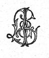
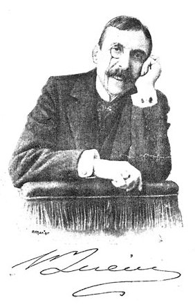

EÇA DE QUEIRÓS
A CIDADE E AS SERRAS
PORTO
LIVRARIA CHARDRON
De Lello & Irmão, editores
1901
Todos os direitos reservados
EÇA DE QUEIRÓS
A CIDADE E AS SERRAS

PORTO
LIVRARIA CHARDRON
De Lello & Irmão, editores
1901
Todos os direitos reservados
Pertence no Brasil o direito de propriedade desta obra ao
cidadão Francisco Alves, livreiro editor no Rio de Janeiro,
que, para a garantia que lhe oferece a lei n.º 496 de 1 de
Agosto de 1898, fez o competente depósito na Biblioteca
Nacional, segundo a determinação do art. 13.º da
mesma Lei.
Porto--Imprensa Moderna

A CIDADE E AS SERRAS
Obras do mesmo autor:
| Revista de Portugal. 4 grossos
volumes |
12$000 |
| As minas de Salomão. 1
volume |
$600 |
| Os Maias. 2 grossos volumes |
2$000 |
O crime do padre Amaro. Terceira
edição inteiramente refundida, recomposta, e
diferente na forma e na acção da edição
primitiva.
1 grosso volume |
1$200 |
| O primo Basílio. Quarta
edição. 1 grosso volume |
1$000 |
| A Relíquia. 1 grosso volume |
1$000 |
| O Mandarim. Quarta
edição. 1 volume |
$500 |
| Correspondência de Fradique
Mendes. 1 volume |
$600 |
| A ilustre casa de Ramires. 1
volume |
1$000 |
A CIDADE E AS SERRAS
I
O meu amigo Jacinto nasceu num palácio, com cento e nove
contos de renda em terras de semeadura, de vinhedo, de
cortiça e de olival. No Alentejo, pela Estremadura,
através das duas Beiras, densas sebes ondulando por colina e
vale, muros altos de boa pedra, ribeiras, estradas, delimitavam os
campos desta velha família agrícola que já
entulhava grão e plantava cepa em tempos de el-rei D. Dinis.
A sua quinta e casa senhorial de Tormes, no Baixo Douro, cobriam
uma serra. Entre o Tua e o Tinhela, por cinco fartas léguas,
todo o torrão lhe pagava foro. E cerrados pinheirais seus
negrejavam desde Arga até ao mar de Âncora. Mas o
palácio onde Jacinto nascera, e onde sempre habitara, era em
Paris, nos Campos Elísios, n.º 202.
[2] Seu avô, aquele gordíssimo e
riquíssimo Jacinto a quem chamavam em Lisboa o
D.
Galeão, descendo uma tarde pela travessa da Trabuqueta,
rente de um muro de quintal que uma parreira toldava, escorregou
numa casca de laranja e desabou no lajedo. Da portinha da horta
saía nesse momento um homem moreno, escanhoado, de grosso
casaco de baetão verde e botas altas de picador, que,
galhofando e com uma força fácil, levantou o enorme
Jacinto--até lhe apanhou a bengala de castão de ouro
que rolara para o lixo. Depois, demorando nele os olhos pestanudos
e pretos:
--Oh Jacinto Galeão, que andas tu aqui, a estas horas, a
rebolar pelas pedras?
E Jacinto, aturdido e deslumbrado, reconheceu o Sr. Infante D.
Miguel!
Desde essa tarde amou aquele bom Infante como nunca amara, apesar
de tão guloso, o seu ventre, e apesar de tão devoto o
seu Deus! Na sala nobre da sua casa (à Pampulha) pendurou
sobre os damascos o retrato do «seu Salvador»,
enfeitado de palmitos como um retábulo, e por baixo a
bengala que as magnânimas mãos reais tinham erguido do
lixo. Enquanto o adorável, desejado Infante penou no
desterro de Viena, o barrigudo senhor corria, sacudido na sua sege
amarela, do botequim
[3] do Zé
Maria em Belém à botica do Plácido nos
Algibebes, a gemer as saudades do
anjinho, a tramar o
regresso do
anjinho. No dia, entre todos bendito, em que a
Pérola apareceu à barra com o Messias,
engrinaldou a Pampulha, ergueu no Caneiro um monumento de
papelão e lona onde D. Miguel, tornado S. Miguel, branco, de
auréola e asas de Arcanjo, furava de cima do seu corcel de
Alter o Dragão do Liberalismo, que se estorcia vomitando a
Carta. Durante a guerra com o «outro, com o pedreiro
livre» mandava recoveiros a Santo Tirso, a S. Gens, levar ao
Rei fiambres, caixas de doce, garrafas do seu vinho de Tarrafal, e
bolsas de retrós atochadas de peças que ele ensaboava
para lhes avivar o ouro. E quando soube que o Sr. D. Miguel, com
dois velhos baús amarrados sobre um macho, tomara o caminho
de Sines e do final desterro--Jacinto
Galeão correu
pela casa, fechou todas as janelas como num luto, berrando
furiosamente:
--Também cá não fico! também cá
não fico! Não, não queria ficar na terra
perversa donde partia, esbulhado e escorraçado, aquele Rei
de Portugal que levantava na rua os Jacintos! Embarcou para
França com a mulher, a Sr.
a D. Angelina Fafes (da
tão falada
[4] casa dos Fafes
da Avelã); com o filho, o 'Cintinho, menino amarelinho,
molezinho, coberto de caroços e leicenços; com a aia
e com o moleque. Nas costas da Cantábria o paquete encontrou
tão rijos mares que a Sr.
a D. Angelina,
esguedelhada, de joelhos na enxerga do beliche, prometeu ao Senhor
dos Passos de Alcântara uma coroa de espinhos, de ouro, com
as gotas de sangue em rubis do Pegu. Em Baiona, onde arribaram,
'Cintinho teve icterícia. Na estrada de Orleães, numa
noite agreste, o eixo da berlinda em que jornadeavam partiu, e o
nédio senhor, a delicada senhora da casa da Avelã, o
menino, marcharam três horas na chuva e na lama do
exílio até uma aldeia, onde, depois de baterem como
mendigos a portas mudas, dormiram nos bancos de uma taberna. No
«Hotel dos Santos Padres», em Paris, sofreram os
terrores de um fogo que rebentara na cavalariça, sob o
quarto de
D. Galeão, e o digno fidalgo, rebolando
pelas escadas em camisa, até ao pátio, enterrou o
pé nu numa lasca de vidro. Então ergueu amargamente
ao céu o punho cabeludo, e rugiu:
--Irra! É de mais!
Logo nessa semana, sem escolher, Jacinto
Galeão
comprou a um Príncipe polaco, que depois da tomada de
Varsóvia se metera frade
[5]
cartuxo, aquele palacete dos Campos Elísios, n.º 202. E
sob o pesado ouro dos seus estuques, entre as suas ramalhudas sedas
se enconchou, descansando de tantas agitações, numa
vida de pachorra e de boa mesa, com alguns companheiros de
emigração (o desembargador Nuno Velho, o conde de
Rabacena, outros menores), até que morreu de
indigestão, de uma lampreia de escabeche que lhe mandara o
seu procurador em Montemor. Os amigos pensavam que a
Sr.
a D. Angelina Fafes voltaria ao reino. Mas a boa
senhora temia a jornada, os mares, as caleças que racham. E
não se queria separar do seu Confessor, nem do seu
Médico, que tão bem lhe compreendiam os
escrúpulos e a asma.
--Eu, por mim, aqui fico no 202 (declarara ela), ainda que me faz
falta a boa água de Alcolena... O 'Cintinho, esse, em
crescendo, que decida.
O 'Cintinho crescera. Era um moço mais esguio e
lívido que um círio, de longos cabelos corredios,
narigudo, silencioso, encafuado em roupas pretas, muito largas e
bambas; de noite, sem dormir, por causa da tosse e de
sufocações, errava em camisa com uma lamparina
através do 202; e os criados na copa sempre lhe chamavam a
Sombra. Nessa sua mudez e indecisão de sombra
surdira, ao fim
[6] do luto do
papá, o gosto muito vivo de tornear madeiras ao torno:
depois, mais tarde, com a melada flor dos seus vinte anos, brotou
nele outro sentimento, de desejo e de pasmo, pela filha do
desembargador Velho, uma menina redondinha como uma rola, educada
num convento de Paris, e tão habilidosa que esmaltava,
dourava, concertava relógios e fabricava chapéus de
feltro. No Outono de 1851, quando já se desfolhavam os
castanheiros dos Campos Elísios, o 'Cintinho cuspilhou
sangue. O médico, acarinhando o queixo e com uma ruga
séria na testa imensa, aconselhou que o menino abalasse para
o golfo Juan ou para as tépidas areias de Arcachon.
'Cintinho porém, no seu aferro de sombra, não se quis
arredar da Teresinha Velho, de quem se tornara, através de
Paris, a muda, tardonha sombra. Como uma sombra, casou; deu mais
algumas voltas ao torno; cuspiu um resto de sangue; e passou, como
uma sombra.
Três meses e três dias depois do seu enterro o meu
Jacinto nasceu.
Desde o berço, onde a avó espalhava funcho e
âmbar para afugentar a
Sorte-Ruim, Jacinto medrou com
a segurança, a rijeza, a seiva rica de um pinheiro das
dunas.
[7]Não teve sarampo e
não teve lombrigas. As Letras, a Tabuada, o Latim entraram
por ele tão facilmente como o sol por uma vidraça.
Entre os camaradas, nos pátios dos colégios, erguendo
a sua espada de lata e lançando um brado de comando, foi
logo o vencedor, o Rei que se adula, e a quem se cede a fruta das
merendas. Na idade em que se lê Balzac e Musset nunca
atravessou os tormentos da sensibilidade;--nem crepúsculos
quentes o retiveram na solidão de uma janela, padecendo de
um desejo sem forma e sem nome. Todos os seus amigos (éramos
três, contando o seu velho escudeiro preto, o Grilo) lhe
conservaram sempre amizades puras e certas--sem que jamais a
participação do seu luxo as avivasse ou fossem
desanimadas pelas evidências do seu egoísmo. Sem
coração bastante forte para conceber um amor forte, e
contente com esta incapacidade que o libertava, do amor só
experimentou o mel--esse mel que o amor reserva aos que o recolhem,
à maneira das abelhas, com ligeireza, mobilidade e cantando.
Rijo, rico, indiferente ao Estado e ao Governo dos Homens, nunca
lhe conhecemos outra ambição além de
compreender bem as Ideias Gerais; e a sua inteligência, nos
anos alegres de escolas e controvérsias, circulava dentro
das Filosofias mais
[8]densas como
enguia lustrosa na água limpa de um tanque. O seu valor,
genuíno, de fino quilate, nunca foi desconhecido, nem
desapreciado; e toda a opinião, ou mera facécia que
lançasse, logo encontrava uma aragem de simpatia e
concordância que a erguia, a mantinha embalada e rebrilhando
nas alturas. Era servido pelas coisas com docilidade e carinho;--e
não recordo que jamais lhe estalasse um botão da
camisa, ou que um papel maliciosamente se escondesse dos seus
olhos, ou que ante a sua vivacidade e pressa uma gaveta
pérfida emperrasse. Quando um dia, rindo com descrido riso
da Fortuna e da sua Roda, comprou a um sacristão espanhol um
Décimo de Lotaria, logo a Fortuna, ligeira e ridente sobre a
sua Roda, correu num fulgor, para lhe trazer quatrocentas mil
pesetas. E no céu as Nuvens, pejadas e lentas, se avistavam
Jacinto sem guarda-chuva, retinham com reverência as suas
águas até que ele passasse... Ah! o âmbar e o
funcho da Sr.
a D. Angelina tinham escorraçado do
seu destino, bem triunfalmente e para sempre, a
Sorte-Ruim!
A amorável avó (que eu conheci obesa, com barba)
costumava citar um soneto natalício do desembargador Nunes
Velho contendo um verso de boa lição:
[9]
Sabei, senhora, que esta Vida é um
rio...
Pois um rio de Verão, manso, translúcido,
harmoniosamente estendido sobre uma areia macia e alva, por entre
arvoredos fragrantes e ditosas aldeias, não ofereceria
àquele que o descesse num barco de cedro, bem toldado e bem
almofadado, com frutas e Champanhe a refrescar em gelo, um Anjo
governando ao leme, outros Anjos puxando à sirga, mais
segurança e doçura do que a Vida oferecia ao meu
amigo Jacinto.
Por isso nós lhe chamávamos «o Príncipe
da Grã-Ventura»!
Jacinto e eu, José Fernandes, ambos nos encontrámos e
acamaradámos em Paris, nas Escolas do Bairro Latino--para
onde me mandara meu bom tio Afonso Fernandes Lorena de Noronha e
Sande, quando aqueles malvados me riscaram da Universidade por eu
ter esborrachado, numa tarde de procissão, na Sofia, a cara
sórdida do dr. Pais Pita.
Ora nesse tempo Jacinto concebera uma Ideia... Este Príncipe
concebera a Ideia de que «o homem só é
superiormente feliz quando é superiormente
civilizado». E por homem civilizado o meu camarada entendia
aquele
[10]que, robustecendo a sua
força pensante com todas as noções adquiridas
desde Aristóteles, e multiplicando a potência corporal
dos seus órgãos com todos os mecanismos inventados
desde Terâmenes, criador da roda, se torna um
magnífico Adão, quase omnipotente, quase omnisciente,
e apto portanto a recolher dentro de uma sociedade e nos limites do
Progresso (tal como ele se comportava em 1875) todos os gozos e
todos os proveitos que resultam de Saber e de Poder... Pelo menos
assim Jacinto formulava copiosamente a sua Ideia, quando
conversávamos de fins e destinos humanos, sorvendo bocks
poeirentos, sob o toldo das cervejarias filosóficas, no
Boulevard Saint-Michel.
Este conceito de Jacinto impressionara os nossos camaradas de
cenáculo, que tendo surgido para a vida intelectual, de 1866
a 1875, entre a batalha de Sadova e a batalha de Sedan, e ouvindo
constantemente, desde então, aos técnicos e aos
filósofos, que fora a Espingarda-de-Agulha que vencera em
Sadova e fora o Mestre-de-Escola quem vencera em Sedan, estavam
largamente preparados a acreditar que a felicidade dos
indivíduos, como a das nações, se realiza pelo
ilimitado desenvolvimento da Mecânica e da
Erudição. Um desses moços mesmo, o nosso
inventivo Jorge
[11]Carlande, reduzira
a teoria de Jacinto, para lhe facilitar a circulação
e lhe condensar o brilho, a uma forma algébrica:
| Suma ciência |
} |
|
| X |
Suma potência |
| Suma felicidade |
|
E durante dias, do Odeon à Sorbona, foi louvada pela
mocidade positiva a
Equação Metafísica de
Jacinto.
Para Jacinto, porém, o seu conceito não era meramente
metafísico e lançado pelo gozo elegante de exercer a
razão especulativa:--mas constituía uma regra, toda
de realidade e de utilidade, determinando a conduta, modalizando a
vida. E já a esse tempo, em concordância com o seu
preceito--ele se surtira da
Pequena Enciclopédia dos
Conhecimentos Universais em setenta e cinco volumes e
instalara, sobre os telhados do 202, num mirante
envidraçado, um telescópio. Justamente com esse
telescópio me tornou ele palpável a sua ideia, numa
noite de Agosto, de mole e dormente calor. Nos céus remotos
lampejavam relâmpagos lânguidos. Pela Avenida dos
Campos Elísios, os fiacres rolavam para as frescuras do
Bosque, lentos, abertos, cansados, transbordando de vestidos
claros.
[12]--Aqui tens tu, Zé
Fernandes, (começou Jacinto, encostado à janela do
mirante) a teoria que me governa, bem comprovada. Com estes olhos
que recebemos da Madre natureza, lestos e sãos, nós
podemos apenas distinguir além, através da Avenida,
naquela loja, uma vidraça alumiada. Mais nada! Se eu
porém aos meus olhos juntar os dois vidros simples de um
binóculo de corridas, percebo, por trás da
vidraça, presuntos, queijos, boiões de geleia e
caixas de ameixa seca. Concluo portanto que é uma mercearia.
Obtive uma noção; tenho sobre ti, que com os olhos
desarmados vês só o luzir da vidraça, uma
vantagem positiva. Se agora, em vez destes vidros simples, eu
usasse os do meu telescópio, de composição
mais científica, poderia avistar além, no planeta
Marte, os mares, as neves, os canais, o recorte dos golfos, toda a
geografia de um astro que circula a milhares de léguas dos
Campos Elísios. É outra noção, e
tremenda! Tens aqui pois o olho primitivo, o da Natureza, elevado
pela Civilização à sua máxima
potência de visão. E desde já, pelo lado do
olho portanto, eu, civilizado, sou mais feliz que o incivilizado,
porque descubro realidades do Universo que ele não suspeita
e de que está privado. Aplica esta prova a todos os
órgãos e compreendes o meu princípio.
Enquanto
[13] à
inteligência, e à felicidade que dela se tira pela
incansável acumulação das
noções, só te peço que compares Renan e
o Grilo... Claro é portanto que nos devemos cercar de
Civilização nas máximas
proporções para gozar nas máximas
proporções a vantagem de viver. Agora concordas,
Zé Fernandes?
Não me parecia irrecusavelmente certo que Renan fosse mais
feliz que o Grilo; nem eu percebia que vantagem espiritual ou
temporal se colha em distinguir através do espaço
manchas num astro, ou através da Avenida dos Campos
Elísios presuntos numa vidraça. Mas concordei, porque
sou bom, e nunca desalojarei um espírito do conceito onde
ele encontra segurança, disciplina e motivo de energia.
Desabotoei o colete, e lançando um gesto para o lado dos
cafés e das luzes:
--Vamos então beber, nas máximas
proporções,
brandy and soda, com gelo!
Por uma conclusão bem natural, a ideia de
Civilização, para Jacinto, não se separava da
imagem de Cidade, de uma enorme Cidade, com todos os seus vastos
órgãos funcionando poderosamente. Nem este meu
supercivilizado amigo compreendia que longe de Armazéns
servidos por três mil caixeiros; e de Mercados onde se
despejam os vergéis e lezírias de trinta
províncias; e de Bancos em que retine
[14]o ouro universal; e de Fábricas
fumegando com ânsia, inventando com ânsia; e de
Bibliotecas abarrotadas, a estalar, com a papelada dos
séculos; e de fundas milhas de ruas, cortadas, por baixo e
por cima, de fios de telégrafos, de fios de telefones, de
canos de gases, de canos de fezes; e da fila atroante dos
ónibus, tramways, carroças, velocípedes,
calhambeques, parelhas de luxo; e de dois milhões de uma
vaga humanidade, fervilhando, a ofegar, através da
Polícia, na busca dura do pão ou sob a ilusão
do gozo--o homem do século XIX pudesse saborear, plenamente,
a delícia de viver!
Quando Jacinto, no seu quarto do 202, com as varandas abertas sobre
os lilases, me desenrolava estas imagens, todo ele crescia,
iluminado. Que criação augusta, a da Cidade!
Só por ela, Zé Fernandes, só por ela, pode o
homem soberbamente afirmar a sua alma!...
--Oh Jacinto, e a religião? Pois a religião
não prova a alma?
Ele encolhia os ombros. A religião! A religião
é o desenvolvimento sumptuoso de um instinto rudimentar,
comum a todos os brutos, o terror. Um cão lambendo a
mão do dono, de quem lhe vem o osso ou o chicote, já
constitui toscamente um devoto, o consciente devoto, prostrado em
rezas ante o Deus que
[15] distribui o
céu ou o inferno!... Mas o telefone! o fonógrafo!
--Aí tens tu, o fonógrafo!... Só o
fonógrafo, Zé Fernandes, me faz verdadeiramente
sentir a minha superioridade de ser pensante e me separa do bicho.
Acredita, não há senão a Cidade, Zé
Fernandes, não há senão a Cidade!
E depois (acrescentava) só a Cidade lhe dava a
sensação, tão necessária à vida
como o calor, da solidariedade humana. E no 202, quando considerava
em redor, nas densas massas do casario de Paris, dois
milhões de seres arquejando na obra da
Civilização (para manter na natureza o domínio
dos Jacintos!) sentia um sossego, um conchego, só
comparáveis ao do peregrino, que, ao atravessar o deserto,
se ergue no seu dromedário, e avista a longa fila da
caravana marchando, cheia de lumes e de armas...
Eu murmurava, impressionado:
--Caramba!
Ao contrário no campo, entre a inconsciência e a
impassibilidade da Natureza, ele tremia com o terror da sua
fragilidade e da sua solidão. Estava aí como perdido
num mundo que lhe não fosse fraternal; nenhum silvado
encolheria os espinhos para que ele passasse; se gemesse com fome
nenhuma árvore,
[16]por mais
carregada, lhe estenderia o seu fruto na ponta compassiva de um
ramo. Depois, em meio da Natureza, ele assistia à
súbita e humilhante inutilização de todas as
suas faculdades superiores. De que servia, entre plantas e
bichos--ser um Génio ou ser um Santo? As searas não
compreendem as
Geórgicas; e fora necessário o
socorro ansioso de Deus, e a inversão de todas as leis
naturais, e um violento milagre para que o lobo de Agubio
não devorasse S. Francisco de Assis, que lhe sorria e lhe
estendia os braços e lhe chamava «meu irmão
lobo»! Toda a intelectualidade, nos campos, se esteriliza, e
só resta a bestialidade. Nesses reinos crassos do Vegetal e
do Animal duas únicas funções se mantêm
vivas, a nutritiva e a procriadora. Isolada, sem
ocupação, entre focinhos e raízes que
não cessam de sugar e de pastar, sufocando no cálido
bafo da universal fecundação, a sua pobre alma toda
se engelhava, se reduzia a uma migalha de alma, uma fagulhazinha
espiritual a tremeluzir, como morta, sobre um naco de
matéria; e nessa matéria dois instintos surdiam,
imperiosos e pungentes, o de devorar e o de gerar. Ao cabo de uma
semana rural, de todo o seu ser tão nobremente composto
só restava um estômago e por baixo um falo! A alma?
Sumida sob a besta. E necessitava
[17]correr, reentrar na Cidade, mergulhar nas
ondas lustrais da Civilização, para largar nelas a
crosta vegetativa, e ressurgir reumanizado, de novo espiritual e
Jacíntico!
E estas requintadas metáforas do meu amigo exprimiam
sentimentos reais--que eu testemunhei, que muito me divertiram, no
único passeio que fizemos ao campo, à bem
amável e bem sociável floresta de Montmorency. Oh
delícias de entremez, Jacinto entre a Natureza! Logo que se
afastava dos pavimentos de madeira, do macadame, qualquer
chão que os seus pés calcassem o enchia de
desconfiança e terror. Toda a relva, por mais crestada, lhe
parecia ressumar uma humidade mortal. De sob cada torrão, da
sombra de cada pedra, receava o assalto de lacraus, de
víboras, de formas rastejantes e viscosas. No silêncio
do bosque sentia um lúgubre despovoamento do Universo.
Não tolerava a familiaridade dos galhos que lhe
roçassem a manga ou a face. Saltar uma sebe era para ele um
acto degradante que o retrogradava ao macaco inicial. Todas as
flores que não tivesse já encontrado em jardins,
domesticadas por longos séculos de servidão
ornamental, o inquietavam como venenosas. E considerava de uma
melancolia funambulesca certos modos e formas do Ser inanimado, a
pressa esperta e vã dos regatinhos,
[18]a careca dos rochedos, todas as
contorções do arvoredo e o seu resmungar solene e
tonto.
Depois de uma hora, naquele honesto bosque de Montmorency, o meu
pobre amigo abafava, apavorado, experimentando já esse lento
minguar e sumir de alma que o tornava como um bicho entre bichos.
Só desanuviou quando penetramos no lajedo e no gás de
Paris--e a nossa vitória quase se despedaçou contra
um ónibus retumbante, atulhado de cidadãos. Mandou
descer pelos Boulevards, para dissipar, na sua grossa
sociabilidade, aquela materialização em que sentia a
cabeça pesada e vaga como a de um boi. E reclamou que eu o
acompanhasse ao teatro das Variedades para sacudir, com os
estribilhos da
Femme à Papa, o rumor importuno que
lhe ficara dos melros cantando nos choupos altos.
Este delicioso Jacinto fizera então vinte e três anos,
e era um soberbo moço em quem reaparecera a força dos
velhos Jacintos rurais. Só pelo nariz, afilado, com narinas
quase transparentes, de uma mobilidade inquieta, como se andasse
fariscando perfumes, pertencia às delicadezas do
século XIX. O cabelo ainda se conservava, ao modo das eras
rudes, crespo e quase lanígero: e o bigode, como o de um
Celta, caía em fios sedosos, que ele necessitava aparar e
frisar. Todo o seu fato, as espessas
[19]gravatas de cetim escuro que uma pérola
prendia, as luvas de anta branca, o verniz das botas, vinham de
Londres em caixotes de cedro; e usava sempre ao peito uma flor,
não natural, mas composta destramente pela sua ramalheteira
com pétalas de flores dissemelhantes, cravo, azálea,
orquídea ou tulipa, fundidas na mesma haste entre uma leve
folhagem de funcho.
Em 1880, em Fevereiro, numa cinzenta e arrepiada manhã de
chuva, recebi uma carta de meu bom tio Afonso Fernandes, em que,
depois de lamentações sobre os seus setenta anos, os
seus males hemorroidais, e a pesada gerência dos seus bens
«que pedia homem mais novo, com pernas mais rijas»--me
ordenava que recolhesse à nossa casa de Guiães, no
Douro! Encostado ao mármore partido do fogão, onde na
véspera a minha Nini deixara um espartilho embrulhado no
Jornal dos Debates, censurei severamente meu tio que assim
cortava em botão, antes de desabrochar, a flor do meu Saber
Jurídico. Depois num Post-Scriptum ele
acrescentava--«O tempo aqui está lindo, o que se pode
chamar de rosas, e tua santa tia muito se recomenda, que anda
lá pela cozinha, porque vai hoje em trinta e seis
[20]anos que casámos, temos
cá o abade e o Quintais a jantar, e ela quis fazer uma sopa
dourada».
Deitando uma acha ao lume, pensei como devia estar boa a sopa
dourada da tia Vicência. Há quantos anos não a
provava, nem o leitão assado, nem o arroz de forno da nossa
casa! Com o tempo assim tão lindo, já as mimosas do
nosso pátio vergariam sob os seus grandes cachos amarelos.
Um pedaço de céu azul, do azul de Guiães, que
outro não há tão lustroso e macio, entrou pelo
quarto, alumiou, sobre a puída tristeza do tapete, relvas,
ribeirinhos, malmequeres e flores de trevo de que meus olhos
andavam aguados. E, por entre as bambinelas de sarja, passou um ar
fino e forte e cheiroso de serra e de pinheiral.
Assobiando um
fado meigo tirei debaixo da cama a minha velha
mala, e meti solicitamente entre calças e peúgas um
Tratado de Direito Civil, para aprender enfim, nos vagares da
aldeia, estendido sob a faia, as leis que regem os homens. Depois,
nessa tarde, anunciei a Jacinto que partia para Guiães. O
meu camarada recuou com um surdo gemido de espanto e piedade:
--Para Guiães!... Oh Zé Fernandes, que horror!
E toda essa semana me lembrou solicitamente
[21]confortos de que eu me deveria prover para que
pudesse conservar, nos ermos silvestres, tão longe da
Cidade, uma pouca de alma dentro de um pouco de corpo. «Leva
uma poltrona! Leva a
Enciclopédia Geral! Leva caixas
de aspáragos!...»
Mas para o meu Jacinto, desde que assim me arrancavam da Cidade, eu
era arbusto desarreigado que não reviverá. A
mágoa com que me acompanhou ao comboio conviria
excelentemente ao meu funeral. E quando fechou sobre mim a
portinhola, gravemente, supremamente, como se cerra uma grade de
sepultura, eu quase solucei--com saudades minhas.
Cheguei a Guiães. Ainda restavam flores nas mimosas do nosso
pátio; comi com delícias a sopa dourada da tia
Vicência; de tamancos nos pés assisti à ceifa
dos milhos. E assim de colheitas a lavras, crestando ao sol das
eiras, caçando a perdiz nos matos geados, rachando a
melancia fresca na poeira dos arraiais, arranchando a magustos,
serandando à candeia, atiçando fogueiras de S.
João, enfeitando presépios de Natal, por ali me
passaram docemente sete anos, tão atarefados que nunca
logrei abrir o Tratado de Direito Civil, e tão singelos que
apenas me recordo quando, em vésperas de S. Nicolau, o
abade
[22] caiu da égua à
porta do Brás das Cortes. De Jacinto só recebia
raramente algumas linhas, escrevinhadas à pressa por entre o
tumulto da Civilização. Depois, num Setembro muito
quente, ao lidar da vindima, meu bom tio Afonso Fernandes morreu,
tão quietamente, Deus seja louvado por esta graça,
como se cala um passarinho ao fim do seu bem cantado e bem voado
dia. Acabei pela aldeia a roupa do luto. A minha afilhada Joaninha
casou na matança do porco. Andaram obras no nosso telhado.
Voltei a Paris.
II
Era de novo Fevereiro, e um fim de tarde arrepiado e cinzento,
quando eu desci os Campos Elísios em demanda do 202. Adiante
de mim caminhava, levemente curvado, um homem que, desde as botas
rebrilhantes até às abas recurvas do chapéu
donde fugiam anéis de um cabelo crespo, ressumava
elegância e a familiaridade das coisas finas. Nas
mãos, cruzadas atrás das costas, calçadas de
anta branca, sustentava uma bengala grossa com castão de
cristal. E só quando ele parou ao portão do 202
reconheci o nariz afilado, os fios do bigode corredios e
sedosos.
--Oh Jacinto!
--Oh Zé Fernandes!
O abraço que nos enlaçou foi tão
alvoroçado que o meu chapéu rolou na lama. E ambos
murmurávamos, comovidos, entrando a grade:
[24] --Há sete anos!...
--Há sete anos!...
E, todavia, nada mudara durante esses sete anos no jardim do 202!
Ainda entre as duas áleas bem areadas se arredondava uma
relva, mais lisa e varrida que a lã de um tapete. No meio o
vaso coríntico esperava Abril para resplandecer com tulipas
e depois Junho para transbordar de margaridas. E ao lado das
escadas limiares, que uma vidraçaria toldava, as duas magras
Deusas de pedra, do tempo de D. Galeão, sustentavam as
antigas lâmpadas de globos foscos, onde já silvava o
gás.
Mas dentro, no peristilo, logo me surpreendeu um elevador instalado
por Jacinto--apesar do 202 ter somente dois andares, e ligados por
uma escadaria tão doce que nunca ofendera a asma da
Sr.
a D. Angelina! Espaçoso, tapetado, ele
oferecia, para aquela jornada de sete segundos, confortos
numerosos, um divã, uma pele de urso, um roteiro das ruas de
Paris, prateleiras gradeadas com charutos e livros. Na
antecâmara, onde desembarcámos, encontrei a
temperatura macia e tépida de uma tarde de Maio, em
Guiães. Um criado, mais atento ao termómetro que um
piloto à agulha, regulava destramente a boca dourada do
calorífero. E perfumadores entre palmeiras, como num
terraço santo de Benares,
[25]esparziam um vapor, aromatizando e
salutarmente humedecendo aquele ar delicado e superfino.
Eu murmurei, nas profundidades do meu assombrado ser:
--Eis a Civilização!
Jacinto empurrou uma porta, penetrámos numa nave cheia de
majestade e sombra, onde reconheci a Biblioteca por tropeçar
numa pilha monstruosa de livros novos. O meu amigo roçou de
leve o dedo na parede: e uma coroa de lumes eléctricos,
refulgindo entre os lavores do tecto, alumiou as estantes
monumentais, todas de ébano. Nelas repousavam mais de trinta
mil volumes, encadernados em branco, em escarlate, em negro, com
retoques de ouro, hirtos na sua pompa e na sua autoridade como
doutores num concílio.
Não contive a minha admiração:
--Oh Jacinto! Que depósito!
Ele murmurou, num sorriso descorado:
--Há que ler, há que ler...
Reparei então que o meu amigo emagrecera: e que o nariz se
lhe afilara mais entre duas rugas muito fundas, como as de um
comediante cansado. Os anéis do seu cabelo lanígero
rareavam sobre a testa, que perdera a antiga serenidade de
mármore bem polido. Não frisava agora o bigode
murcho, caído
[26]em fios
pensativos. Também notei que corcovava.
Ele erguera uma tapeçaria--entrámos no seu gabinete
de trabalho, que me inquietou. Sobre a espessura dos tapetes
sombrios os nossos passos perderam logo o som, e como a realidade.
O damasco das paredes, os divãs, as madeiras, eram verdes,
de um verde profundo de folha de louro. Sedas verdes envolviam as
luzes eléctricas, dispersas em lâmpadas tão
baixas que lembravam estrelas caídas por cima das mesas,
acabando de arrefecer e morrer: só uma rebrilhava, nua e
clara, no alto de uma estante quadrada, esguia, solitária
como uma torre numa planície, e de que o lume parecia ser o
farol melancólico. Um biombo de laca verde, fresco verde de
relva, resguardava a chaminé de mármore verde, verde
de mar sombrio, onde esmoreciam as brasas de uma lenha
aromática. E entre aqueles verdes reluzia, por sobre peanhas
e pedestais, toda uma Mecânica sumptuosa, aparelhos,
lâminas, rodas, tubos, engrenagens, hastes, friezas,
rigidezes de metais...
Mas Jacinto batia nas almofadas do divã, onde se enterrara
com um modo cansado que eu não lhe conhecia:
--Para aqui, Zé Fernandes, para aqui! É
necessário reatarmos estas nossas vidas, tão
[27]apartadas há sete anos!...
Em Guiães, sete anos! Que fizeste tu?
--E tu, que tens feito, Jacinto?
O meu amigo encolheu molemente os ombros. Vivera--cumprira com
serenidade todas as funções, as que pertencem
à matéria e as que pertencem ao
espírito...
--E acumulaste Civilização, Jacinto! Santo Deus...
Está tremendo, o 202!
Ele espalhou em torno um olhar onde já não faiscava a
antiga vivacidade:
--Sim, há confortos... Mas falta muito! A humanidade ainda
está mal apetrechada, Zé Fernandes... E a vida
conserva resistências.
Subitamente, a um canto, repicou a campainha do telefone. E
enquanto o meu amigo, curvado sobre a placa, murmurava impaciente
«
Está lá?--Está
lá?», examinei curiosamente, sobre a sua imensa
mesa de trabalho, uma estranha e miúda legião de
instrumentozinhos de níquel, de aço, de cobre, de
ferro, com gumes, com argolas, com tenazes, com ganchos, com
dentes, expressivos todos, de utilidades misteriosas. Tomei um que
tentei manejar--e logo uma ponta malévola me picou um dedo.
Nesse instante rompeu doutro canto um «tic-tic-tic»
açodado, quase ansioso. Jacinto acudiu, com a face no
telefone:
[28] --Vê aí o
telégrafo!... Ao pé do divã. Uma tira de papel
que deve estar a correr.
E, com efeito, de uma redoma de vidro posta numa coluna, e contendo
um aparelho esperto e diligente, escorria para o tapete, como uma
ténia, a longa tira de papel com caracteres impressos, que
eu, homem das serras, apanhei, maravilhado. A linha, traçada
em azul, anunciava ao meu amigo Jacinto que a fragata russa
Azoff entrara em Marselha com avaria!
Já ele abandonara o telefone. Desejei saber, inquieto, se o
prejudicava directamente aquela avaria da
Azoff.
--Da
Azoff?... A avaria? A mim?... Não! É uma
notícia.
Depois, consultando um relógio monumental que, ao fundo da
Biblioteca, marcava a hora de todas as Capitais e o curso de todos
os Planetas:
--Eu preciso escrever uma carta, seis linhas... Tu esperas,
não, Zé Fernandes? Tens aí os jornais de
Paris, da noite; e os de Londres, desta manhã. As
Ilustrações além, naquela pasta de couro com
ferragens.
Mas eu preferi inventariar o gabinete, que dava à minha
profanidade serrana todos os gostos de uma iniciação.
Aos lados da cadeira de Jacinto pendiam gordos tubos
acústicos,
[29]por onde ele
decerto soprava as suas ordens através do 202. Dos
pés da mesa cordões túmidos e moles, coleando
sobre o tapete, corriam para os recantos de sombra à maneira
de cobras assustadas. Sobre uma banquinha, e reflectida no seu
verniz como na água de um poço, pousava uma
Máquina de escrever: e adiante era uma imensa Máquina
de calcular, com fileiras de buracos donde espreitavam, esperando,
números rígidos e de ferro. Depois parei em frente da
estante que me preocupava, assim solitária, à maneira
de uma torre numa planície, com o seu alto farol. Toda uma
das suas faces estava repleta de Dicionários; a outra de
Manuais; a outra de Atlas; a última de Guias, e entre eles,
abrindo um fólio, encontrei o Guia das ruas de Samarcanda.
Que maciça torre de informação! Sobre
prateleiras admirei aparelhos que não compreendia:--um
composto de lâminas de gelatina, onde desmaiavam,
meio-chupadas, as linhas de uma carta, talvez amorosa; outro, que
erguia sobre um pobre livro brochado, como para o decepar, um
cutelo funesto; outro avançando a boca de uma tuba, toda
aberta para as vozes do invisível. Cingidos aos umbrais,
liados às cimalhas, luziam arames, que fugiam através
do tecto, para o espaço. Todos mergulhavam em forças
universais, todos
[30]transmitiam
forças universais. A Natureza convergia disciplinada ao
serviço do meu amigo e entrara na sua domesticidade!...
Jacinto atirou uma exclamação impaciente:
--Oh, estas penas eléctricas!... Que seca!
Amarrotara com cólera a carta começada--eu escapei,
respirando, para a Biblioteca. Que majestoso armazém dos
produtos do Raciocínio e da Imaginação! Ali
jaziam mais de trinta mil volumes, e todos decerto essenciais a uma
cultura humana. Logo à entrada notei, em ouro numa lombada
verde, o nome de Adam Smith. Era pois a região dos
Economistas. Avancei--e percorri, espantado, oito metros de
Economia Política. Depois avistei os Filósofos e os
seus comentadores, que revestiam toda uma parede, desde as escolas
Pré-Socráticas até às escolas
Neopessimistas. Naquelas pranchas se acastelavam mais de dois mil
sistemas--e que todos se contradiziam. Pelas
encadernações logo se deduziam as doutrinas: Hobbes,
em baixo, era pesado, de couro negro; Platão, em cima,
resplandecia, numa pelica pura e alva. Para diante começavam
as Histórias Universais. Mas aí uma imensa pilha de
livros brochados, cheirando a tinta nova e a documentos
[31]novos, subia contra a estante,
como fresca terra de aluvião tapando uma riba secular.
Contornei essa colina, mergulhei na secção das
Ciências Naturais, peregrinando, num assombro crescente, da
Orografia para a Paleontologia, e da Morfologia para a
Cristalografia. Essa estante rematava junto de uma janela rasgada
sobre os Campos Elísios. Apartei as cortinas de veludo--e
por trás descobri outra portentosa rima de volumes, todos de
História Religiosa, de Exegese Religiosa, que trepavam
montanhosamente até aos últimos vidros, vedando, nas
manhãs mais cândidas, o ar e a luz do Senhor.
Mas depois rebrilhava, em marroquins claros, a estante
amável dos Poetas. Como um repouso para o espírito
esfalfado de todo aquele saber positivo, Jacinto aconchegara
aí um recanto, com um divã e uma mesa de limoeiro,
mais lustrosa que um fino esmalte, coberta de charutos, de cigarros
do Oriente, de tabaqueiras do século XVIII. Sobre um cofre
de madeira lisa pousava ainda, esquecido, um prato de damascos
secos do Japão. Cedi à sedução das
almofadas; trinquei um damasco, abri um volume; e senti
estranhamente, ao lado, um zumbido, como de um insecto de asas
harmoniosas. Sorri à ideia que fossem abelhas, compondo o
seu
[32]mel naquele maciço de
versos em flor. Depois percebi que o sussurro remoto e dormente
vinha do cofre de mogno, de parecer tão discreto. Arredei
uma
Gazeta de França; e descortinei um cordão
que emergia de um orifício, escavado no cofre, e rematava
num funil de marfim. Com curiosidade, encostei o funil a esta minha
confiada orelha, afeita à singeleza dos rumores da serra. E
logo uma Voz, muito mansa, mas muito decidida, aproveitando a minha
curiosidade para me invadir e se apoderar do meu entendimento,
sussurrou capciosamente:
--...«E assim, pela disposição dos cubos
diabólicos, eu chego a verificar os espaços
hipermágicos!...»
Pulei, com um berro.
--Oh Jacinto, aqui há um homem! Está aqui um homem a
falar dentro de uma caixa!
O meu camarada, habituado aos prodígios, não se
alvoroçou:
--É o Conferençofone... Exactamente como o
Teatrofone; somente aplicado às escolas e às
conferências. Muito cómodo!... Que diz o homem,
Zé Fernandes?
Eu considerava o cofre, ainda esgazeado:
--Eu sei! Cubos diabólicos, espaços mágicos,
toda a sorte de horrores...
Senti dentro o sorriso superior de Jacinto:
[33] --Ah, é o coronel
Dorchas... Lições de Metafísica Positiva sobre
a Quarta Dimensão... Conjecturas, uma maçada! Ouve
lá, tu hoje jantas comigo e com uns amigos, Zé
Fernandes?
--Não, Jacinto... Estou ainda enfardelado pelo alfaiate da
serra!
E voltei ao gabinete mostrar ao meu camarada o jaquetão de
flanela grossa, a gravata de pintinhas escarlates, com que ao
domingo, em Guiães, visitava o Senhor. Mas Jacinto afirmou
que esta simplicidade montesina interessaria os seus convidados,
que eram dois artistas... Quem? O autor do
Coração
Triplo, um Psicólogo Feminista, de agudeza
transcendente, Mestre muito experimentado e muito consultado em
Ciências Sentimentais; e Vorcan, um pintor mítico, que
interpretara etereamente, havia um ano, a simbolia rapsódica
do cerco de Tróia, numa vasta composição,
Helena Devastadora...
Eu coçava a barba:
--Não, Jacinto, não... Eu venho de Guiães, das
serras; preciso entrar em toda esta civilização,
lentamente, com cautela, senão rebento. Logo na mesma tarde
a electricidade, e o conferençofone, e os espaços
hipermágicos e o feminista, e o etéreo, e a simbolia
devastadora, é excessivo! Volto amanhã.
[34]Jacinto dobrava vagarosamente a
sua carta, onde metera sem rebuço (como convinha à
nossa fraternidade) duas violetas brancas tiradas do ramo que lhe
floria o peito.
--Amanhã, Zé Fernandes, tu vens antes de
almoço, com as tuas malas dentro de um fiacre, para te
instalares no 202, no teu quarto. No Hotel são
embaraços, privações. Aqui tens o telefone, o
teatrofone, livros...
Aceitei logo, com simplicidade. E Jacinto, embocando um tubo
acústico, murmurou:
--Grilo!
Da parede, recoberta de damasco, que subitamente e sem rumor se
fendeu, surdiu o seu velho escudeiro (aquele moleque que viera com
D. Galeão), que eu me alegrei de encontrar tão
rijo, mais negro, reluzente e venerável na sua tesa gravata,
no seu colete branco de botões de ouro. Ele também
estimou ver de novo «o siô Fernandes». E, quando
soube que eu ocuparia o quarto do avô Jacinto, teve um claro
sorriso de preto, em que envolveu o seu senhor, no contentamento de
o sentir enfim reprovido de uma família.
--Grilo, dizia Jacinto, esta carta a Madame de Oriol... Escuta!
Telefona para casa dos Trèves que os espiritistas só
estão livres no domingo... Escuta! Eu tomo uma duche
[35]antes de jantar, tépida, a
17. Fricção com malva-rosa.
E caindo pesadamente para cima do divã, com um bocejo
arrastado e vago:
--Pois é verdade, meu Zé Fernandes, aqui estamos,
como há sete anos, neste velho Paris...
Mas eu não me arredava da mesa, no desejo de completar a
minha iniciação:
--Oh Jacinto, para que servem todos estes instrumentozinhos? Houve
já aí um desavergonhado que me picou. Parecem
perversos... São úteis?
Jacinto esboçou, com languidez, um gesto que os
sublimava.--Providenciais, meu filho, absolutamente providenciais,
pela simplificação que dão ao trabalho!
Assim... E apontou. Este arrancava as penas velhas; o outro
numerava rapidamente as páginas de um manuscrito;
aqueloutro, além, raspava emendas... E ainda os havia para
colar estampilhas, imprimir datas, derreter lacres, cintar
documentos...
--Mas com efeito, acrescentou, é uma seca. Com as molas, com
os bicos, às vezes magoam, ferem... Já me sucedeu
inutilizar cartas por as ter sujado com dedadas de sangue. É
uma maçada!
Então, como o meu amigo espreitara novamente
[36]o relógio monumental, não lhe
quis retardar a consolação da ducha e da
malva-rosa.
--Bem, Jacinto, já te revi, já me contentei... Agora
até amanhã, com as malas.
--Que diabo, Zé Fernandes, espera um momento... Vamos pela
sala de jantar. Talvez te tentes!
E, através da Biblioteca, penetramos na sala de jantar,--que
me encantou pelo seu luxo sereno e fresco. Uma madeira branca,
lacada, mais lustrosa e macia que cetim, revestia as paredes,
encaixilhando medalhões de damasco cor de morango, de
morango muito maduro e esmagado: os aparadores, discretamente
lavrados em florões e rocalhas, resplandeciam com a mesma
laca nevada: e damascos amorangados estofavam também as
cadeiras, brancas, muito amplas, feitas para a lentidão de
gulas delicadas, de gulas intelectuais.
--Viva o meu Príncipe! Sim senhor... Eis aqui um comedouro
muito compreensível e muito repousante, Jacinto!
--Então janta, homem!
Mas já eu me começava a inquietar, reparando que a
cada talher correspondiam seis garfos, e todos de feitios
astuciosos. E mais me impressionei quando Jacinto me desvendou
[37]que um era para as ostras, outro
para o peixe, outro para as carnes, outro para os legumes, outro
para as frutas, outro para o queijo! Simultaneamente, com uma
sobriedade que louvaria Salomão, só dois copos, para
dois vinhos:--um Bordéus rosado em infusas de cristal, e
Champanhe gelando dentro de baldes de prata. Todo um aparador
porém vergava, sob o luxo redundante, quase assustador de
águas--águas oxigenadas, águas carbonatadas,
águas fosfatadas, águas esterilizadas, águas
de sais, outras ainda, em garrafas bojudas, com tratados
terapêuticos impressos em rótulos.
--Santíssimo nome de Deus, Jacinto! Então és
ainda o mesmo tremendo bebedor de água, hein?...
Un
aquatico! como dizia o nosso poeta chileno, que andava a
traduzir Klopstock.
Ele derramou, por sobre toda aquela garrafaria encarapuçada
em metal, um olhar desconsolado:
--Não... É por causa das águas da Cidade,
contaminadas, atulhadas de micróbios... Mas ainda não
encontrei uma boa água que me convenha, que me
satisfaça... Até sofro sede.
Desejei então conhecer o jantar do Psicólogo e do
Simbolista--traçado, ao lado dos
[38]talheres, em tinta vermelha, sobre
lâminas de marfim. Começava honradamente por ostras
clássicas, de Marennes. Depois aparecia uma sopa de
alcachofras e ovas de carpa...
--É bom?
Jacinto encolheu desinteressadamente os ombros:
--Sim... Eu não tenho nunca apetite, já há
tempos... Já há anos.
Do outro prato só compreendi que continha frangos e
túbaras. Depois saboreariam aqueles senhores um filete de
veado, macerado em Xerez, com geleia de noz. E por sobremesa
simplesmente laranjas geladas em éter.
--Em éter, Jacinto?
O meu amigo hesitou, esboçou com os dedos a
ondulação de um aroma que se evola.
--É novo... Parece que o éter desenvolve, faz aflorar
a alma das frutas...
Curvei a cabeça ignara, murmurei nas minhas
profundidades:
--Eis a Civilização!
E, descendo os Campos Elísios, encolhido no paletó a
cogitar neste prato simbólico, considerava a rudeza e
atolado atraso da minha Guiães, onde desde séculos a
alma das laranjas permanece ignorada e desaproveitada dentro dos
gomos sumarentos, por todos
[39]aqueles pomares que ensombram e perfumam o
vale, da Roqueirinha a Sandofim! Agora porém, bendito Deus,
na convivência de um tão grande iniciado como Jacinto,
eu compreenderia todas as finuras e todos os poderes da
Civilização.
E, (melhor ainda para a minha ternura!) contemplaria a raridade de
um homem que, concebendo uma ideia da Vida, a realiza--e
através dela e por ela recolhe a felicidade perfeita.
Bem se afirmara este Jacinto, na verdade, como Príncipe da
Grã-Ventura!
III
No 202, todas as manhãs, às nove horas, depois do meu
chocolate e ainda em chinelas, penetrava no quarto de Jacinto.
Encontrava o meu amigo banhado, barbeado, friccionado, envolto num
roupão branco de pêlo de cabra do Tibete, diante da
sua mesa de toilette, toda de cristal, (por causa dos
micróbios) e atulhada com esses utensílios de
tartaruga, marfim, prata, aço e madrepérola que o
homem do século XIX necessita para não desfeiar o
conjunto sumptuário da Civilização e manter
nela o seu Tipo. As escovas sobretudo renovavam, cada dia, o meu
regalo e o meu espanto--porque as havia largas como a roda
maciça de um carro sabino; estreitas e mais recurvas que o
alfange de um mouro; côncavas, em forma de telha
aldeã; pontiagudas em feitio de folha de hera; rijas que nem
cerdas de javali; macias que nem penugem
[42]de rola! De todas, fielmente, como amo que
não desdenha nenhum servo, se utilizava o meu Jacinto. E
assim, em face ao espelho emoldurado de folhedos de prata,
permanecia este Príncipe passando pêlos sobre o seu
pêlo durante catorze minutos.
No entanto o Grilo e outro escudeiro, por trás dos biombos
de Quioto, de sedas lavradas, manobravam, com perícia e
vigor, os aparelhos do lavatório--que era apenas um resumo
das Máquinas monumentais da Sala de Banho, a mais estremada
maravilha do 202. Nestes mármores simplificados existiam
unicamente dois jactos graduados desde
zero até
cem; as duas duchas, fina e grossa, para a cabeça; a
fonte esterilizada para os dentes; o repuxo borbulhante para a
barba; e ainda botões discretos, que, roçados,
desencadeavam esguichos, cascatas cantantes, ou um leve orvalho
estival. Desse recanto temeroso, onde delgados tubos mantinham em
disciplina e servidão tantas águas ferventes, tantas
águas violentas, saía enfim o meu Jacinto enxugando
as mãos a uma toalha de felpo, a uma toalha de linho, a
outra de corda entrançada para restabelecer a
circulação, a outra de seda frouxa para repolir a
pele. Depois deste rito derradeiro que lhe arrancava ora um
suspiro, ora um bocejo, Jacinto, estendido num divã,
[43]folheava uma Agenda, onde se
arrolavam, inscritas pelo Grilo ou por ele, as
ocupações do seu dia, tão numerosas por vezes
que cobriam duas laudas.
Todas elas se prendiam à sua sociabilidade, à sua
Civilização muito complexa, ou a interesses que o meu
Príncipe, nesses sete anos, criara para viver em mais
consciente comunhão com todas as funções da
Cidade. (Jacinto com efeito era presidente do Clube da
Espada e
Alvo; comanditário do Jornal o
Boulevard;
director da
Companhia dos Telefones de Constantinopla;
sócio dos
Bazares unidos da Arte Espiritualista;
membro do
Comité de Iniciação das
Religiões Esotéricas, etc.) Nenhuma destas
ocupações parecia porém aprazível ao
meu amigo--porque, apesar da mansidão e harmonia dos seus
modos, frequentemente arremessava para o tapete, numa
rebelião de homem livre, aquela Agenda que o escravizava. E
numa dessas manhãs (de vento e neve), apanhando eu o livro
opressivo, encadernado em pelica, de um carinhoso tom de rosa
murcha--descobri que o meu Jacinto devia depois do almoço
fazer uma visita na rua da Universidade, outra no Parque Monceau,
outra entre os arvoredos remotos da Muette; assistir por fidelidade
a uma votação no Clube; acompanhar Madame
[44]d'Oriol a uma
exposição de leques; escolher um presente de noivado
para a sobrinha dos Trèves; comparecer no funeral do velho
conde de Malville; presidir um tribunal de honra numa
questão de roubalheira, entre cavalheiros, ao
ecarté... E ainda se acavalavam outras
indicações, escrevinhadas por Jacinto a
lápis:--«Carroceiro--Five-oclock dos Efrains--A
pequena das
Variedades--Levar a nota ao jornal...»
Considerei o meu Príncipe. Estirado no divã, de olhos
miserrimamente cerrados, bocejava, num bocejo imenso e mudo.
Mas os afazeres de Jacinto começavam logo no 202, cedo,
depois do banho. Desde as oito horas a campainha do telefone
repicava por ele, com impaciência, quase com cólera,
como por um escravo tardio. E mal enxugado, dentro do seu
roupão de pêlo de cabra do Tibete ou de grossas
pijamas de pelúcia cor de ouro velho, constantemente
saía ao corredor a cochichar com sujeitos tão
apressados, que conservavam na mão o guarda-chuva pingando
sobre o tapete. Um desses, sempre presente (e que pertencia decerto
aos
Telefones de Constantinopla), era temeroso--todo ele
chupado, tisnado, com maus dentes, sobraçando uma enorme
pasta sebenta, e dardejando, de entre a alta gola de uma
peliça puída,
[45]como
da abertura de um covil, dois olhinhos torvos e de rapina. Sem
cessar, inexoravelmente, um escudeiro aparecia, com bilhetes numa
salva... Depois eram fornecedores de Indústria e de Arte;
negociantes de cavalos, rubicundos e de paletó branco;
inventores com grossos rolos de papel; alfarrabistas trazendo na
algibeira uma edição «única»,
quase inverosímil, de Ulrich Zell ou do
Lapidanus.
Jacinto circulava estonteado pelo 202, rabiscando a carteira,
repicando o telefone, desatando nervosamente pacotes, sacudindo ao
passar algum emboscado que surdia das sombras da antecâmara,
estendia como um trabuco o seu memorial ou o seu
catálogo!
Ao meio-dia, um tantã argentino e melancólico
ressoava, chamando ao almoço. Com o
Figaro ou as
Novidades abertas sobre o prato, eu esperava sempre meia
hora pelo meu Príncipe, que entrava numa rajada, consultando
o relógio, exalando com a face moída o seu queixume
eterno:
--Que maçada! E depois uma noite abominável,
enrodilhada em sonhos... Tomei sulforal, chamei o Grilo para me
esfregar com terebintina... Uma seca!
Espalhava pela mesa um olhar já farto. Nenhum prato, por
mais engenhoso, o seduzia;--e, como através do seu tumulto
matinal fumava
[46]incontáveis
cigarretes que o ressequiam, começava por se encharcar com
um imenso copo de água oxigenada, ou carbonatada, ou gasosa,
misturada de um cognac raro, muito caro, horrendamente adocicado,
de moscatel de Siracusa. Depois, à pressa, sem gosto, com a
ponta incerta do garfo, picava aqui e além uma lasca de
fiambre, uma febra de lagosta;--e reclamava impacientemente o
café, um café de Moca, mandado cada mês por um
feitor do Dedjah, fervido à turca, muito espesso, que ele
remexia com um pau de canela!
--E tu, Zé Fernandes, que vais tu fazer?
--Eu?
Recostado na cadeira, com delícias, os dedos metidos nas
cavas do colete:
--Vou vadiar, regaladamente, como um cão natural!
O meu solícito amigo, remexendo o café com o pau de
canela, rebuscava através da numerosa
Civilização da Cidade uma ocupação que
me encantasse. Mas apenas sugeria uma Exposição, ou
uma Conferência, ou monumentos, ou passeios, logo encolhia os
ombros desconsolados:
--Por fim nem vale a pena, é uma seca!
Acendia outra das cigarretes russas, onde rebrilhava o seu nome,
impresso a ouro na mortalha. Torcendo, numa pressa nervosa, os
[47]fios do bigode, ainda escutava,
à porta da Biblioteca, o seu procurador, o nédio e
majestoso Laporte. E enfim, seguido de um criado, que
sobraçava um maço tremendo de jornais para lhe
abastecer o coupé, o Príncipe da Grã-Ventura
mergulhava na Cidade.
Quando o dia social de Jacinto se apresentava mais desafogado, e o
céu de Março nos concedia caridosamente um pouco de
azul aguado, saíamos depois de almoço, a pé,
através de Paris. Estes lentos e errantes passeios eram
outrora, na nossa idade de Estudantes, um gozo muito querido de
Jacinto--porque neles mais intensamente e mais minuciosamente
saboreava a Cidade. Agora porém, apesar da minha companhia,
só lhe davam uma impaciência e uma fadiga que
desoladoramente destoava do antigo, iluminado êxtase. Com
espanto (mesmo com dor, porque sou bom, e sempre me entristece o
desmoronar de uma crença) descobri eu, na primeira tarde em
que descemos aos Boulevards, que o denso formigueiro humano sobre o
asfalto, e a torrente sombria dos trens sobre o macadame, afligiam
o meu amigo pela brutalidade da sua pressa, do seu egoísmo,
[48]e do seu estridor. Encostado e
como refugiado no meu braço, este Jacinto novo
começou a lamentar que as ruas, na nossa
Civilização, não fossem calçadas de
guta-percha! E a guta-percha claramente representava, para o meu
amigo, a substância discreta que amortece o choque e a rudeza
das coisas. Oh maravilha! Jacinto querendo borracha, a borracha
isoladora, entre a sua sensibilidade e as funções da
Cidade! Depois, nem me permitiu pasmar diante daquelas dourejadas e
espelhadas lojas que ele outrora considerava como os
«preciosos museus do século XIX»...
--Não vale a pena, Zé Fernandes. Há uma imensa
pobreza e secura de invenção! Sempre os mesmos
florões Luís XV, sempre as mesmas pelúcias...
Não vale a pena!
Eu arregalava os olhos para este transformado Jacinto. E sobretudo
me impressionava o seu horror pela Multidão--por certos
efeitos da Multidão, só para ele sensíveis, e
a que chamava os «sulcos».
--Tu não os sentes, Zé Fernandes. Vens das serras...
Pois constituem o rijo inconveniente das Cidades, estes sulcos!
É um perfume muito agudo e petulante que uma mulher larga ao
passar, e se instala no olfacto, e estraga para todo o dia o ar
respirável. É um dito que se surpreende num grupo,
que
[49]revela um mundo de velhacaria,
ou de pedantismo, ou de estupidez, e que nos fica colado à
alma, como um salpico, lembrando a imensidade da lama a atravessar.
Ou então, meu filho, é uma figura intolerável
pela pretensão, ou pelo mau gosto, ou pela
impertinência, ou pela relice, ou pela dureza, e de que se
não pode sacudir mais a visão repulsiva... Um pavor,
estes sulcos, Zé Fernandes! De resto, que diabo, são
as pequeninas misérias de uma Civilização
deliciosa!
Tudo isto era especioso, talvez pueril--mas para mim revelava,
naquele chamejante devoto da Cidade, o arrefecimento da
devoção. Nessa mesma tarde, se bem recordo, sob uma
luz macia e fina, penetrámos nos centros de Paris, nas ruas
longas, nas milhas de casario, todo de caliça parda,
eriçado de chaminés de lata negra, com as janelas
sempre fechadas, as cortininhas sempre corridas, abafando,
escondendo a vida. Só tijolo, só ferro, só
argamassa, só estuque: linhas hirtas, ângulos
ásperos: tudo seco, tudo rígido. E dos chãos
aos telhados, por toda a fachada, tapando as varandas, comendo os
muros, Tabuletas, Tabuletas...
--Oh, este Paris, Jacinto, este teu Paris! Que enorme, que
grosseiro bazar!
E, mais para sondar o meu Príncipe do que
[50]por persuasão, insisti na fealdade e
tristeza destes prédios, duros armazéns, cujos
andares são prateleiras onde se apilha humanidade! E uma
humanidade impiedosamente catalogada e arrumada! A mais vistosa e
de luxo nas prateleiras baixas, bem envernizadas. A reles e de
trabalho nos altos, nos desvãos, sobre pranchas de pinho nu,
entre o pó e a traça...
Jacinto murmurou, com a face arrepiada:
--É feio, é muito feio!
E acudiu logo, sacudindo no ar a luva de anta:
--Mas que maravilhoso organismo, Zé Fernandes! Que solidez!
Que produção!
Onde Jacinto me parecia mais renegado era na sua antiga e quase
religiosa afeição pelo Bosque de Bolonha. Quando
moço, ele construíra sobre o Bosque teorias
complicadas e consideráveis. E sustentava, com olhos
rutilantes de fanático, que no Bosque a Cidade cada tarde ia
retemperar salutarmente a sua força, recebendo, pela
presença das suas Duquesas, das suas Cortesãs, dos
seus Políticos, dos seus Financeiros, dos seus Generais, dos
seus Académicos, dos seus Artistas, dos seus Clubistas, dos
seus Judeus, a certeza consoladora de que todo o seu pessoal se
mantinha em número, em vitalidade, em função,
[51]e que nenhum elemento da sua
grandeza desaparecera ou deperecera! «Ir ao Bois»
constituía então para o meu Príncipe um acto
de consciência. E voltava sempre confirmando com orgulho que
a Cidade possuía todos os seus astros, garantindo a
eternidade da sua luz!
Agora, porém, era sem fervor, arrastadamente, que ele me
levava ao Bosque, onde eu, aproveitando a clemência de Abril,
tentava enganar a minha saudade de arvoredos. Enquanto
subíamos, ao trote nobre das suas éguas lustrosas, a
Avenida dos Campos Elísios e a do Bosque, rejuvenescidas
pelas relvas tenras e fresco verdejar dos rebentos, Jacinto,
soprando o fumo da cigarrete pelas vidraças abertas do
coupé, permanecia o bom camarada, de veia amável, com
quem era doce filosofar através de Paris. Mas logo que
passávamos as grades douradas do Bosque, e
penetrávamos na Avenida das Acácias, e
enfiávamos na lenta fila dos trens de luxo e de
praça, sob o silêncio decoroso, apenas cortado pelo
tilintar dos freios e pelas rodas vagarosas esmagando a areia,--o
meu Príncipe emudecia, molemente engelhado no fundo das
almofadas, de onde só despegava a face para escancarar
bocejos de fartura. Pelo antigo hábito de verificar a
presença confortadora
[52]do
«pessoal, dos astros», ainda, por vezes, apontava para
algum coupé ou vitória rodando com rodar rangente
noutra arrastada fila--e murmurava um nome. E assim fui conhecendo
a encaracolada barba hebraica do banqueiro Efraim; e o longo nariz
patrício de Madame de Trèves abrigando um sorriso
perene; e as bochechas flácidas do poeta neoplatónico
Dornan, sempre espapado no fundo de fiacres; e os longos
bandós pré-rafaelitas e negros de Madame Verghane; e
o monóculo defumado do director do
Boulevard; e o
bigodinho vencedor do Duque de Marizac, reinando de cima do seu
faéton de guerra; e ainda outros sorrisos imóveis, e
barbichas à Renascença, e pálpebras
amortecidas, e olhos farejantes, e peles empoadas de arroz, que
eram todas ilustres e da intimidade do meu Príncipe. Mas, do
topo da Avenida das Acácias, recomeçávamos a
descer, em passo sopeado, esmagando lentamente a areia; na fila
vagarosa que subia, calhambeque atrás de landau,
vitória atrás de fiacre, fatalmente revíamos o
binóculo sombrio do homem do
Boulevard, e os
bandós furiosamente negros de Madame Verghane, e o ventre
espapado do neoplatónico, e a barba talmúdica, e
todas aquelas figuras, de uma imobilidade de cera, super-conhecidas
do meu
[53]camarada, recruzadas cada
tarde através de revividos anos, sempre com os mesmos
sorrisos, sob o mesmo pó de arroz, na mesma imobilidade de
cera; então Jacinto não se continha, gritava ao
cocheiro:
--Para casa, depressa!
E era pela Avenida do Bosque, pelos Campos Elísios, uma fuga
ardente das éguas a quem a lentidão sopeada, num roer
de freios, entre outras éguas também delas
superconhecidas, lançavam numa exasperação
comparável à de Jacinto.
Para o sondar eu denegria o Bosque:
--Já não é tão divertido, perdeu o
brilho!...
Ele acudia, timidamente:
--Não, é agradável, não há nada
mais agradável; mas...
E acusava a friagem das tardes ou o despotismo dos seus afazeres.
Recolhíamos então ao 202, onde, com efeito, em breve
embrulhado no seu roupão branco, diante da mesa de cristal,
entre a legião das escovas, com toda a electricidade
refulgindo, o meu Príncipe se começava a adornar para
o serviço social da noite.
E foi justamente numa dessas noites (um sábado) que
nós passámos, naquele quarto tão civilizado e
protegido, por um desses brutos
[50]e
revoltos terrores como só os produz a ferocidade dos
Elementos. Já tarde, à pressa (jantávamos com
Marizac no Clube para o acompanhar depois ao
Lohengrin na
Ópera) Jacinto arrocheava o nó da gravata
branca--quando no lavatório, ou porque se rompesse o tubo,
ou se dessoldasse a torneira, o jacto de água a ferver
rebentou furiosamente, fumegando e silvando. Uma névoa densa
de vapor quente abafou as luzes--e, perdidos nela,
sentíamos, por entre os gritos do escudeiro e do Grilo, o
jorro devastador batendo os muros, esparrinhando uma chuva que
escaldava. Sob os pés o tapete ensopado era uma lama
ardente. E como se todas as forças da natureza, submetidas
ao serviço de Jacinto, se agitassem, animadas por aquela
rebelião da água--ouvimos roncos surdos no interior
das paredes, e pelos fios dos lumes eléctricos sulcaram
faíscas ameaçadoras! Eu fugira para o corredor, onde
se alargava a névoa grossa. Por todo o 202 ia um tumulto de
desastre. Diante do portão, atraídas pela fumarada
que se escapava das janelas, estacionava polícia, uma
multidão. E na escada esbarrei com um repórter, de
chapéu para a nuca, a carteira aberta, gritando sofregamente
«se havia mortos?»
Domada a água, clareada a bruma, vim
[55]encontrar Jacinto no meio do quarto, em
ceroulas, lívido:
--Oh Zé Fernandes, esta nossa indústria!... Que
impotência, que impotência! Pela segunda vez, este
desastre! E agora, aparelhos perfeitos, um processo novo...
--E eu encharcado por esse processo novo! E sem outra casaca!
Em redor, as nobres sedas bordadas, os brocatéis Luís
XIII, cobertos de manchas negras, fumegavam. O meu Príncipe,
enfiado, enxugava uma fotografia de Madame d'Oriol, de ombros
decotados, que o jorro bruto maculara de empolas. E eu, com rancor,
pensava que na minha Guiães a água aquecia em seguras
panelas--e subia ao meu lavatório, pela mão forte da
Catarina, em seguras infusas! Não jantámos com o
duque de Marizac, no Clube. E, na Ópera, nem saboreei
Lohengrin e a sua branca alma e o seu branco cisne e as suas
brancas armas--entalado, aperreado, cortado nos sovacos pela casaca
que Jacinto me emprestara e que rescendia estonteadoramente a
flores de Nessari.
No domingo, muito cedo, o Grilo, que na véspera escaldara as
mãos e as trazia embrulhadas em seda, penetrou no meu
quarto, descerrou as
[56]cortinas, e
à beira do leito, com o seu radiante sorriso de preto:
--Vem no
Figaro!
Desdobrou triunfalmente o jornal. Eram, nos
Ecos, doze
linhas, onde as nossas águas rugiam e espadavam, com tanta
magnificência e tanta publicidade, que também sorri,
deleitado.
--E toda a manhã, o telefone, siô Fernandes! exclamava
o Grilo, rebrilhando em ébano. A quererem saber, a quererem
saber... «Está lá? Está
escaldado?» Paris aflito, siô Fernandes!
O telefone, com efeito, repicava, insaciável. E quando desci
para o almoço, a toalha desaparecia sob uma camada de
telegramas, que o meu Príncipe fendia com a faca, enrugado,
rosnando contra a «maçada». Só
desanuviou, ao ler um desses papéis azuis, que atirou para
cima do meu prato, com o mesmo sorriso agradado com que de
manhã sorríramos, o Grilo e eu:
--É do Grão-Duque Casimiro... Ratão
amável! Coitado!
Saboreei, através dos ovos, o telegrama de S. Alteza.
«O quê! o meu Jacinto inundado! Muito chic, nos Campos
Elísios! Não volto ao 202 sem bóia de
salvação! Compassivo abraço!
Casimiro...» Murmurei também
[57] com deferência:--«Amável!
Coitado!» Depois, revolvendo lentamente o montão de
telegramas que se alastrava até ao meu copo:
--Oh Jacinto! Quem é esta Diana que incessantemente te
escreve, te telefona, te telegrafa, te...?
--Diana?... Diana de Lorge. É uma cocotte. É uma
grande cocotte!
--Tua?
--Minha, minha... Não! tenho um bocado.
E como eu lamentava que o meu Príncipe, senhor tão
rico e de tão fino orgulho, por economia de uma gamela
própria chafurdasse com outros numa gamela
pública--Jacinto levantou os ombros, com um camarão
espetado no garfo:
--Tu vens das serras... Uma cidade como Paris, Zé Fernandes,
precisa ter cortesãs de grande pompa e grande fausto. Ora
para montar em Paris, nesta tremenda carestia de Paris, uma cocotte
com os seus vestidos, os seus diamantes, os seus cavalos, os seus
lacaios, os seus camarotes, as suas festas, o seu palacete, a sua
publicidade, a sua insolência, é necessário que
se agremiem umas poucas de fortunas, se forme um sindicato! Somos
uns sete, no Clube. Eu pago um bocado... Mas meramente por Civismo,
para dotar a cidade com uma cocotte monumental.
[58]De resto não chafurdo. Pobre Diana!...
Dos ombros para baixo nem sei se tem a pele cor de neve ou cor de
limão.
Arregalei um olho divertido:
--Dos ombros para baixo?... E para cima?
--Oh para cima tem pó de arroz!... Mas é uma seca!
Sempre bilhetes, sempre telefones, sempre telegramas. E três
mil francos por mês, além das flores... Uma
maçada!
E as duas rugas do meu Príncipe, aos lados do seu afilado
nariz, curvado sobre a salada, eram como dois vales muito tristes,
ao entardecer.
Acabávamos o almoço, quando um escudeiro, muito
discretamente, num murmúrio, anunciou Madame d'Oriol.
Jacinto pousou com tranquilidade o charuto; eu quase me engasguei,
num sorvo alvoroçado de café. Entre os reposteiros de
damasco cor de morango ela apareceu, toda de negro, de um negro
liso e austero de Semana Santa, lançando com o regalo um
lindo gesto para nos sossegar. E imediatamente, numa volubilidade
docemente chalrada:
--É um momento, nem se levantem! Passei, ia para a Madalena,
não me contive, quis ver os estragos... Uma
inundação em Paris, nos Campos Elísios!
Não há senão este Jacinto.
[59]E vem no
Figaro! O que eu estava
assustada, quando telefonei! Imaginem! Água a ferver, como
no Vesúvio... Mas é de uma novidade! E os estofos
perdidos, naturalmente, os tapetes... Estou morrendo por admirar as
ruínas!
Jacinto, que não me pareceu comovido, nem agradecido com
aquele interesse, retomara risonhamente o charuto:
--Está tudo seco, minha querida senhora, tudo seco! A beleza
foi ontem, quando a água fumegava e rugia! Ora que pena
não ter ao menos caído uma parede!
Mas ela insistia. Nem todos os dias se gozavam em Paris os
destroços de uma inundação. O
Figaro
contara... E era uma aventura deliciosa, uma casa escaldada nos
Campos Elísios!
Toda a sua pessoa, desde as plumazinhas que frisavam no
chapéu até à ponta reluzente das botinas de
verniz, se agitava, vibrava, como um ramo tenro sob o boliço
do pássaro a chalrar. Só o sorriso, por trás
do véu espesso, conservava um brilho imóvel. E
já no ar se espalhara um aroma, uma doçura, emanadas
de toda a sua mobilidade e de toda a sua graça.
Jacinto no entanto cedera, alegremente: e pelo corredor Madame
d'Oriol ainda louvava
[60]o
Figaro amável, e confessava quanto tremera... Eu
voltei ao meu café, felicitando mentalmente o
Príncipe da Grã-Ventura por aquela perfeita flor de
Civilização que lhe perfumava a vida. Pensei
então na apurada harmonia em que se movia essa flor. E corri
vivamente à antecâmara, verificar diante do espelho o
meu penteado e o nó da minha gravata. Depois recolhi
à sala de jantar, e junto da janela, folheando languidamente
a
Revista do Século XIX, tomei uma atitude de
elegância e de alta cultura. Quase imediatamente eles
reapareceram: e Madame d'Oriol, que, sempre sorrindo, se proclamava
espoliada, nada encontrara que recordasse as águas furiosas,
roçou pela mesa, onde Jacinto procurava, para lhe oferecer,
tangerinas de Malta, ou castanhas geladas, ou um biscoito molhado
em vinho de Tokai.
Ela recusava com as mãos guardadas no regalo. Não era
alta, nem forte--mas cada prega do vestido, ou curva da capa,
caía e ondulava harmoniosamente, como
perfeições recobrindo perfeições. Sob o
véu cerrado, apenas percebi a brancura da face empoada, e a
escuridão dos olhos largos. E com aquelas sedas e veludos
negros, e um pouco do cabelo louro, de um louro quente, torcido
fortemente sobre as peles negras que lhe orlavam
[61]o pescoço, toda ela derramava uma
sensação de macio e de fino. Eu teimosamente a
considerava como uma flor de Civilização:--e pensava
no secular trabalho e na cultura superior que necessitara o terreno
onde ela tão delicadamente brotara, já desabrochada,
em pleno perfume, mais graciosa por ser flor de esforço e de
estufa, e trazendo nas suas pétalas um não sei
quê de desbotado e de antemurcho.
No entanto, com a sua volubilidade de pássaro, chalrando
para mim, chalrando para Jacinto, ela mostrava o seu lindo espanto
por aquele montão de telegramas sobre a toalha.
--Tudo esta manhã, por causa da inundação?...
Ah, Jacinto é hoje o homem, o único homem de Paris!
Muitas mulheres nesses telegramas?
Languidamente, com o charuto a fumegar, o meu Príncipe
empurrou para a sua amiga o telegrama do Grão-Duque.
Então Madame d'Oriol teve um
ah! muito grave e muito
sentido. Releu profundamente o papel de S. A. que os seus dedos
acariciavam com uma reverência gulosa. E sempre grave, sempre
séria:
--É brilhante!
Oh, certamente! naquele desastre tudo
[62]se passara com muito brilho, num tom muito
Parisiense. E a deliciosa criatura não se podia demorar,
porque fizera marcar um lugar na igreja da Madalena para o
sermão!
Jacinto exclamou com inocência:
--Sermão?... É já a estação dos
sermões?
Madame d'Oriol teve um movimento de carinhoso escândalo e
dor. O quê! pois nem na austera casa dos Trèves dera
pela entrada da Quaresma? De resto não se admirava--Jacinto
era um turco! E, imediatamente celebrou o pregador, um frade
dominicano, o Père Granon! Oh de uma eloquência! de
uma violência! No derradeiro sermão pregara sobre o
amor, a fragilidade dos amores mundanos! E tivera coisas de uma
inspiração, de uma brutalidade! Depois que gesto, um
gesto terrível que esmagava, em que se lhe arregaçava
toda a manga, mostrando o braço nu, um braço soberbo,
muito branco, muito forte!
O seu sorriso permanecia claro sob o olhar que negrejara dentro do
véu negro. E Jacinto, rindo:
--Um bom braço de director espiritual, hein? Para vergar,
espancar almas...
Ela acudiu:
--Não! infelizmente o Père Granon não
confessa!
E de repente reconsiderou--aceitava um
[63]biscoito, um cálice de Tokai. Era
necessário um cordial para afrontar as emoções
do Père Granon! Ambos nos precipitáramos, um
arrebatando a garrafa, outro oferecendo o prato de bombons. Franziu
o véu para os olhos, chupou à pressa um bolo que
ensopara no Tokai. E como Jacinto, reparando casualmente no
chapéu que ela trazia, se curvara com curiosidade,
impressionado, Madame d'Oriol apagou o sorriso, toda séria,
ante uma coisa séria:
--Elegante, não é verdade?... É uma
criação inteiramente nova de Madame Vial. Muito
respeitoso, e muito sugestivo, agora na Quaresma.
O seu olhar, que me envolvera, também me convidava a
admirar. Aproximei o meu focinho de homem das serras para
contemplar essa criação suprema do luxo de Quaresma.
E era maravilhoso! Sobre o veludo, na sombra das plumas frisadas,
aninhada entre rendas, fixada por um prego, pousava delicadamente,
feita de azeviche, uma Coroa de Espinhos!
Ambos nos extasiámos. E Madame d'Oriol, num movimento e num
sorriso que derramou mais aroma e mais claridade, abalou para a
Madalena.
O meu Príncipe arrastou pelo tapete alguns
[64]passos pensativos e moles. E bruscamente,
levantando os ombros com uma determinação imensa,
como se deslocasse um mundo:
--Oh Zé Fernandes, vamos passar este Domingo nalguma coisa
simples e natural...
--Em quê?
Jacinto circungirou os olhares muito abertos, como se,
através da Vida Universal, procurasse ansiosamente uma coisa
natural e simples. Depois, descansando sobre mim os mesmos largos
olhos que voltavam de muito longe, cansados e com pouca
esperança:
--Vamos ao Jardim das Plantas, ver a girafa!
IV
Nessa fecunda semana, uma noite, recolhíamos ambos da
Ópera, quando Jacinto, bocejando, me anunciou uma festa no
202.
--Uma festa?...
--Por causa do Grão-Duque, coitado, que me vai mandar um
peixe delicioso e muito raro que se pesca na Dalmácia. Eu
queria um almoço curto. O Grão-Duque reclamou uma
ceia. É um bárbaro, besuntado com literatura do
século XVIII, que ainda acredita em ceias, em Paris!
Reúno no domingo três ou quatro mulheres, e uns dez
homens bem típicos, para o divertir. Também
aproveitas. Folheias Paris num resumo... Mas é uma
maçada amarga!
Sem interesse pela sua festa, Jacinto não se afadigou em a
compor com relevo ou brilho. Encomendou apenas uma orquestra de
Tziganes (os Tziganes, as suas jalecas escarlates;
[66]a melancolia áspera das Czardas ainda
nesses tempos remotos emocionavam Paris): e mandou, na Biblioteca,
ligar o Teatrofone com a Ópera, com a Comédia
Francesa, com o Alcazar e com os Bufos, prevendo todos os gostos
desde o trágico até ao pícaro. Depois no
domingo, ao entardecer, ambos visitámos a mesa da ceia, que
resplandecia com as velhas baixelas de D. Galeão. E a
faustosa profusão de orquídeas, em longas silvas por
sobre a toalha bordada a seda, enroladas aos fruteiros de Saxe,
transbordando de cristais lavrados e filagranados de ouro,
espalhava uma tão fina sensação de luxo e
gosto, que eu murmurei:--«Caramba, bendito, seja o
dinheiro!» Pela primeira vez, também, admirei a copa e
a sua instalação abundante e minuciosa--sobretudo os
dois ascensores que rolavam das profundidades da cozinha, um para
os peixes e carnes aquecido por tubos de água fervente, o
outro para as saladas e gelados revestido de placas
frigoríficas. Oh, este 202!
Às nove horas, porém, descendo eu ao gabinete de
Jacinto para escrever a minha boa tia Vicência, enquanto ele
ficara no toucador com o manicuro que lhe polia as unhas,
passámos nesse delicioso palácio, florido e em gala,
por bem corriqueiro susto!
[67]Todos
os lumes eléctricos, subitamente, em todo o 202, se
apagaram! Na minha imensa desconfiança daquelas
forças universais, pulei logo para a porta,
tropeçando nas trevas, ganindo um
Aqui d'El-Rei! que
tresandava a Guiães. Jacinto em cima berrava, com o manicuro
agarrado ao pijama. E de novo, como serva ralaça que recolhe
arrastando as chinelas, a luz ressurgiu com lentidão. Mas o
meu Príncipe, que descera, enfiado, mandou buscar um
engenheiro à Companhia Central da Electricidade
Doméstica. Por precaução outro criado correu
à mercearia comprar pacotes de velas. E o Grilo desenterrava
já dos armários os candelabros abandonados, os
pesados castiçais arcaicos dos tempos incientíficos
de D. Galeão: era uma reserva de veteranos fortes, para o
caso pavoroso em que mais tarde, à ceia, falhassem
perfidamente as forças bisonhas da
Civilização. O Electricista, que acudira esbaforido,
afiançou porém que a Electricidade se conservaria
fiel, sem outro amuo. Eu, cautelosamente, soneguei na algibeira
dois cotos de estearina.
A Electricidade permaneceu fiel, sem amuos. E quando desci do meu
quarto, tarde (porque perdera o colete de baile e só depois
de uma busca furiosa e praguejada o encontrei caído por
trás da cama!), todo
[68]o 202
refulgia, e os Tziganes, na antecâmara, sacudindo as
guedelhas, atiravam as arcadas de uma valsa tão arrastadora
que, pelas paredes, os imensos Personagens das tapeçarias,
Príamo, Nestor, o engenhoso Ulisses, arfavam, buliam com os
pés venerandos!
Timidamente, sem rumor, puxando os punhos, penetrei no gabinete de
Jacinto. E fui logo acolhido pelo sorriso da condessa de
Trèves, que, acompanhada pelo ilustre historiador Danjon (da
Academia Francesa), percorria maravilhada os Aparelhos, os
Instrumentos, toda a sumptuosa Mecânica do meu
supercivilizado Príncipe. Nunca ela me parecera mais
majestosa do que naquelas sedas cor de açafrão, com
rendas cruzadas no peito à Maria Antonieta, o cabelo crespo
e ruivo levantado em rolo sobre a testa dominadora, e o curvo nariz
patrício, abrigando o sorriso sempre luzidio, sempre
corrente, como um arco abriga o correr e o luzir de um regato.
Direita como num sólio, a longa luneta de tartaruga acercada
dos olhos miúdos e turvamente azulados, ela escutava diante
do Grafofono, depois diante do Microfono, como melodias superiores,
os comentários que o meu Jacinto ia atabalhoando com uma
amabilidade penosa. E ante cada roda, cada mola, eram pasmos,
louvores finamente torneados,
[69]em
que atribuía a Jacinto, com astuta candura, todas aquelas
invenções do Saber! Os utensílios misteriosos
que atulhavam a mesa de ébano foram para ela uma
iniciação que a enlevou. Oh, o «numerador de
páginas»! oh, o «colador de estampilhas»!
A carícia demorada dos seus dedos secos aquecia os metais. E
suplicava os endereços dos fabricantes para se prover de
todas aquelas utilidades adoráveis! Como a vida, assim
apetrechada, se tornava escorregadia e fácil! Mas era
necessário o talento, o gosto de Jacinto, para escolher,
para «criar!» E não só ao meu amigo (que
o recebia com resignação) ela ofertava o fino mel.
Afagando com o cabo da luneta o Telégrafo, achou a
possibilidade de recordar a eloquência do Historiador. Mesmo
para mim (de quem ignorava o nome) arranjou junto do
Fonógrafo, e acerca de «vozes de amigos que é
doce coleccionar», uma lisonjazinha redondinha e lustrosa,
que eu chupei como um rebuçado celeste. Boa casaleira que
vai atirando o grão aos frangos famintos, a cada passo,
maternalmente, ela nutria uma vaidade. Sôfrego de outro
rebuçado, acompanhei a sua cauda sussurrante e cor de
açafrão. Ela parara diante da Máquina de
contar, de que Jacinto já lhe fornecera pacientemente uma
explicação sapiente.
[70]E de novo roçou os buracos de onde
espreitam os números negros, e com o seu enlevado sorriso
murmurou:--«Prodigiosa, esta prensa
eléctrica!...»
Jacinto acudiu:
--Não! Não! Esta é...
Mas ela sorria, seguia... Madame de Trèves não
compreendera nenhum aparelho do meu Príncipe! Madame de
Trèves não atendera a nenhuma
dissertação do meu Príncipe! Naquele gabinete
de sumptuosa Mecânica ela somente se ocupara em exercer, com
proveito e com perfeição, a Arte de Agradar. Toda ela
era uma sublime falsidade. Não escondi a Danjon a
admiração que me penetrava.
O facundo Académico revirou os olhos bogalhudos:
--Oh! e um gosto, uma inteligência, uma
sedução!... E depois como se janta bem em casa dela!
Que café!... Mulher superior, meu caro senhor,
verdadeiramente superior!
Deslizei para a biblioteca. Logo à entrada da erudita nave,
junto da estante dos Padres da Igreja onde alguns cavalheiros
conversavam, parei a saudar o director do
Boulevarde o
Psicólogo feminista, o autor do
Coração
Triplo, com quem na véspera me familiarizara ao
almoço, no 202. O seu acolhimento foi paternal: e, como se
necessitasse a minha
[71]
presença, reteve na sua mão ilustre, rutilante de
anéis, com força e com gula, a minha grossa palma
serrana. Todos aqueles senhores, com efeito, celebravam o seu
Romance, a
Couraça, lançado nessa semana entre
gritinhos de gozo e um quente rumor de saias alvoroçadas. Um
sobretudo, com uma vasta cabeça arranjada à Van Dick
e que parecia postiça, proclamava, alçado na ponta
das botas, que nunca penetrara tão fundamente, na velha alma
humana, a ponta da Psicologia Experimental! Todos concordavam, se
apertavam contra o Psicólogo, o tratavam por
«mestre». Eu mesmo, que nem sequer entrevira a capa
amarela da
Couraça, mas para quem ele voltava os
olhos pedinchões e famintos de mais mel, murmurei com um
leve assobio:--«uma delícia!»
E o Psicólogo, reluzindo, com o lábio húmido,
entalado num alto colarinho onde se enroscava uma gravata à
1830, confessava modestamente que dissecara todas aquelas almas da
Couraça com «algum cuidado», sobre
documentos, sobre pedaços de vida ainda quentes, ainda a
sangrar... E foi então que Marizac, o duque de Marizac,
notou, com um sorriso mais afiado que um lampejo de navalha, e sem
tirar as mãos dos bolsos:
--No entanto, meu caro, nesse livro tão
[72]profundamente estudado há um erro bem
estranho, bem curioso!...
O Psicólogo, vivamente, atirara a cabeça para
trás:
--Um erro?
Oh, sim, um erro! E bem inesperado num mestre tão
experiente!... Era atribuir à esplêndida amorosa da
Couraça, uma duquesa, e do gosto mais puro,--
um
colete de cetim preto! Esse colete, assim preto, de cetim,
aparecia na bela página de análise e paixão em
que ela se despia no quarto de Rui d'Alize. E Marizac, sempre com
as mãos nos bolsos, mais grave, apelava para aqueles
senhores. Pois era verosímil, numa mulher como a duquesa,
estética, pré-rafaelítica, que se vestia no
Doucet, no Paquin, nos costureiros intelectuais, um colete de cetim
preto?
O Psicólogo emudecera, colhido, trespassado! Marizac era uma
tão suprema autoridade sobre a roupa íntima das
duquesas, que à tarde, em quartos de rapazes, por impulsos
idealistas e anseios de alma dolorida--se põem em colete e
saia branca!... De resto o director do
Boulevard condenara
logo sem piedade, com uma experiência firme, aquele colete,
só possível nalguma merceeira atrasada que ainda
procurasse efeitos
[73]de carne
nédia sobre cetim negro. E eu, para que me não
julgassem alheio às coisas dos adultérios ducais e do
luxo, acudi, metendo os dedos pelo cabelo:
--Realmente, preto, só se estivesse de luto pesado, pelo
pai!
O pobre mestre da
Couraça sucumbira. Era a sua
glória de Doutor em Elegâncias Femininas
desmantelada--e Paris supondo que ele nunca vira uma duquesa
desatacar o colete na sua alcova de Psicólogo! Então,
passando o lenço sobre os lábios que a
angústia ressequira, confessou o erro, e contritamente o
atribuiu a uma improvisação tumultuosa:
--Foi um tom falso, um tom perfeitamente falso que me escapou!...
Com efeito! é absurdo, um colete preto!... Mesmo por
harmonia com o estado da alma da duquesa devia ser lilás,
talvez cor de reseda muito desmaiada, com um frouxo de rendas
antigas de Malines... É prodigioso como me escapou! Pois
tenho o meu caderno de entrevistas bem anotadas, bem
documentadas!...
Na sua amargura, terminou por suplicar a Marizac que espalhasse por
toda a parte, no Clube, nas salas, a sua confissão. Fora um
engano de artista, que trabalha na febre, vasculhando as almas,
perdido nas profundidades
[74]negras
das almas! Não reparara no colete, confundira os tons... E
gritou, com os braços estendidos para o director do
Boulevard:
--Estou pronto a fazer uma rectificação, numa
interview, meu caro mestre! Mande um dos seus redactores...
Amanhã, às dez horas! Fazemos uma
interview,
fixamos a cor. Evidentemente é lilás... Mande um dos
seus homens, meu caro mestre! É também uma
ocasião para eu confessar, bem alto, os serviços que
o
Boulevard tem feito às ciências
psicológicas e feministas!
Assim ele suplicava, encostado à estante, às lombadas
dos Santos Padres. E eu abalei, vendo ao fundo da Biblioteca
Jacinto que se debatia e se recusava entre dois homens.
Eram os dois homens de Madame de Trèves--o marido, conde de
Trèves, descendente dos reis de Cândia, e o amante, o
terrível banqueiro judeu, David Efraim. E tão
enfronhadamente assaltavam o meu Príncipe que nem me
reconheceram, ambos num aperto de mão mole e vago me
trataram por «caro conde»! Num relance, rebuscando
charutos sobre a mesa de limoeiro, compreendi que se tramava a
Companhia das Esmeraldas da Birmânia, medonha empresa
em que cintilavam milhões, e para que os dois confederados
[75]de bolsa e de alcova, desde o
começo do ano, pediam o nome, a influência, o dinheiro
de Jacinto. Ele resistira, num enfado dos negócios,
desconfiado daquelas esmeraldas soterradas num vale da Ásia.
E agora o conde de Trèves, um homem esgrouviado, de face
rechupada, eriçada de barba rala, sob uma fronte rotunda e
amarela como um melão, assegurava ao meu pobre
Príncipe que no Prospecto já preparado, demonstrando
a grandeza do negócio, perpassava um fulgor das
Mil e Uma
Noites. Mas sobretudo aquela escavação de
esmeraldas convidava todo o espírito culto pela sua
acção civilizadora. Era uma corrente de ideias
ocidentais, invadindo, educando a Birmânia. Ele aceitara a
direcção por patriotismo...
--De resto é um negócio de jóias, de arte, de
progresso, que deve ser feito, num mundo superior, entre
amigos...
E do outro lado o terrível Efraim, passando a mão
curta e gorda sobre a sua bela barba, mais frisada e negra que a de
um Rei Assírio, afiançava o triunfo da empresa pelas
grossas forças que nela entravam, os Nagayers, os Bolsans,
os Saccart...
Jacinto franzia o nariz, enervado:
--Mas, ao menos, estão feitos os estudos? Já se
provou que há esmeraldas?
[76]Tanta ingenuidade exasperou
Efraim:
--Esmeraldas! Está claro que há esmeraldas!...
Há sempre esmeraldas desde que haja accionistas!
E eu admirava a grandeza daquela máxima--quando apareceu,
esbaforido, desdobrando o lenço muito perfumado, um dos
familiares do 202, Todelle (António de Todelle), moço
já calvo, de infinitas prendas, que conduzia Cotillons,
imitava cantores de Café Concerto, temperava saladas raras,
conhecia todos os enredos de Paris.
--Já veio?... Já cá está o
Grão-Duque?
Não, S. Alteza ainda não chegara. E Madame de
Todelle?
--Não pôde... No sofá... Esfolou uma perna.
--Oh!
--Quase nada... Caiu do velocípede!
Jacinto, logo interessado:
--Ah! Madame de Todelle anda já de velocípede?
--Aprende. Nem tem velocípede!... Agora, na Quaresma,
é que se aplicou mais, no velocípede do padre
Ernesto, do cura de S. José! Mas ontem, no Bosque,
zás, terra!... Perna esfolada. Aqui.
E na sua própria coxa, com a unha, vivamente, desenhou o
esfolão. Efraim, brutal e
[77]sério, murmurou:--«Diabo!
é no melhor sítio!» Mas Todelle nem o escutara,
correndo para o director do
Boulevard, que se
avançava, lento e barrigudo, com o seu monóculo negro
semelhante a um pacho. Ambos se colaram contra uma estante, num
cochichar profundo.
Jacinto e eu entrámos então no bilhar, forrado de
velhos couros de Córdova, onde se fumava. Ao canto de um
divã, o grande Dornan, o poeta neoplatónico e
místico, o Mestre subtil de todos os ritmos, espapado nas
almofadas, com um dos pés sob a coxa gorda, como um Deus
índio, dois botões do colete desabotoados, a papeira
caída sobre o largo decote do colarinho, mamava
majestosamente um imenso charuto. Ao pé dele, também
sentado, um velho que eu nunca encontrara no 202, esbelto, de
cabelos brancos em anéis passados por trás das
orelhas, a face coberta de pó de arroz, um bigodinho muito
negro e arrebitado, findara certamente alguma história de
bom e grosso sal--porque diante do divã, de pé,
Joban, o supremo Crítico de Teatro, ria com a calva
escarlate de gozo, e um moço muito ruivo (descendente de
Coligny), de perfil de periquito, sacudia os braços curtos
como asas, e gania: «delicioso! divino!» Só o
poeta idealista permanecera impassível, na sua majestade
obesa.
[78]Mas, quando nos
acercámos, esse Mestre do ritmo perfeito, depois de soprar
uma farta fumarada e me saudar com um pesado mover das
pálpebras, começou numa voz de rico e sonoro
metal:
--Há melhor, há infinitamente melhor... Todos aqui
conhecem Madame Noredal. Madame Noredal tem umas imensas
nádegas...
Desgraçadamente para o meu regalo Todelle invadiu o bilhar,
reclamando Jacinto com alarido. Eram as senhoras que desejavam
ouvir no Fonógrafo uma ária da Patti! O meu amigo
sacudiu logo os ombros, numa surda irritação:
--Ária da Patti... Eu sei lá! Todos esses rolos
estão em confusão. Além disso o
Fonógrafo trabalha mal. Nem trabalha! Tenho três.
Nenhum trabalha!
--Bem! exclamou alegremente Todelle. Canto eu a
Pauvre
fille... É mais de ceia!
Oh, la pauv', pauv',
pauv'...
Travou do meu braço, e arrastou a minha timidez serrana para
o salão cor de rosa murcha, onde, como Deusas num
círculo escolhido do Olimpo, resplandeciam Madame d'Oriol,
Madame Verghane, a princesa de Carman, e uma outra loura, com
grandes brilhantes nas grandes farripas, e de ombros tão
nus, e braços tão nus, e peitos tão nus, que o
seu vestido
[72] branco com bordados
de ouro pálido parecia uma camisa, a escorregar.
Impressionado, ainda retive Todelle, rugi baixinho:--«Quem
é?» Mas já o festivo homem correra para Madame
d'Oriol, com quem riam, numa familiaridade superior e fácil,
Marizac (o duque de Marizac) e um moço de barba cor de milho
e mais leve que uma penugem, que se balouçava gracilmente
sobre os pés, como uma espiga ao vento. E eu, encalhado
contra o piano, esfregava lentamente as mãos, amassando o
meu embaraço, quando Madame Verghane se ergueu do
sofá onde conversava com um velho (que tinha a
Grã-Cruz de Santo André), e avançou, deslizou
no tapete, pequena e nédia, na sua copiosa cauda de veludo
verde-negro. Tão fina era a cinta, entre os encontros
fecundos e a vastidão do peito, todo nu e cor de
nácar, que eu receava que ela partisse pelo meio, no seu
lento ondular. Os seus famosos bandós negros, de um negro
furioso, inteiramente lhe tapavam as orelhas; e, no grande aro de
ouro que os circundava, reluzia uma estrela de brilhantes, como na
fronte dos anjos de Boticelli. Conhecendo sem dúvida a minha
autoridade no 202, ela despediu sobre mim ao passar, como raio
benéfico, um sorriso que lhe liquescia mais os olhos
líquidos, e murmurou:
[80]--O Grão-Duque vem, com
certeza?
--Oh com certeza, minha senhora, para o peixe!
--P'ra o peixe?...
Mas justamente, na antecâmara, rompeu, em rufos e arcadas
triunfais, a marcha de Rakoczy. Era ele! Na Biblioteca, o nosso
retumbante mordomo anunciava:
--S. Alteza o Grão-Duque Casimiro!
Madame de Verghane, com um curto suspiro de emoção,
alteou o peito, como para lhe expor melhor a magnificência
ebúrnea. E o homem do
Boulevard, o velho da
Grã-Cruz, Efraim, quase me empurraram, investindo para a
porta, na imensa sofreguidão de Pessoa Real.
Precedido por Jacinto, o Grão-Duque surgiu. Era um possante
homem, de barba em bico, já grisalha, um pouco calvo.
Durante um momento hesitou, com um balanço lento sobre os
pés pequeninos, calçados de sapatos rasos, quase
sumidos sob as pantalonas muito largas. Depois, pesado e risonho,
veio apertar a mão às senhoras que mergulhavam nos
veludos e sedas, em mesuras de Corte. E imediatamente, batendo com
carinhosa jovialidade no ombro de Jacinto:
--E o peixe?... Preparado pela receita que mandei, hein?
[81]Um murmúrio de Jacinto
tranquilizou S. Alteza.
--Ainda bem, ainda bem! exclamou ele, no seu vozeirão de
comando. Que eu não jantei, absolutamente não jantei!
É que se está jantando deploravelmente em casa do
Joseph. Mas porque se vai jantar ainda ao Joseph? Sempre que chego
a Paris, pergunto: «Onde é que se janta agora?»
Em casa do Joseph!... Qual! não se janta! Hoje, por exemplo,
galinholas... Uma peste! Não tem, não tem a
noção da galinhola!
Os seus olhos azulados, de um azul sujo, rebrilhavam, alargados
pela indignação:
--Paris está perdendo todas as suas superioridades.
Já se não janta, em Paris!
Então, em redor, aqueles senhores concordaram, desolados. O
conde de Trèves defendeu o Bignon, onde se conservavam
nobres tradições. E o director do
Boulevard,
que se empurrava todo para S. Alteza, atribuía a
decadência da cozinha, em França, à
República, ao gosto democrático e torpe pelo
barato.
--No Paillard, todavia...--começou o Efraim.
--No Paillard! gritou logo o Grão-Duque. Mas os Borgonhas
são tão maus! os Borgonhas são tão
maus!...
[82]Deixara pender os braços,
os ombros, descoroçoado. Depois, com o seu lento andar
balançado como o de um velho piloto, atirando um pouco para
trás as lapelas da casaca, foi saudar Madame d'Oriol, que
toda ela faiscou, no sorriso, nos olhos, nas jóias, em cada
prega das suas sedas cor de salmão. Mas apenas a clara e
macia criatura, batendo o leque como uma asa alegre,
começara a chalrar, S. Alteza reparou no aparelho do
Teatrofone, pousado sobre uma mesa entre flores, e chamou
Jacinto:
--Em comunicação com o Alcazar?... O Teatrofone?
--Certamente, meu senhor.
Excelente! Muito chic! Ele ficara com pena de não ouvir a
Gilberte numa cançoneta nova, as
Casquettes. Onze e
meia! Era justamente a essa hora que ela cantava, no último
acto da
Revista Eléctrica...--Colou às orelhas
os dois «receptores» do Teatrofone, e quedou embebido,
com uma ruga séria na testa dura. De repente, num comando
forte:
--É ela! Chut! Venham ouvir!... É ela! Venham todos!
Princesa de Carman, para aqui! Todos! É ela! Chut...
Então, como Jacinto instalara prodigamente dois Teatrofones,
cada um provido de doze fios, as senhoras, todos aqueles
cavalheiros,
[83]se apressaram a
acercar submissamente um receptor do ouvido, e a permanecer
imóveis para saborear
Les Casquettes. E no
salão cor de rosa murcha, na nave da Biblioteca, onde se
espalhara um silêncio augusto, só eu fiquei desligado
do Teatrofone, com as mãos nas algibeiras e ocioso.
No relógio monumental, que marcava a hora de todas as
Capitais e o movimento de todos os Planetas, o ponteiro rendilhado
adormeceu. Sobre a mudez e a imobilidade pensativa daqueles dorsos,
daqueles decotes, a Electricidade refulgia com uma tristeza de sol
regelado. E de cada orelha atenta, que a mão tapava, pendia
um fio negro, como uma tripa. Dornan, esboroado sobre a mesa,
cerrara as pálpebras, numa meditação de monge
obeso. O historiador dos Duques de Anjou, com o
«receptor» na ponta delicada dos dedos, erguendo o
nariz agudo e triste, gravemente cumpria um dever palaciano. Madame
d'Oriol sorria, toda lânguida, como se o fio lhe murmurasse
doçuras. Para desentorpecer arrisquei um passo
tímido. Mas caiu logo sobre mim um
chut severo do
Grão-Duque! Recuei para entre as cortinas da janela, a
abrigar a minha ociosidade. O Filólogo da
Couraça, distante da mesa, com o seu comprido fio
esticado, mordia o beiço, num esforço de
penetração.
[84]A
beatitude de S. Alteza, enterrado numa vasta poltrona, era
perfeita. Ao lado o colo de Madame Verghane arfava como uma onda de
leite. E o meu pobre Jacinto, numa aplicação
conscienciosa, pendia sobre o Teatrofone tão tristemente
como sobre uma sepultura.
Então, ante aqueles seres de superior
civilização, sorvendo num silêncio devoto as
obscenidades que a Gilberte lhes gania, por debaixo do solo de
Paris, através de fios mergulhados nos esgotos, cingidos aos
canos das fezes,--pensei na minha aldeia adormecida. O crescente de
lua, que, seguido de uma estrelinha, corria entre nuvens sobre os
telhados e as chaminés negras dos Campos Elísios,
também andava lá fugindo, mais lustrosa e mais doce,
por cima dos pinheirais. As rãs coaxavam ao longe no Pego da
Dona. A ermidinha de S. Joaquim branquejava no cabeço,
nuazinha e cândida...
Uma das senhoras murmurou:
--Mas, não é a Gilberte!...
E um dos homens:
--Parece um cornetim...
--Agora são palmas...
--Não, é o Paulin!
O Grão-Duque lançou um
chut feroz... No
pátio da nossa casa ladravam os cães. De além
[85]do ribeiro respondiam os
cães do João Saranda. Como me encontrei descendo por
uma quelha, sob as ramadas, com o meu varapau ao ombro? E sentia,
entre a seda das cortinas, num fino ar macio, o cheiro das pinhas
estalando nas lareiras, o calor dos currais através das
sebes altas, e o sussurro dormente das levadas...
Despertei a um brado que não saía nem dos eidos, nem
das sombras. Era o Grão-Duque que se erguera, encolhia
furiosamente os ombros:
--Não se ouve nada!... Só guinchos! E um zumbido! Que
maçada!... Pois é uma beleza, a cançoneta:
Oh les casquettes,
Oh les casque-e-e-tes!...
Todos largaram os fios--proclamavam a Gilberte deliciosa. E o
mordomo bendito, abrindo largamente os dois batentes, anunciou:
--
Monseigneur est servi!
Na mesa, que pelo esplendor das orquídeas mereceu os
louvores ruidosos de S. Alteza, fiquei entre o etéreo poeta
Dornan e aquele moço de penugem loura que balouçava
como uma espiga ao vento. Depois de
[86] desdobrar o guardanapo, de o acomodar
regaladamente sobre os joelhos, Dornan desenvencilhou da corrente
do relógio uma enorme luneta para percorrer o
menu--que aprovou. E inclinando para mim a sua face de
Apóstolo obeso:
--Este Porto de 1834, aqui em casa do Jacinto, deve ser
autêntico... Hein?
Assegurei ao Mestre dos Ritmos que o «Porto»
envelhecera nas adegas clássicas do avô Galeão.
Ele afastou, numa preparação metódica, os
longos, densos fios do bigode que lhe cobriam a boca grossa. Os
escudeiros serviram um consommé frio com trufas. E o
moço cor de milho, que espalhara pela mesa o seu olhar azul
e doce, murmurou, com uma desconsolação risonha:
--Que pena!... Só falta aqui um general e um bispo!
Com efeito! Todas as Classes Dominantes comiam nesse momento as
trufas do meu Jacinto... Mas defronte Madame d'Oriol lançara
um riso mais cantado que um gorjeio. O Grão-Duque, numa
silva de orquídeas que orlava o seu talher, notara uma,
sombriamente horrenda, semelhante a um lacrau esverdinhado, de asas
lustrosas, gordo e túmido de veneno: e muito delicadamente
ofertara a flor monstruosa a Madame d'Oriol, que, com trinado
[87]riso, solenemente, a colocou no
seio. Colado àquela carne macia, de uma brancura de nata
fina, o lacrau inchara, mais verde, com as asas frementes. Todos os
olhos se acendiam, se cravavam no lindo peito, a que a flor
disforme, de cor venenosa, apimentava o sabor. Ela reluzia,
triunfava. Para ajeitar melhor a orquídea os seus dedos
alargaram o decote, aclararam belezas, guiando aquelas curiosidades
flamejantes que a despiam. A face vincada de Jacinto pendia para o
prato vazio. E o alto lírico do
Crepúsculo
Místico, passando a mão pelas barbas, rosnou com
desdém:
--Bela mulher... Mas ancas secas, e aposto que não tem
nádegas!
No entanto o moço de loura penugem voltara à sua
estranha mágoa. Não possuirmos um general com a sua
espada, e um bispo com seu báculo!...
--Para quê, meu caro senhor?
Ele atirou um gesto suave em que todos os seus anéis
faiscaram:
--Para uma bomba de dinamite... Temos aqui um esplêndido
ramalhete de flores de Civilização, com um
Grão-Duque no meio. Imagine uma bomba de dinamite, atirada
da porta!... Que belo fim de ceia, num fim de século!
[88]E como eu o considerava
assombrado, ele, bebendo golos de Chateau-Yquem, declarou que hoje
a única emoção, verdadeiramente fina, seria
aniquilar a Civilização. Nem a ciência, nem as
artes, nem o dinheiro, nem o amor, podiam já dar um gosto
intenso e real às nossas almas saciadas. Todo o prazer que
se extraíra de
criar estava esgotado. Só
restava, agora, o divino prazer de
destruir!
Desenrolou ainda outras enormidades, com um riso claro nos olhos
claros. Mas eu não atendia o gentil pedante, colhido por
outro cuidado--reparando que em torno, subitamente, todo o
serviço estacara como no conto do Palácio
Petrificado. E o prato agora devido era o peixe famoso da
Dalmácia, o peixe de S. Alteza, o peixe inspirador da festa!
Jacinto, nervoso, esmagava entre os dedos uma flor. E todos os
escudeiros sumidos!
Felizmente o Grão-Duque contava a história de uma
caçada, nas coutadas de Sarvan, em que uma senhora, mulher
de um banqueiro, saltara bruscamente do cavalo, num descampado, sem
árvores. Ele e todos os caçadores param--e a galante
senhora, lívida, com a amazona arregaçada, corre para
trás de uma pedra... Mas nunca soubemos em que se ocupava a
banqueira, nesse descampado, agachada atrás da pedra--porque
justamente
[89]o mordomo apareceu,
reluzente de suor, e balbuciou uma confidência a Jacinto, que
mordeu o beiço, trespassado. O Grão-Duque emudecera.
Todos se entreolhavam, numa ansiedade alegre. Então o meu
Príncipe, com paciência, com heroicidade,
forçando palidamente o sorriso:
--Meus amigos, há uma desgraça...
Dornan pulou na cadeira:
--Fogo?
Não, não era fogo. Fora o elevador dos pratos, que
inesperadamente, ao subir o peixe de S. Alteza, se desarranjara, e
não se movia, encalhado!
O Grão-Duque arremessou o guardanapo. Toda a sua polidez
estalava como um esmalte mal posto:
--Essa é forte!... Pois um peixe que me deu tanto trabalho!
Para que estamos nós aqui então a cear? Que
estupidez! E porque o não trouxeram à mão,
simplesmente? Encalhado... Quero ver! Onde é a copa?
E, furiosamente, investiu para a copa, conduzido pelo mordomo que
tropeçava, vergava os ombros, ante esta esmagadora
cólera de Príncipe. Jacinto seguiu, como uma sombra,
levado na rajada de S. Alteza. E eu não me contive,
também me atirei para a copa, a contemplar
[90]o desastre, enquanto Dornan, batendo na coxa,
clamava que se ceasse sem peixe!
O Grão-Duque lá estava, debruçado sobre o
poço escuro do elevador, onde mergulhara uma vela que lhe
avermelhava mais a face esbraseada. Espreitei, por sobre o seu
ombro real. Em baixo, na treva, sobre uma larga prancha, o peixe
precioso alvejava, deitado na travessa, ainda fumegando, entre
rodelas de limão. Jacinto, branco como a gravata, torturava
desesperadamente a mola complicada do ascensor. Depois foi o
Grão-Duque que, com os pulsos cabeludos, atirou um
empuxão tremendo aos cabos em que ele rolava. Debalde! O
aparelho enrijara numa inércia de bronze eterno.
Sedas roçagaram à entrada da copa. Era Madame
d'Oriol, e atrás Madame Verghane, com os olhos a faiscar, na
curiosidade daquele lance em que o Príncipe soltara tanta
paixão. Marizac, nosso íntimo, surgiu também,
risonho, propondo uma descida ao poço com escadas. Depois
foi o Psicólogo, que se abeirou, psicologou, atribuindo
intenções sagazes ao peixe que assim se recusava. E a
cada um o Grão-Duque, escarlate, mostrava com dedo
trágico, no fundo da cova, o seu peixe! Todos afundavam a
face, murmuravam: «lá está!» Todelle, na
sua precipitação, quase se
[91]despenhou. O periquito descendente de Coligny
batia as asas, ganindo:--«Que cheiro ele deita, que
delícia!» Na copa atulhada os decotes das senhoras
roçavam a farda dos lacaios. O velho caiado de pó de
arroz meteu o pé num balde de gelo, com um berro ferino. E o
Historiador dos Duques de Anjou movia por cima de todos o seu nariz
bicudo e triste.
De repente, Todelle teve uma ideia!
--É muito simples... É pescar o peixe!
O Grão-Duque bateu na coxa uma palmada triunfal. Está
claro! Pescar o peixe! E no gozo daquela facécia, tão
rara e tão nova, toda a sua cólera se sumira, de novo
se tornara o Príncipe amável, de magnífica
polidez, desejando que as senhoras se sentassem para assistir
à pesca miraculosa! Ele mesmo seria o pescador! Nem se
necessitava, para a divertida façanha, mais que uma bengala,
uma guita e um gancho. Imediatamente Madame d'Oriol, excitada,
ofereceu um dos seus ganchos. Apinhados em volta dela, sentindo o
seu perfume, o calor da sua pele, todos exaltámos a
amorável dedicação. E o Psicólogo
proclamou que nunca se pescara com tão divino anzol!
Quando dois escudeiros estonteados voltaram, trazendo uma bengala e
um cordel, já o Grão-Duque, radiante, vergara o
gancho em
[92]anzol. Jacinto, com uma
paciência lívida, erguia uma lâmpada sobre a
escuridão do poço fundo. E os senhores mais graves, o
Historiador, o director do _Boulevard_, o Conde de Trèves, o
homem de cabeça à Van-Dick, sorriam, amontoados
à porta, num interesse reverente pela fantasia de S. Alteza.
Madame de Trèves, essa, examinava serenamente, com a sua
nobre luneta, a instalação da copa. Só Dornan
não se erguera da mesa, com os punhos cerrados sobre a
toalha, o gordo pescoço encovado, no tédio sombrio de
fera a quem arrancaram a posta.
No entanto S. Alteza pescava com fervor! Mas debalde! O gancho,
pouco agudo, sem presa, bamboleando na extremidade da guita frouxa,
não fisgava.
--Oh Jacinto, erga essa luz! gritava ele, inchado e suado. Mais!...
Agora! Agora! É na guelra! Só na guelra é que
o gancho o pode prender. Agora... Qual! Que diabo! Não
vai!
Tirou a face do poço, resfolgando e afrontado. Não
era possível! Só carpinteiros, com alavancas!... E
todos, ansiosamente, bradámos que se abandonasse o
peixe!
O Príncipe, risonho, sacudindo as mãos, concordava
que por fim «fora mais divertido pescá-lo do que
comê-lo!» E o elegante bando
[93]refluiu sofregamente para a mesa, ao som de
uma valsa de Strauss, que os Tziganes arremessaram em arcadas de
lânguido ardor. Só Madame de Trèves se demorou
ainda, retendo o meu pobre Jacinto, para lhe assegurar quanto
admirava o arranjo da sua copa... Oh perfeita! Que
compreensão da vida, que fina inteligência do
conforto!
S. Alteza, encalmado pelo esforço, esvaziou poderosamente
dois copos de Chateau-Lagrange. Todos o aclamavam como um pescador
genial. E os escudeiros serviram o _Barão de Pauillac_,
cordeiro das lezírias marinhas, que, preparado com ritos
quase sagrados, toma este grande nome sonoro e entra no
Nobiliário de França.
Eu comi com o apetite de um herói de Homero. Sobre o meu
copo e o de Dornan o Champanhe cintilou e jorrou
ininterrompidamente como uma fonte de Inverno. Quando se serviram
ortolans gelados, que se derretiam na boca, o divino poeta
murmurou, para meu regalo, o seu soneto sublime a «Santa
Clara». E como, do outro lado, o moço de penugem loura
insistia pela destruição do velho mundo,
também concordei, e, sorvendo o Champanhe coalhado em
sorvete, maldissemos o Século, a Civilização,
todos os orgulhos da Ciência! Através das flores e das
luzes,
[94]no entanto, eu seguia as
ondas arfantes do vasto peito de Madame Verghane, que ria como uma
bacante. E nem me apiedava de Jacinto que, com a doçura de
S. Jacinto sobre o cepo, esperava o fim do seu martírio e da
sua festa.
Ela findou. Ainda recordo, às três horas da noite, o
Grão-Duque na antecâmara, muito vermelho, mal firme
nos pés pequeninos, sem acertar com as mangas da
peliça que Jacinto e eu lhe ajudámos a
enfiar--convidando o meu amigo, numa efusão carinhosa, a ir
caçar às suas terras da Dalmácia...
--Devo ao meu Jacinto uma bela pesca, quero que ele me deva uma
bela caçada!
E enquanto o acompanhávamos, entre as alas dos escudeiros,
pela vasta escada onde o mordomo o precedia erguendo um candelabro
de três lumes, S. Alteza repisava, pegajoso:
--Uma bela caçada... E também vai Fernandes! Bom
Fernandes, Zé Fernandes! Ceia superior, meu Jacinto! O
_Barão de Pauillac_, divino!... Creio que o devemos nomear
Duque... O Senhor Duque de Pauillac! Mais um bocado da perna do
Senhor Duque de Pauillac. Ah! Ah!... Não venham fora!
Não se constipem!
[95]E do fundo do coupé, ao
rodar, ainda bradou:
--O peixe, Jacinto, desencalha o peixe! Excelente, ao
almoço, frio, com molho verde!
Trepando cansadamente os degraus, numa moleza de Champanhe e sono
em que os olhos se me cerravam, murmurei para o meu
Príncipe:
--Foi divertido, Jacinto! Sumptuosa mulher, a Verghane! Grande
pena, o elevador...
E Jacinto, num som cavo que era bocejo e rugido:
--Uma maçada! E tudo falha!
Três dias depois desta festa no 202 recebeu o meu
Príncipe inesperadamente, de Portugal, uma nova
considerável. Sobre a sua quinta e solar de Tormes, por toda
a serra, passara uma tormenta devastadora de vento, corisco e
água. Com as grossas chuvas, «ou por outras causas que
os peritos dirão» (como exclamava na sua carta
angustiada o procurador Silvério), um pedaço de
monte, que se avançava em socalco sobre o vale da
Carriça, desabara, arrastando a velha igreja, uma igrejinha
rústica do século XVI, onde jaziam sepultados os
avós de Jacinto desde os tempos de el-rei D. Manuel. Os
ossos veneráveis
[96]desses
Jacintos jaziam agora soterrados sob um montão informe de
terra e pedra. O Silvério já começara com os
moços da quinta a desatulhar dos «preciosos
restos». Mas esperava ansiosamente as ordens de sua
exc.ª...
Jacinto empalidecera, impressionado. Esse velho solo serrano,
tão rijo e firme desde os Godos, que de repente ruía!
Esses jazigos de paz piedosa, precipitados com fragor, na borrasca
e na treva, para um negro fundo de vale! Essas ossadas, que todas
conservavam um nome, uma data, uma história, confundidas num
lixo de ruína!
--Coisa estranha, coisa estranha!...
E toda a noite me interrogou acerca da serra e de Tormes, que eu
conhecia desde pequeno, por que o velho solar, com a sua nobre
alameda de faias seculares, se erguia a duas léguas da nossa
casa, no antigo caminho de Guiães à
estação e ao rio. O caseiro de Tormes, o bom
Melchior, era cunhado do nosso feitor da Roqueirinha:--e muitas
vezes, depois da minha intimidade com Jacinto, eu entrara no
robusto casarão de granito, e avaliara o grão
espalhado pelas salas sonoras, e provara o vinho novo nas adegas
imensas...
--E a igreja, Zé Fernandes?... Entraste na igreja?
--Nunca... Mas era pitoresca, com uma
[97]torrezinha quadrada, toda negra, onde
há muitos anos vivia uma família de cegonhas...
Terrível transtorno para as cegonhas!
--Coisa estranha! murmurava ainda o meu Príncipe,
agourado.
E telegrafou ao Silvério que desatulhasse o vale, recolhesse
as ossadas, reedificasse a Igreja, e, para esta obra de piedade e
reverência, gastasse o dinheiro, sem contar, como a
água de um rio largo.
V
No entanto Jacinto, desesperado com tantos desastres
humilhadores--as torneiras que dessoldavam, os elevadores que
emperravam, o Vapor que se encolhia, a Electricidade que se sumia,
decidiu valorosamente vencer as resistências finais da
Matéria e da Força por novas e mais poderosas
acumulações de Mecanismos. E nessas semanas de Abril,
enquanto as rosas desabrochavam, a nossa agitada casa, entre
aquelas quietas casas dos Campos Elísios que
preguiçavam ao sol, incessantemente tremeu, envolta num
pó de caliça e de empreitada, com o bruto picar de
pedra, o retininte martelar de ferro. Nos silenciosos corredores,
onde me era doce fumar antes do almoço um pensativo cigarro,
circulavam agora, desde madrugada, ranchos de operários, de
blusas brancas, assobiando o
Petit-Bleu, e intimidando os
meus passos
[100]quando eu atravessava
em fralda e chinelas para o banho ou para outros retiros. Apenas se
varava com perícia algum andaime obstruindo as portas--logo
se esbarrava com uma pilha de tábuas, uma seira de
ferramentas ou um balde enorme de argamassa. E os pedaços de
soalho levantado mostravam tristemente, como num cadáver
aberto, todos os interiores do 202, a ossatura, os sensíveis
nervos de arame, os negros intestinos de ferro fundido.
Cada dia estacava diante do portão alguma lenta
carroça, donde os criados, em mangas de camisa,
descarregavam caixotes de madeira, fardos de lona, que se
despregavam e se descosiam numa sala asfaltada, ao fundo do jardim,
por trás da sebe de lilases. E eu descia, reclamado pelo meu
Príncipe, para admirar uma nova Máquina que nos
tornaria a vida mais fácil, estabelecendo de um modo mais
seguro o nosso domínio sobre a Substância. Durante os
calores, que apertaram depois da Ascensão, ensaiámos
esperançadamente, para refrescar as águas minerais, a
Soda-Water e os Medocs ligeiros, três geleiras, que se
amontoaram na copa sucessivamente desprestigiadas. Com os morangos
novos apareceu um instrumentozinho astuto, para lhes arrancar os
pés, delicadamente.
[101]Depois
recebemos outro, prodigioso, de prata e cristal, para remexer
freneticamente as saladas; e, na primeira vez que o experimentei,
todo o vinagre esparrinhou sobre os olhos do meu Príncipe,
que fugiu aos uivos! Mas ele teimava... Nos actos mais elementares,
para aliviar ou apressar o esforço, se socorria Jacinto da
Dinâmica. E agora era por intervenção de uma
Máquina que abotoava as ceroulas.
E simultaneamente, ou em obediência à sua Ideia, ou
governado pelo despotismo do hábito, não cessava, ao
lado da Mecânica acumulada, de acumular
Erudição. Oh, a invasão dos livros no 202!
Solitários, aos pares, em pacotes, dentro de caixas,
franzinos, gordos e repletos de autoridade, envoltos em plebeia
capa amarela ou revestidos de marroquim e ouro, perpetuamente,
torrencialmente, invadiam por todas as largas portas a Biblioteca,
onde se estiravam sobre o tapete, se repimpavam nas cadeiras
macias, se entronizavam em cima das mesas robustas, e sobretudo
trepavam contra as janelas, em sôfregas pilhas, como se,
sufocados pela sua própria multidão, procurassem com
ânsia espaço e ar! Na erudita nave, onde apenas alguns
vidros mais altos restavam descobertos, sem tapume de livros,
perenemente se adensava um pensativo
[102]crepúsculo de Outono enquanto fora
Junho refulgia. A Biblioteca transbordara através de todo o
202! Não se abria um armário sem que de dentro se
despenhasse, desamparada, uma pilha de livros! Não se
franzia uma cortina sem que de trás surgisse, hirta, uma
ruma de livros! E imensa foi a minha indignação
quando uma manhã, correndo urgentemente, de mãos nas
alças, encontrei, vedada por uma tremenda
colecção de Estudos Sociais, a porta do
Water-Closet!
Mais amargamente porém me lembro da noite histórica
em que, no meu quarto, moído e mole de um passeio a
Versalhes, com as pálpebras poeirentas e meio adormecidas,
tive de desalojar do meu leito, praguejando, um pavoroso
Dicionário de Indústria em trinta e sete volumes!
Senti então a suprema fartura do livro. Ajeitando, com
murros, os travesseiros, maldisse a Imprensa, a Facúndia
humana... E já me estirara, adormecia, quando topei, quase
parti a preciosa rótula do joelho, contra a lombada de um
tomo que velhacamente se aninhara entre a parede e os
colchões. Com furor e um berro empolguei, arremessei o tomo
afrontoso--que entornou o jarro, inundou um tapete rico de
Daghestan. E nem sei se depois adormeci--porque os meus pés,
a que não sentia nem o pisar nem
[103]o rumor, como se um vento brando me levasse,
continuaram a tropeçar em livros no corredor apagado, depois
na areia do jardim que o luar branqueava, depois na Avenida dos
Campos Elísios, povoada e ruidosa como numa festa
cívica. E, oh portento! todas as casas aos lados eram
construídas com livros. Nos ramos dos castanheiros
ramalhavam folhas de livros. E os homens, as finas damas, vestidos
de papel impresso, com títulos nos dorsos, mostravam em vez
de rosto um livro aberto, a que a brisa lenta virava docemente as
folhas. Ao fundo, na Praça da Concórdia, avistei uma
escarpada montanha de livros, a que tentei trepar, arquejante, ora
enterrando a perna em flácidas camadas de versos, ora
batendo contra a lombada, dura como calhau, de tomos de Exegese e
Crítica. A tão vastas alturas subi, para além
da terra, para além das nuvens, que me encontrei,
maravilhado, entre os astros. Eles rolavam serenamente, enormes e
mudos, recobertos por espessas crostas de livros, donde surdia,
aqui e além, por alguma fenda, entre dois volumes mal
juntos, um raiozinho de luz sufocada e ansiada. E assim ascendi ao
Paraíso. Decerto era o Paraíso--porque com meus olhos
de mortal argila avistei o Ancião da Eternidade, aquele que
não tem Manhã nem Tarde. Numa claridade que dele
irradiava
[104]mais clara que todas as
claridades, entre fundas estantes de ouro abarrotadas de
códices, sentado em vetustíssimos fólios, com
os flocos das infinitas barbas espalhados por sobre resmas de
folhetos, brochuras, gazetas e catálogos--o Altíssimo
lia. A fronte superdivina que concebera o Mundo pousava sobre a
mão superforte que o Mundo criara--e o Criador lia e sorria.
Ousei, arrepiado de sagrado horror, espreitar por cima do seu ombro
coruscante. O livro era brochado, de três francos... O Eterno
lia Voltaire, numa edição barata, e sorria.
Uma porta faiscou e rangeu, como se alguém penetrasse no
Paraíso. Pensei que um Santo novo chegara da Terra. Era
Jacinto, com o charuto em brasa, um molho de cravos na lapela,
sobraçando três livros amarelos que a Princesa de
Carman lhe emprestara para ler!
Numa dessas activas semanas, porém, a minha
atenção subitamente se despegou deste interessante
Jacinto. Hóspede do 202, conservava no 202 a minha mala e a
minha roupa: e, acostado à bandeira do meu Príncipe,
ainda ocasionalmente comia do seu caldeirão sumptuoso. Mas a
minha alma, a minha embrutecida
[105]alma, e o meu corpo, o meu embrutecido corpo,
habitavam então na rua do Hélder, n.^o 16, quarto
andar, porta à esquerda.
Descia eu uma tarde, numa leda paz de ideias e
sensações, o Boulevard da Madalena, quando avistei,
diante da Estação dos Ónibus, rondando no
asfalto, num passo lento e felino, uma criatura seca, muito morena,
quase tisnada, com dois fundos olhos taciturnos e tristes, e uma
mata de cabelos amarelados, toda crespa e rebelde, sob o
chapéu velho de plumas negras. Parei, como colhido por um
repuxão nas entranhas. A criatura passou--no seu magro
rondar de gata negra, sobre um beiral de telhado, ao luar de
Janeiro. Dois poços fundos não luzem mais negra e
taciturnamente do que luziam os seus olhos taciturnos e negros.
Não recordo (Deus louvado!) como rocei o seu vestido de
seda, lustroso e ensebado nas pregas; nem como lhe rosnei uma
súplica por entre os dentes que rangiam; nem como subimos
ambos, morosamente e mais silenciosos que condenados, para um
gabinete do Café Durand, safado e morno. Diante do espelho,
a criatura, com a lentidão de um rito triste, tirou o
chapéu e a romeira salpicada de vidrilhos. A seda
puída do corpete esgarçava nos cotovelos agudos. E os
seus cabelos eram imensos, de uma
[106]dureza e espessura de juba brava, em dois
tons amarelos, uns mais dourados, outros mais crestados, como a
côdea de uma torta ao sair quente do forno.
Com um riso trémulo, agarrei os seus dedos compridos e
frios:
--E o nomezinho, hein?
Ela séria, quase grave:
--Madame Colombe, 16, rua do Hélder, quarto andar, porta
à esquerda.
E eu (miserável Zé Fernandes!) também me senti
muito sério, trespassado por uma emoção grave,
como se nos envolvesse, naquela alcova de Café, a majestade
de um Sacramento. À porta, empurrada levemente, o criado
avançou a face nédia. Ordenei uma lagosta, pato com
pimentões, e Borgonha. E foi somente ao findarmos o pato que
me ergui, amarfanhando convulsamente o guardanapo, e a tremer lhe
beijei a boca, todo a tremer, num beijo profundo e terrível,
em que deixei a alma, entre saliva e gosto de pimentão!
Depois, numa tipóia aberta, sob um bafo mole de leste e de
trovoada, subimos a Avenida dos Campos Elísios. Em frente
à grade do 202 murmurei, para a deslumbrar com o meu
luxo:--«Moro ali, todo o ano!...» E como ao mirar o
Palacete, debruçada, ela roçara a mata fulva do
pêlo crespo pela minha barba--berrei
[107] desesperadamente ao cocheiro; que galopasse
para a rua do Hélder, n.º 16, quarto andar, porta
à esquerda!
Amei aquela criatura. Amei aquela criatura com Amor, com todos os
Amores que estão no Amor, o Amor divino, o Amor humano, o
Amor bestial, como Santo Antonino amava a Virgem, como Romeu amava
Julieta, como um bode ama uma cabra. Era estúpida, era
triste. Eu deliciosamente apagava a minha alegria na cinza da sua
tristeza; e com inefável gosto afundava a minha razão
na densidade da sua estupidez. Durante sete furiosas semanas perdi
a consciência da minha personalidade de Zé
Fernandes--Fernandes de Noronha e Sande, de Guiães! Ora se
me afigurava ser um pedaço de cera que se derretia, com
horrenda delícia, num forno rubro e rugidor: ora me parecia
ser uma faminta fogueira onde flamejava, estalava e se consumia um
molho de galhos secos. Desses dias de sublime sordidez só
conservo a impressão de uma alcova forrada de cretones
sujos, de uma bata de lã cor de lilás com sotaches
negros, de vagas garrafas de cerveja no mármore de um
lavatório, e de um corpo tisnado que rangia e tinha cabelos
no peito. E também me resta a sensação de
incessantemente e com arroubado deleite me despojar, arremessar
[108]para um regaço, que se
cavava entre um ventre sumido e uns joelhos agudos, o meu
relógio, os meus berloques, os meus anéis, os meus
botões de punho de safira, e as cento e noventa e sete
libras em ouro que eu trouxera de Guiães numa cinta de
camurça. Do sólido, decoroso, bem fornecido Zé
Fernandes, só restava uma carcaça errando
através de um sonho, com as gâmbias moles e a baba a
escorrer.
Depois, uma tarde, trepando com a costumada gula a escada da rua do
Hélder, encontrei a porta fechada--e arrancado da ombreira
aquele cartão de
Madame Colombe que eu lia sempre
tão devotamente e que era a sua tabuleta... Tudo no meu ser
tremeu como se o chão de Paris tremesse! Aquela era a porta
do Mundo que ante mim se fechara! Para além estavam as
gentes, as cidades, a vida, Deus e Ela. E eu ficara sozinho,
naquele patamar do Não-Ser, fora da porta que se fechara,
único ser fora do Mundo! Rolei pelos degraus, com o fragor e
a incoerência de uma pedra, até ao cubículo da
porteira e do seu homem que jogavam as cartas em ditosa pachorra,
como se tão pavoroso abalo não tivesse desmantelado o
Universo!
--Madame Colombe?
A barbuda comadre recolheu lentamente a vaza:
[109]--Já não mora...
Abalou esta manhã, para outra terra, com outra porca!
Para outra terra! com outra porca!... Vazio, negramente vazio de
todo o pensar, de todo o sentir, de todo o querer--boiei aos
tombos, como um tonel vazio, na corrente açodada do
Boulevard, até que encalhei num banco da Praça da
Madalena, onde tapei com as mãos, a que não sentia a
febre, os olhos a que não sentia o pranto! Tarde, muito
tarde, quando já se cerravam com estrondo as cortinas de
ferro das lojas, surdiu, dentre todas estas confusas ruínas
do meu ser, a eterna sobrevivente de todas as ruínas--a
ideia de jantar. Penetrei no Durand, com os passos entorpecidos de
um ressuscitado. E, numa recordação que me escaldava
a alma, encomendei a lagosta, o pato, o Borgonha! Mas ao alargar o
colarinho, ensopado pelo ardor daquela tarde de Julho, entre a
poeira da Madalena, pensei com
desconforto:--«Santíssimo Nome de Deus! Que imensa
sede me fez esta desgraça!...» De manso acenei ao
moço:--«Antes do Borgonha, uma garrafa de Champanhe,
com muito gelo, e um grande copo!...» Creio que aquele
Champanhe se engarrafara no Céu onde corre perenemente a
fresca fonte da Consolação, e que na garrafa bendita
que me coube penetrara, antes de arrolhada,
[110um jorro largo dessa fonte inefável.
Jesus! que transcendente regalo, o daquele nobre copo, embaciado,
nevado, a espumar, a picar, num brilho de ouro! E depois, garrafa
de Borgonha! E depois, garrafa de Cognac! E depois
Hortelã-Pimenta granitada em gelo! E depois um desejo
arquejante de espancar, com o meu rijo marmeleiro de Guiães,
a porca que fugira com outra porca! Dentro da tipóia
fechada, que me transportou num galope ao 202, não sufoquei
este santo impulso, e com os meus punhos serranos atirei murros
retumbantes contra as almofadas, onde
via, furiosamente
via a mata imensa de pêlo amarelo, em que a minha alma
uma tarde se perdera, e três meses se debatera, e para sempre
se emporcalhara! Quando o fiacre estacou no 202 ainda eu espancava
tão desesperadamente a besta ingrata, que, aos berros do
cocheiro, dois moços acudiram e me sustiveram, recebendo
pelos ombros, sobre as nucas servis, os restos cansados da minha
cólera.
Em cima, repeli a solicitude do Grilo que tentava impor ao
siô Zé Fernandes, a Zé Fernandes de
Guiães, a imensa indignidade de um chá de macela! E
estirado no leito de D. Galeão, com as botas sobre o
travesseiro, o chapéu alto sobre os olhos, ri, num doloroso
[111]riso, deste Mundo burlesco e
sórdido de Jacintos e de Colombes! E de repente senti uma
angústia horrenda. Era Ela! Era a Madame Colombe, que
esfuziara da chama da vela, e saltara sobre o meu leito, e
desabotoara o meu colete, e arrombara as minhas costelas, e toda
ela, com as saias sujas, mergulhara dentro do meu peito, e abocara
o meu coração, e chupava a sorvos lentos, como na rua
do Hélder, o sangue do meu coração!
Então, certo da Morte, ganindo pela tia Vicência,
pendi do leito para mergulhar na minha sepultura, que,
através da névoa final, eu distinguia sobre o
tapete--redondinha, vidrada, de porcelana e com asa. E, sobre a
minha sepultura, que tão irreverentemente se assemelhava ao
meu vaso, vomitei o Borgonha, vomitei o pato, vomitei a lagosta.
Depois, num esforço ultrahumano, com um rugido, sentindo
que, não somente toda a entranha, mas a alma se esvaziava
toda, vomitei Madame Colombe! Recaí sobre o leito de D.
Galeão... Recarreguei o chapéu sobre os olhos para
não sentir os raios do sol. Era um sol novo, um sol
espiritual, que se erguia sobre a minha vida. E adormeci, como uma
criancinha docemente embalada num berço de verga pelo Anjo
da Guarda.
De manhã, lavei a pele num banho profundo, perfumado com
todos os aromas do
[112]202, desde
folhas de limonete da Índia até essência de
jasmim de França: e lavei a alma com uma rica carta da Tia
Vicência, em letra farta, contando da nossa casa, e da linda
promessa das vinhas, e da compota de ginja que nunca lhe
saíra tão fina, e da alegre fogueira do pátio
em noite de S. João, e da menininha muito gorda e cabeluda
que viera do céu para a minha afilhada Joaninha. Depois,
à janela, bem limpo de alma e de corpo, numa quinzena de
sedinha branca, tomando chá de Naïpò, respirando
os rosais do jardim revividos pela chuva da madrugada, considerei,
em divertido pasmo, que, durante sete semanas, me emporcalhara, na
rua do Hélder, com um estardalho muito magro e muito
tisnado! E conclui que padecera de uma longa sezão,
sezão da carne, sezão da imaginação,
apanhada num charco de Paris--nesses charcos que se formam
através da Cidade com as águas mortas, os limos, os
lixos, os tortulhos e os vermes de uma Civilização
que apodrece.
Então, curado, todo o meu espírito, como uma agulha
para o Norte, se virou logo para o meu complicado Príncipe,
que, nas derradeiras semanas da minha infecção
sentimental, eu entrevira sempre descaído por cima
[113]de sofás, ou vagueando
através da Biblioteca entre os seus trinta mil volumes, com
arrastados bocejos de inércia e de vacuidade. Eu, na minha
pressa indigna, só lhe lançava um
distraído--«que é isso?» Ele, no seu
moroso desalento, só murmurava um seco--«é
calor!»
E, nessa manhã da minha libertação, ao
penetrar antes de almoço no seu quarto, no sofá o
encontrei enterrado, com o
Figaro aberto sobre a barriga, a
Agenda caída sobre o tapete, toda a face envolta em sombra,
e os pés abandonados, numa soberana tristeza, ao pedicuro
que lhe polia as unhas. Decerto o meu olhar realumiado e
repurificado, a brancura das minhas flanelas reproduzindo a
quietação das minhas sensações, e a
segura harmonia em que todo o meu ser visivelmente se movia,
impressionaram o meu Príncipe--a quem a melancolia nunca
embotava a agudeza. Ergueu molemente um braço mole:
--Então esse capricho?
Derramei, sobre ele todo o fulgor de um riso vitorioso:
--Morto! E, como o Sr. de Malbrouck, «morto e bem
enterrado.» Jaz! Ou antes, rola! Com efeito deve andar agora
rolando por dentro do cano do esgoto!
Jacinto bocejou, murmurou:
[114]--Este Zé Fernandes de
Noronha e Sande!...
E, no meu nome, no meu digno nome assim embrulhado num bocejo com
desprendida ironia, se resumiu todo o interesse daquele
Príncipe pela suja tormenta em que se debatera o meu
coração! Mas não me melindrou esse consumado
egoísmo... Claramente percebia eu que o meu Jacinto
atravessava uma densa névoa de tédio, tão
densa, e ele tão afundado na sua mole densidade, que as
glórias ou os tormentos de um camarada não o
comoviam, como muito remotas, intangíveis, separadas da sua
sensibilidade por imensas camadas de algodão. Pobre
Príncipe da Grã-Ventura, tombado para o sofá
de inércia, com os pés no regaço do pedicuro!
Em que lodoso fastio caíra, depois de renovar tão
bravamente todo o recheio mecânico e erudito do 202, na sua
luta contra a Força e a Matéria!--E esse fastio
não o escondeu mais do seu velho Zé Fernandes quando
recomeçou entre nós a comunhão de vida e de
alma a que eu tão torpemente me arrancara, uma tarde, diante
da Estação dos Ónibus, no charco da
Madalena.
Não eram certamente confissões enunciadas. O elegante
e reservado Jacinto não torcia
[115]os braços, gemendo--«Oh vida
maldita!» Eram apenas expressões saciadas; um gesto de
repelir com rancor a importunidade das coisas; por vezes uma
imobilidade determinada, de protesto, no fundo de um divã,
donde se não desenterrava, como para um repouso que
desejasse eterno; depois os bocejos, os ocos bocejos com que
sublinhava cada passo, continuado por fraqueza ou por dever
iniludível; e sobretudo aquele murmurar que se tornara
perene e natural--«Para quê?»--«Não
vale a pena!»--«Que maçada!...»
Uma noite no meu quarto, descalçando as botas, consultei o
Grilo:
--Jacinto anda tão murcho, tão corcunda... Que
será, Grilo?
O venerando preto declarou com uma certeza imensa:
--S. Exc.ª sofre de fartura.
Era fartura! O meu Príncipe sentia abafadamente a fartura de
Paris:--e na Cidade, na simbólica Cidade, fora de cuja vida
culta e forte (como ele outrora gritava, iluminado) o homem do
século XIX nunca poderia saborear plenamente a
«delícia de viver», ele não encontrava
agora forma de vida, espiritual ou social, que o interessasse, lhe
valesse o esforço de uma corrida curta numa tipóia
[116]fácil. Pobre Jacinto! Um
jornal velho, setenta vezes relido desde a Crónica
até aos Anúncios, com a tinta delida, as dobras
roídas, não enfastiaria mais o Solitário, que
só possuísse na sua Solidão esse alimento
intelectual, do que o Parisianismo enfastiava o meu doce camarada!
Se eu nesse Verão capciosamente o arrastava a um
Café-Concerto, ou ao festivo Pavilhão d'Armenonville,
o meu bom Jacinto, colado pesadamente à cadeira com um
maravilhoso ramo de orquídeas na casaca, as finas
mãos abatidas sobre o castão da bengala, conservava
toda a noite uma gravidade tão estafada, que eu,
compadecido, me erguia, o libertava, gozando a sua pressa em
abalar, a sua fuga de ave solta... Raramente (e então com
veemente arranque como quem salta um fosso) descia a um dos seus
Clubes, ao fundo dos Campos Elísios. Não se ocupara
mais das suas Sociedades e Companhias, nem dos
Telefones de
Constantinopla, nem das
Religiões
Esotéricas, nem do
Bazar Espiritualista, cujas
cartas fechadas se amontoavam sobre a mesa de ébano, donde o
Grilo as varria tristemente como o lixo de uma vida finda.
Também lentamente se despegava de todas as suas
convivências. As páginas da Agenda cor-de-rosa murcha
andavam desafogadas e brancas. E se ainda cedia a um passeio de
Mail-Coach,
[117]ou a um convite para
algum Castelo amigo dos arredores de Paris, era tão
arrastadamente, com um esforço tão saturado ao enfiar
o paletó leve, que me lembrava sempre um homem, depois de um
gordo jantar de província, a estalar, que, por polidez ou em
obediência a um dogma, devesse ainda comer uma lampreia de
ovos!
Jazer, jazer em casa, na segurança das portas bem cerradas e
bem defendidas contra toda a intrusão do mundo, seria uma
doçura para o meu Príncipe se o seu próprio
202, com todo aquele tremendo recheio de Civilização,
não lhe desse uma sensação dolorosa de
abafamento, de atulhamento! Julho escaldava: e os brocados, as
alcatifas, tantos móveis roliços e fofos, todos os
seus metais e todos os seus livros, tão espessamente o
oprimiam, que escancarava sem cessar as janelas para prolongar o
espaço, a claridade, a frescura. Mas era então a
poeira, suja e acre, rolada em bafos mornos, que o enfurecia:
--Oh, este pó da Cidade!
--Mas, oh Jacinto, por que não vamos para Fontainebleau, ou
para Montmorency, ou...
--P'ra o campo? O quê! P'ra o campo?!
E na sua face enrugada, através deste berro, lampejava
sempre tanta indignação, que
[118]eu curvava os ombros, humilde, no
arrependimento de ter afrontosamente ultrajado o Príncipe
que tanto amava. Desventurado Príncipe! Com o seu dourado
cigarro de Yaka a fumegar, errava então pelas salas, lenta e
murchamente, como quem vaga em terra alheia sem
afeições e sem ocupações. Esses
desafeiçoados e desocupados passos monotonamente o traziam
ao seu centro, ao gabinete verde, à Biblioteca de
ébano, onde acumulara Civilização nas
máximas proporções para gozar nas
máximas proporções a delícia de viver.
Espalhava em torno um olhar farto. Nenhuma curiosidade ou interesse
lhe solicitavam as mãos, enterradas nas algibeiras das
pantalonas de seda, numa inércia de derrota. Anulado,
bocejava com descoroçoada moleza. E nada mais instrutivo e
doloroso do que este supremo homem do século XIX, no meio de
todos os aparelhos reforçadores dos seus
órgãos, e de todos os fios que disciplinavam ao seu
serviço as Forças Universais, e dos seus trinta mil
volumes repletos do saber dos séculos--estacando, com as
mãos derrotadas no fundo das algibeiras, e exprimindo, na
face e na indecisão mole de um bocejo, o embaraço de
viver!
VI
Todas as tardes, cultivando uma dessas intimidades que entre tudo o
que cansa jamais cansam, Jacinto, às quatro horas, com
regularidade devota, visitava Madame d'Oriol:--porque essa flor de
Parisianismo permanecera em Paris, mesmo depois do Grand-Prix, a
desbotar na calma e no cisco da Cidade. Numa dessas tardes,
porém, o Telefone, ansiosamente repicado, avisou Jacinto de
que a sua doce amiga jantava em Enghien com os Trèves.
(Esses senhores gozavam o seu Verão à beira do lago,
numa casa toda branca e vestida de rosinhas brancas que pertencia a
Efraim).
Era um domingo silencioso, enevoado e macio, convidando às
voluptuosidades da melancolia. E eu (no interesse da minha alma)
sugeri a Jacinto que subíssemos à Basílica do
Sacré-Coeur, em construção nos altos de
Montmartre.
[120]--É uma seca, Zé
Fernandes...
--Com mil demónios! Eu nunca vi a Basílica...
--Bem, bem! Vamos à Basílica, homem fatal de Noronha
e Sande!
E por fim logo que começámos a penetrar, para
além de S. Vicente de Paula, em bairros estreitos e
íngremes, de uma quietação de
província, com muros velhos fechando quintalejos
rústicos, mulheres despenteadas cosendo à soleira das
portas, carriolas desatreladas descansando diante das tascas,
galinhas soltas picando o lixo, cueiros molhados secando em
canas--o meu fastidioso camarada sorriu àquela liberdade e
singeleza das coisas.
A vitória parou em frente à larga rua de escadarias
que trepa, cortando vielazinhas campestres, até à
esplanada, onde, envolta em andaimes, se ergue a Basílica
imensa. Em cada patamar barracas de arraial devoto, forradas de
paninho vermelho, transbordavam de Imagens, Bentinhos, Crucifixos,
Corações de Jesus bordados a retrós, claros
molhos de Rosários. Pelos cantos, velhas agachadas
resmungavam a Ave-Maria. Dois padres desciam, tomando risonhamente
uma pitada. Um sino lento tilintava na doçura cinzenta da
tarde. E Jacinto murmurou, com agrado:
--É curioso!
[121]Mas a Basílica em cima
não nos interessou, abafada em tapumes e andaimes, toda
branca e seca, de pedra muito nova, ainda sem alma. E Jacinto, por
um impulso bem Jacíntico, caminhou gulosamente para a borda
do terraço, a contemplar Paris. Sob o céu cinzento,
na planície cinzenta, a Cidade jazia, toda cinzenta, como
uma vasta e grossa camada de caliça e telha. E, na sua
imobilidade e na sua mudez, algum rolo de fumo, mais ténue e
ralo que o fumear de um escombro mal apagado, era todo o
vestígio visível da sua vida magnífica.
Então chasqueei risonhamente o meu Príncipe.
Aí estava pois a Cidade, augusta criação da
Humanidade! Ei-la aí, belo Jacinto! Sobre a crosta cinzenta
da Terra--uma camada de caliça, apenas mais cinzenta! No
entanto ainda momentos antes a deixáramos prodigiosamente
viva, cheia de um povo forte, com todos os seus poderosos
órgãos funcionando, abarrotada de riqueza,
resplandecente de sapiência, na triunfal plenitude do seu
orgulho, como Rainha do Mundo coroada de Graça. E agora eu e
o belo Jacinto trepávamos a uma colina,
espreitávamos, escutávamos--e de toda a estridente e
radiante Civilização da Cidade não
percebíamos nem um rumor nem um lampejo! E o 202, o soberbo
[122]202, com os seus arames, os seus
aparelhos, a pompa da sua Mecânica, os seus trinta mil
livros? Sumido, esvaído na confusão de telha e cinza!
Para este esvaecimento pois da obra humana, mal ela se contempla de
cem metros de altura, arqueja o obreiro humano em tão
angustioso esforço? Hein, Jacinto?... Onde estão os
teus Armazéns servidos por três mil caixeiros? E os
Bancos em que retine o ouro universal? E as Bibliotecas atulhadas
com o saber dos séculos? Tudo se fundiu numa nódoa
parda que suja a Terra. Aos olhos piscos de um Zé Fernandes,
logo que ele suba, fumando o seu cigarro, a uma arredada colina--a
sublime edificação dos Tempos não é
mais que um silencioso monturo da espessura e da cor do pó
final. O que será então aos olhos de Deus!
E ante estes clamores, lançados com afável
malícia para espicaçar o meu Príncipe, ele
murmurou, pensativo:
--Sim, é talvez tudo uma ilusão... E a Cidade a maior
ilusão!
Tão facilmente vitorioso redobrei de facúndia.
Certamente, meu Príncipe, uma Ilusão! E a mais
amarga, por que o Homem pensa ter na Cidade a base de toda a sua
grandeza e só nela tem a fonte de toda a sua miséria.
Vê, Jacinto! Na Cidade perdeu
[123]ele a força e beleza harmoniosa do
corpo, e se tornou esse ser ressequido e escanifrado ou obeso e
afogado em unto, de ossos moles como trapos, de nervos
trémulos como arames, com cangalhas, com chinós, com
dentaduras de chumbo, sem sangue, sem febra, sem viço,
torto, corcunda--esse ser em que Deus, espantado, mal pode
reconhecer o seu esbelto e rijo e nobre Adão! Na Cidade
findou a sua liberdade moral: cada manhã ela lhe
impõe uma necessidade, e cada necessidade o arremessa para
uma dependência: pobre e subalterno, a sua vida é um
constante solicitar, adular, vergar, rastejar, aturar; rico e
superior como um Jacinto, a Sociedade logo o enreda em
tradições, preceitos, etiquetas, cerimónias,
praxes, ritos, serviços mais disciplinares que os de um
cárcere ou de um quartel... A sua tranquilidade (bem
tão alto que Deus com ele recompensa os Santos) onde
está, meu Jacinto? Sumida para sempre, nessa batalha
desesperada pelo pão, ou pela fama, ou pelo poder, ou pelo
gozo, ou pela fugidia rodela de ouro! Alegria como a haverá
na Cidade para esses milhões de seres que tumultuam na
arquejante ocupação de
desejar--e que, nunca
fartando o desejo, incessantemente padecem de desilusão,
desesperança ou derrota? Os sentimentos mais genuinamente
[124]humanos logo na Cidade se
desumanizam! Vê, meu Jacinto! São como luzes que o
áspero vento do viver social não deixa arder com
serenidade e limpidez; e aqui abala e faz tremer; e além
brutamente apaga; e adiante obriga a flamejar com desnaturada
violência. As amizades nunca passam de alianças que o
interesse, na hora inquieta da defesa ou na hora sôfrega do
assalto, ata apressadamente com um cordel apressado, e que estalam
ao menor embate da rivalidade ou do orgulho. E o Amor, na Cidade,
meu gentil Jacinto? Considera esses vastos armazéns com
espelhos, onde a nobre carne de Eva se vende, tarifada ao
arrátel, como a de vaca! Contempla esse velho Deus do
Himeneu, que circula trazendo em vez do ondeante facho da
Paixão a apertada carteira do Dote! Espreita essa turba que
foge dos largos caminhos assoalhados em que os Faunos amam as
Ninfas na boa lei natural, e busca tristemente os recantos
lôbregos de Sodoma ou de Lesbos!... Mas o que a Cidade mais
deteriora no homem é a Inteligência, porque ou lha
arregimenta dentro da banalidade ou lha empurra para a
extravagância. Nesta densa e pairante camada de Ideias e
Fórmulas que constitui a atmosfera mental das Cidades, o
homem que a respira, nela envolto, só pensa todos os
[125]pensamentos já pensados,
só exprime todas as expressões já
exprimidas:--ou então, para se destacar na pardacenta e
chata Rotina e trepar ao frágil andaime da gloríola,
inventa num gemente esforço, inchando o crânio, uma
novidade disforme que espante e que detenha a multidão como
um mostrengo numa Feira. Todos, intelectualmente, são
carneiros, trilhando o mesmo trilho, balando o mesmo balido, com o
focinho pendido para a poeira onde pisam, em fila, as pegadas
pisadas;--e alguns são macacos, saltando no topo de mastros
vistosos, com esgares e cabriolas. Assim, meu Jacinto, na Cidade,
nesta criação tão antinatural onde o solo
é de pau e feltro e alcatrão, e o carvão tapa
o céu, e a gente vive acamada nos prédios como o
paninho nas lojas, e a claridade vem pelos canos, e as mentiras se
murmuram através de arames--o homem aparece como uma
criatura anti-humana, sem beleza, sem força, sem liberdade,
sem riso, sem sentimento, e trazendo em si um espírito que
é passivo como um escravo ou impudente como um
histrião... E aqui tem o belo Jacinto o que é a bela
Cidade!
E ante estas encanecidas e veneráveis invectivas, retumbadas
pontualmente por todos os Moralistas bucólicos, desde
Hesíodo, através
[126]dos séculos--o meu Príncipe
vergou a nuca dócil, como se elas brotassem, inesperadas e
frescas, de uma Revelação superior, naqueles cimos de
Montmartre:
--Sim, com efeito, a Cidade... É talvez uma ilusão
perversa!
Insisti logo, com abundância, puxando os punhos, saboreando o
meu fácil filosofar. E se ao menos essa ilusão da
Cidade tornasse feliz a totalidade dos seres, que a mantêm...
Mas não! Só uma estreita e reluzente casta goza na
Cidade os gozos especiais que ela cria. O resto, a escura, imensa
plebe, só nela sofre, e com sofrimentos especiais que
só nela existem! Deste terraço, junto a esta rica
Basílica consagrada ao Coração que amou o
Pobre e por ele sangrou, bem avistamos nós o lôbrego
casario onde a plebe se curva sob esse antigo opróbrio de
que nem Religiões, nem Filosofias, nem Morais, nem a sua
própria força brutal a poderão jamais
libertar! Aí jaz, espalhada pela Cidade, como esterco vil
que fecunda a Cidade. Os séculos rolam; e sempre
imutáveis farrapos lhe cobrem o corpo, e sempre debaixo
deles, através do longo dia, os homens labutarão e as
mulheres chorarão. E com este labor e este pranto dos
pobres, meu Príncipe, se edifica a abundância da
Cidade!
[127]Ei-la agora coberta de
moradas em que eles se não abrigam; armazenada de estofos,
com que eles se não agasalham; abarrotada de alimentos, com
que eles se não saciam! Para eles só a neve, quando a
neve cai, e entorpece e sepulta as criancinhas aninhadas pelos
bancos das praças ou sob os arcos das pontes de Paris... A
neve cai, muda e branca na treva: as criancinhas gelam nos seus
trapos: e a polícia, em torno, ronda atenta para que
não seja perturbado o tépido sono daqueles que amam a
neve, para patinar nos lagos do Bosque de Bolonha com
peliças de três mil francos. Mas quê, meu
Jacinto! a tua Civilização reclama insaciavelmente
regalos e pompas, que só obterá, nesta amarga
desarmonia social, se o Capital der ao Trabalho, por cada
arquejante esforço, uma migalha ratinhada.
Irremediável é, pois, que incessantemente a plebe
sirva, a plebe pene! A sua esfalfada miséria é a
condição do esplendor sereno da Cidade. Se nas suas
tigelas fumegasse a justa ração de caldo--não
poderia aparecer nas baixelas de prata a luxuosa
porção de
foie-gras e túbaras que
são o orgulho da Civilização. Há
andrajos em trapeiras--para que as belas Madamas d'Oriol,
resplandecentes de sedas e rendas, subam, em doce
ondulação, a escadaria da Ópera. Há
mãos
[128]regeladas que se
estendem, e beiços sumidos que agradecem o dom
magnânimo de um
sou--para que os Efrains tenham dez
milhões no Banco de França, se aqueçam
à chama rica da lenha aromática, e surtam de colares
de safiras as suas concubinas, netas dos Duques de Atenas. E um
povo chora de fome, e da fome dos seus pequeninos--para que os
Jacintos, em Janeiro, debiquem, bocejando, sobre pratos de Saxe,
morangos gelados em Champanhe e avivados de um fio de
éter!
--E eu comi dos teus morangos, Jacinto! Miseráveis, tu e
eu!
Ele murmurou, desolado:
--É horrível, comemos desses morangos... E talvez por
uma ilusão!
Pensativamente deixou a borda do terraço, como se a
presença da Cidade, estendida na planície, fosse
escandalosa. E caminhámos devagar, sob a moleza cinzenta da
tarde, filosofando--considerando que para esta iniquidade
não havia cura humana, trazida pelo esforço humano.
Ah, os Efrains, os Trèves, os vorazes e sombrios
tubarões do mar humano, só abandonarão ou
afrouxarão a exploração das Plebes, se uma
influência celeste, por milagre novo, mais alto que os
milagres velhos, lhes converter as almas!
[129]O burguês triunfa, muito forte, todo
endurecido no pecado--e contra ele são impotentes os prantos
dos Humanitários, os raciocínios dos Lógicos,
as bombas dos Anarquistas. Para amolecer tão duro granito
só uma doçura divina. Eis pois esperança da
terra novamente posta num Messias!... Um decerto desceu outrora dos
grandes Céus; e, para mostrar bem que mandado trazia,
penetrou mansamente no mundo pela porta de um curral. Mas a sua
passagem entre os homens foi tão curta! Um meigo
sermão numa montanha, ao fim de uma tarde meiga; uma
repreensão moderada aos Fariseus que então redigiam o
Boulevard; algumas vergastadas nos Efrains
vendilhões; e logo, através da porta da morte, a fuga
radiosa para o Paraíso! Esse adorável filho de Deus
teve demasiada pressa em recolher a casa de seu Pai! E os homens a
quem ele incumbira a continuação da sua obra,
envolvidos logo pelas influências dos Efrains, dos
Trèves, da gente do
Boulevard, bem depressa
esqueceram a lição da Montanha e do lago de
Tiberíade--e eis que por seu turno revestem a
púrpura, e são Bispos, e são Papas, e se aliam
à opressão, e reinam com ela, e edificam a
duração do seu Reino sobre a miséria dos
sem-pão e dos sem-lar! Assim tem de ser recomeçada a
obra
[130]da Redenção.
Jesus, ou Guatama, ou Cristna, ou outro desses filhos que Deus por
vezes escolhe no seio de uma Virgem, nos quietos vergéis da
Ásia, deverá novamente descer à terra de
servidão. Virá ele, o desejado? Porventura já
algum grave rei do Oriente despertou, e olhou a estrela, e tomou a
mirra nas suas mãos reais, e montou pensativamente sobre o
seu dromedário? Já por esses arredores da dura
Cidade, de noite, enquanto Caifás e Madalena ceiam lagosta
no Paillard, andou um Anjo, atento, num voo lento, escolhendo um
curral? Já de longe, sem moço que os tanja, na
gostosa pressa de um divino encontro, vem trotando a vaca, trotando
o burrinho?
--Tu sabes, Jacinto?
Não, Jacinto não sabia--e queria acender o charuto.
Forneci um fósforo ao meu Príncipe. Ainda
rondámos no terraço, espalhando pelo ar outras ideias
sólidas que no ar se desfaziam. Depois penetrávamos
na Basílica--quando um Sacristão nédio, de
barrete de veludo, cerrou fortemente a porta, e um Padre passou,
enterrando na algibeira, com um cansado gesto final e como para
sempre, o seu velho Breviário.
--Estou com uma sede, Jacinto... Foi esta tremenda Filosofia!
Descemos a escadaria, armada em arraial
[131]devoto. O meu pensativo camarada comprou uma
imagem da Basílica. E saltávamos para a
vitória, quando alguém gritou rijamente, numa
surpresa:
--Eh Jacinto!
O meu Príncipe abriu os braços, também
espantado:
--Eh Maurício!
E, num alvoroço, atravessou a rua, para um café,
onde, sob o toldo de riscadinho, um robusto homem, de barba em
bico, remexia o seu absinto, com o chapéu de palha
descaído na nuca, a quinzena solta sobre a camisa de seda,
sem gravata, como se descansasse num banco, entre as sombras do seu
jardim.
E ambos, apertando as mãos, se admiravam daquele encontro,
num domingo de Verão, sobre as alturas de Montmartre.
--Oh! eu estou aqui no meu bairro! exclamava alegremente
Maurício. Em família, em chinelos... Há
três meses que subi para estes cimos da Verdade... Mas tu na
Santa Colina, homem profano da planície e das ruas de
Israel!
O meu Príncipe mostrou o seu Zé Fernandes:
--Com este amigo, em peregrinação à
Basílica...
[132]O meu amigo
Fernandes Lorena... Maurício de Mayolle, velho camarada.
Mr. de Mayolle (que, pela face larga e nariz nobremente grosso,
lembrava Francisco de Valois, Rei de França) ergueu o seu
chapéu de palha. E empurrava uma cadeira, insistia que nos
acomodássemos para um absinto ou para um bock.
--Toma um bock, Zé Fernandes! lembrou Jacinto. Tu estavas a
ganir com sede!
Corri lentamente a língua sobre os beiços, mais secos
que pergaminhos:
--Estou a guardar esta sedezinha para logo, para o jantar, com um
vinhozinho gelado!
Maurício saudou, com silenciosa admiração,
esta minha avisada malícia. E imediatamente, para o meu
Príncipe:
--Há três anos que te não vejo, Jacinto... Como
tem sido possível, neste Paris que é uma aldeola e
que tu atravancas?
--A vida, Maurício, a espalhada vida... Com efeito!
Há três anos, desde a casa dos Lamotte-Orcel. Tu ainda
visitas esse santuário?
Maurício atirou um gesto desdenhoso e largo, que sacudia um
mundo:
--Oh! Há mais de um ano que me separei dessa bicharia
herética... Uma turba indisciplinada, meu Jacinto! Nenhuma
fixidez, um diletantismo estonteado, carência completa e
[133]cómica de toda a base
experimental... Quando tu ias aos Lamotte-Orcel, e à Parola
do 37, e à
Cerveja Ideal, o que reinava?...
Jacinto catou lentamente as suas recordações por
entre os pêlos do bigode:
--Eu sei!... Reinava Wagner e a Mitologia Édica, e o
Raganarock, e as Nornas... Muito Pré-Rafaelismo
também, e Montagna, e Fra Angelico... Em moral, o
Renanismo.
Maurício sacudia os ombros. Oh, tudo isso pertencia a um
passado arcaico, quase lacustre! Quando Madame de Lamotte-Orcel
remobilara a sala com veludos Morris, grossas alcachofras sobre
tons de açafrão, já o Renanismo passara,
tão esquecido como o Cartesianismo...
--Tu ainda és do tempo do culto do
Eu?
O meu Príncipe suspirou risonhamente:
--Ainda o cultivei.
--Pois bem! Logo depois foi o Hartmanismo, o Inconsciente. Depois o
Nietzismo, o Feudalismo espiritual... Depois grassou o
Tolstoïsmo, um furor imenso de renunciamento
neo-cenobítico. Ainda me lembro de um jantar em que apareceu
um mostrengo de um eslavo, de guedelha sórdida, que atirava
olhos medonhos para o decote da pobre condessa de Arche, e que
grunhia com o dedo espetado:--«Busquemos a luz, muito por
baixo, no pó da
[134]terra!»--E à sobremesa bebemos
à delícia da humildade e do trabalho servil, com
aquele Champanhe Marceaux granitado que a Matilde dava nos grandes
dias em copos da forma do San-Gral! Depois veio Emersonismo... Mas
a praga cruel foi Ibsenismo! Enfim, meu filho, uma Babel de
Éticas e Estéticas. Paris parecia demente. Já
havia uns desgarrados que tendiam para o Luciferismo. E amiguinhas
nossas, coitadas, iam descambando para o Falismo, uma moxinifada
místico-brejeira, pregada por aquele pobre La Carte que
depois se fez Monge Branco, e que anda no Deserto... Um horror! E
uma tarde, de repente, toda esta massa se precipita com ânsia
para o Ruskinismo!
Eu, agarrado à bengala, bem fincada no chão, sentia
como um vendaval que redemoinhava, me torcia o crânio! E
até Jacinto balbuciou, esgazeado:
--O Ruskinismo?
--Sim, o velho Ruskin,... John Ruskin!
O meu ditoso Príncipe compreendeu:
--Ah, Ruskin!...
As sete lâmpadas da Arquitectura,
A Coroa de Oliveira Brava... É o culto da Beleza.
--Sim! O culto da Beleza, confirmou Maurício. Mas a esse
tempo eu, enojado, já descera
[135]de todas essas nuvens vãs... Pisava um
chão mais seguro, mais fértil.
Deu um sorvo lento ao absinto, cerrando as pálpebras.
Jacinto esperava, com o seu fino nariz dilatado, como para respirar
a Flor de Novidade que ia desabrochar:
--E então? então?...
Mas o outro murmurou, dispersamente, por entre reticências em
que se velava:
--Vim para Montmartre... Tenho aqui um amigo, um homem de
génio, que percorreu toda a Índia... Viveu com os
Toddas, esteve nos mosteiros de Garma-Khian e de Dashi-Lumbo, e
estudou com Gegen-Chutu no retiro santo de Urga... Gegen-Chutu foi
a décima sexta encarnação de Guatama, e era
portanto um Boddi-sattva... Trabalhamos, procuramos... Não
são visões. Mas factos, experiências bem
antigas, que vêm talvez desde os tempos de Cristna...
Através destes nomes, que exalavam um perfume triste de
vetustos ritos, arredara a cadeira. E de pé, deixando cair
sobre a mesa, distraidamente, para pagar o absinto, moedas de prata
e moedas de cobre, murmurava com os olhos descansados em Jacinto,
mas perdidos noutra visão:
--Por fim tudo se reduz ao supremo desenvolvimento da Vontade
dentro da suprema
[136]pureza da Vida.
É toda a ciência e força dos grandes mestres
Hindus... Mas a pureza absoluta da vida, eis a luta, eis o
obstáculo! Não basta mesmo o Deserto, nem o bosque do
mais velho templo no alto Tibete... Ainda assim, meu Jacinto,
já obtivemos resultados bem estranhos. Sabes as
experiências de Tyndall, com as chamas sensitivas... O pobre
químico, para demonstrar as vibrações do som,
tocou quase às portas da verdade esotérica. Mas
quê! homem de ciência, portanto homem de estupidez,
ficou aquém, entre as suas placas e as suas retortas!
Nós fomos além. Verificámos as
ondulações da Vontade! Diante de nós,
pela expansão da energia do meu companheiro, e em
cadência com o seu mandado, uma chama, a três metros,
ondulou, rastejou, despediu línguas ardentes, lambeu uma
alta parede, rugiu furiosa e negra, resplandeceu direita e
silenciosa, e bruscamente abatida em cinza morreu!
E o estranho homem, com o chapéu para a nuca, ficou
imóvel, de braços abertos e os olhares esgazeados,
como no renovado assombro e no transe daquele prodígio.
Depois, recaindo no seu modo fácil e sereno, acendendo de
vagar um cigarro:
--Uma destas manhãs, Jacinto, apareço no 202, para
almoçar contigo, e levo o meu
[137]amigo. Ele só come arroz, uma pouca de
salada, e fruta. E conversamos... Tu tinhas um exemplar do
Sepher-Zerijah e outro do
Targum d'Onkelus. Preciso
folhear esses livros.
Apertou a mão do meu Príncipe, saudou este assombrado
Zé Fernandes, e serenamente seguiu pela quieta rua, com o
chapéu de palha para a nuca, as mãos enterradas nas
algibeiras, como um homem natural entre coisas naturais.
--Oh Jacinto! Quem é este bruxo? Conta!... Quem é
ele, santíssimo nome de Deus?
Recostado na vitória, ajeitando o vinco das calças, o
meu Príncipe contou, concisamente. Era um nobre e leal
rapaz, muito rico, muito inteligente, da antiga casa soberana de
Mayolle, descendente dos Duques de Septimânia... E murmurou,
através do costumado bocejo:
--O desenvolvimento supremo da vontade!... Teosofia, Budismo
esotérico... Aspirações,
decepções... Já experimentei... Uma
maçada!
Atravessamos, calados, o rumor de Paris, sob a moleza abafada do
crepúsculo de Verão, para jantar no Bosque, no
Pavilhão de Armenonville, onde os Tziganes, avistando
Jacinto, tocaram o
Hino da Carta com paixão,
[138]com langor, numa cadência
de
czarda dolorosa e áspera.
E eu, desdobrando regaladamente o guardanapo:
--Pois venha agora para a minha rica sede esse vinhozinho gelado!
Grandemente o mereço, caramba, que superiormente
filosofei!... E creio que estabeleci definitivamente no
espírito do Sr. D. Jacinto o salutar horror da cidade!
O meu Príncipe percorria, catando o bigode, a Lista dos
Vinhos, enquanto o Copeiro, esperava com pensativa
reverência:
--Mande gelar duas garrafas de champanhe S.
t Marceaux...
Mas antes, um Barsac velho, apenas refrescado... Água de
Evian... Não, de Bussang! Bem, d'Evian e de Bussang! E, para
começar, um bock.
Depois, bocejando, desabotoando lentamente a sobrecasaca
cinzenta:
--Pois estou com vontade de construir uma casa nos cimos de
Montmartre, com um miradouro no alto, todo de vidro e ferro, para
descansar de tarde e dominar a Cidade...
VII
Julho findara com uma chuva refrescante e consoladora:--e eu
pensava em realizar finalmente a minha romagem às cidades da
Europa, sempre retardada, através da Primavera, pelas
surpresas do Mundo e da Carne. Mas, de repente, Jacinto
começou a rogar e a reclamar que o seu Zé Fernandes o
acompanhasse, todas as tardes, a casa de Madame d'Oriol! E eu
compreendi que o meu Príncipe (à maneira do divino
Aquiles, que, sob a tenda, e junto da branca, insípida e
dócil Briseis, nunca dispensava Pátroclo) desejava
ter, no retiro do Amor, a presença, o conforto e o socorro
da Amizade. Pobre Jacinto! Logo pela manhã combinava pelo
telefone com Madame d'Oriol essa hora de quietação e
doçura. E assim encontrávamos sempre a superfina Dama
prevenida e solitária naquela sala da rua de Lisbonne, onde
Jacinto e eu mal
[140]cabíamos,
sufocávamos na confusão, entre os cestos de flores, e
os ouros rocalhados, e os monstros do Japão, e a galante
fragilidade dos Saxes, e as peles de feras estiradas aos pés
de sofás adormecedores, e os biombos de Aubusson formando
alcovas favoráveis e lânguidas... Aninhada numa
cadeira de bambu lacada de branco, entre almofadas aromatizadas de
verbena da Índia, com um romance pousado no regaço,
ela esperava o seu amigo, numa certa indolência passiva e
mansa que me lembrava sempre o Oriente e um Harém. Mas,
pelas frescas sedinhas Pompadour, parecia também uma
marquesinha de Versalhes cansada do grande século; ou
então, com brocados sombrios e largos cintos cravejados, era
como uma veneziana, preparada para um Doge. A minha
intrusão, na intimidade daquelas tardes, não a
contrariava--antes lhe trazia um vassalo novo, com dois olhos novos
para a contemplar. Eu era já o seu
cher
Fernandez!
E apenas descerrava os lábios avivados de vermelho,
semelhantes a uma ferida fresca, e começava a chalrar--logo
nos envolvia o burburinho e a murmuração de Paris.
Ela só sabia chalrar sobre a sua pessoa que era o resumo da
sua Classe, e sobre a sua existência
[141]que era o resumo do seu Paris:--e a sua
existência, desde casada, consistira em ornar com suprema
ciência o seu lindo corpo; entrar com perfeição
numa sala e irradiar; remexer em estofos e conferenciar
pensativamente com o grande costureiro; rolar pelo Bois pousada na
sua vitória como uma imagem de cera; decotar e branquear o
colo; debicar uma perna de galinhola em mesas de luxo; fender
turbas ricas em bailes espessos; adormecer com a vaidade esfalfada;
percorrer de manhã, tomando chocolate, os
«Echos» e as «Festas» do
Figaro; e
de vez em quando murmurar para o marido--«Ah, és
tu?...» Além disso, ao lusco-fusco, num sofá,
alguns certos suspiros, entre os braços de alguém a
quem era constante. Ao meu Príncipe, nesse ano, pertencia o
sofá. E todos estes deveres de Cidade e de Casta os cumpria
sorrindo. Tanto sorrira, desde casada, que já duas pregas
lhe vincavam os cantos dos beiços, indelevelmente. Mas nem
na alma, nem na pele, mostrava outras máculas de fadiga. A
sua Agenda de Visitas continha mil e trezentos nomes, todos do
Nobiliário. Através, porém, desta fulgurante
sociabilidade arranjara no cérebro (onde de certo penetrara
o pó de arroz que desde o colégio acamava na testa)
algumas Ideias Gerais. Em Política era pelos
Príncipes; e todos os outros «horrores», a
República, o Socialismo,
[142]a
Democracia que se não lava, os sacudia risonhamente, com um
bater de leque. Na Semana Santa juntava às rendas do
chapéu a Coroa amarga de espinhos--por serem esses, para a
gente bem-nascida, dias de penitência e dor. E, diante de
todo o Livro ou de todo o Quadro, sentia a emoção e
formulava finamente o juízo, que no seu Mundo, e nessa
Semana, fosse elegante formular e sentir. Tinha trinta anos. Nunca
se embaraçara nos tormentos de uma paixão. Marcava,
com rígida regularidade, todas as suas despesas num Livro de
Contas encadernado em pelúcia verde-mar. A sua
religião íntima (e mais genuína do que a
outra, que a levava todos os domingos à missa de S. Philippe
du Roule) era a Ordem. No Inverno, logo que na amável cidade
começavam a morrer de frio, debaixo das pontes, criancinhas
sem abrigo--ela preparava com comovido cuidado os seus vestidos de
patinagem. E preparava também os de Caridade--porque era
boa, e concorria para Bazares, Concertos e Tômbolas, quando
fossem patrocinados pelas Duquesas do seu «rancho».
Depois, na Primavera, muito metodicamente, regateando, vendia a uma
adela os vestidos e as capas de Inverno. Paris admirava nela uma
suprema flor de Parisianismo.
Pois respirando esta macia e fina flor passámos
[143]nós as tardes desse Julho enquanto as
outras flores pendiam e murchavam na calma e no pó. Mas, na
intimidade do seu perfume, Jacinto não parecia encontrar
esse contentamento de alma, que entre tudo que cansa jamais cansa.
Era já com a paciente lentidão com que se sobem todos
os Calvários, os mais bem tapetados, que ele subia a
escadaria de Madame d'Oriol, tão suave e orlada de
tão frescas palmeiras. Quando a apetitosa criatura, com
dedicação, para o entreter, desdobrava a sua
vivacidade como um pavão desdobra a cauda, o meu pobre
Príncipe puxava os pêlos do bigode murcho, na murcha
postura de quem, por uma manhã de Maio, enquanto os melros
cantam nas sebes, assiste, numa igreja negra, a um responso
fúnebre por um Príncipe. E no beijo que ele
chuchurreava sobre a mão da sua doce amiga, para se
despedir, havia sempre alacridade e alívio.
Mas ao outro dia, ao começar da tarde, depois de errar
através da Biblioteca e do Gabinete, puxando sem curiosidade
a tira do telégrafo, atirando algum recado mole pelo
telefone, espalhando o olhar desalentado sobre o saber imenso dos
trinta mil livros, remexendo a colina dos Jornais e Revistas,
terminava por me chamar, já com a preguiça triste da
façanha a que se impelia:
[144]--Vamos a casa de Madame d'Oriol,
Zé Fernandes? Eu tinha marcadas para hoje seis ou sete
coisas, mas não posso, é uma seca! Vamos a casa de
Madame d'Oriol... Ao menos lá, às vezes, há um
bocado de frescura e paz.
E foi numa dessas tardes, em que o meu Príncipe assim
procurava desesperadamente um «bocado de frescura e
paz», que encontramos, ao meio da escadaria suave, entre as
palmeiras, o marido de Madame d'Oriol. Eu já o
conhecia--porque Jacinto mo mostrara uma noite, no Grand
Café, ceando com dançarinas do _Moulin Rouge_. Era um
moço gordalhufo, indolente, de uma brancura crua de
toucinho, com uma calvície já séria e
já lustrosa, constantemente acariciada pelos seus gordos
dedos carregados de anéis. Nessa tarde, porém, vinha
vermelho, todo emocionado, calçando as luvas com
cólera. Estacou diante de Jacinto--e sem mesmo lhe apertar a
mão, atirando um gesto para o patamar:
--Visita lá acima? Vai achar a Joana em péssima
disposição... Tivemos uma cena, e tremenda.
Deu outro puxão desesperado à luva cor de palha,
já esgaçada:
--Estamos separados, cada um vive como lhe apetece, é
excelente! Mas em tudo há
[145]medida e forma... Ela tem o meu nome,
não posso consentir que em Paris, com conhecimento de todo o
Paris, seja a amante do trintanário. Amantes na nossa roda,
vá! Um lacaio, não!... Se quer dormir com os criados
que emigre para o fundo da província, para a sua casa de
Corbelle. E lá até com os animais!... Foi o que eu
lhe disse! Ficou como uma fera.
Sacudiu então a mão do Jacinto que «era da sua
roda»--rebolou pela escadaria florida e nobre. O meu
Príncipe, imóvel nos degraus, de face pendida,
cofiava lentamente os fios pendidos do bigode. Depois, olhando para
mim, como um ser saturado de tédio e em quem nenhum
tédio novo pode caber:
--Já agora subamos, sim?
Parti então, com muita alegria, para a minha apetecida
romagem às Cidades da Europa.
Ia viajar!... Viajei. Trinta e quatro vezes, à pressa,
bufando, com todo o sangue na face, desfiz e refiz a mala. Onze
vezes passei o dia num vagão, envolto em poeirada e fumo,
sufocado, a arquejar, a escorrer de suor, saltando em cada
estação para sorver desesperadamente limonadas mornas
que me escangalhavam
[146]a entranha.
Catorze vezes subi derreadamente, atrás de um criado, a
escadaria desconhecida de um Hotel; e espalhei o olhar incerto por
um quarto desconhecido; e estranhei uma cama desconhecida, de onde
me erguia, estremunhado, para pedir em línguas desconhecidas
um café com leite que me sabia a fava, um banho de tina que
me cheirava a lodo. Oito vezes travei bulhas abomináveis na
rua com cocheiros que me espoliavam. Perdi uma chapeleira, quinze
lenços, três ceroulas, e duas botas, uma branca, outra
envernizada, ambas do pé direito. Em mais de trinta
mesas-redondas esperei tristonhamente que me chegasse o
boeuf-à-la-mode, já frio, com molho
coalhado--e que o copeiro me trouxesse a garrafa de Bordéus
que eu provava e repelia com desditosa carantonha. Percorri, na
fresca penumbra dos granitos e dos mármores, com pé
respeitoso e abafado, vinte e nove Catedrais. Trilhei molemente,
com uma dor surda na nuca, em catorze museus, cento e quarenta
salas revestidas até aos tectos de Cristos, heróis,
santos, ninfas, princesas, batalhas, arquitecturas, verduras,
nudezas, sombrias manchas de betume, tristezas das formas
imóveis!... E o dia mais doce foi quando em Veneza, onde
chovia desabaladamente, encontrei um velho
[147]inglês de penca flamejante que habitara
o Porto, conhecera o Ricardo, o José Duarte, o Visconde do
Bom Sucesso, e as Limas da Boavista... Gastei seis mil francos.
Tinha viajado.
Enfim, numa bendita manhã de Outubro, na primeira friagem e
névoa de Outono, avistei com enternecido alvoroço as
cortinas de seda ainda fechadas do meu 202! Afaguei o ombro do
Porteiro. No patamar, onde encontrei o ar macio e tépido que
deixara em Florença, apertei os ossos do Grilo
excelente:
--E Jacinto?
O digno negro murmurou, de entre os altos, reluzentes
colarinhos:
--S. Exc.ª circula... Pesadote, fartote. Entrou tarde do baile
da Duquesa de Loches. Era o contrato de casamento de Mademoiselle
de Loches... Ainda tomou antes de se deitar um chá gelado...
E disse a coçar a cabeça: «Eh! que
maçada! Eh! que maçada!»
Depois do banho e do chocolate, às dez horas, consolado e
quentinho dentro do roupão de veludo, rompi pelo quarto do
meu Príncipe, de braços abertos e sedentos:
--Oh Jacinto!
--Oh viajante!...
Quando nos estreitámos, fartamente, eu recuei para lhe
contemplar a face--e nela a
[148]alma.
Encolhido numa quinzena de pano cor de malva orlada de peles de
marta, com os pêlos do bigode murchos, as suas duas rugas
mais cavadas, uma moleza nos ombros largos, o meu amigo parecia
já vergado sob o peso e a opressão e o terror do seu
dia. Eu sorri, para que ele sorrisse:
--Valente Jacinto... Então como tens vivido?
Ele respondeu, muito serenamente:
--Como um morto.
Forcei uma gargalhada leve, como se o seu mal fosse leve:
--Aborrecidote, hein?
O meu Príncipe lançou, num gesto tão vencido,
um
oh tão cansado--que eu compadecido de novo o
abracei, o estreitei, como para lhe comunicar uma parte desta
alegria sólida e pura que recebi do meu Deus!
Desde essa manhã, Jacinto começou a mostrar
claramente, escancaradamente, ao seu Zé Fernandes, o
tédio de que a existência o saturava. O seu cuidado
realmente e o seu esforço consistiram então em sondar
e formular esse tédio--na esperança de o vencer logo
que lhe conhecesse bem a origem e a potência.
[149]E o meu pobre Jacinto reproduziu a
comédia pouco divertida de um Melancólico que
perpetuamente raciocina a sua Melancolia! Nesse raciocínio,
ele partia sempre do facto irrecusável e maciço--que
a sua vida especial de Jacinto continha todos os interesses e todas
as facilidades, possíveis no século XIX, numa vida de
homem que não é um Génio, nem um Santo. Com
efeito! Apesar do apetite embotado por doze anos de Champanhes e
molhos ricos ele conservava a sua rijeza de pinheiro bravo; na luz
da sua inteligência não aparecera nem tremor nem
morrão; a boa terra de Portugal, e algumas Companhias
maciças, pontualmente lhe forneciam a sua doce centena de
contos; sempre activas e sempre fiéis o cercavam as
simpatias de uma Cidade inconstante e chasqueadora; o 202 estourava
de confortos; nenhuma amargura de coração o
atormentava;--e todavia era um Triste. Porquê?... E daqui
saltava, com certeza fulgurante, à conclusão de que a
sua tristeza, esse cinzento burel em que a sua alma andava
amortalhada, não provinham da sua individualidade de
Jacinto--mas da Vida, do lamentável, do desastroso facto de
Viver! E assim o saudável, intelectual, riquíssimo,
bem-acolhido Jacinto tombara no Pessimismo.
[150]E um Pessimismo irritado! Porque
(segundo afirmava) ele nascera para ser tão naturalmente
optimista como um pardal ou um gato. E, até aos doze anos,
enquanto fora um bicho superiormente amimado, com a sua pele sempre
bem coberta, o seu prato sempre bem cheio, nunca sentira fadiga, ou
melancolia, ou contrariedade, ou pena--e as lágrimas eram
para ele tão incompreensíveis que lhe pareciam
viciosas. Só quando crescera, e da animalidade penetrara na
humanidade, despontara nele esse fermento de tristeza, muito tempo
indesenvolvido no tumulto das primeiras curiosidades, e que depois
alastrara, o invadira todo, se lhe tornara consubstancial e como o
sangue das suas veias. Sofrer portanto era inseparável de
Viver. Sofrimentos diferentes nos destinos diferentes da Vida. Na
turba dos humanos é a angustiada luta pelo pão, pelo
tecto, pelo lume; numa casta, agitada por necessidades mais altas,
é a amargura das desilusões, o mal da
imaginação insatisfeita, o orgulho chocando contra
obstáculo; nele, que tinha os bens todos e desejos nenhuns,
era o tédio. Miséria do Corpo, tormento da Vontade,
fastio da Inteligência--eis a Vida! E agora aos trinta e
três anos a sua ocupação era bocejar, correr
com os
[151]dedos desalentados a face
pendida para nela palpar e apetecer a caveira.
Foi então que o meu Príncipe começou a ler
apaixonadamente, desde o
Eclesiastes até
Schopenhauer, todos os líricos e todos os teóricos do
Pessimismo. Nestas leituras encontrava a reconfortante
comprovação de que o seu mal não era
mesquinhamente «Jacíntico»--mas grandiosamente
resultante de uma Lei Universal. Já há quatro mil
anos, na remota Jerusalém, a Vida, mesmo nas suas
delícias mais triunfais, se resumia em Ilusão.
Já o Rei incomparável, de sapiência divina,
sumo Vencedor, sumo Edificador, se enfastiava, bocejava, entre os
despojos das suas conquistas, e os mármores novos dos seus
Templos, e as suas três mil concubinas, e as Rainhas que
subiam do fundo da Etiópia para que ele as fecundasse e no
seu ventre depusesse um Deus! Não há nada novo sob o
sol, e a eterna repetição das coisas é a
eterna repetição dos males. Quanto mais se sabe mais
se pena. E o justo como o perverso, nascidos do pó, em
pó se tornam. Tudo tende ao pó efémero, em
Jerusalém e em Paris! E ele, obscuro no 202, padecia por ser
homem e por viver--como no seu trono de ouro, entre os seus quatro
leões de ouro, o filho magnífico de David.
[152]Não se separava
então do
Eclesiastes. E circulava por Paris trazendo
dentro do coupé Salomão, como irmão de dor,
com quem repetia o grito desolado que é a suma da verdade
humana--
Vanitas Vanitatum! Tudo é Vaidade! Outras
vezes, logo de manhã o encontrava estendido no sofá,
num roupão de seda, absorvendo Schopenhauer--enquanto o
pedicuro, ajoelhado sobre o tapete, lhe polia com respeito e
perícia as unhas dos pés. Ao lado pousava a
chávena de Saxe, cheia desse café de Moca enviado por
emires do Deserto, que não o contentava nunca, nem pela
força, nem pelo aroma. A espaços pousava o livro no
peito, resvalava um olhar compassivo para o pedicuro, como a
procurar que dor o torturaria--pois que a todo o viver corresponde
um sofrer. Decerto o remexer assim, perpetuamente, em pés
alheios... E quando o pedicuro se erguia, Jacinto abria para ele um
sorriso de confraternidade--com um «adeus, meu amigo»
que era «um adeus, meu irmão!»
Esse foi o período esplêndido e soberbamente divertido
do seu tédio. Jacinto encontrara enfim na vida uma
ocupação grata--maldizer a Vida! E para que a pudesse
maldizer em todas as suas formas, as mais ricas, as mais
intelectuais, as mais puras, sobrecarregou
[153]a sua vida própria de novo luxo, de
interesses novos de espírito, e até de fervores
humanitários, e até de curiosidades
supernaturais.
O 202, nesse Inverno, refulgiu de magnificência. Foi
então que ele iniciou em Paris, repetindo
Heliogábalo, os Festins de Cor contados na História
Augusta: e ofereceu às suas amigas esse sublime jantar
cor-de-rosa, em que tudo era róseo, as paredes, os
móveis, as luzes, as louças, os cristais, os gelados,
os Champanhes, e até (por uma invenção da
Alta-Cozinha) os peixes, e as carnes, e os legumes, que os
escudeiros serviam, empoados de pó rosado, com librés
da cor da rosa, enquanto do tecto, de um velário de seda
rosada, caíam pétalas frescas de rosas... A Cidade,
deslumbrada, clamou--«Bravo, Jacinto!» E o meu
Príncipe, ao rematar a festa fulgurante, plantou diante de
mim as mãos nas ilhargas e gritou
triunfalmente:--«Hein? Que maçada!...»
Depois foi o Humanitarismo: e fundou um Hospício no campo,
entre jardins, para velhinhos desamparados, outro para
crianças débeis à beira do Mediterrâneo.
Depois com o major Dorchas, e Mayolle, e o Hindu de Mayolle
penetrou no Teosofismo: e montou tremendas experiências para
verificar a misteriosa
[154]exteriorização da
motilidade. Depois, desesperadamente, ligou o 202 com os fios
telegráficos do
Times, para que no seu gabinete, como
num coração, palpitasse toda a vida Social da
Europa.
E a cada um destes esforços da elegância, do
humanitarismo, da sociabilidade, e da inteligência
indagadora, voltava para mim, de braços alegres, com um
grito vitorioso:--«Vês tu, Zé Fernandes? Uma
maçada!»--Arrebatava então o seu
Eclesiastes, o seu Schopenhauer, e, estendido no
sofá, saboreava voluptuosamente a concordância da
Doutrina e da Experiência. Possuía uma Fé--o
Pessimismo: era um apóstolo rico e esforçado: e tudo
tentava, com sumptuosidade, para provar a verdade da sua Fé!
Muito gozou nesse ano o meu desgraçado Príncipe!
No começo do Inverno, porém, notei com
inquietação que Jacinto já não folheava
o
Eclesiastes, desleixava Schopenhauer. Nem festas, nem
Teosofismos, nem os seus Hospícios, nem os fios do
Times, pareciam interessar agora o meu amigo, mesmo como
demonstrações gloriosas da sua Crença. E a sua
abominável função de novo se limitou a
bocejar, a passar os dedos moles sobre a face pendida palpando a
caveira. Incessantemente aludia à morte como a uma
libertação. Uma
[155]tarde mesmo, no melancólico
crepúsculo da Biblioteca, antes de refulgirem as luzes,
consideravelmente me aterrou, falando num tom regelado de mortes
rápidas, sem dor, pelo choque de uma vasta pilha
eléctrica ou pela violência compassiva do acido
cianídrico. Diabo! O Pessimismo, que aparecera na
Inteligência do meu Príncipe como um conceito
elegante--atacara bruscamente a Vontade!
Todo o seu movimento então foi o de um boi inconsciente que
marcha sob a canga e o aguilhão. Já não
esperava da Vida contentamento--nem mesmo se lastimava que ela lhe
trouxesse tédio ou pena. «Tudo é indiferente,
Zé Fernandes!» E tão indiferentemente sairia
à sua janela para receber uma Coroa Imperial oferecida por
um Povo--como se estenderia numa poltrona rota para emudecer e
jazer. Sendo tudo inútil, e não conduzindo
senão a maior desilusão, que podia importar a mais
rutilante actividade ou a mais desgostada inércia? O seu
gesto constante, que me irritava, era encolher os ombros. Perante
duas ideias, dois caminhos, dois pratos, encolhia os ombros! Que
importava?... E no mínimo acto, raspar um fósforo ou
desdobrar um Jornal, punha uma morosidade tão desconsolada
que todo ele parecia ligado, desde os dedos até à
alma,
[156]pelas voltas apertadas de
uma corda que se não via e que o travava.
Muito desagradavelmente me recordo do dia dos seus anos, a 10 de
Janeiro. Cedo, de manhã, recebera, com uma carta de Madame
de Trèves, um açafate de camélias,
azáleas, orquídeas e lírios do vale. E foi
este mimo que lhe recordou a data considerável. Soprou sobre
as pétalas o fumo do cigarro e murmurou com um riso de lento
escárnio:
--Então, há trinta e quatro anos que eu ando nesta
maçada?
E como eu propunha que telefonássemos aos amigos para
beberem no 202 o Champanhe do «Natalício»--ele
recusou, com o nariz enojado. Oh! Não! Que horrível
seca!... E bradou mesmo para o Grilo:
--Eu hoje não estou em Paris para ninguém. Abalei
para o campo, abalei para Marselha... Morri!
E a sua ironia não cessou até ao almoço
perante os bilhetes, os telegramas, as cartas, que subiam, se
arredondavam em colina sobre a mesa de ébano, como um preito
da Cidade. Outras flores que vieram, em vistosos cestos, com
vistosos laços, foram por ele comparadas às que se
depõe sobre uma tumba.
[157]E
apenas se interessou um momento pelo presente de Efraim, uma
engenhosa mesa, que se abaixava até ao tapete ou se alteava
até ao tecto--para quê, senhor Deus meu?
Depois do almoço, como chovia sombriamente, não
arredámos do 202, com os pés estendidos ao lume, em
preguiçoso silêncio. Eu terminara por adormecer
beatificamente. Acordei aos passos açodados do Grilo...
Jacinto, enterrado na poltrona, com umas tesouras, recortava um
papel! E nunca eu me compadeci daquele amigo, que cansara a
mocidade a acumular todas as noções formuladas desde
Aristóteles e a juntar todos os inventos realizados desde
Tharamenes, como nessa tarde de festa, em que ele, cercado de
Civilização nas máximas
proporções para gozar nas máximas
proporções a delícia de viver, se encontrava
reduzido, junto ao seu lar, a recortar papéis com uma
tesoura!
O Grilo trazia um presente do Grão-Duque--uma caixa de
prata, forrada de cedro, e cheia de um chá precioso,
colhido, flor a flor, nas veigas de Kiang-Sou por mãos puras
de virgens, e conduzido através da Ásia, em
caravanas, com a veneração de uma relíquia.
Então, para despertar o nosso torpor, lembrei que
tomássemos o divino chá--ocupação bem
harmónica com a tarde triste, a chuva
[158]grossa alagando os vidros, e a clara chama
bailando no fogão. Jacinto acedeu--e um escudeiro acercou
logo a mesa de Efraim para que nós lhe estreássemos
os serviços destros. Mas o meu Príncipe, depois de a
altear, para meu espanto, até aos cristais do lustre,
não conseguiu, apesar de uma suada e desesperada batalha com
as molas, que a mesa regressasse a uma altura humana e caseira. E o
escudeiro de novo a levou, levantada como um andaime,
quimérica, unicamente aproveitável para o gigante
Adamastor. Depois veio a caixa do chá entre chaleiras,
lâmpadas, coadores, filtros, todo um fausto de alfaias de
prata, que comunicavam a essa ocupação, tão
simples e doce em casa de minha tia,
fazer chá, a
majestade de um rito. Prevenido pelo meu camarada da sublimidade
daquele chá de Kiang-Sou, ergui a chávena aos
lábios com reverência. Era uma infusão
descorada que sabia a malva e a formiga. Jacinto provou, cuspiu,
blasfemou... Não tomámos chá.
Ao cabo doutro pensativo silêncio, murmurei, com os olhos
perdidos no lume:
--E as obras de Tormes? A igreja... Já haverá igreja
nova?
Jacinto retomara o papel e a tesoura:
--Não sei... Não tornei a receber carta do
[159]Silvério... Nem imagino
onde param os ossos... Que lúgubre história!
Depois chegou a hora das luzes e do jantar. Eu encomendara pelo
Grilo ao nosso magistral cozinheiro uma larga travessa de arroz
doce, com as iniciais de Jacinto e a data ditosa em canela,
à moda amável da nossa meiga terra. E o meu
Príncipe à mesa, percorrendo a lâmina de marfim
onde no 202 se inscreviam os pratos a lápis vermelho, louvou
com fervor a ideia patriarcal:
--Arroz doce! Está escrito com dois
ss, mas
não tem dúvida... Excelente lembrança!
Há que tempos não como arroz doce!... Desde a morte
da avó.
Mas quando o arroz doce apareceu triunfalmente, que vexame! Era um
prato monumental, de grande arte! O arroz, maciço, moldado
em forma de pirâmide do Egipto, emergia de uma calda de
cereja, e desaparecia sob os frutos secos que o revestiam
até ao cimo, onde se equilibrava uma coroa de Conde feita de
chocolate e gomos de tangerina gelada! E as iniciais, a data,
tão lindas e graves na canela ingénua, vinham
traçadas nas bordas da travessa com violetas pralinadas!
Repelimos, num mudo horror, o prato acanalhado. E Jacinto, erguendo
o copo de Champanhe, murmurou como num funeral pagão:
[160]--
Ad Manes, aos nossos
mortos!
Recolhemos à Biblioteca, a tomar o café no conchego e
alegria do lume. Fora, o vento bramava como num ermo serrano: e as
vidraças tremiam, alagadas, sob as bátegas da chuva
irada. Que dolorosa noite para os dez mil pobres que em Paris erram
sem pão e sem lar! Na minha aldeia, entre cerro e vale,
talvez assim rugisse a tormenta. Mas aí cada pobre, sob o
abrigo da sua telha vã, com a sua panela atestada de couves,
se agacha no seu mantéu ao calor da lareira. E para os que
não tenham lenha ou couve, lá está o
João das Quintas, ou a tia Vicência, ou o abade, que
conhecem todos os pobres pelos seus nomes, e com eles contam, como
sendo dos seus, quando o carro vai ao mato e a fornada entra no
forno. Ah Portugal pequenino, que ainda és doce aos
pequeninos!
Suspirei, Jacinto preguiçava. E terminámos por
remexer languidamente os jornais que o mordomo trouxera, num monte
facundo, sobre uma salva de prata--jornais de Paris, jornais de
Londres, Semanários, Magazines, Revistas,
Ilustrações... Jacinto desdobrava, arremessava: das
Revistas espreitava o sumário, logo farto; às
Ilustrações rasgava as folhas com o dedo indiferente,
bocejando
[161]por cima das gravuras.
Depois, mais estirado para o lume:
--É uma seca... Não há que ler.
E de repente, revoltado contra este fastio opressor que o
escravizava, saltou da poltrona com um arranque de quem
despedaça algemas, e ficou erecto, dardejando em torno um
olhar imperativo e duro, como se intimasse aquele seu 202,
tão abarrotado de Civilização, a que por um
momento sequer fornecesse à sua alma um interesse vivo,
à sua vida um fugitivo gosto! Mas o 202 permaneceu
insensível: nem uma luz, para o animar, avivou o seu brilho
mudo: só as vidraças tremeram sob o embate mais rude
de água e vento.
Então o meu Príncipe, sucumbido, arrastou os passos
até ao seu gabinete, começou a percorrer todos os
aparelhos completadores e facilitadores da Vida--o seu
Telégrafo, o seu Telefone, o seu Fonógrafo, o seu
Radiómetro, o seu Grafófono, o seu Microfone, a sua
Máquina de Escrever, a sua Máquina de Contar, a sua
Imprensa Eléctrica, a outra Magnética, todos os seus
utensílios, todos os seus tubos, todos os seus fios... Assim
um Suplicante percorre altares donde espera socorro. E toda a sua
sumptuosa Mecânica
[162]se
conservou rígida, reluzindo frigidamente, sem que uma roda
girasse, nem uma lâmina vibrasse, para entreter o seu
Senhor.
Só o relógio monumental, que marcava a hora de todas
as capitais e o curso de todos os planetas, se compadeceu, batendo
a meia-noite, anunciando ao meu amigo que mais um Dia partira
levando o seu peso--diminuindo esse sombrio peso da Vida, sob que
ele gemia, vergado. O Príncipe da Grã-Ventura,
então, decidiu recolher para a cama--com um livro... E
durante um momento, estacou no meio da Biblioteca, considerando os
seus setenta mil volumes estabelecidos com pompa e majestade como
Doutores num Concílio--depois as pilhas tumultuárias
dos livros novos que esperavam pelos cantos, sobre o tapete, o
repouso e a consagração das estantes de ébano.
Torcendo molemente o bigode caminhou por fim para a região
dos Historiadores: espreitou séculos, farejou raças:
pareceu atraído pelo esplendor do Império Bizantino:
penetrou na Revolução Francesa donde se arredou
desencantado: e palpou com mão indeliberada toda a vasta
Grécia desde a criação de Atenas até a
aniquilação de Corinto. Mas bruscamente virou para a
fila dos Poetas,
[163]que reluziam em
marroquins claros, mostrando, sobre a lombada, em ouro, nos
títulos fortes ou lânguidos, o interior das suas
almas. Não apeteceu nenhuma dessas seis mil almas--e recuou,
desconsolado, até aos Biólogos... Tão
maciça e cerrada era a estante de Biologia que o meu pobre
Jacinto estarreceu, como ante uma cidadela inacessível!
Rolou a escada--e, fugindo, trepou, até às alturas da
Astronomia: destacou astros, recolocou mundos: todo um Sistema
Solar desabou com fragor. Aturdido, desceu, começou a
procurar por sobre as rimas das obras novas, ainda brochadas, nas
suas roupas leves de combate. Apanhava, folheava, arremessava: para
desentulhar um volume, demolia uma torre de doutrinas: saltava por
cima dos Problemas, pisava as Religiões: e relanceando uma
linha, esgravatando além num índice, todos
interrogava, de todos se desinteressava, rolando quase de rastos,
nas grossas vagas de tomos que rolavam, sem se poder deter, na
ânsia de encontrar um Livro! Parou então no meio da
imensa nave, de cócoras, sem coragem, contemplando aqueles
muros todos forrados, aquele chão todo alastrado, os seus
setenta mil volumes--e, sem lhes provar a substância,
já absolutamente saciado, abarrotado, nauseado
[164]pela opressão da sua abundância.
Findou por voltar ao montão de jornais amarrotados, ergueu
melancolicamente um velho
Diário de Notícias,
e com ele debaixo do braço subiu ao seu quarto, para dormir,
para esquecer.
VIII
Ao fim desse Inverno escuro e pessimista, uma manhã que eu
preguiçava na cama, sentindo através da
vidraça cheia de sol ainda pálido um bafo de
Primavera ainda tímido--Jacinto assomou à porta do
meu quarto, revestido de flanelas leves, de uma alvura de
açucena. Parou lentamente à beira dos
colchões, e, com gravidade, como se anunciasse o seu
casamento ou a sua morte, deixou desabar sobre mim esta
declaração formidável:
--Zé Fernandes, vou partir para Tormes.
O pulo com que me sentei abalou o rijo leito de pau preto do velho
D. Galeão:
--Para Tormes? Oh Jacinto, quem assassinaste?...
Deleitado com a minha emoção, o Príncipe da
Grã-Ventura tirou da algibeira uma carta, e encetou estas
linhas, já decerto relidas, fundamente estudadas:
[166]--«Il.
mo e
Exc.
mo sr.--Tenho grande satisfação em
comunicar a V. Exc.ª que por toda esta semana devem ficar
prontas as obras da capela...»
--É do Silvério? exclamei.
--É do Silvério. «...as obras da capela nova.
Os venerandos restos dos excelsos avós de V. Exc.ª,
senhores de todo o meu respeito, podem pois ser em breve
trasladados da igreja de S. José, onde têm estado
depositados por bondade do nosso Abade, que muito se recomenda a V.
Exc.ª... Submisso, aguardo as prestantes ordens de V.
Exc.ª a respeito desta majestosa e aflitiva
cerimónia...»
Atirei os braços, compreendendo:
--Ah! bem! Queres ir assistir à
trasladação...
Jacinto sumiu a carta no bolso.
--Pois não te parece, Zé Fernandes? Não
é por causa dos outros avós, que são ossos
vagos, e que eu não conheci. É por causa do avô
Galeão... Também não o conheci. Mas este 202
está cheio dele; tu estás deitado na cama dele; eu
ainda uso o relógio dele. Não posso abandonar ao
Silvério e aos caseiros o cuidado de o instalarem no seu
jazigo novo. Há aqui um escrúpulo de decência,
de elegância moral... Enfim, decidi. Apertei os
[167]punhos na cabeça, e gritei--
vou a
Tormes! E vou!... E tu vens!
Eu enfiara as chinelas, apertava os cordões do
roupão:
--Mas tu sabes, meu bom Jacinto, que a casa de Tormes está
inabitável...
Ele cravou em mim os olhos aterrados.
--Medonha, hein?
--Medonha, medonha, não... É uma bela casa, de bela
pedra. Mas os caseiros, que lá vivem há trinta anos,
dormem em catres, comem o caldo à lareira, e usam as salas
para secar o milho. Creio que os únicos móveis de
Tormes, se bem recordo, são um armário, e uma
espineta de charão, coxa, já sem teclas.
O meu pobre Príncipe suspirou, com um gesto rendido em que
se abandonava ao Destino:
--Acabou!...
Alea jacta est! E como só partimos para
Abril, há tempo de pintar, de assoalhar, de
envidraçar... Mando daqui de Paris tapetes e camas... Um
estofador de Lisboa vai depois forrar e disfarçar algum
buraco... Levamos livros, uma Máquina para fabricar gelo...
E é mesmo uma ocasião de pôr enfim numa das
minhas casas de Portugal alguma decência e ordem. Pois
não achas?
[168]E então
essa! Uma casa que data de 1410... Ainda existia o Império
Bizantino!
Eu espalhava, com o pincel, sobre a face, flocos lentos de
sabão. O meu Príncipe acendeu muito pensativamente um
cigarro; e não se arredou do toucador, considerando o meu
preparo com uma atenção triste que me incomodava. Por
fim, como se remoesse uma sentença minha, para lhe reter bem
a moral e o suco:
--Então, definitivamente, Zé Fernandes, entendes que
é um dever, um absoluto dever, ir eu a Tormes?
Afastei do espelho a cara ensaboada para encarar com divertido
espanto o meu Príncipe:
--Oh Jacinto! foi em ti, só em ti que nasceu a ideia desse
dever! E honra te seja, menino... Não cedas a ninguém
essa honra!
Ele atirou o cigarro--e, com as mãos enterradas nas
algibeiras das pantalonas, vagou pelo quarto, topando nas cadeiras,
embicando contra os postes torneados do velho leito de D.
Galeão, num balanço vago, como barco já
desamarrado do seu seguro ancoradouro, e sem rumo no mar incerto.
Depois encalhou sobre a mesa onde eu conservava enfileirada, por
gradações de sentimentos, desde o
daguerreótipo
[169]do
papá até à fotografia do
Carocho
perdigueiro, a galeria da minha Família.
E nunca o meu Príncipe (que eu contemplava esticando os
suspensórios) me pareceu tão corcovado, tão
minguado, como gasto por uma lima que desde muito o andasse
fundamente limando. Assim viera findar, desfeita em
Civilização, naquele super-requintado magricelas sem
músculo e sem energia, a raça fortíssima dos
Jacintos! Esses guedelhudos Jacintões, que nas suas altas
terras de Tormes, de volta de bater o moiro no Salado ou o
castelhano em Valverde, nem mesmo despiam as fuscas armaduras para
lavrar as suas chãs e amarrar a vide ao olmo, edificando o
Reino com a lança e com a enxada, ambas tão rudes e
rijas! E agora, ali estava aquele último Jacinto, um
Jacintículo, com a macia pele embebida em aromas, a curta
alma enrodilhada em Filosofias, travado e suspirando baixinho na
miúda indecisão de viver.
--Oh Zé Fernandes, quem é esta lavradeirona
tão rechonchuda?
Estendi o pescoço para a Fotografia que ele erguera dentre a
minha galeria, no seu honroso caixilho de pelúcia
escarlate:
--Mais respeito, Sr. D. Jacinto... Um pouco mais de respeito,
cavalheiro!... É minha
[170]prima Joaninha, de Sandofim, da Casa da Flor
da Malva.
--Flor da Malva, murmurou o meu Príncipe. É a casa do
Condestável, de Nun'Álvares.
--Flor da Rosa, homem! A casa do Condestável era na Flor da
Rosa, no Alentejo... Essa tua ignorância trapalhona das
coisas de Portugal!
O meu Príncipe deixou escorregar molemente a fotografia da
minha prima dentre os dedos moles--que levou à face, no seu
gesto horrendo de palpar através da face a caveira. Depois,
de repente, com um soberbo esforço, em que se endireitou e
cresceu:
--Bem!
Alea jacta est! Partamos pois para as serras!... E
agora nem reflexão, nem descanso!... À obra! E a
caminho!
Atirou a mão ao fecho dourado da porta como se fosse o negro
loquete que abre os Destinos--e no corredor gritou pelo Grilo, com
uma larga e açodada voz que eu nunca lhe conhecera, e me
lembrou a de um Chefe ordenando, na alvorada, que se levante o
Acampamento, e que a Hoste marche, com pendões e
bagagens...
Logo nessa manhã (com uma actividade em que eu reconheci a
pressa enjoada de quem bebe óleo de rícino), escreveu
ao Silvério mandando caiar, assoalhar, envidraçar o
[171]casarão. E depois do
almoço apareceu na Biblioteca, chamado violentamente pelo
telefone, para combinar a remessa de mobílias e confortos, o
director da
Companhia Universal de Transportes.
Era um homem que parecia o cartaz da sua Companhia, apertado num
jaquetão de xadrezinho escuro, com polainas de jornada sobre
botas brancas, uma sacola de marroquim a tiracolo, e na botoeira
uma roseta multicor resumindo as suas condecorações
exóticas de Madagáscar, de Nicarágua, da
Pérsia, outras ainda, que provavam a universalidade dos seus
serviços. Apenas Jacinto mencionou «Tormes, no
Douro...»--ele logo, através de um sorriso superior,
estendeu o braço, detendo outros esclarecimentos, na sua
intimidade minuciosa com essas regiões.
--Tormes... Perfeitamente! Perfeitamente!
Sobre o joelho, na carteira, escrevinhou uma fugidia nota--enquanto
eu considerava, assombrado, a vastidão do seu saber
Corográfico, assim familiar com os recantos de uma serra de
Portugal e com todos os seus velhos solares. Já ele atirara
a carteira para o bolso... E «nós, seus caros
senhores, não tínhamos senão a encaixotar as
roupas, as mobílias, as preciosidades! Ele mandaria as suas
carroças buscar os caixotes, a que
[172]poria, em grossa letra, com grossa tinta, o
endereço...»
--Tormes, perfeitamente! Linha Norte-Espanha-Medina-Salamanca...
Perfeitamente! Tormes... Muito pitoresco! E antigo,
histórico! Perfeitamente, perfeitamente!
Desengonçou a cabeça numa vénia
profundíssima--e saiu da Biblioteca, com passos que
devoravam léguas, anunciavam a presteza dos seus
Transportes.
--Vê tu, murmurou Jacinto muito sério. Que
prontidão, que facilidade!... Em Portugal era uma
tragédia. Não há senão Paris!
Começou então no 202 o colossal encaixotamento de
todos os confortos necessários ao meu Príncipe para
um mês de serra áspera--camas de pena, banheiras de
níquel, lâmpadas Carcel, divãs profundos,
cortinas para vedar as gretas rudes, tapetes para amaciar os
soalhos broncos. Os sótãos, onde se arrecadavam os
pesados trastes do avô Galeão, foram
esvaziados--porque o casarão medieval de 1410 comportava os
tremós românticos de 1830. De todos os armazéns
de Paris chegavam cada manhã fardos, caixas, temerosos
embrulhos que os emaladores desfaziam, atulhando os corredores de
montes de palha e de papel pardo, onde os nossos passos
açodados se enrodilhavam. O cozinheiro, esbaforido,
[173]organizava a remessa de
fornalhas, geleiras, bocais de trufas, latas de conservas, bojudas
garrafas de águas minerais. Jacinto, lembrando as trovoadas
da serra, comprou um imenso pára-raios. Desde o amanhecer,
nos pátios, no jardim, se martelava, se pregava, com vasto
fragor, como na construção de uma cidade. E o
desfilar das bagagens, através do portão, lembrava
uma página de Heródoto contando a marcha dos
Persas.
Das janelas, Jacinto com o braço estendido, saboreava aquela
actividade e aquela disciplina:
--Vê tu, Zé Fernandes, que facilidade!...
Saímos do 202, chegamos à serra, encontramos o 202.
Não há senão Paris!
Recomeçara a amar a Cidade, o meu Príncipe, enquanto
preparava o seu Êxodo. Depois de ter, toda a manhã,
apressado os encaixotadores, descortinado confortos novos para o
abandonado solar, telefonado gordas listas de encomendas a cada
loja de Paris--era com delícia que se vestia, se perfumava,
se floria, se enterrava na vitória ou saltava para a
almofada do faéton, e corria ao Bosque, e saudava a barba
talmúdica do Efraim, e os bandós furiosamente negros
da Verghane, e o Psicólogo de fiacre, e a
[174]condessa de Trèves na sua nova caleche
de oito molas fornecida pelas operações conjuntas da
Bolsa e da alcova. Depois arrebanhava amigos para jantares de
surpresa no Voisin ou no Bignon, onde desdobrava o guardanapo com a
impaciência de uma fome alegre, vigiando fervorosamente que
os Bordéus estivessem bem aquecidos e os Champanhes bem
granitados. E no teatro das
Nouveautés, no
Palais
Royal, nos
Buffos, ria, batendo na coxa, com encanecidas
facécias de encanecidas farsas, antiquíssimos
trejeitos de antiquíssimos actores, com que já rira
na sua infância, antes da guerra, sob o segundo
Napoleão!
De novo, em duas semanas, se abarrotaram as páginas da sua
Agenda. A magnificência do seu traje, como imperador
Frederico II de Suábia, deslumbrou, no baile mascarado da
Princesa de Cravon-Rogan (onde também fui, de
«moço de forcado».) E na
Associação para o Desenvolvimento das
Religiões Esotéricas discursou e batalhou
bravamente pela construção de um Templo Budista em
Montmartre!
Com espanto meu recomeçou também a conversar, como
nos tempos de Escola, da «famosa Civilização
nas suas máximas proporções.» Mandou
encaixotar o seu velho telescópio para o usar em Tormes.
Receei mesmo que no seu espírito germinasse a ideia de
[175]criar, no cimo da serra, uma
Cidade com todos os seus órgãos. Pelo menos
não consentia o meu Jacinto que essas semanas da silvestre
Tormes interrompessem a ilimitada acumulação das
noções--porque uma manhã rompeu pelo meu
quarto, desolado, gritando que entre tantos confortos e formas de
Civilização esquecêramos os livros! Assim
era--e que vexame para a nossa Intelectualidade! Mas que livros
escolher entre os facundos milhares sob que vergava o 202? O meu
Príncipe decidiu logo dedicar os seus dias serranos ao
estudo da História Natural--e nós mesmos,
imediatamente, deitámos para o fundo de um vasto caixote
novo, como lastro, os vinte e cinco tomos de Plínio.
Despejámos depois para dentro, às braçadas,
Geologia, Mineralogia, Botânica... Espalhámos por cima
uma camada aérea de Astronomia. E, para fixar bem no caixote
estas Ciências oscilantes, entalámos em redor cunhas
de Metafísica.
Mas quando a derradeira caixa, pregada e cintada de ferro, saiu do
portão do 202 na derradeira carroça da
Companhia
dos Transportes, toda esta animação de Jacinto se
abateu como a efervescência num copo de Champanhe. Era em
meados já tépidos de Março. E de novo os seus
desagradáveis bocejos atroaram
[176]o 202, e todos os sofás rangeram sob o
peso do corpo que ele lhe atirava para cima, mortalmente vencido
pela fartura e pelo tédio, num desejo de repouso eterno, bem
envolto de solidão e silêncio. Desesperei. O
quê! Aturaria eu ainda aquele Príncipe palpando
amargamente a caveira, e, quando o crepúsculo entristecia a
Biblioteca, aludindo, num tom rouco, à doçura das
mortes rápidas pela violência misericordiosa do acido
cianídrico? Ah não, caramba! E uma tarde em que o
encontrei estirado sobre um divã, de braços em cruz,
como se fosse a sua estátua de mármore sobre o seu
jazigo de granito, positivamente o abanei com furor, berrando:
--Acorda, homem! Vamos para Tormes! O casarão deve estar
pronto, a reluzir, a abarrotar de coisas! Os ossos de teus
avós pedem repouso, em cova sua!... A caminho, a enterrar
esses mortos, e a vivermos nós, os vivos!... Irra!
São cinco de Abril!... É o bom tempo da serra!
O meu Príncipe ressurgiu lentamente da inércia de
pedra:
--O Silvério não me escreveu, nunca me escreveu...
Mas, com efeito, deve estar tudo preparado... Já lá
temos certamente criados, o cozinheiro de Lisboa... Eu só
levo o Grilo, e o Anatole que enverniza bem o calçado, e
[177]tem jeito como pedicuro... Hoje
é Domingo.
Atirou os pés para o tapete, com heroísmo:
--Bem, partimos no Sábado!... Avisa tu o
Silvério!
Começou então o laborioso e pensativo estudo dos
Horários--e o dedo magro de Jacinto, por sobre o mapa,
avançando e recuando entre Paris e Tormes. Para escolher o
«salão» que devíamos habitar durante a
temida jornada, duas vezes percorremos o depósito da
Estação de Orléans, atolados em lama,
atrás do Chefe do Tráfico que entontecia. O meu
Príncipe recusava este salão por causa da cor
tristonha dos estofos; depois recusava aquele por causa da
mesquinhez aflitiva do Water-Closet! Uma das suas
inquietações era o banho, nas manhãs que
passaríamos rolando. Sugeri uma banheira de borracha.
Jacinto, indeciso, suspirava... Mas nada o aterrou como o
transbordo em Medina del Campo, de noite, nas trevas da Velha
Castela. Debalde a Companhia do Norte de Espanha e a de Salamanca,
por cartas, por telegramas, sossegaram o meu camarada, afirmando
que, quando ele chegasse no comboio de Irun dentro do seu
salão, já outro salão ligado ao comboio de
Portugal esperaria, bem aquecido, bem alumiado, com uma ceia que
lhe ofertava um dos Directores, D. Esteban Castillo, ruidoso
[178]e rubicundo conviva do 202!
Jacinto corria os dedos ansiosos pela face:--«E os sacos, as
peles, os livros, quem os transportaria do salão de Irun
para o salão de Salamanca?» Eu berrava, desesperado,
que os carregadores de Medina eram os mais rápidos, os mais
destros de toda a Europa! Ele murmurava:--«Pois sim, mas em
Espanha, de noite!...» A noite, longe da Cidade, sem
telefone, sem luz eléctrica, sem postos de polícia,
parecia ao meu Príncipe povoada de surpresas e assaltos.
Só acalmou depois de verificar no Observatório
Astronómico, sob a garantia do sábio professor
Bertrand, que a noite da nossa jornada era de lua cheia!
Enfim, na sexta-feira, findou a tremenda organização
daquela viagem histórica! O sábado predestinado
amanheceu com generoso sol, de afagadora doçura. E eu
acabava de guardar na mala, embrulhadas em papel pardo, as
fotografias das criaturinhas suaves que, nesses vinte e sete meses
de Paris, me tinham chamado «
mon petit chou! mon rat
cheri!»--quando Jacinto rompeu pelo quarto, com um
soberbo ramo de orquídeas na sobrecasaca, pálido e
todo nervoso.
--Vamos ao Bosque, por despedida?
Fomos--à grande despedida! E que encanto! Até nas
almofadas e molas da vitória
[179]senti logo uma elasticidade mais embaladora.
Depois, pela Avenida do Bosque, quase me pesava não ficar
sempiternamente rolando, ao trote rimado das éguas
perfeitas, no rebrilho rico de metais e vernizes, sobre aquele
macadame mais alisado que mármore, entre tão bem
regadas flores e relvas de tão tentadora frescura, cruzando
uma Humanidade fina, de elegância bem acabada, que
almoçara o seu chocolate em porcelanas de Sèvres ou
de Minton, saíra de entre sedas e tapetes de três mil
francos, e respirava a beleza de Abril com vagar, requinte e
pensamentos ligeiros! O Bosque resplandecia numa harmonia de verde,
azul e ouro. Nenhuma cova ou terra solta desalisava as polidas
áleas que a Arte traçou e enroscou na
espessura--nenhum esgalho desgrenhado desmanchava as
ondulações macias da folhagem que o Estado escova e
lava. O piar das aves apenas se elevava para espalhar uma
graça leve de vida alada;--e mais natural parecia, entre o
arvoredo sociável, o ranger das selas novas, onde pousavam,
com balanço esbelto, as amazonas espartilhadas pelo grande
Redfern. Em frente ao Pavilhão de Armenonville
cruzámos Madame de Trèves, que nos envolveu ambos na
carícia do seu sorriso, mais avivado àquela hora pelo
vermelhão ainda húmido. Logo atrás
[180]a barba talmúdica de
Efraim negrejou, fresca também da brilhantina da
manhã, no alto de um faéton tilintante. Outros amigos
de Jacinto circulavam nas Acácias--e as mãos que lhe
acenavam, lentas e afáveis, calçavam luvas frescas
cor de palha, cor de pérola, cor de lilás. Todelle
relampejou rente de nós sobre uma grande bicicleta. Dornan,
alastrado numa cadeira de ferro, sob um espinheiro em flor, mamava
o seu imenso charuto, como perdido na busca de rimas sensuais e
nédias. Adiante foi o Psicólogo, que nos não
avistou, conversando com um requebro melancólico para dentro
de um coupé que rescendia a alcova, e a que um cocheiro
obeso imprimia dignidade e decência. E rolávamos
ainda, quando o Duque de Marizac, a cavalo, ergueu a bengala,
estacou a nossa vitória para perguntar a Jacinto se aparecia
à noite nos «quadros vivos» dos Verghanes. O meu
Príncipe rosnou um--«não, parto para o
sul...»--que mal lhe passou de entre os bigodes murchos... E
Marizac lamentou--porque era uma festa estupenda. Quadros vivos da
História Sagrada e da História Romana!... Madame
Verghane, de Madalena, de braços nus, peitos nus, pernas
nuas, limpando com os cabelos os pés do Cristo!--O Cristo,
um latagão soberbo, parente dos Trèves, empregado no
[181]Ministério da Guerra,
gemendo, derreado, sob uma cruz de papelão! Havia
também Lucrécia na cama, e Tarquínio ao lado,
de punhal, a puxar os lençóis! E depois ceia, em
mesas soltas, todos nos seus trajes históricos. Ele
já estava aparceirado com Madame de Malbe, que era Agripina!
Quadro portentoso esse--Agripina morta, quando Nero a vem
contemplar e lhe estuda as formas, admirando umas, desdenhando
outras como imperfeitas. Mas, por polidez, ficara combinado que
Nero admiraria sem reserva todas as formas de Madame de Malbe...
Enfim colossal, e estupendamente instrutivo!
Acenámos um longo adeus àquele alegre Marizac. E
recolhemos sem que Jacinto emergisse do silêncio enrugado em
que se abismara, com os braços rigidamente cruzados, como
remoendo pensamentos decisivos e fortes. Depois, em frente ao Arco
de Triunfo, moveu a cabeça, murmurou:
--É muito grave, deixar a Europa!
Enfim, partimos! Sob a doçura do crepúsculo que se
enublara deixámos o 202. O Grilo e o Anatole seguiam num
fiacre atulhado de livros, de estojos, de paletós, de
impermeáveis, de travesseiras, de águas minerais,
[182]de sacos de couro, de rolos de
mantas: e mais atrás um ónibus rangia sob a carga de
vinte e três malas. Na Estação, Jacinto ainda
comprou todos os Jornais, todas as Ilustrações,
Horários, mais livros, e um saca-rolhas de forma complicada
e hostil. Guiados pelo Chefe do Tráfico, pelo
Secretário da Companhia, ocupámos copiosamente o
nosso salão. Eu pus o meu boné de seda, calcei as
minhas chinelas. Um silvo varou a noite. Paris lampejou, fugiu num
derradeiro clarão de janelas... Para o sorver, Jacinto ainda
se arremessou à portinhola. Mas rolávamos já
na treva da Província. O meu Príncipe então
recaiu nas almofadas:
--Que aventura, Zé Fernandes!
Até Chartres, em silêncio, folheámos as
Ilustrações. Em Orléans, o guarda veio
arranjar respeitosamente as nossas camas. Derreado com aqueles
catorze meses de Civilização adormeci--e só
acordei em Bordéus quando Grilo, zeloso, nos trouxe o nosso
chocolate. Fora, uma chuva miudinha pingava molemente de um espesso
céu de algodão sujo. Jacinto não se deitara,
desconfiado da aspereza e da humidade dos lençóis. E,
metido num roupão de flanela branco, com a face arrepiada e
estremunhada, ensopando um bolo no chocolate, rosnava
sombriamente:
[184]--Este horror!... E agora com
chuva!
Em Biarritz, ambos observámos com uma certeza indolente:
--É Biarritz.
Depois Jacinto, que espreitava pela janela embaciada, reconheceu o
lento caminhar pernalto, o nariz bicudo e triste, do Historiador
Danjon. Era ele, o facundo homem, vestido de xadrezinho, ao lado de
uma dama roliça que levava pela trela uma cadelinha felpuda.
Jacinto baixou a vidraça violentamente, berrou pelo
Historiador, na ânsia de comunicar ainda, através
dele, com a Cidade, com o 202!... Mas o comboio mergulhara na chuva
e névoa.
Sobre a ponte do Bidassoa, antevendo o termo da vida fácil,
os abrolhos da Incivilização, Jacinto suspirou com
desalento:
--Agora adeus, começa a Espanha!...
Indignado, eu, que já saboreava o generoso ar da terra
bendita, saltei para diante do meu Príncipe, e num
saracoteio de tremendo salero, castanholando os dedos, entoei uma
«petenera» condigna:
A la puerta de mi casa
Ay Soledad, Soleda... á... á... á.
Ele estendeu os braços, suplicante:
[184]--Zé Fernandes, tem
piedade do enfermo e do triste! --
Irun! Irun!...
Nessa Irun almoçámos com suculência--porque
sobre nós velava, como Deusa omnipresente, a Companhia do
Norte. Depois «el jefe d'Aduana, el jefe d'Estacion»,
preciosamente nos instalaram noutro salão, novo, com cetins
cor de azeitona, mas tão pequeno que uma rica
porção dos nossos confortos em mantas, livros, sacos
e impermeáveis, passou para o compartimento do
Sleeping onde se repoltreavam o Grilo e o Anatole, ambos de
bonés escoceses, e fumando gordos charutos.--
Buen viaje_!
Gracias! Servidores!--E entrámos silvando nos
Pirenéus.
Sob a influência da chuva embaciadora, daquelas serras sempre
iguais, que se desenrolavam, arrepiadas, diluídas na
névoa, resvalei a uma sonolência doce;--e, quando
descerrava as pálpebras, encontrava Jacinto a um canto,
esquecido do livro fechado nos joelhos, sobre que cruzara os magros
dedos, considerando vales e montes com a melancolia de quem penetra
nas terras do seu desterro! Um momento veio em que, arremessando o
livro, enterrando mais o chapéu mole, se ergueu com tanta
decisão, que receei detivesse o comboio para saltar à
estrada,
[185] correr através
das Vascongadas e da Navarra, para trás, para o 202! Sacudi
o meu torpor, exclamei:--«oh menino!...» Não! O
pobre amigo ia apenas continuar o seu tédio para outro
canto, enterrado noutra almofada, com outro livro fechado. E
à maneira que a escuridão da tarde crescia, e com ela
a borrasca de vento e água, uma inquietação
mais aterrada se apoderava do meu Príncipe, assim desgarrado
da Civilização, arrastado para a Natureza que
já o cercava de brutalidade agreste. Não cessou
então de me interrogar sobre Tormes:
--As noites são horríveis, hein, Zé Fernandes?
Tudo negro, enorme solidão... E médico?... Há
médico?
Subitamente o comboio estacou. Mais grossa e ruidosa a chuva
fustigou as vidraças. Era um descampado, todo em treva, onde
rolava e lufava um grande vento solto. A Máquina apitava,
com angústia. Uma lanterna lampejou, correndo. Jacinto batia
o pé:--«É medonho! é medonho!»...
Entreabri a portinhola. Da claridade incerta das vidraças
surdiam cabeças esticadas, assustadas.--«
Que hay?
Que hay?»--A uma rajada, que me alagou, recuei:--e
esperámos durante lentos, calados minutos, esfregando
desesperadamente os vidros embaciados para sondar a
escuridão.
[186]De repente o
comboio recomeçou a rolar, muito sereno.
Em breve apareceram as luzinhas mortas de uma estação
abarracada. Um condutor, com o casacão de oleado todo a
escorrer, trepou ao salão:--e por ele soubemos, enquanto
carimbava apressadamente os bilhetes, que o trem, muito atrasado,
talvez não alcançasse em Medina o comboio de
Salamanca!
--Mas então?...
O casaco de oleado escorregara pela portinhola, fundido na noite,
deixando um cheiro de humidade e azeite. E nós
encetámos um novo tormento... Se o trem de Salamanca tivesse
abalado? O salão, tomado até Medina, desengatava em
Medina:--e eis os nossos preciosos corpos, com as nossas preciosas
almas, despejados em Medina, para cima da lama, entre vinte e
três malas, numa rude confusão espanhola, sob a
tormenta de ventania e de água!
--Oh, Zé Fernandes, uma noite em Medina!
Ao meu Príncipe aparecia como desventura suprema essa noite
em Medina, numa
fonda sórdida, fedendo a alho, com
gordas filas de percevejos através dos lençóis
de estopa encardida!... Não cessei então de fitar,
num desassossego, os ponteiros do relógio:--enquanto
Jacinto, pela vidraça escancarada, todo fustigado
[187]da chuva clamorosa, furava a
negrura, na esperança de avistar as luzes de Medina e um
comboio paciente fumegando... Depois recaía no divã,
limpava os bigodes e os olhos, maldizia a Espanha. O trem
arquejava, rompendo o vasto vento da planura desolada. E a cada
apito era um alvoroço. Medina?... Não! Algum sumido
apeadeiro, onde o trem se atardava, esfalfado, resfolgando,
enquanto dormentes figuras encarapuçadas, embrulhadas em
mantas, rondavam sob o telheiro do barracão, que as
lanternas baças tornavam mais soturno. Jacinto esmurrava o
joelho:--«Mas por que pára este infame comboio?
Não há tráfico, não há gente! Oh
esta Espanha!...» A sineta badalava, moribunda. De novo
fendíamos a noite e a borrasca.
Resignadamente comecei a percorrer um
Jornal do
Comércio, antigo, trazido de Paris. Jacinto esmagava o
espesso tapete do salão com passadas rancorosas, rosnando
como uma fera. E ainda assim se escoou, às gotas, uma hora
cheia de eternidade.--Um silvo, outro silvo!... Luzes mais fortes,
longe, palpitaram na neblina. As rodas trilharam, com rijos
solavancos, os encontros de carris. Enfim, Medina!... Um muro sujo
de barracão alvejou--e bruscamente, à portinhola
aberta com violência, aparece um cavalheiro barbudo,
[188]de capa à espanhola,
gritando pelo Sr. D. Jacinto!... Depressa! depressa! que parte o
comboio de Salamanca!
--«Que no hay un momento, caballeros! Que no hay un
momento!»
Agarro estonteadamente o meu paletó, o
Jornal do
Comércio. Saltámos com ânsia:--e, pela
plataforma, por sobre os trilhos, através de charcos,
tropeçando em fardos, empurrados pelo vento, pelo homem da
capa à espanhola, enfiámos outra portinhola, que se
fechou com um estalo tremendo... Ambos arquejávamos. Era um
salão forrado de um pano verde que comia a luz escassa. E eu
estendia o braço, para receber dos carregadores
açodados as nossas malas, os nossos livros, as nossas
mantas--quando, em silêncio, sem um apito, o trem despegou e
rolou. Ambos nos atirámos às vidraças, em
brados furiosos:
--Pare! As nossas malas, as nossas mantas!... P'ra aqui!... Oh
Grilo! Oh Grilo!
Uma imensa rajada levou os nossos brados. Era de novo o descampado
tenebroso, sob a chuva despenhada. Jacinto ergueu os punhos, num
furor que o engasgava:
--Oh! Que serviço! Oh que canalhas!... Só em
Espanha!... E agora? As malas perdidas!... Nem uma camisa, nem uma
escova!
Calmei o meu desgraçado amigo:
[189]--Escuta! eu entrevi dois
carregadores arrebanhando as nossas coisas... Decerto o Grilo
fiscalizou. Mas na pressa, naturalmente, atirou com tudo para o seu
compartimento... Foi um erro não trazer o Grilo connosco, no
salão... Até podíamos jogar a manilha!
De resto a solicitude da Companhia, Deusa omnipresente, velava
sobre o nosso conforto--pois que à porta do lavatório
branquejava o cesto da nossa ceia, mostrando na tampa um bilhete de
D. Esteban com estas doces palavras a lápis--
à D.
Jacinto y su egregio amigo, que les dè gusto! Farejei um
aroma de perdiz. E alguma tranquilidade nos penetrou no
coração sentindo também as nossas malas sob a
tutela da Deusa omnipresente.
--Tens fome Jacinto?
--Não. Tenho horror, furor, rancor!... E tenho sono.
Com efeito! depois de tão desencontradas
emoções só apetecíamos as camas que
esperavam, macias e abertas. Quando caí sobre a travesseira,
sem gravata, em ceroulas, já o meu Príncipe, que
não se despira, apenas embrulhara os pés no
meu paletó, nosso único agasalho, ressonava
com majestade.
Depois, muito tarde e muito longe, percebi junto do meu catre, na
claridadezinha da manhã, coada pelas cortinas verdes, uma
[190]fardeta, um boné, que
murmuravam baixinho com imensa doçura:
--V. Exc.
as não têm nada a declarar?...
Não há malinhas de mão?...
Era a minha terra! Murmurei baixinho com imensa ternura:
--Não temos aqui nada... Pergunte V. Exc.ª pelo
Grilo... Aí atrás, num compartimento... Ele tem as
chaves, tem tudo... É o Grilo.
A fardeta desapareceu, sem rumor, como sombra benéfica. E eu
readormeci com o pensamento em Guiães, onde a tia
Vicência, atarefada, de lenço branco cruzado no peito,
de certo já preparava o leitão.
Acordei envolto num largo e doce silêncio. Era uma
Estação muito sossegada, muito varrida, com rosinhas
brancas trepando pelas paredes--e outras rosas em moitas, num
jardim, onde um tanquezinho abafado de limos dormia sob duas
mimosas em flor que rescendiam. Um moço pálido, de
paletó cor de mel, vergando a bengalinha contra o
chão, contemplava pensativamente o comboio. Agachada rente
à grade da horta, uma velha, diante da sua cesta de ovos,
contava moedas de cobre no regaço. Sobre o telhado secavam
abóboras. Por cima rebrilhava o profundo,
[191]rico e macio azul de que meus olhos andavam
aguados.
Sacudi violentamente Jacinto:
--Acorda, homem, que estás na tua terra!
Ele desembrulhou os pés do meu paletó, cofiou o
bigode, e veio sem pressa, à vidraça que eu abrira,
conhecer a sua terra.
--Então é Portugal, hein?... Cheira bem.
--Está claro que cheira bem, animal!
A sineta tilintou languidamente. E o comboio deslizou, com
descanso, como se passeasse para seu regalo sobre as duas fitas de
aço, assobiando e gozando a beleza da terra e do
céu.
O meu Príncipe alargava os braços, desolado:
--E nem uma camisa, nem uma escova, nem uma gota de
água-de-colónia!... Entro em Portugal, imundo!
--Na Régua há uma demora, temos tempo de chamar o
Grilo, reaver os nossos confortos... Olha para o rio!
Rolávamos na vertente de uma serra, sobre penhascos que
desabavam até largos socalcos cultivados de vinhedo. Em
baixo, numa esplanada, branquejava uma casa nobre, de opulento
repouso, com a capelinha muito caiada entre um laranjal maduro.
Pelo rio, onde a água turva e tarda nem se quebrava contra
[192]as rochas, descia, com a vela
cheia, um barco lento carregado de pipas. Para além, outros
socalcos, de um verde pálido de reseda, com oliveiras
apoucadas pela amplidão dos montes, subiam até outras
penedias que se embebiam, todas brancas e assoalhadas, na fina
abundância do azul. Jacinto acariciava os pêlos
corredios do bigode:
--O Douro, hein?... É interessante, tem grandeza. Mas agora
é que eu estou com uma fome, Zé Fernandes!
Também eu! Destapamos o cesto de D. Esteban donde surdiu um
bodo grandioso, de presunto, anho, perdizes, outras viandas frias
que o ouro de duas nobres garrafas de Amontillado, além de
duas garrafas de Rioja, aqueciam com um calor de sol Andaluz.
Durante o presunto, Jacinto lamentou contritamente o seu erro. Ter
deixado Tormes, um solar histórico, assim abandonado e
vazio! Que delícia, por aquela manhã tão
lustrosa e tépida, subir à serra, encontrar a sua
casa bem apetrechada, bem civilizada... Para o animar, lembrei que
com as obras do Silvério, tantos caixotes de
Civilização remetidos de Paris, Tormes estaria
confortável mesmo para Epicuro. Oh! mas Jacinto entendia um
palácio perfeito, um 202 no deserto!... E, assim
discorrendo, atacámos as perdizes. Eu desarrolhava
[193]uma garrafa de
Amontillado--quando o comboio, muito sorrateiramente, penetrou numa
Estação. Era a Régua. E o meu Príncipe
pousou logo a faca para chamar o Grilo, reclamar as malas que
traziam o asseio dos nossos corpos.
--Espera, Jacinto! Temos muito tempo, O comboio pára aqui
uma hora... Come com tranquilidade. Não escangalhemos este
almocinho com arrumações de maletas... O Grilo
não tarda a aparecer.
E corri mesmo a cortina, porque de fora um padre muito alto, com
uma ponta de cigarro colada ao beiço, parara a espreitar
indiscretamente o nosso festim. Mas quando acabámos as
perdizes, e Jacinto confiadamente desembrulhava um queijo manchego,
sem que Grilo ou Anatole comparecessem, eu, inquieto, corri
à portinhola para apressar esses servos tardios... E nesse
instante o comboio, largando, deslizou com o mesmo silêncio
sorrateiro. Para o meu Príncipe foi um desgosto:
--Aí ficamos outra vez sem um pente, sem uma escova... E eu
que queria mudar de camisa! Por culpa tua, Zé Fernandes!
--É espantoso!... Demora sempre uma eternidade. Hoje chega e
abala! Paciência, Jacinto. Em duas horas estamos na
Estação de Tormes... Também não valia a
pena mudar
[194]de camisa para subir
à serra! Em casa tomamos um banho, antes de jantar...
Já deve estar instalada a banheira.
Ambos nos consolámos com copinhos de uma divina aguardente
Chinchon. Depois, estendidos nos sofás, saboreando os dois
charutos que nos restavam, com as vidraças abertas ao ar
adorável, conversámos de Tormes. Na
estação certamente estaria o Silvério, com os
cavalos...
--Que tempo leva a subir?
Uma hora. Depois de lavados sobrava tempo para um demorado passeio
pelas terras com o caseiro, o excelente Melchior, para que o Senhor
de Tormes, solenemente, tomasse posse do seu Senhorio. E à
noite o primeiro bródio da serra, com os pitéus
vernáculos do velho Portugal!
Jacinto sorria, seduzido:
--Vamos a ver que cozinheiro me arranjou esse Silvério. Eu
recomendei que fosse um soberbo cozinheiro português,
clássico. Mas que soubesse trufar um peru, afogar um bife em
molho de moela, estas coisas simples da cozinha de
França!... O pior é não te demorares, seguires
logo para Guiães...
--Ah, menino, anos da tia Vicência no sábado... Dia
sagrado! Mas volto. Em duas semanas estou em Tormes, para fazermos
uma
[195]larga Bucólica. E,
está claro, para assistir à
trasladação.
Jacinto estendera o braço:
--Que casarão é aquele, além no outeiro, com a
torre?
Eu não sabia. Algum solar de fidalgote do Douro... Tormes
era nesse feitio atarracado e maciço. Casa de séculos
e para séculos--mas sem torre.
--E logo se vê, da estação, Tormes?...
--Não! Muito no alto, numa prega da serra, entre
arvoredo.
No meu Príncipe já evidentemente nascera uma
curiosidade pela sua rude casa ancestral. Mirava o relógio,
impaciente. Ainda trinta minutos! Depois, sorvendo o ar e a luz,
murmurava, no primeiro encanto de iniciado:
--Que doçura, que paz...
--Três horas e meia, estamos a chegar, Jacinto!
Guardei o meu velho
Jornal do Comércio dentro do
bolso do paletó, que deitei sobre o braço;--e ambos
em pé, às janelas, esperámos com
alvoroço a pequenina Estação de Tormes, termo
ditoso das nossas provações. Ela apareceu enfim,
clara e simples, à beira do rio, entre rochas, com os seus
vistosos girassóis enchendo um jardinzinho breve, as duas
altas figueiras assombreando o pátio,
[196]e por trás a serra coberta de velho e
denso arvoredo... Logo na plataforma avistei com gosto a imensa
barriga, as bochechas menineiras do chefe da Estação,
o louro Pimenta, meu condiscípulo em Retórica, no
Liceu de Braga. Os cavalos decerto esperavam, à sombra, sob
as figueiras.
Mal o trem parou ambos saltámos alegremente. A bojuda massa
do Pimenta rebolou para mim com amizade:
--Viva o amigo Zé Fernandes!
--Oh belo Pimentão!...
Apresentei o senhor de Tormes. E imediatamente:
--Ouve lá, Pimentinha... Não está aí o
Silvério?
--Não... O Silvério há quase dois meses que
partiu para Castelo de Vide, ver a mãe que apanhou uma
cornada de um boi!
Atirei a Jacinto um olhar inquieto:
--Ora essa! E o Melchior, o caseiro?... Pois não
estão aí os cavalos para subirmos à
quinta?
O digno chefe ergueu com surpresa as sobrancelhas cor de milho:
--Não!... Nem Melchior, nem cavalos... O Melchior...
Há que tempos eu não vejo o Melchior!
O carregador badalou lentamente a sineta
[197]para o comboio rolar. Então,
não avistando em torno, na lisa e despovoada
Estação, nem criados nem malas, o meu Príncipe
e eu lançámos o mesmo grito de angústia:
--E o Grilo? as bagagens?...
Corremos pela beira do comboio, berrando com desespero:
--Grilo!... Oh Grilo!... Anatole!... Oh Grilo!
Na esperança que ele e o Anatole viessem mortalmente
adormecidos, trepávamos aos estribos, atirando a
cabeça para dentro dos compartimentos, espavorindo a gente
quieta com o mesmo berro que retumbava:--«Grilo, estás
aí, Grilo?»--Já de uma terceira classe, onde
uma viola repenicava, um jocoso gania,
troçando:--«Não há por aí um
grilo? Andam por aí uns senhores a pedir um grilo!»--E
nem Anatole, nem Grilo!
A sineta tilintou.
--Oh Pimentinha, espera, homem, não deixes largar o
comboio!... As nossas bagagens, homem!
E, aflito, empurrei o enorme chefe para o furgão de carga, a
pesquisar, descortinar as nossas vinte e três malas! Apenas
encontrámos barris, cestos de vime, latas de azeite, um
baú amarrado com cordas... Jacinto
[198]mordia os beiços, lívido. E o
Pimentinha, esgazeado:
--Oh filhos, eu não posso atrasar o comboio!...
A sineta repicou... E com um belo fumo claro o comboio desapareceu
por detrás das fragas altas. Tudo em torno pareceu mais
calado e deserto. Ali ficávamos pois baldeados, perdidos na
serra, sem Grilo, sem procurador, sem caseiro, sem cavalos, sem
malas! Eu conservava o paletó alvadio, donde surdia o
Jornal do Comércio. Jacinto, uma bengala. Eram todos
os nossos bens!
O Pimentão arregalava para nós os olhinhos papudos e
compadecidos. Contei então àquele amigo o atarantado
trasfego em Medina sob a borrasca, o Grilo desgarrado, encalhado
com as vinte e três malas, ou rolando talvez para Madrid sem
nos deixar um lenço...
--Eu não tenho um lenço!... Tenho este
Jornal do
Comércio. É toda a minha roupa branca.
--Grande arrelia, caramba! murmurava o Pimenta, impressionado. E
agora?
--Agora, exclamei, é trepar, para a quinta, à pata...
A não ser que se arranjassem aí uns burros.
Então o carregador lembrou que perto, no casal da Giesta,
ainda pertencente a Tormes,
[199]o
caseiro, seu compadre, tinha uma boa égua e um jumento... E
o prestante homem enfiou numa carreira para a Giesta--enquanto o
meu Príncipe e eu caíamos para cima de um banco,
arquejantes e sucumbidos, como náufragos. O vasto
Pimentinha, com as mãos nas algibeiras, não cessava
de nos contemplar, de murmurar:--«É de
arrelia».--O rio defronte descia, preguiçoso e como
adormentado sob a calma já pesada de Maio, abraçando,
sem um sussurro, uma larga ilhota de pedra que rebrilhava. Para
além a serra crescia em corcovas doces, com uma funda prega
onde se aninhava, bem junta e esquecida do mundo, uma vilazinha
clara. O espaço imenso repousava num imenso silêncio.
Naquelas solidões de monte e penedia os pardais, revoando no
telhado, pareciam aves consideráveis. E a massa rotunda e
rubicunda do Pimentinha dominava, atulhava a região.
--Está tudo arranjado, meu senhor! Vêm aí os
bichos!... Só o que não calhou foi um selinzinho para
a jumenta!
Era o carregador, digno homem, que voltava da Giesta, sacudindo na
mão duas esporas desirmanadas e ferrugentas. E não
tardaram a aparecer no córrego, para nos levarem a Tormes,
uma égua ruça, um jumento com albarda, um rapaz e um
podengo. Apertámos
[200]a
mão suada e amiga do Pimentinha. Eu cedi a égua ao
senhor de Tormes. E começámos a trepar o caminho, que
não se alisara nem se desbravara desde os tempos em que o
trilhavam, com rudes sapatões ferrados, cortando de rio a
monte, os Jacintos do século XIV! Logo depois de
atravessarmos uma trémula ponte de pau, sobre um riacho
quebrado por pedregulhos, o meu Príncipe, com o olho de dono
subitamente aguçado, notou a robustez e a fartura das
oliveiras...--E em breve os nossos males esqueceram ante a
incomparável beleza daquela serra bendita!
Com que brilho e inspiração copiosa a compusera o
divino Artista que faz as serras, e que tanto as cuidou, e
tão ricamente as dotou, neste seu Portugal bem-amado! A
grandeza igualava a graça. Para os vales, poderosamente
cavados, desciam bandos de arvoredos, tão copados e
redondos, de um verde tão moço que eram como um musgo
macio onde apetecia cair e rolar. Dos pendores, sobranceiros ao
carreiro fragoso, largas ramadas estendiam o seu toldo
amável, a que o esvoaçar leve dos pássaros
sacudia a fragrância. Através dos muros seculares, que
sustêm as terras liados pelas heras, rompiam grossas
raízes coleantes a que mais hera se enroscava. Em todo o
torrão, de cada fenda, brotavam
[201]flores silvestres. Brancas rochas, pelas
encostas, alastravam a sólida nudez do seu ventre polido
pelo vento e pelo sol; outras, vestidas de líquen e de
silvados floridos, avançavam como proas de galeras
enfeitadas: e, dentre as que se apinhavam nos cimos, algum casebre
que para lá galgara, todo amachucado e torto, espreitava
pelos postigos negros, sob as desgrenhadas farripas de verdura, que
o vento lhe semeara nas telhas. Por toda a parte a água
sussurrante, a água fecundante... Espertos regatinhos
fugiam, rindo com os seixos, dentre as patas da égua e do
burro; grossos ribeiros açodados saltavam com fragor de
pedra em pedra; fios direitos e luzidios como cordas de prata
vibravam e faiscavam das alturas aos barrancos; e muita fonte,
posta à beira de veredas, jorrava por uma bica,
beneficamente, à espera dos homens e dos gados... Todo um
cabeço por vezes era uma seara, onde um vasto carvalho
ancestral, solitário, dominava como seu senhor e seu guarda.
Em socalcos verdejavam laranjais rescendentes. Caminhos de lajes
soltas circundavam fartos prados com carneiros e vacas
retouçando:--ou mais estreitos, entalados em muros,
penetravam sob ramadas de parra espessa, numa penumbra de repouso e
frescura. Trepávamos então alguma ruazinha de aldeia,
dez ou doze
[202]casebres, sumidos
entre figueiras, onde se esgaçava, fugindo do lar pela telha
vã, o fumo branco e cheiroso das pinhas. Nos cerros remotos,
por cima da negrura pensativa dos pinheirais, branquejavam ermidas.
O ar fino e puro entrava na alma, e na alma espalhava alegria e
força. Um esparso tilintar de chocalhos de guizos morria
pelas quebradas...
Jacinto adiante, na sua égua ruça, murmurava:
--Que beleza!
E eu atrás, no burro de Sancho, murmurava:
--Que beleza!
Frescos ramos roçavam os nossos ombros com familiaridade e
carinho. Por trás das sebes, carregadas de amoras, as
macieiras estendidas ofereciam as suas maçãs verdes,
porque as não tinham maduras. Todos os vidros de uma casa
velha, com a sua cruz no topo, refulgiram hospitaleiramente quando
nós passámos. Muito tempo um melro nos seguia, de
azinheiro a olmo, assobiando os nossos louvores. Obrigado,
irmão melro! Ramos de macieira, obrigado! Aqui vimos, aqui
vimos! E sempre contigo fiquemos, serra tão acolhedora,
serra de fartura e de paz, serra bendita entre as serras!
Assim, vagarosamente e maravilhados, chegámos
[203]àquela avenida de faias, que sempre me
encantara pela sua fidalga gravidade. Atirando uma vergastada ao
burro e à égua, o nosso rapaz, com o seu podengo
sobre os calcanhares, gritou:--«Aqui é que estemos,
meus amos!» E ao fundo das faias, com efeito, aparecia o
portão da quinta de Tormes, com o seu brasão de
armas, de secular granito, que o musgo retocava e mais envelhecia.
Dentro já os cães ladravam com furor. E quando
Jacinto, na sua suada égua, e eu atrás, no burro de
Sancho, transpusemos o limiar solarengo, desceu para nós, do
alto do alpendre, pela escadaria de pedra gasta, um homem
nédio, rapado como um padre, sem colete, sem jaleca,
acalmando os cães que se encarniçavam contra o meu
Príncipe. Era o Melchior, o caseiro... Apenas me reconheceu,
toda a boca se lhe escancarou num riso hospitaleiro, a que faltavam
dentes. Mas apenas eu lhe revelei, daquele cavalheiro de bigodes
louros que descia da égua esfregando os quadris, o senhor de
Tormes--o bom Melchior recuou, colhido de espanto e terror como
diante de uma avantesma.
--Ora essa!... Santíssimo nome de Deus! Pois
então...
E, entre o rosnar dos cães, num bracejar desolado, balbuciou
uma história que por
[204]seu
turno apavorava Jacinto, como se o negro muro do casarão
pendesse para desabar. O Melchior não esperava S. Ex.ª!
Ninguém esperava S. Ex.ª!... (Ele dizia
sua
incelência)... O Sr. Silvério estava para Castelo
de Vide desde Março, com a mãe, que apanhara uma
cornada na virilha. E de certo houvera engano, cartas perdidas...
Porque o Sr. Silvério só contava com S. Exc.ª em
Setembro, para a vindima! Na casa as obras seguiam devagarinho,
devagarinho... O telhado, no sul, ainda continuava sem telhas;
muitas vidraças esperavam, ainda sem vidros; e, para ficar,
Virgem Santa, nem uma cama arranjada!...
Jacinto cruzou os braços numa cólera tumultuosa que o
sufocava. Por fim, com um berro:
--Mas os caixotes? Os caixotes, mandados de Paris, em Fevereiro,
há quatro meses?...
O desgraçado Melchior arregalava os olhos miúdos, que
se embaciavam de lágrimas. Os caixotes?! Nada chegara, nada
aparecera!... E na sua perturbação mirava pelas
arcadas do pátio, palpava na algibeira das pantalonas. Os
caixotes?... Não, não tinha os caixotes!
--E agora, Zé Fernandes?
Encolhi os ombros:
--Agora, meu filho, só vires comigo para Guiães...
Mas são duas horas fartas a cavalo.
[205]E não temos cavalos! O melhor é
ver o casarão, comer a boa galinha que o nosso amigo
Melchior nos assa no espeto, dormir numa enxerga, e amanhã
cedo, antes do calor, trotar para cima, para a tia
Vicência.
Jacinto replicou, com uma decisão furiosa:
--Amanhã troto, mas para baixo, para a
estação!... E depois, para Lisboa!
E subiu a gasta escadaria do seu solar com amargura e rancor. Em
cima uma larga varanda acompanhava a fachada do casarão, sob
um alpendre de negras vigas, toda ornada, por entre os pilares de
granito, com caixas de pau onde floriam cravos. Colhi um cravo
amarelo---e penetrei atrás de Jacinto nas salas nobres, que
ele contemplava com um murmúrio de horror. Eram enormes, de
uma sonoridade de casa capitular, com os grossos muros enegrecidos
pelo tempo e o abandono, e regeladas, desoladamente nuas,
conservando apenas aos cantos algum monte de canastras ou alguma
enxada entre paus. Nos tectos remotos, de carvalho apainelado,
luziam através dos rasgões manchas de céu. As
janelas, sem vidraças, conservavam essas maciças
portadas, com fechos para as trancas, que, quando se cerram,
espalham a treva.
[206]Sob os nossos
passos, aqui e além, uma tábua podre rangia e
cedia.
--Inabitável! rugia Jacinto surdamente. Um horror! Uma
infâmia!...
Mas depois, noutras salas, o soalho alternava com remendos de
tábuas novas. Os mesmos remendos claros mosqueavam os
velhíssimos tectos de rico carvalho sombrio. As paredes
repeliam pela alvura crua da cal fresca. E o sol mal atravessava as
vidraças--embaciadas e gordurentas da massa e das
mãos dos vidraceiros.
Penetrámos enfim na última, a mais vasta, rasgada por
seis janelas, mobilada com um armário e com uma enxerga
parda e curta estirada a um canto: e junto dela parámos, e
sobre ela depusemos tristemente o que nos restava de vinte e
três malas--o meu paletó alvadio, a bengala de
Jacinto, e o
Jornal do Comércio que nos era comum.
Através das janelas escancaradas, sem vidraças, o
grande ar da serra entrava e circulava como num eirado, com um
cheiro fresco de horta regada. Mas o que avistávamos, da
beira da enxerga, era um pinheiral cobrindo um cabeço e
descendo pelo pendor suave, à maneira de uma hoste em
marcha, com pinheiros na frente, destacados, direitos, emplumados
de negro; mais longe as serras
[207]de
além rio, de uma fina e macia cor de violeta; depois a
brancura do céu, todo liso, sem uma nuvem, de uma majestade
divina. E lá debaixo, dos vales, subia, desgarrada e
melancólica, uma voz de pegureiro cantando.
Jacinto caminhou lentamente para o poial de uma janela, onde caiu
esbarrondado pelo desastre, sem resistência ante aquele
brusco desaparecimento de toda a Civilização! Eu
palpava a enxerga, dura e regelada como um granito de Inverno. E
pensando nos luxuosos colchões de penas e molas, tão
prodigamente encaixotados no 202, desafoguei também a minha
indignação:
--Mas os caixotes, caramba?... Como se perdem assim trinta e tantos
caixotes enormes?...
Jacinto sacudiu amargamente os ombros:
--Encalhados, por aí, algures, num barracão!... Em
Medina, talvez, nessa horrenda Medina. Indiferença das
Companhias, inércia do Silvério... Enfim a
Península, a barbárie!
Vim ajoelhar sobre o outro poial, alongando os olhos consolados por
céu e monte:
--É uma beleza!
O meu Príncipe, depois de um silêncio grave, murmurou,
com a face encostada à mão:
[208]--É uma lindeza... E que
paz!
Sob a janela vicejava fartamente uma horta, com repolho, feijoal,
talhões de alface, gordas folhas de abóbora
rastejando. Uma eira, velha e mal alisada, dominava o vale, donde
já subia tenuemente a névoa de algum fundo ribeiro.
Toda a esquina do casarão desse lado se encravava em
laranjal. E de uma fontinha rústica, meio afogada em rosas
tremedeiras, corria um longo e rutilante fio de água.
--Estou com apetite desesperado daquela água! declarou
Jacinto, muito sério.
--Também eu... Desçamos ao quintal, hein? E passamos
pela cozinha, a saber do frango.
Voltámos à varanda. O meu Príncipe, mais
conciliado com o destino inclemente, colheu um cravo amarelo. E por
outra porta baixa, de rijíssimas ombreiras,
mergulhámos numa sala, alastrada de caliça, sem
tecto, coberta apenas de grossas vigas, donde se ergueu uma revoada
de pardais.
--Olha para este horror! murmurava Jacinto arrepiado.
E descemos por uma lôbrega escada de castelo, tenteando
depois um corredor tenebroso de lajes ásperas, atravancado
por profundas arcas, capazes de guardar todo o grão de uma
província. Ao fundo a cozinha, imensa,
[209]era uma massa de formas negras, madeira
negra, pedra negra, densas negruras de felugem secular. E neste
negrume refulgia a um canto, sobre o chão de terra negra, a
fogueira vermelha, lambendo tachos e panelas de ferro, despedindo
uma fumarada que fugia pela grade aberta no muro, depois por entre
a folhagem dos limoeiros. Na enorme lareira, onde se aqueciam e
assavam as suas grossas peças de porco e boi os Jacintos
medievais, agora desaproveitada pela frugalidade dos caseiros,
negrejava um poeirento montão de cestas e ferramentas; e a
claridade toda entrava por uma porta de castanho, escancarada sobre
um quintalejo rústico em que se misturavam couves lombardas
e junquilhos formosos. Em roda do lume um bando alvoroçado
de mulheres depenava frangos, remexia as caçarolas, picava a
cebola, com um fervor afogueado e palreiro. Todas emudeceram quando
aparecemos--e dentre elas o pobre Melchior, estonteado, com o
sangue a espirrar na nédia face de abade, correu para
nós, jurando «que o jantarinho de suas
Incelências não demorava um credo»...
--E a respeito de camas, oh amigo Melchior?
O digno homem ciciou uma desculpa encolhida «sobre
enxergazinhas no chão...»
[210]--É o que basta! acudi eu,
para o consolar. Por uma noite, com lençóis
frescos...
--Ah, lá pelos lençoizinhos respondo eu!... Mas um
desgosto assim, meu senhor! A gente apanhada sem um
colchãozinho de lã, sem um lombozinho de vaca... Que
eu já pensei, até lembrei à minha comadre, V.
Inc.
as podiam ir dormir aos
Ninhos, a casa do
Silvério. Tinham lá camas de ferro,
lavatórios... Ele sempre é uma leguazita e mau
caminho...
Jacinto, bondoso, acudiu:
--Não, tudo se arranja, Melchior. Por uma noite!...
Até gosto mais de dormir em Tormes, na minha casa da
serra!
Saímos ao terreiro, retalho de horta fechado por grossas
rochas encabeladas de verdura, entestando com os socalcos da serra
onde lourejava o centeio. O meu Príncipe bebeu da
água nevada e luzidia da fonte, regaladamente, com os
beiços na bica; apeteceu a alface rechonchuda e crespa; e
atirou pulos aos ramos altos de uma copada cerejeira, toda
carregada de cereja. Depois, costeando o velho lagar, a que um
bando de pombas branqueava o telhado, deslizámos até
ao carreiro, cortado no costado do monte. E andando,
pensativamente, o meu Príncipe pasmava para os milheirais,
para os vetustos carvalhos plantados por vetustos Jacintos, para os
casebres
[211]espalhados sobre os
cabeços à orla negra dos pinheirais.
De novo penetrámos na avenida de faias e transpusemos o
portão senhorial entre o latir dos cães, mais mansos,
farejando um dono. Jacinto reconheceu «certa nobreza»
na frontaria do seu lar. Mas sobretudo lhe agradava a longa
alameda, assim direita e larga, como traçada para nela se
desenrolar uma cavalgada de Senhores com plumas e pajens. Depois,
de cima da varanda, reparando na telha nova da capela, louvou o
Silvério, «esse ralaço», por cuidar ao
menos da morada do Bom-Deus.
--E esta varanda também é agradável, murmurou
ele mergulhando a face no aroma dos cravos. Precisa grandes
poltronas, grandes divãs de verga...
Dentro, na «nossa sala», ambos nos sentámos nos
poiais da janela, contemplando o doce sossego crepuscular que
lentamente se estabelecia sobre vale e monte. No alto tremeluzia
uma estrelinha, a Vénus diamantina, lânguida
anunciadora da noite e dos seus contentamentos. Jacinto nunca
considerara demoradamente aquela estrela, de amorosa
refulgência, que perpetua no nosso Céu católico
a memória da Deusa incomparável:--nem assistira
jamais, com a alma atenta, ao majestoso adormecer da Natureza. E
este
[212]enegrecimento dos montes que
se embuçam em sombra; os arvoredos emudecendo, cansados de
sussurrar; o rebrilho dos casais mansamente apagado; o cobertor de
névoa, sob que se acama e agasalha a frialdade dos vales; um
toque sonolento de sino que rola pelas quebradas; o segredado
cochichar das águas e das relvas escuras--eram para ele como
iniciações. Daquela janela, aberta sobre as serras,
entrevia uma outra vida, que não anda somente cheia do Homem
e do tumulto da sua obra. E senti o meu amigo suspirar como quem
enfim descansa.
Deste enlevo nos arrancou o Melchior com o doce aviso do
«jantarinho de suas Incelências». Era noutra
sala, mais nua, mais abandonada:--e aí logo à porta o
meu supercivilizado Príncipe estacou, estarrecido pelo
desconforto, escassez e rudeza das coisas. Na mesa, encostada ao
muro denegrido, sulcado pelo fumo das candeias, sobre uma toalha de
estopa, duas velas de sebo em castiçais de lata alumiavam
grossos pratos de louça amarela, ladeados por colheres de
estanho e por garfos de ferro. Os copos, de um vidro espesso,
conservavam a sombra roxa do vinho que neles passara em fartos anos
de fartas vindimas. A malga de barro, atestada de azeitonas pretas,
contentaria Diógenes. Espetado
[213]na côdea de um imenso pão
reluzia um imenso facalhão. E na cadeira senhorial reservada
ao meu Príncipe, derradeira alfaia dos velhos Jacintos, de
hirto espaldar de couro, com a madeira roída de caruncho, a
clina fugia em melenas pelos rasgões do assento
puído.
Uma formidável moça, de enormes peitos que lhe
tremiam dentro das ramagens do lenço cruzado, ainda suada e
esbraseada do calor da lareira, entrou esmagando o soalho, com uma
terrina a fumegar. E o Melchior, que seguia erguendo a infusa do
vinho, esperava que suas Incelências lhe perdoassem porque
faltara tempo para o caldinho apurar... Jacinto ocupou a sede
ancestral--e, durante momentos (de esgazeada ansiedade para o
caseiro excelente) esfregou energicamente, com a ponta da toalha, o
garfo negro, a fusca colher de estanho. Depois, desconfiado, provou
o caldo, que era de galinha e rescendia. Provou--e levantou para
mim, seu camarada de misérias, uns olhos que brilharam,
surpreendidos. Tornou a sorver uma colherada mais cheia, mais
considerada. E sorriu, com espanto:--«Está
bom!»
Estava precioso: tinha fígado e tinha moela: o seu perfume
enternecia: três vezes, fervorosamente, ataquei aquele
caldo.
[214]--Também lá volto!
exclamava Jacinto com uma convicção imensa. É
que estou com uma fome... Santo Deus! Há anos que não
sinto esta fome.
Foi ele que rapou avaramente a sopeira. E já espreitava a
porta, esperando a portadora dos pitéus, a rija moça
de peitos trementes, que enfim surgiu, mais esbraseada, abalando o
sobrado--e pousou sobre a mesa uma travessa a transbordar de arroz
com favas. Que desconsolo! Jacinto, em Paris, sempre abominara
favas!... Tentou todavia uma garfada tímida--e de novo
aqueles seus olhos, que o pessimismo enevoara, luziram, procurando
os meus. Outra larga garfada, concentrada, com uma lentidão
de frade que se regala. Depois um brado:
--Óptimo!... Ah, destas favas, sim! Oh que fava! Que
delícia!
E por esta santa gula louvava a serra, a arte perfeita das mulheres
palreiras que em baixo remexiam as panelas, o Melchior que presidia
ao bródio...
--Deste arroz com fava nem em Paris, Melchior amigo!
O homem óptimo sorria, inteiramente desanuviado:
--Pois é cá a comidinha dos moços da quinta! E
cada pratada, que até suas Incelências
[215]se riam... Mas agora, aqui, o Sr. D. Jacinto,
também vai engordar e enrijar!
O bom caseiro sinceramente cria que, perdido nesses remotos
Parises, o Senhor de Tormes, longe da fartura de Tormes, padecia
fome e mingava... E o meu Príncipe, na verdade, parecia
saciar uma velhíssima fome e uma longa saudade da
abundância, rompendo assim, a cada travessa, em louvores mais
copiosos. Diante do louro frango assado no espeto e da salada que
ele apetecera na horta, agora temperada com um azeite da serra
digno dos lábios de Platão, terminou por
bradar:--«É divino!» Mas nada o entusiasmava
como o vinho de Tormes, caindo de alto, da bojuda infusa verde--um
vinho fresco, esperto, seivoso, e tendo mais alma, entrando mais na
alma, que muito poema ou livro santo. Mirando, à vela de
sebo, o copo grosso que ele orlava de leve espuma rósea, o
meu Príncipe, com um resplendor de optimismo na face, citou
Virgílio:
--
Quo te carmina dicam, Rethica? Quem dignamente te
cantará, vinho amável destas serras?
Eu, que não gosto que me avantajem em saber clássico,
espanejei logo também o meu Virgílio, louvando as
doçuras da vida rural:
--
Hanc olim veteres vitam coluere Sabini...
[216]Assim viveram os velhos Sabinos. Assim
Rómulo e Remo... Assim cresceu a valente Etrúria.
Assim Roma se tornou a maravilha do mundo!
E imóvel, com a mão agarrada à infusa, o
Melchior arregalava para nós os olhos em infinito assombro e
religiosa reverência.
Ah! Jantámos deliciosissimamente, sob os auspícios do
Melchior--que ainda depois, próvido e tutelar, nos forneceu
o tabaco. E, como ante nós se alongava uma noite de monte,
voltámos para as janelas desvidraçadas, na sala
imensa, a contemplar o sumptuoso céu de Verão.
Filosofámos então com pachorra e facúndia.
Na Cidade (como notou Jacinto) nunca se olham, nem lembram os
astros--por causa dos candeeiros de gás ou dos globos de
electricidade que os ofuscam. Por isso (como eu notei) nunca se
entra nessa comunhão com o Universo que é a
única glória e única consolação
da Vida. Mas na serra, sem prédios disformes de seis
andares, sem a fumaraça que tapa Deus, sem os cuidados que
como pedaços de chumbo puxam a alma para o pó
rasteiro--um Jacinto, um Zé Fernandes, livres, bem jantados,
fumando nos poiais
[217]de uma janela,
olham para os astros e os astros olham para eles. Uns, certamente,
com olhos de sublime imobilidade ou de sublime indiferença.
Mas outros curiosamente, ansiosamente, com uma luz que acena, uma
luz que chama, como se tentassem, de tão longe, revelar os
seus segredos, ou de tão longe compreender os nossos...
--Oh Jacinto, que estrela é esta, aqui, tão viva,
sobre o beiral do telhado?
--Não sei... E aquela, Zé Fernandes, além, por
cima do pinheiral?
--Não sei.
Não sabíamos. Eu, por causa da espessa crosta de
ignorância com que saí do ventre de Coimbra, minha
Mãe espiritual. Ele, porque na sua Biblioteca possuía
trezentos e oito tratados sobre Astronomia, e o Saber, assim
acumulado, forma um monte que nunca se transpõe nem se
desbasta. Mas que nos importava que aquele astro além se
chamasse Sírio e aquele outro Aldebarã? Que lhes
importava a eles que um de nós fosse Jacinto, outro
Zé? Eles tão imensos, nós tão
pequeninos, somos a obra da mesma Vontade. E todos, Uranos ou
Lorenas de Noronha e Sande, constituímos modos diversos de
um Ser único, e as nossas diversidades esparsas somam na
mesma compacta Unidade. Moléculas
[218]do mesmo Todo, governadas pela mesma Lei,
rolando para o mesmo Fim... Do astro ao homem, do homem à
flor do trevo, da flor do trevo ao mar sonoro--tudo é o
mesmo Corpo, onde circula, como um sangue, o mesmo Deus. E nenhum
frémito de vida, por menor, passa numa fibra desse sublime
Corpo, que se não repercuta em todas, até às
mais humildes, até às que parecem inertes e invitais.
Quando um Sol que não avisto, nunca avistarei, morre de
inanição nas profundidades, esse esguio galho de
limoeiro, em baixo na horta, sente um secreto arrepio de morte:--e,
quando eu bato uma patada no soalho de Tormes, além o
monstruoso Saturno estremece, e esse estremecimento percorre o
inteiro Universo! Jacinto abateu rijamente a mão no rebordo
da janela. Eu gritei:
--Acredita!... O sol tremeu.
E depois (como eu notei) devíamos considerar que, sobre cada
um desses grãos de pó luminoso, existia uma
criação, que incessantemente nasce, perece, renasce.
Neste instante, outros Jacintos, outros Zés Fernandes,
sentados às janelas doutras Tormes, contemplam o céu
nocturno, e nele um pequenininho ponto de luz, que é a nossa
possante Terra por nós tanto sublimada. Não
terão todos esta nossa forma, bem frágil, bem
[219]desconfortável, e (a
não ser no Apolo do Vaticano, na Vénus de Milo e
talvez na Princesa, de Carman) singularmente feia e burlesca. Mas,
horrendos ou de inefável beleza; colossais e de uma carne
mais dura que o granito, ou leves como gazes e ondulando na luz,
todos eles são seres pensantes e têm consciência
da Vida--porque decerto cada Mundo possui o seu Descartes, ou
já o nosso Descartes os percorreu a todos com o seu
Método, a sua escura capa, a sua agudeza elegante,
formulando a única certeza talvez certa, o grande
Penso
logo existo. Portanto todos nós, Habitantes dos Mundos,
às janelas dos nossos casarões, além nos
Saturnos, ou aqui na nossa Terrícula, constantemente
perfazemos um acto sacrossanto que nos penetra e nos funde--que
é sentirmos no Pensamento o núcleo comum das nossas
modalidades, e portanto realizarmos um momento, dentro da
Consciência, a Unidade do Universo!--Hein, Jacinto?...
O meu amigo rosnou:
--Talvez... Estou a cair com sono.
--Também eu. «Remontámos muito,
Ex.
mo Sr.!» como dizia o Pestaninha em Coimbra.
Mas nada mais belo, e mais vão, que uma cavaqueira, no alto
das serras, a olhar para as estrelas!... Tu sempre vais
amanhã?
[220]--Concerteza, Zé
Fernandes! Com a certeza de Descartes. «Penso
logo
fujo!» Como queres tu, neste pardieiro, sem uma cama, sem
uma poltrona, sem um livro?... Nem só de arroz com fava vive
o Homem! Mas demoro em Lisboa, para conversar com o Sesimbra, o meu
Administrador. E também à espera que estas obras
acabem, os caixotes surjam, e eu possa voltar decentemente, com
roupa lavada, para a trasladação...
--É verdade, os ossos...
--Mas resta ainda o Grilo... Que animal! Por onde andará
esse perdido?
Então, passeando lentamente na sala enorme, onde a vela de
sebo já derretida no castiçal de lata era como um
lume de cigarro num descampado, meditámos na sorte do Grilo.
O estimado negro ou fora despejado nas lamas de Medina, com as
vinte e sete malas, aos gritos--ou, regaladamente adormecido,
rolara com o Anatole no comboio para Madrid. Mas ambos os casos
apareciam ao meu Príncipe como irremediavelmente
destruidores do seu conforto...
--Não, escuta, Jacinto... Se o Grilo encalhou em Medina,
dormiu na Fonda, catou os percevejos, e esta madrugada correu para
Tormes. Quando amanhã desceres à
Estação, às quatro horas, encontras o teu
precioso homem,
[221]com as tuas
preciosas malas, metido nesse comboio que te leva ao Porto e
à Capital...
Jacinto sacudiu os braços como quem se debate nas malhas de
uma rede:
--E se seguiu para Madrid?
--Então, por esta semana, cá aparece em Tormes, onde
encontra ordem para regressar a Lisboa e reentrar no teu
séquito... Resta o interessante caso das minhas bagagens. Se
amanhã encontrares na Estação o Grilo, separa
a minha mala negra, e o saco de lona, e a chapeleira. O Grilo
conhece. E pede ao Pimenta, ao gordalhufo, que me avise para
Guiães. Se o Grilo aportar Tormes, esfogueteado de Madrid,
com toda essa malaria, deixa as minhas coisas aqui, ao Melchior...
Eu amanhã falo ao Melchior.
Jacinto sacudiu furiosamente o colarinho:
--Mas como posso eu partir para Lisboa, amanhã, com esta
camisa de dois dias, que já me faz uma comichão
horrenda? E sem um lenço... Nem ao menos uma escova de
dentes!
Fértil em ideias, estendi as mãos, num belo gesto
tutelar:
--Tudo se arranja, meu Jacinto, tudo se arranja! Eu, largando daqui
cedo, pelas seis
[222]horas, chego a
Guiães às dez, ainda sem calor. E, mesmo antes do
almoço e da cavaqueira com a tia Vicência,
imediatamente te mando por um moço um saco de roupa branca.
As minhas camisas e as minhas ceroulas talvez te estejam largas.
Mas um mendigo como tu não tem direito a elegâncias e
a roupas bem cortadas. O moço, num bom trote, entra aqui
às duas horas; tens tempo de mudar antes de desceres para a
Estação... Posso meter na mala uma escova de
dentes.
--Oh Zé Fernandes! Então mete também uma
esponja... E um frasco de água-de-colónia!
--Água de alfazema, excelente, feita pela tia
Vicência...
O meu Príncipe suspirou, impressionado com a sua
miséria esquálida, e esta dádiva de
roupas:
--Bem, então vamos dormir, que estou esfalfado de
emoções e de astros...
Justamente Melchior entreabria a pesada porta, com timidez, a
avisar que «estavam preparadinhas as camas de suas
Incelências.» E seguindo o bom caseiro, que erguia uma
candeia, que avistamos nós, o meu Príncipe e eu,
ainda há pouco irmanados com os astros? Em duas saletas, que
uma abertura em arco, lôbrego arco de pedra, separava--duas
enxergas sobre o soalho. Junto à cabeceira
[223]da mais larga, que pertencia ao senhor de
Tormes, um castiçal de latão sobre um alqueire; aos
pés, como lavatório, um alguidar vidrado em cima de
uma tripeça. Para mim, serrano daquelas serras, nem alguidar
nem alqueire.
Lentamente, com o pé, o meu supercivilizado amigo palpou a
enxerga. E decerto lhe sentiu uma dureza intransigente, porque
ficou pendido sobre ela, a correr desoladamente os dedos pela face
desmaiada.
--E o pior não é ainda a enxerga, murmurou enfim com
um suspiro. É que não tenho camisa de dormir, nem
chinelas!... E não me posso deitar de camisa engomada.
Por inspiração minha recorremos ao Melchior. De novo,
esse benemérito providenciou, trazendo a Jacinto, para ele
desafogar os pés, uns tamancos--e para embrulhar o corpo uma
camisa da comadre, enorme, de estopa, áspera como uma
estamenha de penitente, com folhos mais crespos e duros do que
lavores de madeira. Para consolar o meu Príncipe lembrei que
Platão quando compunha o
Banquete, Vasco da Gama
quando dobrava o Cabo, não dormiam em melhores catres! As
enxergas rijas fazem as almas fortes, oh Jacinto!... E é
só vestido de estamenha que se penetra no
Paraíso.
[224]--Tens tu, volveu o meu amigo
secamente, alguma coisa que eu leia? Não posso adormecer sem
um livro.
Eu? Um livro? Possuía apenas o velho numero do
Jornal do
Comércio, que escapara à dispersão dos
nossos bens. Rasguei a copiosa folha pelo meio, partilhei com
Jacinto fraternalmente. Ele tomou a sua metade, que era a dos
anúncios... E quem não viu então Jacinto,
senhor de Tormes, acaçapado à borda da enxerga, rente
da vela de sebo que se derretia no alqueire, com os pés
encafuados nos socos, perdido dentro das ásperas pregas e
dos rijos folhos da camisa serrana, percorrendo num pedaço
velho de Gazeta, pensativamente, as partidas dos
Paquetes--não pode saber o que é uma intensa e
verídica imagem do Desalento.
Recolhido à minha alcova espartana, desabotoava o colete,
num delicioso cansaço, quando o meu Príncipe ainda me
reclamou:
--Zé Fernandes...
--Diz.
--Manda também no saco um abotoador de botas.
Estirado comodamente na rija enxerga murmurei, como sempre murmuro
ao penetrar no Sono, que é um primo da Morte,
[225]«Deus seja louvado!» Depois tomei
a metade do
Jornal do Comércio que me pertencia.
--Zé Fernandes...
--Que é?
--Também podias meter no saco pós dos dentes... E uma
lima das unhas... E um romance!
Já a meia Gazeta me escapava das mãos dormentes. Mas
da sua alcova, depois de soprar a vela, Jacinto murmurou entre um
bocejo:
--Zé Fernandes...
--Hein?
--Escreve para Lisboa, para o Hotel Bragança... Os
lençóis ao menos são frescos, cheiram bem, a
sadio!
IX
Cedo, de madrugada, sem rumor, para não despertar o meu
Jacinto, que, com as mãos cruzadas sobre o peito, dormia
beatificamente na sua enxerga de granito--parti para
Guiães.
Ao cabo de uma semana, recolhendo uma manhã para o
almoço, encontrei no corredor as minhas malas tão
desejadas, que um moço do casal da Giesta trouxera num carro
com «recados do Sr. Pimentinha». O meu pensamento pulou
para o meu Príncipe. E lancei pelo telégrafo, para
Lisboa, para o Hotel Bragança, este brado
alegre:--«Estás lá? Sei recuperaste Grilo e
Civilização! Hurrah! Abraço!»--Só
depois de sete dias, ocupados numa delicada apanha de espargos com
que outrora civilizara a horta da tia Vicência, notei o
silêncio de Jacinto. Num bilhete postal renovei, desenvolvi o
grito amigo:--«Estás lá? São os prazeres
da Baixa que assim te
[228]tornam
desatento e mudo? Eu, todo espargos! Responde, quando chegas? Tempo
delicioso! 23º à sombra. E os ossos?...»--Veio
depois a devota romaria da Senhora da Roqueirinha. Durante a lua
nova andei num corte de mato, na minha terra das Corcas. A tia
Vicência vomitou, com uma indigestão de morcelas. E o
silêncio do meu Príncipe era ingrato e ferrenho.
Enfim uma tarde, voltando da Flor da Malva, de casa da minha prima
Joaninha, parei em Sandofim, na venda do Manuel Rico, para beber de
certo vinho branco que a minha alma conhece--e sempre pede.
Defronte, à porta do ferrador, o Severo, sobrinho do
Melchior de Tormes e o mais fino alveitar da serra, picava tabaco,
escarranchado num banco. Mandei encher outro quartilho: ele
acariciou o pescoço da minha égua que já
salvara de um esfriamento: e, como eu indagasse do nosso Melchior,
o Severo contou que na véspera jantara com ele em Tormes, e
se abeirara também do fidalgo...
--Ora essa! Então o Sr. D. Jacinto está em
Tormes?
O meu espanto divertiu o Severo:
--Então V. Exc.ª... Pois em Tormes é que ele
está, há mais de cinco semanas, sem arredar!
[229]E parece que fica para a vindima,
e vai lá uma grandeza!
Santíssimo nome de Deus! Ao outro dia, domingo, depois da
missa e sem me assustar com a calma que carregava, trotei
alvoroçadamente para Tormes. Ao latir dos rafeiros, quando
transpus o portal solarengo, a comadre do Melchior acudiu dos lados
do curral, com um alguidar de lavagem encostado à
cintura.--Então o Sr. D. Jacinto?... O Sr. D. Jacinto andava
lá para baixo, com o Silvério e com o Melchior, nos
campos de Freixomil...
--E o Sr. Grilo, o preto?
--Há bocadinho também o enxerguei no pomar, com o
francês, a apanhar limões doces..
.
Todas as janelas do solar rebrilhavam, com vidraças novas,
bem polidas. A um canto do pátio notei baldes de cal e
tigelas de tintas. Uma escada de pedreiro descansara durante o Dia
Santo arrimada contra o telhado. E, rente ao muro da capela, dois
gatos dormiam sobre montões de palha desempacotada de
caixotes consideráveis.
--Bem, pensei eu. Eis a Civilização!
Recolhi a égua, galguei a escada. Na varanda, sobre uma
pilha de ripas, reluzia num raio de sol uma banheira de zinco.
Dentro
[230]encontrei todos os soalhos
remendados, esfregados a carqueja. As paredes, muito caiadas e
nuas, refrigeravam como as de um convento. Um quarto, a que me
levaram três portas escancaradas com franqueza serrana, era
certamente o de Jacinto: a roupa pendia de cabides de pau: o leito
de ferro, com coberta de fustão, encolhia timidamente a sua
rigidez virginal a um canto, entre o muro e a banquinha onde um
castiçal de latão resplandecia sobre um volume do
D. Quixote no lavatório pintado de amarelo, imitando
bambu, apenas cabia o jarro, a bacia, um naco gordo de
sabão; e uma prateleirinha bastava ao esmerado alinho da
escova, da tesoura, do pente, do espelhinho de feira, e do
frasquinho de água de alfazema que eu mandara de
Guiães. As três janelas, sem cortinas, contemplavam a
beleza da serra, respirando um delicado e macio ar, que se
perfumava nas resinas dos pinheirais, depois nas roseiras da horta.
Em frente, no corredor, outro quarto repetia a mesma simplicidade.
Certamente a previdência do meu Príncipe o destinara
ao seu Zé Fernandes. Pendurei logo dentro, no cabide, o meu
guarda-pó de lustrina.
Mas na sala imensa, onde tanto filosofáramos considerando as
estrelas, Jacinto arranjara um centro de repouso e de
estudo--e
[231] desenrolara essa
«grandeza» que impressionava o Severo. As cadeiras de
verga da Madeira, amplas e de braços, ofereciam o conforto
de almofadinhas de chita. Sobre a mesa enorme de pau branco,
carpinteirada em Tormes, admirei um candeeiro de metal de
três bicos, um tinteiro de frade armado de penas de pato, um
vaso de capela transbordando de cravos. Entre duas janelas uma
cómoda antiga, embutida, com ferragens lavradas, recebera
sobre o seu mármore rosado o devoto peso de um
Presépio, onde Reis Magos, pastores de surrões
vistosos, cordeiros de esguedelhada lã, se apressavam
através de alcantis para o Menino, que na sua lapinha lhes
abria os braços, coroado por uma enorme Coroa Real. Uma
estante de madeira enchia outro pedaço de parede, entre dois
retratos negros com caixilhos negros; sobre uma das suas
prateleiras repousavam duas espingardas; nas outras esperavam,
espalhados, como os primeiros Doutores nas bancadas de um
concílio, alguns nobres livros, um Plutarco, um
Virgílio, a Odisseia, o Manual de Epicteto, as
Crónicas de Froissart. Depois, em fila decorosa, cadeiras de
palhinha, muito novas, muito envernizadas. E a um canto um molho de
varapaus.
Tudo resplandecia de asseio e ordem. As
[232]portadas das janelas, cerradas, abrigavam do
sol que batia aquele lado de Tormes, escaldando os peitoris de
pedra. Do soalho, borrifado de água, subia, na suavizada
penumbra, uma frescura. Os cravos rescendiam. Nem dos campos, nem
da casa, se elevava um rumor. Tormes dormia no esplendor da
manhã santa. E, penetrado por aquela consoladora
quietação de convento rural, terminei por me estender
numa cadeira de verga, junto da mesa, abrir languidamente um tomo
de Virgílio, e murmurar, apropriando o doce verso que
encontrara:
Fortunate Jacinthe! Hic, inter arva nota
Et fontes sacros, frigus captabis opacum...
Afortunado Jacinto, na verdade! Agora, entre campos que são
teus e águas que te são sagradas, colhes enfim a
sombra e a paz!
Li ainda outros versos. E, na fadiga das duas horas de égua
e calor desde Guiães, irreverentemente adormecia sobre o
divino Bucoliasta--quando me despertou um berro amigo! Era o meu
Príncipe. E muito decididamente, depois de me soltar do seu
rijo abraço, o comparei a uma planta estiolada, emurchecida
na escuridão, entre tapetes e sedas, que, levada para vento
e sol, profusamente
[233]regada,
reverdece, desabrocha e honra a Natureza! Jacinto já
não corcovava. Sobre a sua arrefecida palidez de
supercivilizado, o ar montesino, ou vida mais verdadeira, espalhara
um rubor trigueiro e quente de sangue renovado que o virilizava
soberbamente. Dos olhos, que na Cidade andavam sempre tão
crepusculares e desviados do Mundo, saltava agora um brilho de
meio-dia, resoluto e largo, contente em se embeber na beleza das
coisas. Até o bigode se lhe encrespara. E já
não deslizava a mão desencantada sobre a face,--mas
batia com ela triunfalmente na coxa. Que sei? Era um Jacinto
novíssimo. E quase me assustava, por eu ter de aprender e
penetrar, neste novo Príncipe, os modos e as ideias
novas.
--Caramba, Jacinto, mas então...?
Ele encolheu jovialmente os ombros realargados. E só me
soube contar, trilhando soberanamente com os sapatos brancos e
cobertos de pó o soalho remendado, que, ao acordar em
Tormes, depois de se lavar numa dorna, e de enfiar a minha roupa
branca, se sentira de repente como
desanuviado,desenvencilhado! Almoçara uma pratada de
ovos com chouriço, sublime. Passeara por toda aquela
magnificência da serra com pensamentos ligeiros de liberdade
e de paz. Mandara
[234]ao Porto
comprar uma cama, uns cabides... E ali estava...
--Para todo o Verão?
--Não! Mas um mês... Dois meses! Enquanto houver
chouriços, e a água da fonte, bebida pela telha ou
numa folha de couve, me souber tão divinamente!
Caí sobre a cadeira de verga, e contemplei, arregalado,
quase esgazeado, o meu Príncipe! Ele enrolava numa mortalha
tabaco picado, tabaco grosso, guardado numa malga vidrada. E
exclamava:
--Ando aí pelas terras desde o romper de alva! Pesquei
já hoje quatro trutas, magníficas... Lá em
baixo, no Naves, um riachote que se atira pelo vale da Seranda...
Temos logo ao jantar essas trutas!
Mas eu, ávido pela história daquela
ressurreição:
--Então, não estiveste em Lisboa?... Eu
telegrafei...
--Qual telégrafo! Qual Lisboa! Estive lá em cima, ao
pé da fonte da Lira, à sombra de uma grande
árvore,
sub tegmine não sei quê, a ler
esse adorável Virgílio... E também a arranjar
o meu palácio! Que te parece, Zé Fernandes? Em
três semanas, tudo soalhado, envidraçado, caiado,
encadeirado!... Trabalhou
[235]a
freguesia inteira! Até eu pintei, com uma imensa brocha.
Viste o comedouro?
--Não.
--Então vem admirar a beleza na simplicidade,
bárbaro!
Era a mesma onde nós tanto exaltáramos o arroz com
favas--mas muito esfregada, muito caiada, com um rodapé
besuntado de azul estridente onde logo adivinhei a obra do meu
Príncipe. Uma toalha de linho de Guimarães cobria a
mesa, com as franjas roçando o soalho. No fundo dos pratos
de louça forte reluzia um galo amarelo. Era o mesmo galo e a
mesma louça em que na nossa casa, em Guiães, se
servem os feijões dos cavadores...
Mas no pátio os cães latiram. E Jacinto correu
à varanda, com uma ligeireza curiosa que me deleitou. Ah,
bem definitivamente se esfrangalhara aquela rede de malha que se
não percebia e que outrora o travava!--Nesse momento
apareceu o Grilo, de quinzena de linho, segurando em cada
mão uma garrafa de vinho branco. Todo se alegrou «em
ver na quinta o siô Fernandes». Mas a sua veneranda
face já não resplandecia, como em Paris, com um
tão sereno e ditoso brilho de ébano. Até me
pareceu que corcovava... Quando o interroguei sobre aquela
mudança, estendeu duvidosamente o beiço grosso:
[236]--O menino gosta, eu então
também gosto... Que o ar aqui é muito bom, siô
Fernandes, o ar é muito bom!
Depois, mais baixo, envolvendo num gesto desolado a louça de
Barcelos, as facas de cabo de osso, as prateleiras de pinho como
num refeitório de Franciscanos:
--Mas muita magreza, siô Fernandes, muita magreza!
Jacinto voltava com um maço de jornais cintados:
--Era o carteiro. Já vês que não amuei
inteiramente com a Civilização. Eis a Imprensa!...
Mas nada de
Figaro_, ou da horrenda
Dois-Mundos!
Jornais de Agricultura! Para aprender como se produzem as risonhas
messes, e sob que signo se casa a vinha ao olmo, e que cuidados
necessita a abelha provida...
Quid faciat laetas segetes...
De resto para esta nobre educação, já me
bastavam as
Geórgicas, que tu ignoras!
Eu ri:
--Alto lá!
Nos quoque gens sumus et nostrum Virgilium
sabemus!
Mas o meu novíssimo amigo, debruçado da janela, batia
as palmas--como Catão para chamar os servos, na Roma
simples. E gritava:
[237]--Ana Vaqueira! Um copo de
água, bem lavado, da fonte velha!
Pulei, imensamente divertido:
--Oh Jacinto! E as águas carbonatadas? e as fosfatadas? e as
esterilizadas? e as sódicas?...
O meu Príncipe atirou os ombros com um desdém
soberbo. E aclamou a aparição de um grande copo, todo
embaciado pela frescura nevada da água refulgente, que uma
bela moça trazia num prato. Eu admirei sobretudo a
moça... Que olhos, de um negro tão líquido e
sério! No andar, no quebrar da cinta, que harmonia e que
graça de Ninfa latina!
E apenas pela porta desaparecera a esplêndida
aparição:
--Oh Jacinto, eu daqui a um instante também quero
água! E se compete a esta rapariga trazer as coisas, eu, de
cinco em cinco minutos, quero uma coisa!... Que olhos, que corpo...
Caramba, menino! Eis a poesia, toda viva, da serra...
O meu Príncipe sorria, com sinceridade:
--Não! não nos iludamos, Zé Fernandes, nem
façamos Arcádia. É uma bela moça, mas
uma bruta... Não há ali mais poesia, nem mais
sensibilidade, nem mesmo mais beleza do que numa linda vaca
taurina. Merece o
[238]seu nome de Ana
Vaqueira. Trabalha bem, digere bem, concebe bem. Para isso a fez a
Natureza, assim sã e rija; e ela cumpre. O marido todavia
não parece contente, porque a desanca. Também
é um belo bruto... Não, meu filho, a serra é
maravilhosa e muito grato lhe estou... Mas temos aqui a fêmea
em toda a sua animalidade e o macho em todo o seu egoísmo...
São porém verdadeiros, genuinamente verdadeiros! E
esta verdade, Zé Fernandes, é para mim um
repouso.
Lentamente, gozando a frescura, o silêncio, a liberdade do
vasto casarão, retrocedemos à sala que Jacinto
já denominara a
Livraria. E, de repente, ao avistar
num canto uma caixa com a tampa meio despregada, quase me
engasguei, na furiosa curiosidade que me assaltou:
--E os caixotes? Oh Jacinto?... Toda aquela imensa caixotaria que
nós mandámos, abarrotada de
Civilização? Soubeste? Apareceram?
O meu Príncipe parou, bateu alegremente na coxa:
--Sublime! Tu ainda te lembras daquele homenzinho, de saco a
tiracolo, que nós admirámos tanto pela sua
sagacidade, o seu saber geográfico?... Lembras? Apenas falei
em Tormes, gritou que conhecia, rabiscou
[239]uma nota... Nem era necessário mais!
«Oh! Tormes, perfeitamente, muito antigo, muito
curioso!» Pois mandou tudo para Alba-de-Tormes, em Espanha!
Está tudo em Espanha!
Cocei o queixo, desconsolado:
--Ora, ora... Um homem tão esperto, tão expedito, que
fazia tanta honra ao Progresso! Tudo para Espanha!... E mandaste
vir?
--Não! Talvez mais tarde... Agora, Zé Fernandes,
estou saboreando esta delícia de me erguer pela
manhã, e de ter só uma escova para alisar o
cabelo.
Considerei, cheio de recordações, o meu amigo:
--Tinhas umas nove...
--Nove? Tinha vinte! Talvez trinta! E era uma
atrapalhação, não me bastavam!... Nunca em
Paris andei bem penteado. Assim com os meus setenta mil volumes:
eram tantos que nunca li nenhum. Assim com as minhas
ocupações: tanto me sobrecarregavam, que nunca fui
útil!
De tarde, depois da calma, fomos vaguear pelos caminhos coleantes
daquela quinta rica, que, através de duas léguas,
ondula por vale e monte. Não me encontrara mais com Jacinto
em meio da Natureza, desde o
[240]remoto dia de entremez em que ele tanto
sofrera no sociável e policiado bosque de Montmorency. Ah,
mas agora, com que segurança e idílico amor ele se
movia através dessa Natureza, donde andara tantos anos
desviado por teoria e por hábito! Já não
arreceava a humidade mortal das relvas; nem repelia como
impertinente o roçar das ramagens; nem o silêncio dos
altos o inquietava como um despovoamento do Universo. Era com
delícias, com um consolado sentimento de estabilidade
recuperada, que enterrava os grossos sapatos nas terras moles, como
no seu elemento natural e paterno: sem razão, deixava os
trilhos fáceis, para se embrenhar através de arbustos
emaranhados, e receber na face a carícia das folhas tenras;
sobre os outeiros, parava, imóvel, retendo os meus gestos e
quase o meu hálito, para se embeber de silêncio e de
paz: e duas vezes o surpreendi atento e sorrindo à beira de
um regatinho palreiro, como se lhe escutasse a
confidência...
Depois filosofava, sem descontinuar, com o entusiasmo de um
convertido, ávido de converter:
--Como a inteligência aqui se liberta, hein? E como tudo
é animado de uma vida
[241]forte e profunda!... Dizes tu agora,
Zé Fernandes, que não há aqui
pensamento...
--Eu?! Eu não digo nada, Jacinto...
--Pois é uma maneira de reflectir muito estreita e muito
grosseira...
--Ora essa! Mas eu...
--Não, não percebes. A vida não se limita a
pensar, meu caro doutor...
--Que não sou!
--A vida é essencialmente Vontade e Movimento: e naquele
pedaço de terra, plantado de milho, vai todo um mundo de
impulsos, de forças que se revelam, e que atingem a sua
expressão suprema, que é a Forma. Não, essa
tua filosofia está ainda extremamente grosseira...
--Irra! mas eu não...
--E depois, menino, que inesgotável, que miraculosa
diversidade de formas... E todas belas!
Agarrava o meu pobre braço, exigia que eu reparasse com
reverência. Na Natureza nunca eu descobriria um contorno feio
ou repetido! Nunca duas folhas de hera, que, na verdura ou recorte,
se assemelhassem! Na Cidade, pelo contrário, cada casa
repete servilmente a outra casa; todas as faces reproduzem a mesma
indiferença ou a mesma inquietação; as ideias
têm todas o mesmo valor,
[242]o
mesmo cunho, a mesma forma, como as libras; e até o que
há mais pessoal e íntimo, a Ilusão, é
em todos idêntica, e todos a respiram, e todos se perdem nela
como no mesmo nevoeiro... A
mesmice_--eis o horror das
Cidades!
--Mas aqui! Olha para aquele castanheiro. Há três
semanas que cada manhã o vejo, e sempre me parece outro... A
sombra, o sol, o vento, as nuvens, a chuva, incessantemente lhe
compõem uma expressão diversa e nova, sempre
interessante. Nunca a sua frequentação me poderia
fartar...
Eu murmurei:
--É pena que não converse!
O meu Príncipe recuou, com olhares chamejantes, de
Apóstolo:
--Como que não converse? Mas é justamente um
conversador sublime! Está claro, não tem ditos, nem
parola teorias,
ore rotundo. Mas nunca eu passo junto dele
que não me sugira um pensamento ou me não desvende
uma verdade... Ainda hoje quando eu voltava de pescar as trutas...
Parei: e logo ele me fez sentir como toda a sua vida de vegetal
é isenta de trabalho, da ansiedade, do esforço que a
vida humana impõe; não tem de se preocupar com o
sustento, nem com o vestido, nem com o abrigo; filho querido
[243]de Deus, Deus o nutre, sem que
ele se mova ou se inquiete... E é esta segurança que
lhe dá tanta graça e tanta majestade. Pois não
achas?
Eu sorria, concordava. Tudo isto era de certo rebuscado e
especioso. Mas que importavam as requintadas metáforas, e
essa Metafísica mal madura, colhida à pressa nos
ramos de um castanheiro? Sob toda aquela ideologia transparecia uma
excelente realidade--a reconciliação do meu
Príncipe com a Vida. Segura estava a sua
Ressurreição depois de tantos anos de cova, da cova
mole em que jazera, enfaixado como uma múmia nas faixas do
Pessimismo!
E o que esse Príncipe, nesta tarde me esfalfou! Farejava,
com uma curiosidade insaciável, todos os recantos da serra!
Galgava os cabeços correndo, como na esperança de
descobrir lá do alto os esplendores nunca contemplados de um
Mundo inédito. E o seu tormento era não conhecer os
nomes das árvores, da mais rasteira planta brotando das
fendas de um socalco... Constantemente me folheava como a um
Dicionário Botânico.
--Fiz toda a sorte de cursos, passei pelos professores mais
ilustres da Europa, tenho trinta mil volumes, e não sei se
aquele senhor além é um amieiro ou um sobreiro...
[244]--É um azinheiro,
Jacinto.
Já a tarde caía quando recolhemos muito lentamente. E
toda essa adorável paz do céu, realmente celestial, e
dos campos, onde cada folhinha conservava uma
quietação contemplativa, na luz docemente desmaiada,
pousando sobre as coisas com um liso e leve afago, penetrava
tão profundamente Jacinto, que eu o senti, no silêncio
em que caíramos, suspirar de puro alívio.
Depois, muito gravemente:
--Tu dizes que na natureza não há pensamento...
--Outra vez! Olha que maçada! Eu...
--Mas é por estar nela suprimido o pensamento que lhe
está poupado o sofrimento! Nós, desgraçados,
não podemos suprimir o pensamento, mas certamente o podemos
disciplinar e impedir que ele se estonteie e se esfalfe, como na
fornalha das cidades, ideando gozos que nunca se realizam,
aspirando a certezas que nunca se atingem!... E é o que
aconselham estas colinas e estas árvores à nossa
alma, que vela e se agita:--que viva na paz de um sonho vago e nada
apeteça, nada tema, contra nada se insurja, e deixe o Mundo
rolar, não esperando dele senão um rumor de harmonia,
que a embale e lhe favoreça o
[245]dormir dentro da mão de Deus. Hein,
não te parece, Zé Fernandes?
--Talvez. Mas é necessário então viver num
mosteiro, com o temperamento de S. Bruno, ou ter cento e quarenta
contos de renda e o desplante de certos Jacintos... E também
me parece que andámos léguas. Estou derreado. E que
fome!
--Tanto melhor, para as trutas, e para o cabrito assado que nos
espera...
--Bravo! Quem te cozinha?
--Uma afilhada do Melchior. Mulher sublime! Hás-de ver a
canja! Hás-de ver a cabidela! Ela é horrenda, quase
anã, com os olhos tortos, um verde e outro preto. Mas que
paladar! Que génio!
Com efeito! Horácio dedicaria uma ode àquele cabrito
assado num espeto de cerejeira. E com as trutas, e o vinho
Melchior, e a cabidela, em que a sublime anã de olhos tortos
pusera inspirações que não são da
terra, e aquela doçura da noite de Junho, que pelas janelas
abertas nos envolveu no seu veludo negro, tão mole e
tão consolado fiquei, que, na sala onde nos esperava o
café, caí numa cadeira de verga, na mais larga, e de
melhores almofadas, e atirei um berro de pura delícia.
[246]Depois, com uma
recordação, limpando o café do pêlo dos
bigodes:
--Ó Jacinto, e quando nós andávamos por Paris
com o Pessimismo às costas, a gemer que tudo era
ilusão e dor?
O meu Príncipe, que o cabrito tornara ainda mais alegre,
trilhava a grandes passadas o soalho, enrolando o cigarro:
--Oh! que engenhosa besta, esse Schopenhauer! E maior besta eu, que
o sorvia, e que me desolava com sinceridade! E todavia,--continuava
ele, remexendo a chávena--o Pessimismo é uma teoria
bem consoladora para os que sofrem, porque desindividualiza o
sofrimento, alarga-o até o tornar uma lei universal, a lei
própria da Vida; portanto lhe tira o carácter
pungente de uma injustiça especial, cometida contra o
sofredor por um Destino inimigo e faccioso! Realmente o nosso mal
sobretudo nos amarga quando contemplamos ou imaginamos o bem do
nosso vizinho:--porque nos sentimos escolhidos e destacados para a
infelicidade, podendo, como ele, ter nascido para a Fortuna. Quem
se queixaria de ser coxo--se toda a humanidade coxeasse? E quais
não seriam os urros, e a furiosa revolta do homem envolto na
neve e friagem e borrasca de um Inverno especial, organizado
[247]nos céus para o envolver a
ele unicamente--enquanto em redor, toda a Humanidade se movesse na
luminosa benignidade de uma Primavera?
--Com efeito, murmurei eu, esse sujeito teria imensa razão
para urrar..
.
--E depois, clamava ainda o meu amigo, o Pessimismo é
excelente para os Inertes, por que lhes atenua o desgracioso delito
da Inércia. Se toda a meta é um monte de Dor, onde a
alma vai esbarrar, para quê marchar para a meta,
através dos embaraços do mundo? E de resto todos os
Líricos e Teóricos do Pessimismo, desde
Salomão até o maligno Schopenhauer, lançam o
seu cântico ou a sua doutrina para disfarçar a
humilhação das suas misérias, subordinando-as
todas a uma vasta lei de Vida, uma lei Cósmica, e ornando
assim com a auréola de uma origem quase divina as suas
miúdas desgraçazinhas de temperamento ou de Sorte. O
bom Schopenhauer formula todo o seu schopenhauerismo, quando
é um filósofo sem editor, e um professor sem
discípulos; e sofre horrendamente de terrores e manias; e
esconde o seu dinheiro debaixo do sobrado; e redige as suas contas
em grego nos perpétuos lamentos da desconfiança; e
vive nas adegas com o medo de incêndios; e viaja com um copo
de lata na algibeira para
[248]não beber em vidro que beiços
de leproso tivessem contaminado!... Então Schopenhauer
é sombriamente Schopenhauerista. Mas apenas penetra na
celebridade, e os seus miseráveis nervos se acalmam, e o
cerca uma paz amável, não há então, em
todo Francfort, burguês mais optimista, de face mais jucunda,
e gozando mais regradamente os bens da inteligência e da
Vida!... E o outro, o Israelita, o muito pedantesco rei de
Jerusalém! quando descobre esse sublime Retórico que
o mundo é Ilusão e Vaidade? Aos setenta e cinco anos,
quando o Poder lhe escapa das mãos trémulas, e o seu
serralho de trezentas concubinas se lhe torna ridiculamente
supérfluo. Então rompem os pomposos queixumes! Tudo
é vaidade e aflição de espírito! nada
existe estável sob o sol! Com efeito, meu bom
Salomão, tudo passa--principalmente o poder de usar
trezentas concubinas! Mas que se restitua a esse velho
sultão asiático, besuntado de Literatura, a sua
virilidade,--e onde se sumirá o lamento do Eclesiastes?
Então voltará, em segunda e triunfal
edição, o êxtase do
Livro dos
Cantares!...
Assim discursava o meu amigo no nocturno silêncio de Tormes.
Creio que ainda estabeleceu sobre o Pessimismo outras coisas
joviais, profundas ou elegantes;--mas eu
[249]adormecera, beatificamente envolto em
Optimismo e doçura.
Em breve porém, me fez pular, escancarar as pálpebras
moles, uma rija, larga, sadia e genuína risada. Era Jacinto,
estirado numa cadeira, que lia o D. Quixote... Oh bem aventurado
Príncipe! Conservara ele o agudo poder de arrancar teorias a
uma espiga de milho ainda verde, e por uma clemência de Deus,
que fizera reflorir o tronco seco, recuperara o dom divino de rir,
com as facécias de Sancho!
Aproveitando a minha companhia, as duas semanas de bucólica
ociosidade que eu lhe concedera, o meu Jacinto preparou
então a cerimónia tão falada, tão
meditada, a trasladação dos ossos dos velhos
Jacintos--dos «respeitáveis ossos» como
murmurava, cumprimentando, o bom Silvério, o procurador,
nessa manhã de sexta-feira, em que almoçava connosco,
metido num espantoso jaquetão de veludilho amarelo debruado
de seda azul! A cerimónia, de resto, reclamava muita
singeleza por serem tão incertos, quase impessoais, aqueles
restos, que nós estabeleceríamos na Capelinha do vale
da Carriça, na Capelinha toda nova, toda nua e toda fria,
ainda sem alma e sem calor de Deus.
--Por que enfim V. Ex.ª compreende,--explicava
[250]o Silvério passando o guardanapo por
sobre a larga face suada e por sobre as imensas barbas negras, como
as de um turco--, naquela mixórdia... Oh! peço
desculpa a V. Ex.ª! Naquela confusão, quando tudo
desabou, não pudemos mais conhecer a quem pertenciam os
ossos. Nem sequer, falando verdade, nós sabíamos bem
que dignos avós de V. Ex.ª jaziam na capela velha,
assim tão antigos, com os letreiros apagados, senhores de
todo o nosso respeito, certamente, mas, se V. Ex.ª me permite,
senhores já muito desfeitos... Depois veio o desastre, a
mixórdia. E aqui está o que decidi, depois de pensar.
Mandei arranjar tantos caixões de chumbo, quantas as
caveiras que se apanharam lá em baixo na Carriça,
entre o lixo e o pedregulho. Havia sete caveiras e meia. Quero
dizer, sete caveiras e uma caveirinha pequenina. Metemos cada
caveira em seu caixão. Depois... Que quer V. Ex.ª?
Não havia outro meio! E aqui o Sr. Fernandes dirá se
não acha que procedemos com habilidade. A cada caveira
juntamos uma certa porção de ossos, uma
porção razoável... Não havia outro
meio... Nem todos os ossos se acharam. Canelas, por exemplo,
faltavam! E é bem possível que as costelas de um
daqueles senhores ficasse com a cabeça de outro... Mas quem
podia saber? Só Deus. Enfim
[251]fizemos o que a prudência mandava...
Depois, no dia de Juízo, cada um destes fidalgos
apresentará os ossos que lhe pertencerem.
Lançava estas coisas macabras e tremendas, penetrado de
respeito, quase com majestade, espetando, ora em mim, ora no meu
Príncipe, os olhinhos agudos e reluzentes como
vidrilhos.
Eu aprovei o pitoresco homem:
--Perfeitamente! Andou perfeitamente, amigo Silvério.
São tão vagos, tão anónimos, todos
esses avós! Só faz pena, grande pena, que se
tresmalhassem os restos do avô Galeão.
--Não estava cá! acudiu Jacinto. Vim a Tormes
expressamente por causa do avô Galeão, e por fim o seu
jazigo nunca foi aqui, na Capelinha da Carriça...
Felizmente!
O Silvério sacudia gravemente a calva trigueira:
--Nunca tivemos o Ex.^
mo Sr. Galeão. Há
cem anos, Sr. Fernandes, há cem anos que se não
depositava na capela velha corpo de cavalheiro cá da
casa.
--Onde estará então?...
O meu Príncipe encolheu os ombros. Por esse Reino... Na
igrejinha, no cemitério de alguma das freguesias numerosas,
onde ele possuía terras. Casa tão espalhada!
[252]--Bem! concluí.
Então, como se trata de ossadas vagas, sem nome, sem data,
convém uma ceremoniazinha muito simples, muito
sóbria.
--Quietinha, quietinha! murmurou o Silvério, dando um forte
sorvo assobiado ao café.
E foi quietinha, de uma rústica e doce singeleza, a
cerimónia daqueles altos senhores. Cedo, por uma
manhã, levemente enevoada, os oito caixões
pequeninos, cobertos de um veludo vermelho mais de festa que de
funeral, com molhos de rosas espalhados, contendo cada um o seu
montezinho de ossos incertos, saíram aos ombros dos coveiros
de Tormes e dos moços da quinta, da Igreja de S.
José, cujo sino leve tangia, na enevoada doçura da
manhã,--quanto fina e levemente!--como pia um passarinho
triste. Adiante, um airoso moço de sobrepeliz, erguia com
zelo a velha cruz prateada; abrigando o pescoço sob um
imenso lenço de rapé, de quadrados azuis, o velho e
corcovado sacristão segurava pensativamente a caldeirinha de
água benta; e o bom abade de S. José, com os dedos
entre o breviário fechado, movia os lábios, numa
lenta, murmurosa reza, que ia, pelo doce ar, espalhando mais
doçura. Logo atrás do último cofre, o mais
pequenino, o da caveirinha pequena, Jacinto caminhava; e eu,
[253]a estalar dentro de um fato preto
de Jacinto, tirado à pressa de uma das malas de Paris
quando, de manhã, já tarde para mandar a
Guiães, me lembrei que toda a minha roupa era de cores
festivais e pastoris.
Depois marchava o Silvério, soleníssimo, com um
imenso peitilho, onde as barbas imensas se alastravam,
negríssimas. De casaca, com o grosso beiço
descaído, descaído todo ele por aquela melancolia de
enterro que se juntava à melancolia da serra, o Grilo
enfiava no braço a sua coroa, enorme, de rosas e de heras.
Por fim seguia o Melchior, entre um rancho de mulheres, que,
sumidas na sombra dos lenços pretos, desfiando longos
rosários, rosnavam surdas ave-marias, através de
espaçados suspiros, tão doridos como se
inconsoladamente lhes doesse a perda daqueles Jacintos. Assim,
pelas várzeas entrecorridas de regueiros, lenta nos recostos
dos matos, escorregando mais rápida, pelos córregos
pedregosos, seguia a procissão, sempre com a cruz adiante,
alta e prateada, rebrilhando por vezes num breve raiozinho de sol
que, vagarosamente, surdia da névoa desfeita. Ramos baixos
de lodão ou de salgueiro passavam uma derradeira
carícia sobre o veludo dos caixões.
Um regato por vezes nos acompanhava,
[254]com discreto fulgir entre as relvas,
sussurrando e como rezando também, alegremente: e nos
quintalinhos umbrosos, à nossa passagem, os galos, de cima
das pilhas de mato, faziam soar o seu clarim festivo. Depois,
adiante da fonte da Lira, como o caminho se alongava, e
desejássemos poupar o nosso velho abade, cortámos
através de uma seara, já alta, quase madura, toda
entremeada de papoilas, O sol radiou: sob a brisa larga, que levara
a névoa, toda a messe ondulou numa lenta vaga dourada, em
que se balouçavam os esquifes; e, como enorme papoila, a
mais vermelha, rutilava o guarda-sol de paninho logo aberto pelo
sacristão para abrigar o abade.
Jacinto tocou no meu cotovelo:
--Que lindos vamos! Ora vê tu a Natureza... Num simples
enterrar de ossos, quanta graça e quanta beleza!
Na Capelinha, nova, dominando o vale da Carriça,
solitária e muito nua, no meio de um adro, ainda mal
alisado, sem uma verdura de relva, uma frescura de arbusto, dois
moços seguravam à porta molhos de tochas, que o
Silvério distribuiu, a passos graves, com cortesias,
soleníssimo. Dentro as curtas chamas, mal luziam, mal
derramavam a sua amarelidão triste, esbatidas na reluzente
brancura
[255]dos muros estacados, na
jovial claridade que caía das altas vidraças bem
polidas. Em torno dos esquifes, pousados sobre bancos, que pesados
veludilhos recobriam, o abade murmurava um suave latim, enquanto ao
fundo as mulheres, sumidas na sombra dos seus negros lenços,
gemiam
amens agudos, abafavam um respeitoso soluço.
Depois, tomando levemente o hissope, ainda o bom abade aspergiu,
para uma derradeira purificação, os incertos ossos
dos incertos Jacintos. E todos desfilámos por diante do meu
Príncipe, timidamente encostado à ombreira, com o
Silvério ao lado esmagando contra o peitilho as barbas
imensas, a face descaída, cerradas as pálpebras como
contendo lágrimas.
No adro, o meu Príncipe acendeu regaladamente um cigarro
pedido ao Melchior:
--E então, Zé Fernandes, que te pareceu a
cerimoniazinha?
--Muito campestre, muito suave, muito risonha... Uma
delícia.
Mas o Abade, que se desvestira na Sacristia, apareceu, já
com o seu grande casaco de lustrina, e seu velho chapéu
desabado, trazidos pelo moço da Residência, num saco
de chita. Jacinto, imediatamente lhe agradeceu tantos cuidados, a
afável hospitalidade
[256]que
oferecera aos ossos, durante a construção da
Capelinha nova. E o suave velho, todo branquinho, de faces ainda
menineiras e coradas, com um claro sorriso de dentes sadios,
louvava Jacinto, que assim viera de tão longe, em tão
longa jornada, para cumprir aquele dever de bom neto.
--São avós muito remotos, e agora tão
confusos! murmurava Jacinto sorrindo.
--Pois mais mérito ainda o de V. Ex.ª. Respeitar um
avô morto, bem é corrente... Mas respeitar os ossos de
um quinto avô, de um sétimo avô!
--Sobretudo, Sr. Abade, quando deles nada se sabe, e naturalmente
nada fizeram.
O velho sacudiu risonhamente o dedo gordo:
--Ora quem sabe, quem sabe! Talvez fossem excelentes! E por fim,
quem muito se demora no mundo, como eu, termina por se convencer
que no mundo não há coisa ou ser inútil. Ainda
ontem eu lia num jornal do Porto, que por fim, segundo se
descobriu, são as minhocas que estrumam e lavram a terra,
antes de chegar o lavrador e os bois com o arado. Até as
minhocas são úteis. Não há nada
inútil... Eu tinha lá na residência uma
porção de cardos a um canto da horta, que me
afligiam. Pois reflecti e terminei por me regalar com eles em
xarope. Os avós de
[257]V.
Ex.ª por cá andaram, por cá trabalharam, por
cá padeceram. Quer dizer: por cá serviram. E, em todo
o caso, que lhes rezemos um Padre-Nosso por alma não lhes
pode fazer senão bem, a eles e a nós.
E assim, docemente filosofando, parámos num souto de
carvalheiras, onde esperava a velhíssima égua do
Abade, por que o santo homem agora, depois do reumatismo do
último Inverno, já não afrontava rijamente
como antes os trilhos duros da serra. Para ele montar, filialmente
Jacinto segurou o estribo. E enquanto a égua se empurrava
pelo córrego acima, quase tapada sob o imenso guarda-sol
vermelho em que se abrigava o velho, nós recolhemos a casa
metendo pela serra da Lombinha, através dos milhos, e
depressa, porque eu estalava, aperreado, dentro da roupa preta do
meu Príncipe.
--Estão pois acomodados estes senhores, Zé Fernandes!
Só resta rezar por eles o Padre-Nosso, que recomenda o
abade... Somente, eu não sei, já não me lembro
do Padre-Nosso.
--Não te aflijas, Jacinto: peço à tia
Vicência que reze por mim e por ti. É sempre a tia
Vicência que reza os meus Padres-Nossos.
[258]Durante essas semanas que
preguicei em Tormes, eu assisti, com enternecido interesse, a uma
considerável evolução de Jacinto nas suas
relações com a Natureza. Daquele período
sentimental de contemplação, em que colhia teorias
nos ramos de qualquer cerejeira, e edificava Sistemas sobre o
espumar das levadas, o meu Príncipe lentamente passava para
o desejo da Acção... E de uma acção
directa e material, em que a sua mão, enfim
restituída a uma função superior, revolvesse o
torrão.
Depois de tanto _comentar_, o meu Príncipe, evidentemente,
aspirava a
criar.
Uma tardinha, ao anoitecer, sentados no pomar, no rebordo do
tanque, enquanto o Manuel hortelão apanhava laranjas no alto
de uma escada arrimada a uma alta laranjeira, Jacinto observou,
mais para si do que para mim:
--É curioso... Nunca plantei uma árvore!
--Pois é um dos três grandes actos, sem os quais
segundo diz não sei que Filósofo, nunca se foi um
verdadeiro homem... Fazer um filho, plantar uma árvore,
escrever um livro. Tens de te apressar, para ser um homem. É
possível que talvez nunca prestasses um serviço a uma
árvore, como se presta a um semelhante!
[259]--Sim... Em Paris, quando era
pequeno, regava os lilases. E no Verão é um belo
serviço! Mas nunca semeei.
E como o Manuel descia da escada, o meu Príncipe, que nunca
acreditara inteiramente--pobre homem!--no meu saber
agrícola, imediatamente reclamou o parecer daquela
autoridade:
--Oh Manuel, ouça lá, o que é que se poderia
agora semear?
Com o cesto das laranjas enfiado no braço, o Manuel
exclamou, através de um lento riso, entre respeitoso e
divertido:
--Semear, patrão? Agora é antes colher... Olhe que
já se anda a limpar a eirazinha para a debulha, meu
patrão.
--Pois sim... Mas sem ser milho nem cevada... Então ali no
pomar, rente do muro velho, não se podia plantar uma fila de
pessegueiros?
O riso do Manuel crescia.
--Isso sim, meu senhor! Isso é lá para os Santos ou
para o Natal. Agora só a couvinha na horta, a beldroega, os
espinafres, algum feijãozinho em terra muito fresca...
O meu Príncipe sacudiu com brando gesto estes legumes
rasteiros.
--Bem, boa noite, Manuel. Essas laranjas são da tal
laranjeira que diz o Melchior, muito
[260]doces, muito finas? Então leve para os
seus pequenos. Leve muitas para os pequenos.
Não! o empenho era criar a árvore. Pela árvore
contemplada na serra em sua verdadeira majestade, na
beneficência da sua sombra, na frescura embaladora do seu
rumorejar, na graça e santidade dos ninhos que a povoam,
começara talvez, lentamente, o seu amor novo da Terra. E
agora sonhava uma Tormes toda coberta de árvores, cujos
frutos e verduras, e sombras, e rumorejos suaves, e abrigados
ninhos, fossem a obra e o cuidado das suas mãos
paternais.
No silêncio grave do crepúsculo, que descia, murmurou
ainda:
--Oh Zé Fernandes; quais são as árvores que
crescem mais depressa?
--Eh, meu Jacinto... A árvore que cresce mais depressa
é o eucalipto, o feiíssimo e ridículo
eucalipto. Em seis anos tens aí Tormes coberta de
eucaliptos...
--Tudo tão lento, Zé Fernandes...
Porque o seu sonho, que eu compreendia, seria plantar
caroços que subissem em fortes troncos, se alargassem em
verdes ramarias, antes de ele voltar ao 202, no começo do
Inverno...
--Um carvalho!... Trinta anos, antes que seja belo! Desanimo!
É bom para Deus,
[261]que pode
esperar...
Patiens quia aeternus. Trinta anos! Daqui a
trinta anos, árvores só para me cobrirem a
sepultura!
--Já é um ganho. E depois para teus filhos,
Jacinto...
--Filhos! onde os tenho eu?
--É o mesmo processo dos castanheiros. Semeia. Não
faltam por aí terras agradáveis... Em nove meses tens
uma planta feita. E quanto mais tenrinhas, e mais pequeninas, mais
essas plantas encantam.
Ele murmurou, cruzando as mãos sobre o joelho:
--Tudo leva tanto tempo!...
E à borda do tanque nos quedámos, calados, na fresca
doçura do anoitecer, entre o cheiro avivado das madressilvas
do muro, olhando o crescente da lua, que surdia dos telhados de
Tormes. E decerto esta pressa de se tornar entre a Natureza
não mais um sonhador, mas um criador, arremessou vivamente o
seu interesse para os gados! Repetidamente, nos nossos passeios
através da quinta, ele lhe notava a solidão.
--Faltam aqui animais, Zé Fernandes!
Imaginava eu, que ele apetecia em Tormes o ornato elegante de
veados e pavões. Mas um domingo, costeando o largo campo da
[262]Ribeirinha, sempre escasso de
águas, agora mais ressequido por Verão de tanta
secura, o meu Príncipe parou a considerar os três
carneiros do caseiro, que retouçavam com penúria uma
relvagem pobre.
E, de repente, como magoado:
--Justamente! Aqui está o espaço para um belo prado,
um imenso prado, muito verde, muito farto, com rebanhos de
carneiros brancos, gordíssimos como bolas de algodão
pousadas na relva!... Era lindo, hein? É fácil,
não é verdade, Zé Fernandes?
--Sim... Trazes a água para o prado. Águas não
faltam, na serra.
E o meu Príncipe encadeando logo nesta inspirada ideia
outra, mais rica e vasta, lembrou quanta beleza daria a Tormes
encher esses prados, esses verdes ferragiais, de manadas de vacas,
formosas vacas inglesas, bem nédias e bem luzidias. Hein?
Uma beleza. Para abrigar esses gados ricos, construiria currais
perfeitos, de uma arquitectura leve e útil, toda em ferro e
vidro, fundamente varridos pelo ar, largamente lavados pela
água... Hein? Que formosura! Depois, com todas essas vacas,
e o leite jorrando, nada mais fácil e mais divertido, e
até mais moral, que a instalação de uma
queijeira, à fresca moda Holandesa, toda branca e reluzente,
de azulejos
[263]e de mármore,
para fabricar os Camemberts, os Bries... os Coulommiers... Para a
casa, que conforto! E para toda a serra, que actividade!
--Pois não te parece, Zé Fernandes?
--Concerteza. Tu tens, em abundância, os quatro Elementos: o
ar, a água, a terra, e o dinheiro. Com estes quatro
elementos, facilmente se faz uma grande lavoura. Quanto mais uma
queijeira!
--Pois não é verdade? E até como
negócio! Está claro, para mim o lucro é o
deleite moral do trabalho, o emprego fecundo do dia... Mas uma
queijaria, assim perfeita, rende. Rende prodigiosamente. E educa o
paladar, incita a instalações iguais, implanta talvez
no país uma indústria nova e rica! Ora com essa
instalação, perfeita, quanto me poderá custar
cada queijo?
Fechei um olho, calculando:
--Eu te digo.... Cada queijo, um desses queijinhos redondos, como o
Camembert ou o Rabaçal, pode vir a custar-te, a ti Jacinto
queijeiro, entre duzentos e cinquenta e trezentos mil
réis.
O meu Príncipe recuou, com dois olhos alegres espantados
para mim.
--Como trezentos mil réis?
[264]--Ponhamos duzentos... Tem a
certeza! Com todos esses prados, e os encanamentos de água e
a configuração da serra alterada, e as vacas
inglesas, e os edifícios de porcelana e vidro, e as
máquinas, a extravagância, e a patuscada
bucólica, cada queijo te custa, a ti produtor, duzentos mil
réis. Mas com certeza o vendes no Porto por um
tostão. Põe cinquenta réis para a caixa,
rótulos, transporte, comissão, etc. Tens apenas, em
cada queijo uma perda de cento e noventa e nove mil oitocentos e
cinquenta réis!
O meu Príncipe não desanimou.
--Perfeitamente! Faço um desses espantosos queijos por
semana, ao sábado, para o comermos nós ambos ao
domingo!
E tanta energia lhe comunicava o seu novo Optimismo, tão
ansiosamente aspirava a criar, que logo, arrastando o
Silvério e o Melchior por cabeços e barrancos, largou
a percorrer a quinta toda, para determinar onde cresceriam, ao seu
mando inspirado, os verdes prados, e se ergueriam, rebrilhantes no
sol de Tormes, os currais elegantes. Com a esplêndida
segurança dos seus cento e nove contos de renda, não
surgia dificuldade, risonhamente murmurada pelo Melchior, ou
exclamada, com respeitoso pasmo, pelo Silvério,
[265]que ele não afastasse brandamente, com
jeito leve, como um galho de roseira brava atravessado numa
vereda.
Aquelas rochas, além, empecendo? Que se arrancassem! Um vale
importuno dividia dois campos? Que se atulhasse! O Silvério
suspirava, enxugando sobre a escura calva um suor quase de
angústia. Pobre Silvério! Rijamente sacudido na doce
pachorra da sua administração, calculando despesas
que se afiguravam sobre-humanas à sua parcimónia
serrana, forçado a arquejar, sem descanso, sob soalheiras de
Junho, o desgraçado retomara na Serra o jeito que Jacinto
deixara em Paris,--e era ele que corria pelas longas barbas
tenebrosas os dedos desalentados... Enfim uma tarde desabafou
comigo, a um canto da varanda, enquanto Jacinto, na livraria,
escrevia a um seu amigo de Holanda, o conde Rylant, Mordomo-Mor da
Corte, pedindo desenhos, e planos, e orçamentos de uma
queijeira perfeita.
--Pois, Sr. Fernandes, se toda esta grandeza vai por diante, sempre
lhe digo que o Sr. D. Jacinto enterra aqui na serra dezenas de
contos... Dezenas de contos!
E como eu aludia à fortuna do meu Príncipe, a quem
todas essas obras tão vastas, que alterariam o
antiquíssimo rosto da serra,
[266]não custavam mais que a outros o
concerto de um socalco,--o bom Silvério atirou os longos
braços para as coxas gordas, ainda mais desolado:
--Pois por isso mesmo, Sr. Fernandes! Se o Sr. D. Jacinto
não tivesse a dinheirama, recuava. Assim, é
zás zás, para diante; e eu não o censuro pela
ideia. Lograsse eu a renda de S. Ex.ª, que me atirava
também a uma lavoura de capricho. Mas não aqui, Sr.
Fernandes, nestas serranias, entre alcantis. Pois um senhor que
possui aquela linda propriedade de Montemor, nos campos do Mondego,
onde até podia plantar jardins de desbancar os do
Palácio de Cristal do Porto! E a Veleira? O Sr. Fernandes
não conhece a Veleira, lá para os lados de Penafiel?
Isso é um condado! E uma terra chã, boa terra, toda
junta, ali em volta da casa, com uma torre. Um regalo, Sr.
Fernandes. Mas sobretudo Montemor! Lá é que eram
prados e manadas de vacas inglesas, e queijeira e horta rica, de
fartar, e aí trinta perus na capoeira...
--Então que quer, Silvério? O Jacinto gosta da serra.
E depois este é o solar da família, e aqui
começaram no século XIV os Jacintos...
O pobre Silvério, no seu desespero, esquecia
[267]o respeito devido à secular nobreza da
casa.
--Ora! até ficam mal ao Sr. Fernandes essas ideias, neste
século da liberdade... Pois estamos lá em tempos de
se falar em fidalguias, agora que por toda a parte anda tudo em
República? Leia o
Século, Sr. Fernandes! leia
o
Século, e verá! E depois eu sempre quero ver
o Sr. D. Jacinto, aqui no Inverno, com o nevoeiro a subir do rio
logo pela manhã, e a friagem a trespassar os ossos, e
ventanias que atiram carvalheiras de raízes ao ar, e chuvas
e chuvas que se desfaz a serra!... Olhe, até mesmo por amor
da saúde o Sr. D. Jacinto, que é fraquinho e
acostumado à cidade, necessita sair da serra. Em Montemor,
em Montemor é que S. Ex.ª estava bem. E o Sr.
Fernandes, tão amigo dele e assim com tanta
influência, devia teimar, e berrar, até que o levasse
para Montemor.
Mas, infelizmente para a quietação do
Silvério, Jacinto lançara raízes, e rijas, e
amorosas raízes na sua rude serra. Era realmente como se o
tivessem plantado de estaca naquele antiquíssimo
chão, donde brotara a sua raça, e o
antiquíssimo húmus refluísse e o penetrasse
todo, e o andasse transformando num Jacinto rural, quase vegetal,
tão do
[261]chão, e
preso ao chão, como as árvores que ele tanto
amava.
E depois o que o prendia à serra era o ter nela encontrado o
que na Cidade, apesar da sua sociabilidade, não encontrara
nunca,--dias tão cheios, tão deliciosamente ocupados,
de um tão saboroso interesse, que sempre penetrava neles,
como numa festa ou numa glória.
Logo de manhã, às seis horas, eu, no meu quarto,
mexendo ainda regaladamente o meu corpo nos colchões de
fresco folhelho, sentia os seus rijos sapatões pelo
corredor, e o seu cantarolar, desafinado, mas ditoso como o de um
melro. Em poucos instantes escancarava com fragor a minha porta,
já de chapéu desabado, já de bengalão
de cerejeira, disposto com reservado fervor para os trilhos
conhecidos da serra. E era sempre a mesma nova, quase
orgulhosa:
--Dormi hoje deliciosamente, Zé Fernandes. Tão bem,
com uma tal serenidade, que começo a acreditar que sou um
justo! Um dia lindo! Quando abri a janela, às cinco horas,
quase gritei de puro gosto!
Na sua pressa, nem me deixava demorar na frescura da banheira; e
quando eu repetia a risca mal começada do cabelo, aquele
antigo homem das trinta e nove escovas, protestava
[269]contra esse desbarato efeminado de um tempo
devido aos fortes gozos da terra.
Mas quando, depois de acariciar os rafeiros no pátio,
desembocávamos da alameda de plátanos, e diante de
nós se dividiam matutinamente, mais brancos entre o verde
matutino, os caminhos coleantes da quinta, toda a sua pressa
findava, e penetrava na Natureza, com a reverente lentidão
de quem penetra num Templo. E repetidamente sustentava ser
«contrário à Estética, à
Filosofia e à Religião, andar depressa através
dos campos.» De resto, com aquela subtil sensibilidade
bucólica que nele se desenvolvera, e incessantemente se
afinava, qualquer breve beleza, do ar ou da terra, lhe bastava para
um longo encanto. Ditosamente poderia ele entreter toda uma
manhã, caminhar por entre um pinheiral, de tronco a tronco,
calado, embebido no silêncio, na frescura, no resinoso aroma,
empurrando com o pé as agulhas e as pinhas secas. Qualquer
água corrente o retinha, enternecido naquela serviçal
actividade, que se apressa, cantando, para o torrão que tem
sede, e nele se some, e se perde. E recordo ainda quando me reteve
meio domingo, depois da Missa, no cabeço, junto a um velho
curral desmantelado, sob uma grande árvore,--só por
que em torno havia quietação,
[270]doce aragem, um fino piar de ave na ramaria,
um murmúrio de regato entre canas verdes, e por sobre a
sebe, ao lado, um perfume, muito fino e muito fresco, de flores
escondidas.
Depois, quando eu, velho familiar das serras, me não
abandonava aos mesmos êxtases que a ele lhe enchiam a alma
ainda noviça--o meu Príncipe rugia, com a
indignação de um poeta que descobre um merceeiro
bocejando sobre Shakespeare ou Musset. Eu ria.
--Meu filho, olha que eu não passo de um pequeno
proprietário. Para mim não se trata de saber se a
terra é
linda, mas se a terra é
boa.
Olha o que diz a Bíblia! «Trabalharás a quinta
com o suor do teu rosto!» E não diz
«contemplarás a quinta com o enlevo da tua
imaginação!»
--Pudera! exclamava o meu Príncipe. Um livro escrito por
Judeus, por ásperos semitas, sempre com o turvo olho posto
no lucro! Repara, homem, para aquele bocadinho de vale, e consegue
não pensar, por um momento, nos trinta mil réis que
ele rende! Verás que pela sua beleza e graça ele te
dá mais contentamento à alma que os trinta mil
réis ao corpo. E na vida só a alma importa.
Recolhendo ao casarão, já o encontrávamos com
as janelas meio cerradas, os soalhos
[271]borrifados para aquelas quentes
réstias de sol de Junho, que depois do almoço
docemente nos retinham na livraria, preguiçando.
Mas realmente a alegre actividade do meu Príncipe não
cessava, nem amolecia, sob o peso da sesta. A essa hora, enquanto
pelo arvoredo mudo os mais agitados pardais dormiam, e o sol mesmo
parecia repousar, imóvel na rutilância da sua luz,
Jacinto com o espírito acordado,--ávido de sempre
gozar, agora que reconquistara essa faculdade,--tomava com
delícia o
seu livro. Por que o dono de trinta mil
volumes era agora, na sua casa de Tormes, depois de ressuscitado, o
homem que só tem um livro. Essa mesma Natureza, que o
desligara das ligaduras amortalhadoras do tédio, e lhe
gritara o seu belo
Ambula, caminha!--também
certamente lhe gritara
et lege, e lê. E libertado
enfim do invólucro sufocante da sua Biblioteca imensa, o meu
ditoso amigo compreendia enfim a incomparável delícia
de
ler um livro. Quando eu correra a Tormes, (depois das
revelações do Severo na venda do Torto,) ele findava
o D. Quixote, e ainda eu lhe escutara as derradeiras risadas com as
coisas deliciosas, e de certo profundas, que o gordo Sancho lhe
murmurava, escarranchado no seu burro. Mas agora o meu
Príncipe mergulhara na
Odisseia,--e todo
[272]ele vivia no espanto e no deslumbramento de
assim ter encontrado no meio do caminho da sua vida, o velho
errante, o velho Homero!
--Oh Zé Fernandes, como sucedeu que eu chegasse a esta idade
sem ter lido Homero?...
--Outras leituras, mais urgentes... O
Figaro, George
Ohnet...
--Tu leste a
Ilíada?
--Menino, sinceramente me gabo de nunca ter lido a
Ilíada.
Os olhos do meu Príncipe fuzilavam.
--Tu sabes o que fez Alcibíades, uma tarde, no
Pórtico, a um sofista, um desavergonhado de um sofista, que
se gabava de não ter lido a
Ilíada?
--Não.
--Ergueu a mão e atirou-lhe uma bofetada tremenda.
--Para lá, Alcibíades! Olha que eu li a
Odisseia!
Oh! mas decerto eu a lera, corridamente, com a alma desatenta! E
insistia em me iniciar, ele, e me conduzir, através do Livro
sem igual. Eu ria. E rindo, pesado do almoço, terminava por
consentir, e me estirava no canapé de verga. Ele, diante da
mesa, direito na cadeira, abria o livro gravemente,
pontificalmente, como um missal, e começava
[273]numa lenta ode sentida. Aquele grande mar da
Odisseia,-- resplandecente e sonoro, sempre azul, todo azul,
sob o voo branco das gaivotas, rolando, e mansamente quebrando
sobre a areia fina ou contra as rochas de mármore das Ilhas
divinas,--exalava logo uma frescura salina, bem-vinda e consoladora
naquela calma de Junho, em que a serra se entorpecia. Depois as
estupendas manhas do subtil Ulisses e os seus perigos
sobre-humanos, tantas lamúrias sublimes, e um anseio
tão espalhado da Pátria perdida, e toda aquela
intriga, em que embrulhava os Heróis, lograva as Deusas,
iludia o Fado, tinham um delicioso sabor ali, nos campos de Tormes,
onde nunca se necessitava de subtileza ou de engenho, e a Vida se
desenrolava com a segurança imutável com que cada
manhã sempre o Sol igual nascia, e sempre centeios e milhos,
regados por águas iguais, seguramente medravam, espigavam,
amadureciam... Embalado pela recitação grave e
monótona do meu Príncipe, eu cerrava as
pálpebras docemente. Em breve um vasto tumulto, por terra e
céu, me alvoroçava... E eram os rugidos de Polifemo,
ou a grita dos companheiros de Ulisses roubando as vacas de Apolo.
Com os olhos logo esbugalhados para Jacinto, eu murmurava:
[274]Sublime! E sempre, nesse
momento o engenhoso Ulisses, de carapuço vermelho e o longo
remo ao ombro, surpreendia com a sua facúndia a
clemência dos Príncipes, ou reclamava presentes
devidos ao Hóspede, ou surripiava astutamente algum favor
aos Deuses. E Tormes dormia, no esplendor de Junho. Novamente, eu
cerrava as pálpebras consoladas, sob a carícia
inefável do largo dizer homérico... E meio
adormecido, encantado, incessantemente avistava, longe, na divina
Hélade, entre o mar muito azul e o ceu muito azul, a branca
vela, hesitante, procurando Ítaca...
Depois da sesta o meu Príncipe de novo se soltava para os
campos. E a essa hora, sempre mais activa, voltava com ardor aos
«seus planos», a essas culturas de luxo e elegantes
oficinas que cobririam a serra de magnificências rurais.
Agora andava todo no esplêndido apetite de uma horta que ele
concebera, imensa horta ajardinada, em que todos os legumes,
clássicos ou exóticos, cresceriam, soberbamente, em
vistosos talhões, fechados por sebes de rosas, de cravos, de
alfazema, de dálias. A água das regas desceria por
lindos córregos de louça esmaltada. Nas ruas, a
sombra cairia de densas latadas
[275]de moscatel, pousando em esteios revestidos
de azulejo. E o meu Príncipe desenhara o plano desta
espantosa horta, a lápis vermelho, num papel imenso, que o
Melchior e o Silvério, consultados, longamente
contemplaram,--um coçando risonhamente a nuca, o outro com
os braços duramente cruzados, e o sobrolho
trágico.
Mas este plano, o da queijaria, o da capoeira, e outro, sumptuoso,
de um pombal tão povoado que todo o céu de Tormes
às tardes se tornaria branco e todo fremente de
asas--não saíam das nossas gostosas palestras, ou dos
papéis em que Jacinto os debuxava, e que se amontoavam sobre
a mesa, platónicos, imóveis, entre o tinteiro de
latão e o vaso com flores.
Nem enxadada fendera terra, nem alavanca deslocara pedra, nem serra
serrara madeira, para encetar estas maravilhas. Contra a
resistência rebolada e escorregadia do Melchior, contra a
respeitosa inércia do Silvério se quedavam,
encalhados, os planos do meu Príncipe, como galeras vistosas
em rochas ou em lodo.
Não convinha bulir em nada, (clamava o Silvério)
antes das colheitas e da vindima! E depois, (acrescentava o
Melchior com um sorriso
[276]de grande
promessa) «para boas obras mês de Janeiro» porque
lá ensina o ditado:
Em Janeiro--mete obreiro
Mês meante--que não ante.
E, de resto, o gozo de conceber as suas obras e de indicar,
estendendo a bengala por cima de vale e monte, os sítios
privilegiados que elas aformoseariam, bastava por ora ao meu
Príncipe, ainda mais imaginativo que operante. E, enquanto
meditava estas transformações da terra, muito
progressivamente e com um amável esforço, se ia
familiarizando com os homens simples que a trabalhavam. Na sua
chegada a Tormes, o meu Príncipe sofria de uma estranha
timidez diante dos caseiros, dos jornaleiros, e até de
qualquer rapazinho que passasse, tangendo uma vaca para o pasto.
Nunca ele então se demoraria a conversar com os
moços, quando à borda de um caminho ou num campo em
monda eles se endireitavam de chapéu na mão, num
respeito de velha vassalagem. De certo o empecia a preguiça,
e talvez ainda o púdico recato de transpor toda a imensa
distância que se alargava desde a sua complicada
super-civilização até à rude
simplicidade daquelas
[277]almas
naturais:--mas sobretudo o retinha o medo de mostrar a sua
ignorância da lavoura e da terra, ou de parecer talvez
desdenhoso de ocupações e de interesses, que para os
outros eram supremos e quase religiosos. Remia então esta
reserva com uma profusão de sorrisos, de doces acenos,
tirando também o chapéu em cortesias profundas, com
uma tal ênfase de polidez que eu por vezes receava que ele
murmurasse aos jornaleiros: «Tenha V. Ex.ª muito boas
tardes;... Criado de V. Ex.ª!»
Mas agora, depois daquelas semanas de serra, e de já saber
(com um saber ainda frágil,) a época das sementeiras
e das ceifas, e que as árvores de fruta se semeiam no
Inverno, já se aprazia em parar junto dos trabalhadores,
contemplar descansadamente o trabalho, dizer coisas afáveis
e vagas.
--Então, isso vai andando?... Ora ainda bem!... Este bocado
de torrão aqui é rico... O talude ali adiante
está precisando conserto...
E cada um destes tão simples dizeres lhe era doce, como se
por meio deles penetrasse mais fundamente na intimidade da terra, e
consolidasse a sua encarnação em «homem do
campo,» deixando de ser uma mera sombra circulando entre
realidades. Já por isso
[278]não cruzava no caminho o mocinho
atrás das vacas, que não o detivesse, o não
interrogasse: «Para onde vais tu? De quem é o gado?
Como te chamas?» E, contente consigo, sempre gabava
gratamente o desembaraço do rapaz, ou a esperteza dos seus
olhos. Outra satisfação do meu Príncipe era
conhecer os nomes de todos os campos, as nascentes de água,
e as delimitações da sua quinta.
--Vês acolá, para além do ribeiro, o pinheiral.
Já não é meu, é dos Albuquerques.
E com a perene alegria de Jacinto as noites da serra, no vasto
casarão, eram fáceis e curtas. O meu Príncipe
era então uma alma que se simplificava:--e qualquer
pequenino gozo lhe bastava, desde que nele entrasse paz ou
doçura. Com verdadeira delícia ficava, depois do
café, estendido numa cadeira, sentindo através das
janelas abertas, a nocturna tranquilidade da serra, sob a mudez
estrelada do céu.
As histórias, muito simples e muito caseiras, que eu lhe
contava, de Guiães, do abade, da tia Vicência, dos
nossos parentes da Flor da Malva, tão sinceramente o
interessavam que eu encetara, para seu regalo, a crónica
completa de Guiães, com todos os namoricos, e as
façanhas de forças, e as desavenças por causa
de servidões ou de águas. Também
[279]por vezes nos enfronhávamos, com
aferro numa partida de gamão, sobre um belo tabuleiro de pau
preto, com pedras de velho marfim, que nos emprestara o
Silvério. Mas nada de certo o encantava tanto como
atravessar as casas, pé ante pé, até uma
saleta que dava para o pomar, e aí ficar encostado à
janela, sem luz, num enlevado sossego, a escutar longamente,
languidamente, os rouxinóis que cantavam no laranjal.
X
Numa dessas manhãs--justamente na véspera do meu
regresso a Guiães--, o tempo, que andara pela serra
tão alegre, num inalterado riso de luz rutilante, todo
vestido de azul e ouro, fazendo poeira pelos caminhos, e alegrando
toda a natureza, desde os pássaros até os regatos,
subitamente, com uma daquelas mudanças que tornam o seu
temperamento tão semelhante ao do homem, apareceu triste,
carrancudo, todo embrulhado no seu manto cinzento, com uma tristeza
tão pesada e contagiosa que toda a serra entristeceu. E
não houve mais pássaro que cantasse, e os arroios
fugiram para debaixo das ervas com um lento murmúrio de
choro.
Quando Jacinto entrou no meu quarto, não resisti à
malícia de o aterrar:
--Sudoeste! gralhas a grasnar por todos esses soutos... Temos muita
água, Sr. D. Jacinto!
[282]Talvez duas semanas de água! E agora
é se vai saber quem é aqui o fino amador da Natureza,
com esta chuva pegada, com vendaval, com a serra toda a
escorrer!
O meu Príncipe caminhou para a janela com as mãos nas
algibeiras:
--Com efeito! Está carregado. Já mandei abrir uma das
malas de Paris e tirar um casacão impermeável...
Não importa! Fica o arvoredo mais verde. E é bom que
eu conheça Tormes nos seus hábitos de Inverno.
Mas como o Melchior lhe afiançara que a «chuvinha
só viria para a tarde», Jacinto decidiu ir antes de
almoço à Corujeira, onde o Silvério o esperava
para decidirem da sorte de uns castanheiros, muito velhos, muito
pitorescos, inteiramente interessantes, mas já
roídos, e ameaçando desabar. E, confiando nas
previsões do Melchior, partimos sem que Jacinto se vestisse
à prova de água. Não andáramos
porém meio caminho, quando, depois de um arrepio nas
árvores, um negrume carregou, e, bruscamente, desabou sobre
nós uma grossa chuva oblíqua, vergastada pelo vento,
que nos deixou estonteados, agarrando os chapéus,
enrodilhados na borrasca. Chamados por uma grande voz, que se
esganiçava no vento, avistámos num campo mais alto,
à beira de um alpendre, o Silvério, debaixo de um
[283]guarda-chuva vermelho, que
acenava, nos indicava o trilho mais curto para aquele abrigo. E
para lá rompemos, com a chuva a escorrer na cara, patinhando
na lama, contorcidos, cambaleantes, atordoados no vendaval, que num
instante alagara os campos, inchara os ribeiros, esboroava a terra
dos socalcos, lançara num desespero todo o arvoredo, tornara
a serra negra, bravamente agreste, hostil, inabitável.
Quando enfim, debaixo do vasto guarda-chuva com que o
Silvério nos esperava à beira do campo, corremos para
o alpendre, nos refugiámos naquele abrigo inesperado, a
escorrer, a arquejar, o meu Príncipe, enxugando a face,
enxugando o pescoço, murmurou, desfalecido:
--Apre! que ferocidade!
Parecia espantado daquela brusca, violenta cólera de uma
serra tão amável e acolhedora, que em dois meses,
inalteradamente, só lhe oferecera doçura e sombra, e
suaves céus, e quietas ramagens, e murmúrios
discretos de ribeirinhos mansos.
--Santo Deus! Vem muitas vezes assim, estas borrascas?
Imediatamente o Silvério aterrou o meu Príncipe:
--Isto agora são brincadeiras de Verão,
[284]meu senhor! Mas há-de V. Ex.ª ver
no Inverno, se V. Ex.ª se aguentar por cá! Então
é cada temporal, que até parece que os montes
estremecem!
E contou como fora também apanhado, quando ia para a
Corujeira. Felizmente, logo pela manhã, quando sentiu o ar
carrancudo e as folhinhas dos choupos a tremer, se acautelara com o
chapéu de chuva e calçara as suas grandes botas.
--Ainda estive para me abrigar em casa do Esgueira, que é um
caseiro de cá. Aquela casa, ali abaixo, onde está a
figueira... Mas a mulher tem estado doente, já há
dias... E como pode ser obra que se pegue, bexigas ou coisa que o
valha, pensei comigo: Nada, o seguro morreu de velho! Meti para o
alpendre... E não passara um credo quando lobriguei a V.
Ex.ª... Coisa assim!... E o Sr. D. Jacinto é voltar
para casa, e mudar-se, que temos um dia e uma noite de
água.
Mas, justamente, a chuva começara a cair perpendicular, de
um céu ainda negro, onde o vento se calara; e para
além do rio e dos montes havia uma claridade, como entre
cortinas de pano cinzento que se descerram.
Jacinto repousava. Eu não cessara de me sacudir, de bater os
pés encharcados, que me arrefeciam. E o bom Silvério,
passando
[285]a mão pensativa
sobre o negrume das suas barbas, reflectia, emendava os seus
prognósticos:
--Pois, não senhor... Ainda estia! Nunca pensei. É
que tornejou o vento.
O alpendre que nos cobria assentava sobre duas paredes em
ângulo, de pedra solta, restos de algum casebre desmantelado,
e sobre um esteio fazendo cunhal. Nesse momento só abrigava
madeira, um cuculo de cestos vazios, e um carro de bois, onde o meu
Príncipe se sentara, enrolando um cigarro confortador. A
chuva desabava, copiosa, em longos fios reluzentes. E todos
três nos calávamos, naquela contemplação
inerte e sem pensamento, em que uma chuva grossa e serena sempre
imobiliza e retém olhos e almas.
--Ó Sr. Silvério, murmurou lentamente o meu
Príncipe, que é que o senhor esteve aí a dizer
de bexigas?
O procurador voltou a face surpreendido:
--Eu, Ex.
mo Sr.?... Ah sim! a mulher do Esgueira!
É que pode ser, pode ser... Não imagine V. Ex.ª
que faltam por cá doenças. O ar é bom.
Não digo que não! Arzinho são, aguazinha leve.
Mas às vezes, se V. Ex.ª me dá licença,
vai por aí muita maleita.
--Mas não há médico, não há
botica?
[286]O Silvério teve o riso
superior de quem habita regiões civilizadas e bem
providas...
--Então não havia de haver? Pois há um
boticário, em Guiães, lá quase ao pé da
casa aqui do nosso amigo. E homem entendido... o Firmino, hein, Sr.
Fernandes? Homem capaz. Médico é o Dr. Avelino, daqui
a légua e meia, nas Bolsas. Mas já V. Ex.ª
vê, esta gentinha é pobre!... Tomaram eles para
pão, quanto mais para remédios!
E de novo se estabeleceu um silêncio, sob o alpendre, onde
penetrava a friagem crescente da serra encharcada. Para além
do rio, a prometedora claridade não se alargara entre as
duas espessas cortinas pardacentas. No campo, em declive diante de
nós, ia um longo correr de ribeiros barrentos. Eu terminara
por me sentar na ponta de um madeiro, enervado, já com a
fome aguçada pela manhã agreste. E Jacinto, na borda
do carro, com os pés no ar, cofiava os bigodes
húmidos, palpava a face, onde, com espanto meu, reaparecera
a sombra, a sombra triste dos dias passados, a sombra do 202!
E, então, surdiu por trás da parede do alpendre um
rapazito, muito rotinho, muito magrinho, com uma carita
miúda, toda amarela sob a porcaria, e onde dois grandes
olhos pretos se arregalavam para nós, com
[287]vago pasmo e vago medo. Silvério
imediatamente o conheceu.
--Como vai a tua mãe? Escusas de te chegar para cá,
deixa-te estar aí. Eu ouço bem. Como vai a tua
mãe?
Não percebi o que os pobres beicitos descorados murmuraram.
Mas Jacinto, interessado:
--Que diz ele? Deixe vir o rapaz! Quem é a tua
mãe?
Foi o Silvério que informou respeitosamente:
--É a tal mulher que está doente, a mulher do
Esgueira, ali do casal da figueira. E ainda tem outro abaixo
deste... Filharada não lhe falta.
--Mas este pequeno também parece doente!--exclamou Jacinto.
Coitadito, tão amarelo!... Tu também estás
doente?
O rapazinho emudecera, chupando o dedo, com os tristes olhos
pasmados. E o Silvério sorria, com bondade:
--Nada! este é sãozinho... Coitado, é assim
amarelado e enfezadito, por que... Que quer V. Ex.ª? Mal
comido! muita miséria... Quando há o bocadito de
pão é para todo o rancho. Fomezinha, fomezinha!
Jacinto pulou bruscamente da borda do carro.
[288]--Fome? Então ele tem
fome? Há aqui gente com fome?
Os seus olhos rebrilhavam, num espanto comovido, em que pediam, ora
a mim, ora ao Silvério, a confirmação desta
miséria insuspeitada. E fui eu que esclareci o meu
Príncipe:
--Homem! está claro que há fome! Tu imaginavas talvez
que o Paraíso se tinha perpetuado aqui nas serras, sem
trabalho e sem miséria... Em toda a parte há pobres,
até na Austrália, nas minas de ouro. Onde há
trabalho há proletariado, seja em Paris, seja no
Douro...
O meu Príncipe, teve um gesto de aflita
impaciência:
--Eu não quero saber o que há no Douro. O que eu
pergunto é se aqui, em Tormes, na minha propriedade, dentro
destes campos que são meus, há gente que trabalhe
para mim, e que tenha fome... Se há criancinhas, como esta,
esfomeadas? É o que eu quero saber.
O Silvério sorria, respeitosamente, ante aquela
cândida ignorância das realidades da Serra:
--Pois está bem de ver, meu senhor, que há para
aí caseiros que são muito pobres. Quase todos...
É uma miséria, que se não fosse algum socorro
que se lhes dá, nem eu
[289]sei!... Este Esgueira, com o rancho de filhos
que tem, é uma desgraça... Havia V. Ex.ª de ver
as casitas em que eles vivem... São chiqueiros. A do
Esgueira, acolá...
--Vamos vê-la! atalhou Jacinto com uma decisão
exaltada.
E saiu logo do alpendre, sem atender à chuva, que ainda
caía, mais leve e mais rala. Mas então
Silvério alargou os braços diante dele, com
ansiedade, como para o salvar de um precipício.
--Não! V. Ex.ª lá na casa do Esgueira é
que não entra! Não se sabe o que a mulher tem, e
cautela e caldo de galinha...
Jacinto não se alterou na sua polidez paciente:
--Obrigado pelo seu cuidado, Silvério... Abra o seu
chapéu de chuva, e avante!
Então o Procurador vergou os ombros, e, como S. Ex.ª
mandava, abriu com estrondo o imenso pára-águas,
abrigou respeitosamente Jacinto, através do campo
encharcado. Eu segui, pensando na esmola sumptuosa que o bom Deus
mandava àquele pobre casal por um remoto senhor das Cidades!
Atrás vinha o pequenito perdido num imenso pasmo.
Como todos os casebres da serra, o do Esgueira era de grossa pedra
solta, sem reboco,
[290]com um vago
telhado, de telha musgosa e negra, um postigo no alto, e a rude
porta que servia para o ar, para a luz, para o fumo, e para a
gente. E em redor, a Natureza e o Trabalho tinham, através
de anos, acumulado ali trepadeiras e flores silvestres, e cantinhos
de horta, e sebes cheirosas, e velhos bancos roídos de
musgo, e panelas com terra onde crescia salsa, e regueiros
cantantes, e videiras enforcadas nos olmos, e sombras e charcos
espelhados, que tornavam deliciosa, para uma Écloga, aquela
morada da Fome, da Doença e da Tristeza.
Cautelosamente, com a ponteira do guarda-chuva, Silvério
empurrou a porta, chamando:
--Eh! tia Maria... Olá rapariga!
E na fenda entreaberta apareceu uma moça, muito alta, escura
e suja, com uns tristes olhos pisados, que se espantaram para
nós, serenamente.
--Então como vai a tua mãe?--Abre lá a porta,
que estão aqui estes senhores...
Ela abriu, lentamente, e ia murmurando numa voz dolente e arrastada
mas sem queixume, que um vago, resignado sorriso acompanhava:
--Ora, coitada! como há-de ir? Malzinha... malzinha.
E dentro, num gemido que subia como
[291]do chão, dentre abafos, amodorrado e
lento, a mãe repetiu a desconsolada queixa:
--Ai! para aqui estou, e malzinha, malzinha!...
O Silvério, sem passar da porta, com o guarda-chuva em
riste, meio aberto, como um escudo contra a infecção,
lançou uma consolação vaga:
--Não há-de ser nada, tia Maria!... Isso foi friagem!
Não foi senão friagem!
E, sobre o ombro de Jacinto, encolhido:
--Já V. Ex.ª vê... Muita miséria!
Até lhe chove lá dentro.
E, no pedaço de chão que viam, chão de terra
batida, uma mancha húmida reluzia, da chuva pingada de uma
telha rota. A parede, coberta de fuligem, das longas
fumaraças da lareira, era tão negra como o
chão. E aquela penumbra suja parecia atulhada, numa desordem
escura, de trapos, de cacos, de restos de coisas, onde só
mostravam forma compreensível uma arca de pau negro, e por
cima, pendurado de um prego, entre uma serra e uma candeia, um
grosso saiote escarlate.
Então Jacinto, muito embaraçado, murmurou
abstraidamente:
--Está bem, está bem...
E largou pelo campo para o lado do alpendre como se fugisse,
enquanto o Silvério decerto
[292]revelava à rapariga, a presença
augusta do «fidalgo», porque a sentimos, da porta,
levantar a voz dolorida:
--Ai! Nosso Senhor lhe dê muito boa sorte! Nosso Senhor o
acompanhe!
Quando o Silvério, com as grandes passadas das suas grandes
botas, nos colheu, no meio do campo, Jacinto parara, olhava para
mim, com os dedos trémulos a torturar o bigode, e
murmurava:
--É horrível, Zé Fernandes, é
horrível.
Ao lado, o vozeirão do Silvério trovejou:
--Que queres tu outra vez, rapaz? Vai para a tua mãe,
criatura!
Era o pequeno rotinho, esfaimadinho, que se prendia a nós,
num imenso pasmo das nossas pessoas, e com a confusa
esperança, talvez, que delas, como de Deuses encontrados num
caminho, lhe viesse afago ou proveito. E Jacinto, para quem ele
mais especialmente arregalava os olhos tristes, e que aquela
miséria, e a sua muda humildade, embaraçavam,
acanhavam horrivelmente, só soube sorrir, murmurar o seu
vago: «Está bem, está bem...» Fui eu que
dei ao pequenito um tostão, para o fartar, o despegar dos
nossos passos. Mas como ele, com o seu tostão bem agarrado,
nos seguia ainda, como no sulco da nossa magnificência, o
Silvério teve de o espantar,
[293]como a um pássaro, batendo as
mãos, e de lhe gritar:
--Já para casa! E leve esse dinheiro à mãe.
Roda, roda!...
--E nós vamos almoçar, lembrei eu olhando o
relógio. O dia ainda vai estar lindo.
Sobre o rio, com efeito, reluzia um pedaço de azul lavado e
lustroso; e a grossa camada de nuvens já se ia enrolando sob
a lenta varredela do vento, que as levava, despejadas e rotas, para
um canto escuso do céu.
Então recolhemos lentamente para casa, por uma vereda
íngreme, que ensinara o Silvério, e onde um leve
enxurro vinha ainda, saltando e chalrando. De cada ramo tocado,
rechovia uma chuva leve. Toda a verdura, que bebera largamente,
reluzia consolada.
Bruscamente, ao sairmos da vereda para um caminho mais largo, entre
um socalco e um renque de vinha, Jacinto parou, tirando lentamente
a cigarreira:
--Pois, Silvério, eu não quero mais estas
horríveis misérias na quinta.
O Procurador deu um jeito aos ombros, com um vago
eh!
eh!
--Antes de tudo, continuava Jacinto, mande já hoje chamar
esse Dr. Avelino para aquela pobre mulher... E os remédios
que os vão buscar logo a Guiães. E
recomendação ao médico
[294]para voltar amanhã, e em cada dia;
até que ela melhore... Escute! E quero, Melchior, que lhe
leve dinheiro, para os caldos, para a dieta, uns dez, ou quinze mil
réis... Bastará?
O Procurador não conteve um riso respeitoso. Quinze mil
réis! Uns tostões bastavam... Nem era bom acostumar
assim, a tanta franqueza, aquela gente. Depois todos queriam, todos
pedinchavam...
--Mas é que todos hão-de ter, disse Jacinto
simplesmente.
--V. Ex.ª manda, murmurou o Silvério.
Encolhera os ombros, parado no caminho, no espanto daquelas
extravagâncias. Eu tive de o apressar, impaciente:
--Vamos conversando e andando! É meio-dia! Estou com uma
fome de lobo!
Caminhámos, com o Silvério no meio, pensativo, a
fronte enrugada sob a vasta aba do chapéu, a barba imensa
espalhada pelo peito, e a barraca exorbitante do guarda-chuva
vermelho enrolada debaixo do braço. E Jacinto, puxando
nervosamente o bigode, arriscava outras ideias benfazejas,
cautelosamente, no seu indominável medo do
Silvério:
--E as casas também... Aquela casa é um covil!...
Gostava de abrigar melhor aquela pobre gente... E naturalmente, as
dos outros
[295]caseiros são
pocilgas iguais... Era necessário uma reforma! Construir
casas novas a todos os rendeiros da quinta...
--A todos?...--O Silvério gaguejava,--emudeceu.
E Jacinto balbuciava aterrado:
--A todos... Enfim, quero dizer... Quantos serão eles?
Silvério atirou um gesto enorme:
--São vinte e coisas... Vinte e três! se bem lembro.
Upa! Upa! Vinte e sete...
Então Jacinto emudeceu também, como reconhecendo a
vastidão do número. Mas desejou saber, por quanto
ficaria cada casa!... Oh! uma casa simples, mas limpa,
confortável, como a que tinha a irmã do Melchior, ao
pé do lagar. Silvério estacou de novo. Uma casa como
a da Ermelinda? Queria Sua Ex.ª saber? E alijou a cifra, muito
de alto, como uma pedra imensa, para esmagar Jacinto:
--Duzentos mil réis, Ex^mo Senhor! E é para mais que
não para menos!
Eu ria da trágica ameaça do excelente homem. E
Jacinto, muito docemente, para conciliar o Silvério:
--Bem, meu amigo... Eram uns seis contos de réis! Digamos
dez, por que eu queria dar a todos alguma mobília e alguma
roupa.
Então o Silvério teve um brado de terror:
[296]--Mas então,
Ex.
mo Senhor, é uma revolução!
E como nós, irresistivelmente, ríamos dos seus olhos
esgazeados de horror, dos seus imensos braços abertos para
trás, como se visse o mundo desabar,--o bom Silvério
encavacou:
--Ah! V. Ex.
as riem? Casas para todos, mobílias,
pratas, bragal, dez contos de réis! Então
também eu rio! Ah! ah! ah! Ora viva a bela
chalaça!... Está boa a risota!
E subitamente, numa profunda mesura, como declinando toda a
responsabilidade naquele disparate magnífico:
--Enfim, V. Ex.ª é quem manda!
--Está mandado, Silvério. E também quero saber
as rendas que paga essa gente, os contratos que existem, para os
melhorar. Há muito que melhorar. Venha você
almoçar connosco. E conversamos.
Tão saturado de espanto estava o Silvério, que nem
recebeu mais espanto com essa «melhoria de rendas».
Agradeceu o convite, penhorado. Mas pedia licença a Sua
Ex.ª para passar primeiramente pelo lagar, para ver os
carpinteiros que andavam a concertar a trave do rio. Era um
instante, e estava em seguida às ordens de S. Ex.ª.
Meteu a corta-mato, saltando um cancelo.
[297]E nós seguimos, com passos que eram
ligeiros, pela hora do almoço que se retardara, pelo azul
alegre que reaparecia, e por toda aquela justiça feita
à pobreza da serra.
--Não perdeste hoje o teu dia, Jacinto, disse eu, batendo,
com uma ternura que não disfarcei, no ombro do meu
amigo.
--Que miséria, Zé Fernandes! Eu nem sonhava... Haver
por aí, à vista da minha casa, outras casas, onde
crianças têm fome! É horrível...
Estávamos entrando na alameda. Um raio de sol, saindo dentre
duas grossas, algodoadas nuvens, passou sobre uma esquina do
casarão, ao fundo, uma viva tira de ouro. O clarim dos galos
soava claro e alto. E um doce vento, que se erguera, punha nas
folhas lavadas e luzidias um frémito alegre e doce.
--Sabes o que eu estava pensando, Jacinto?... Que te aconteceu
aquela lenda de Santo Ambrósio... Não, não era
Santo Ambrósio... Não me lembra o santo... Nem era
ainda santo... apenas um cavaleiro
[298]pecador, que se enamorara de uma mulher,
pusera toda a sua alma nessa mulher, só por a avistar a
distância na rua. Depois, uma tarde que a seguia, enlevado,
ela entrou num portal de igreja, e aí, de repente, ergueu o
véu, entreabriu o vestido, e mostrou ao pobre cavaleiro o
seio roído por uma chaga! Tu, também andavas namorado
da serra, sem a conhecer, só pela sua beleza de
Verão. E a serra, hoje, zás! de repente, descobre a
sua grande úlcera... É talvez a tua
preparação para S. Jacinto.
Ele parou, pensativo, com os dedos nas cavas do colete:
---É verdade! Vi a chaga! Mas enfim, esta, louvado seja
Deus, é das que eu posso curar!
Não desiludi o meu Príncipe. E ambos subimos
alegremente a escadaria do casarão.
XI
No dia que seguiu estas largas caridades recolhi a Guiães.
E, desde então, tantas vezes trotei por aquelas três
léguas entre a nossa e a velha alameda dos Jacintos, que a
minha égua, quando a desviava dessa estrada familiar,
conduzindo a uma cavalariça familiar, (onde ela privava com
o garrano do Melchior) relinchava de pura saudade. Até a tia
Vicência se mostrava vagamente ciumenta daquela Tormes, para
onde eu sempre corria, daquele Príncipe de quem
incessantemente celebrava o rejuvenescimento, a caridade, os
pitéus, e as quimeras agrícolas. Já um dia com
um grão de sal e ironia,--o único que cabia num
coração todo cheio de inocência,--ela me
dissera, movendo com mais vivacidade as agulhas da sua meia:
--Olha que te podes gabar!
[300]Até me tens feito curiosidade de
conhecer esse Jacinto... Traz cá essa maravilha, menino!
Eu rira:
--Sossegue, tia Vicência, que o trarei agora, para o dia dos
meus anos, a jantar... Damos uma festa, haverá um bailarico
no pátio, e vem aí toda essa senhorama dos arredores.
Talvez até se arranje uma noiva para o Jacinto.
Eu, com efeito, já convidara o meu Príncipe para este
«natalício». E de resto convinha que o senhor de
Tormes conhecesse todos aqueles senhores das boas casas da serra...
Sobretudo, como eu lhe dizia rindo, convinha que ele conhecesse
algumas mulheres, algumas daquelas fortes raparigas dos solares
serranos, porque Tormes tinha uma solidão muito
monástica; e o homem, sem um pouco do Eterno Feminino,
facilmente se enrudece e ganha uma casca áspera como a das
árvores, na solidão.
--E esta Tormes, Jacinto, esta tua reconciliação com
a Natureza, e o renunciamento às mentiras da
Civilização é uma linda história...
Mas, caramba, faltam mulheres!
Ele concordava, rindo, languidamente estendido na cadeira de
vime:
--Com efeito, há aqui falta de mulher, com M. grande. Mas
essas senhoras aí das
[301]casas dos arredores... Não sei, estou
pensando que se devem parecer com legumes. Sãs, nutritivas,
excelentes para a panela--mas, enfim, legumes. As mulheres que os
poetas comparam às Flores são sempre as mulheres das
Cortes, das Capitais, às quais, invariavelmente, desde
Hesíodo e de Horácio, se rendem os poetas... E
evidentemente não há perfume, nem graça, nem
elegância, nem requinte, numa cenoura ou numa couve...
Não devem ser interessantes as senhoras da minha serra.
--Eu te digo... A tua vizinha mais chegada, a filha do D.
Teotónio, com efeito, salvo o respeito que se deve à
casa ilustre dos Barbedos, é um mostrengo! A irmã dos
Albergarias, da quinta da Loja, também não tentaria
nem mesmo o precisado Santo Antão. Sobretudo se se despisse,
por que é um espinafre infernal! Essa realmente é
legume, e não dos nutritivos.
--Tu o disseste: espinafre!
--Temos também a D. Beatriz Veloso... Essa é
bonita... Mas, menino, que horrivelmente bem falante! Fala como as
heroínas do Camilo. Tu nunca leste o Camilo... E depois, um
tom de voz que te não sei descrever, o tom com que se fala
em D. Maria, em peças de sentimento. Tu também nunca
viste o Teatro
[302]de D. Maria...
Enfim, um horror! E perguntas pavorosas. «V. Ex.ª Sr.
Doutor, não se delicia com Lamartine?» Já me
disse esta, a indecente!
--E tu?
--Eu! Arregalei os olhos... «Oh Lamartine!». Mas,
coitada, é uma excelente rapariga! Agora, por outro lado,
temos as Rojões, as filhas de João Rojão, duas
flores, muito frescas, muito alegres, com um cheiro e um brilho a
sadio, e muito simples... A tia Vicência morre por elas.
Depois há a mulher do Dr. Alípio, que é uma
beleza. Oh! uma criatura esplêndida! Mas, enfim, é a
mulher do Dr. Alípio, e tu renunciaste aos deveres da
Civilização... Além disso, mulher muito
séria, toda absorvida nos seus dois pequenos, que parecem
dois anjinhos de Murillo... E quem mais? Já agora, quero
completar a lista do pessoal feminino. Temos a Melo Rebelo, de
Sandofim, muito engraçada, com cabelo lindo... Borda na
perfeição, faz doces como uma freira do antigo
Regime... Havia também uma Júlia Lobo, muito linda,
mas morreu... Agora não me lembro mais. Mas falta a flor da
Serra, que é a minha prima Joaninha, da Flor da Malva! Essa
é uma perfeição de rapariga.
--E tu, primo Zé, como tens tu resistido?
--Somos como irmãos, criados de pequeninos,
[303]mais acostumados e familiares que tu e eu...
A familiaridade esbate os sexos. A mãe dela era a
única irmã da tia Vicência, e morreu muito
nova. A Joaninha, quase desde o berço que se criou em nossa
casa, em Guiães. O pai é bom homem, o tio
Adrião. Erudito, antiquário, coleccionador...
Colecciona toda a sorte de coisas esquisitas, campainhas, esporas,
sinetes, fivelas... Tem uma colecção curiosa. Ele
há muito que deseja vir a Tormes, para te visitar... Mas,
coitado, sofre da bexiga, não pode montar a cavalo. E a
estrada da Flor da Malva aqui é impossível para
carruagens...
O meu Príncipe espreguiçara longamente os
braços:
--Não, está claro! eu é que hei-de visitar teu
tio, e a tia Vicência... Desejo conhecer os meus vizinhos.
Mas mais tarde, quando sossegar. Agora ando todo ocupado com o meu
povo.
E com efeito! Jacinto era agora como um Rei fundador de um Reino, e
grande edificador. Por todo o seu domínio de Tormes andavam
obras, para o renovamento das casas dos rendeiros, umas que se
concertavam, outras mais velhas, que se derrubavam para se
reconstruírem com uma largueza cómoda. Pelos caminhos
constantemente chiavam carros,
[304]carregados de pedra, ou de madeiras cortadas
nos pinheirais.
Na taberna do Pedro, à entrada da freguesia, ia um desusado
movimento, de pedreiros e carpinteiros contratados para as
obras;--e o Pedro, com as mangas arregaçadas, por
trás do balcão, não cessava de encher os
decilitros com uma vasta infusa.
Jacinto, que tinha agora dois cavalos, todas as manhãs cedo
percorria as obras, com amor. Eu, inquieto, sentia outra vez,
latejar e irromper no meu Príncipe o seu velho,
maníaco furor de acumular Civilização! O plano
primitivo das obras era incessantemente alargado,
aperfeiçoado. Nas janelas, que deviam ter apenas portadas,
segundo o secular costume da serra, decidira pôr
vidraças, apesar do mestre de obras lhe dizer honradamente,
que depois de habitadas um mês, não haveria casa com
um só vidro. Para substituir as traves clássicas
queria estucar os tectos;--e eu via bem claramente que ele se
continha, se retesava dentro do Bom-Senso, para não dotar
cada casa com campainhas eléctricas. Nem sequer me espantei,
quando ele uma manhã me declarou que a porcaria da gente do
campo provinha de eles não terem onde comodamente se lavar,
pelo que andava pensando em dotar cada casa com uma banheira.
[305]Descíamos nesse momento,
com os cavalos à rédea, por uma azinhaga precipitada
e escabrosa; um vento leve ramalhava nas árvores, um regato
saltava ruidosamente entre as pedras. Eu não me
espantei--mas realmente me pareceu que as pedras, o arroio, as
ramagens e o vento, se riam alegremente do meu Príncipe. E
além destes confortos, a que o João, mestre de obras,
com os olhos loucamente arregalados chamava «as
grandezas», Jacinto meditava o bem das almas. Já
encomendara ao seu arquitecto, em Paris, o plano perfeito de uma
escola, que ele queria erguer, naquele campo da Carriça,
junto à capelinha que abrigava «os ossos». Pouco
a pouco, aí criaria também uma biblioteca, com livros
de estampas, para entreter, aos domingos, os homens a quem
já não era possível ensinar a ler. Eu vergava
os ombros, pensando:--«Aí vem a terrível
acumulação das Noções! Eis o livro
invadindo a Serra!» Mas outras ideias de Jacinto eram
tocantes,--e eu mesmo me entusiasmei, e excitei o entusiasmo da tia
Vicência com o seu plano de uma Creche, onde ele esperava ter
manhãs muito divertidas vendo as criancinhas a gatinhar, a
correr tropegamente atrás de uma bola. De resto, o nosso
boticário de Guiães estava já apalavrado para
estabelecer uma pequena farmácia em Tormes,
[306]sob a direcção do seu
praticante, um afilhado da tia Vicência, que tinha publicado
um artigo sobre as festas populares do Douro no
Almanaque de
Lembranças. E já fora oferecido o partido
médico de Tormes, com ordenado de 600$000 réis.
--Não te falta senão um Teatro! dizia eu, rindo.
--Um teatro não. Mas tenho a ideia de uma sala, com
projecções de lanterna mágica, para ensinar a
esta pobre gente as cidades desse mundo, e as coisas de
África, e um bocado de História.
E também me ensoberbeci com esta inovação!--E
quando a contei ao tio Adrião, o digno antiquário
bateu, apesar do seu reumatismo, uma palmada tremenda na coxa.
«Sim, senhor! Bela ideia! Assim se podia ensinar
àquela gente iletrada, vivamente, por imagens, a
História Santa, a História Romana, até a
História de Portugal!...» E voltado para a prima
Joaninha, o tio Adrião declarou Jacinto um «homem de
coração!»
E realmente pela Serra crescia a popularidade do meu
Príncipe. Naquele, «guarde-o Deus, meu senhor!»
com que as mulheres ao passar o saudavam, se voltavam para o ver
ainda, havia uma seriedade de oração, o bem sincero
desejo de que Deus o guardasse
[307]sempre. As crianças a quem ele
distribuía tostões, farejavam de longe a sua
passagem,--e era em torno dele um escuro formigueiro de caritas
trigueiras e sujas, com grandes olhos arregalados, que se ainda
tinham pasmo, já não tinham medo. Como o cavalo de
Jacinto uma tarde se chapara, ao desembocar da alameda, numas
grossas pedras que aí deformavam a estrada, logo ao outro
dia um bando de homens, sem que Jacinto o ordenasse, veio por
dedicação ensaibrar e alisar aquele pedaço
perigoso de caminho, aterrados com o risco que correra o bom
senhor. Já pela serra se espalhava esse nome de «bom
senhor». Os mais idosos da freguesia não o encontravam
sem exclamarem, uns com gravidade, outros com grandes risos
desdentados:--
Este é o nosso benfeitor! Por vezes,
alguma velha corria do fundo do eido, ou vinha à porta do
casebre, ao avistá-lo no caminho, para gritar, com grandes
gestos dos braços magros: «Ai que Deus o cubra de
bênçãos! Que Deus o cubra de
bênçãos!»
Aos domingos, o padre José Maria, (bom amigo meu e grande
caçador) vinha de Sandofim, na sua égua ruça,
a Tormes, para celebrar a missa na Capelinha. Jacinto assistia ao
ofício na sua tribuna, como os Jacintos doutras eras, para
que aqueles simples o não
[308]supusessem estranho a Deus. Quase sempre
então ele recebia presentes, que as filhas dos caseiros, ou
os pequenos, vinham muito corados, trazer-lhe à varanda, e
eram vasos de manjericão, ou um grosso ramalhete de cravos,
e por vezes um gordo pato. Havia então uma
distribuição de cavacas e merengues de Guiães,
às raparigas e às crianças,--e, no
pátio, para os homens circulavam as infusas de vinho branco.
O Silvério já sustentava com espanto, e redobrado
respeito, que o Sr. D. Jacinto em breve disporia de mais votos nas
eleições que o Dr. Alípio. E eu próprio
me impressionei, quando o Melchior me contou que o João
Torrado, um velho singular daqueles sítios, de grandes
barbas brancas, ervanário, vagamente alveitar, um pouco
adivinho, morador misterioso de uma cova no alto da serra, a todos
afirmava que aquele bom senhor era El-Rei D. Sebastião, que
voltara!
XII
Assim chegou Setembro, e com ele o meu natalício, que era a
3 e num Domingo. Toda essa semana a passara eu em Guiães,
nos preparos da vindima,--e de manhã cedo, nesse Domingo
ilustre, me fui debruçar da varanda do quarto do saudoso tio
Afonso, vigiando a estrada, por onde devia aparecer o meu
Príncipe, que enfim visitava a casa do seu Zé
Fernandes. A tia Vicência, desde a madrugada, andava
atarefada pela cozinha e pela copa, porque, desejando mostrar ao
meu Príncipe «o pessoal» da serra, convidara
para jantar algumas famílias amigas, dos arredores, as que
tinham carruagens ou carroções, e podiam, pelas
estradas mal seguras, recolher tarde, depois de um bailarico
campestre, no
[310]pátio,
já enfeitado para esse efeito de lanternas chinesas. Mas
logo às dez horas me desesperei, ao receber, por um
moço da Flor da Malva, uma carta da prima Joaninha, em que
dizia «a pena de não poder vir porque o Papá
estava desde a véspera com um leicenço, e ela
não o queria abandonar.» Corri indignado à
cozinha, onde a tia Vicência presidia a um violento bater de
gemas de ovos dentro de uma imensa terrina.
--A Joaninha não vem! Sempre assim! Diz que o pai tem um
leicenço... Aquele tio Adrião escolhe sempre os
grandes dias para ter leicenços, ou para ter a
pontada...
A boa face redondinha e corada da tia Vicência
enterneceu-se.
--Coitado! será em sítio que não se pudesse
sentar na carruagem! Coitado! Olha, se lhe escreveres, diz-lhe que
ponha um emplastrozinho de folhas de alecrim. É com que teu
tio se dava bem.
Eu gritei simplesmente para o moço, que dava de beber ao
burro no pátio:
--Diz à Sr.
a D. Joaninha que sentimos muito...
Que talvez eu lá apareça amanhã.
E voltei à janela, impaciente, por que o relógio do
corredor, muito atrasado, já cantara a meia hora depois das
dez e o Príncipe tardava
[311]para o almoço. Mas, mal eu me chegara
à varanda, apareceu justamente na volta da estrada Jacinto,
de grande chapéu de palha, no seu cavalo, seguido do Grilo
que, também de chapéu de palha, e abrigado sob um
imenso guarda-sol verde, se escarranchava no albardão da
velha égua do Melchior. Atrás, um moço com uma
maleta à cabeça. E eu, na alegria de avistar enfim o
meu Príncipe trotando para a minha casa de aldeia, no dia
dos meus trinta e seis anos, pensava noutro natalício, no
dele, em Paris, no 202, quando, entre todos os esplendores da
Civilização, nós bebemos tristemente
ad
manes, aos nossos mortos!
--
Salvé! gritei da varanda.
Salvè, domine
Jacinthi!
E entoei, para o acolher, num alegre tarantantan, o Hino da
Carta!
--Isto por aqui também é lindo!--gritou ele de baixo.
E o teu palácio tem um soberbo ar... Por onde é a
porta?
Mas eu já me precipitava para o pátio--onde Jacinto,
apeando, contou alegremente os tormentos do Grilo, que nunca
montara a cavalo, e não cessara de berrar ante os perigos
daquela aventura.
E o digno preto, ofegante, lustroso de suor, e lívido sob o
esplendor da sua negrura, exclamava,
[312]apontando com a mão trémula
para a pobre égua, que solta, de cabeça pensativa,
parecia de pedra, sobre as patas mais imóveis que
marcos:
--Pois se o siô Fernandes visse! Uma fera, que nunca veio
quieta. Sempre para a esquerda, sempre para a direita, pé
aqui, pé além! Só para me sacudir! Só
para me sacudir!
E não resistiu. Com a ponta do guarda-sol atirou uma
pontoada vingativa contra a égua, sobre o
albardão.
Subindo a escadaria ligeira, penetrando no alegre corredor, com a
sua janela ao fundo engrinaldada de rosinhas, Jacinto louvava
grandemente a nossa casa, que o repousava das rijas muralhas, das
grossas portas feudais de Tormes. E no seu quarto agradeceu os
cuidados maternais da tia Vicência, que enchera de flores os
dois vasos da China sobre a cómoda, e adornara a cama com
uma das nossas colchas da Índia mais ricas, cor de
canário, com grandes aves de ouro. Eu sorria, enternecido.
Então estreitámos os ossos num grande abraço,
pelo natalício... «Trinta e oito, hein, Zé
Fernandes?»--«Trinta e quatro, animal!» E o meu
Príncipe abrindo a mala, sóbria maleta de
filósofo, ofereceu os «nobres presentes, que
são devidos», como diz sempre o astuto Ulisses na
Odisseia. Era um alfinete de gravata,
[313]com uma safira, uma cigarreira de aro fosco,
adornada de um florido ramo de macieira em delicado esmalte, e uma
faca para livros de velho lavor Chinês. Eu protestava contra
a prodigalidade.
--É tudo das malas de Paris... Mandei-as abrir ontem
à noite. E tomei a liberdade de trazer esta lembrança
à tua tia Vicência. Não vale nada... É
só por ter pertencido à princesa de Lamballe.
Era uma caldeirinha de água benta, em prata lavrada, de um
gosto florido e quase galante.
--A tia Vicência não sabe quem é a princesa de
Lamballe, mas ficará encantada! E é uma garantia, por
que ela suspeita da tua religião, como homem de Paris, da
terra das impiedades... E agora, lavar, escovar, e ao
almoço!
A tia Vicência pareceu toda surpreendida, e logo encantada
com o meu camarada, que ela supusera realmente um Príncipe,
arrogante, escarpado e difícil. Quando ele lhe ofereceu a
caldeirinha, com um delicado pedido «para se lembrar dele nas
suas orações», duas largas rosas, mais
róseas e frescas que as rosas que enchiam a mesa, cobriram
as faces redondas da boa senhora, que nunca recebera tão
piedoso presente, com tão linda palavra. Mas o que sobretudo
a cativou
[314]foi o tremendo apetite
de Jacinto, a entusiasmada convicção com que ele,
acumulando no prato montes de cabidela, depois altas serras de
arroz de forno, depois bifes de numerosa cebolada, exaltava a nossa
cozinha, jurava nunca ter provado nada tão sublime. Ela
resplandecia:
--Até faz gosto, até faz gosto!... Ora mais uma
destas batatinhas recheadas...
--Concerteza, minha senhora! até duas! As minhas
rações, em mesas destas, tão perfeitas,
são sempre as de Gargântua.
--Não cites Rabelais, que a tia Vicência não
conhece os autores profanos! exclamava eu, também radiante.
E prova esse vinho branco cá da nossa lavra, e louva Deus
que amadurece tal uva.
E o almoço foi muito alegre, muito íntimo, muito
conversado, sobre as obras de Jacinto em Tormes, e a sua Creche,
que enlevava a tia Vicência, e as esperanças da
vindima, e a minha prima Joaninha, que tinha o papá doente,
e o péssimo estado dos caminhos. Mas o enternecimento maior
foi quando, ao servir o café, o criado pôs ao lado de
Jacinto um pires com um pau de canela, o seu estranho e costumado
pau de canela. Não o esquecera a tia Vicência! Ali
tinha o seu pauzinho de canela!--Queria que ele, em
[315]Guiães, continuasse os seus
hábitos como em Tormes... E aquele pau de canela foi o
símbolo de adopção do meu Príncipe como
novo sobrinho da tia Vicência.
Ela em breve recolheu à cozinha, aos preparativos do
banquete. Nós fumámos um preguiçoso charuto no
jardim, ao pé do repuxo, sob a recolhida sombra do cedro.
Depois, inexoravelmente, como proprietário, mostrei ao meu
Príncipe a propriedade toda, com desapiedada minuciosidade,
sem lhe perdoar uma leira, um regueiro, uma árvore, um
pé de vinha. Só quando a sua face começou a
opar e a empalidecer, de cansaço, e que do entendimento
totalmente atordoado só lhe escorria um vago--«muito
bonito! bela terra!»--é que voltei os passos para
casa, tornejando ainda numa volta larga para lhe mostrar o lagar,
uma plantação de espargos, e o sítio onde
existira a ruína de um velho castro romano. Ao penetrarmos
de novo, pelo jardim, na fresca sala, ainda o empurrei, como uma
rês, para a livraria do meu bom tio Afonso, para lhe mostrar
as preciosidades, uma magnífica crónica de D.
João I por Fernão Lopes, a primeira
edição do
Imperador Clarimundo, uma
Henriada, com a assinatura de Voltaire, forais de El-Rei D.
Manuel, e outras maravilhas. Ele respirava fechando o derradeiro
pergaminho,
[316]quando eu o arrastei
à adega, para que admirasse a famosa pipa, que tinha, em
relevo, na madeira do tampo, as complicadas armas dos Sandes. Eram
quatro horas. O meu Príncipe tinha o ar esgazeado e
lívido. Cravando nele os olhos inexoráveis, olhos em
que eu mesmo sentia reluzir a ferocidade, declarei «que
iríamos agora ver a tulha.» Mas então, com as
mãos nos rins, ele murmurou, humildemente, num
murmúrio de criança:
--Não se me dava de me sentar um poucochinho!
Tive então piedade, abri as garras, deixei que ele se
arrastasse, atrás de mim, para o seu quarto, onde
freneticamente descalçou as botas, se atirou para um fresco
canapé forrado de ganga, murmurando num abatimento
profundo:--«Bela propriedade!»
Consenti generosamente que ele adormecesse,--e eu mesmo desci a
verificar se a Gertrudes dispusera bem as escovas, as toalhas de
renda, no quarto onde os convidados, em breve, ao chegar, lavariam
as mãos, escovariam a poeira da estrada. E justamente, uma
caleche rodava no pátio, a velha caleche do D.
Teotónio, com a parelha ruça. Espreitando da janela
descobri, com prazer, que chegava só, de gravata branca, sob
o guarda-pó, sem a horrendíssima filha. Corri
[317]alegremente ao quarto da tia
Vicência, que, ajudada pela Catarina, abrochava à
pressa as suas pulseiras ricas de topázios.
--Tia Vicência! chegou o D. Teotónio! Felizmente vem
sem a filha... Não se demore, os outros não tardam. O
Manuel que esteja bem penteado, de gravata bem tesa!... Vamos a ver
como corre a festa!
XIII
Ai de mim! a festa no meu aniversário não se passou
com brilho, nem com alegria!
Quando o meu Príncipe entrou na sala, com uma
elegância, (onde eu senti as malas de Paris, abertas na
véspera)--uma rosa branca no jaquetão preto, colete
branco lavrado e trespassado, copiosa gravata de seda branca,
tufando, e presa por uma pérola negra,--já todos os
convidados estavam na sala,--o D. Teotónio, o Ricardo
Veloso, o Dr. Alípio, o gordo Melo Rebelo, de Sandofim, os
dois manos Albergarias, da quinta da Loja--; todos de pé,
num pelotão cerrado. Em torno do sofá onde a tia
Vicência se instalara, um magotezinho de cadeiras reunira as
senhoras,--a Beatriz Veloso, de cassa branca sobre
[320]seda, que a tornava mais aérea e
magra, com a sua trunfa imensa de cabelo riçado; as duas
Rojões, (com a tia Adelaide Rojão) vermelhinhas como
camoesas, ambas de branco; e a mulher do Dr. Alípio, de
preto, esplêndida como uma Vénus Rústica... E
foi na sala, como se realmente entrasse um Príncipe, desses
países do Norte onde os Príncipes são
magníficos, muito distantes dos homens, e aterram as gentes.
Um silêncio, como se o tecto de carvalho descesse, nos
esmagava: e todos os olhos se enristaram contra o meu
desgraçado Jacinto, como numa caçada hindu, quando
à orla da floresta surge o Tigre Real. Debalde,--nas
confusas, apressadas apresentações, com que eu o
levava através da sala,--os seus apertos de mão, os
sorrisos, o vago murmúrio, «da sua honra, do seu
prazer» foram repassados de simpatia, de simplicidade. Todos
os cavalheiros permaneciam reservados, observando o
Príncipe, que subira à serra: e as senhoras mais se
aconchegavam à sombra da tia Vicência, como ovelhas
à volta do pastor, quando na altura assoma o lobo. Eu,
já inquieto, lancei o D. Teotónio, o mais ornamental
daqueles cavalheiros.
--O Sr. D. Teotónio foi muito amável em vir, Jacinto.
Raras vezes sai da sua linda casa da Abrujeira.
[321]O digno D. Teotónio
sorriu, cofiando os espessos bigodes brancos, de velho
brigadeiro:
--V. Ex.ª chegou directamente de Viena?
Não! Jacinto viera directamente de Paris, com o amigo
Zé Fernandes. D. Teotónio insistiu:
--Mas certamente visita muitas vezes Viena...
Jacinto sorria surpreendido:
--Viena, porquê?... Não. Há mais de quinze anos
que não vou a Viena.
O fidalgo murmurou um lento
ah! e ficou calado, de
pálpebras baixas, como revolvendo análises profundas,
com as mãos cruzadas sob as abas da longa sobrecasaca
azul.
Eu então, vigilante, lancei o Dr. Alípio:
--O nosso Doutor, meu caro Jacinto, é o mais poderoso
influente de todo o distrito.
O Doutor curvou a cabeça bem feita, com um belo cabelo
preto, admiravelmente alisado e lustroso. Mas a tia Vicência,
que se erguera do sofá, chamava o meu Príncipe,
porque o Manuel anunciara o jantar, mudamente, mostrando apenas,
à porta da sala, a sua corpulenta
pessoa,--inteiriçado e vermelho.
À mesa, onde os pudins, as travessas de doce de ovos, os
antigos vinhos da Madeira e do Porto, nas suas pesadas garrafas de
cristal lapidado, fundiam com felicidade os seus
[322]tons ricos e quentes, Jacinto ficou entre a
tia Vicência e uma das Rojões, a Luizinha, sua
afilhada, que, por costume velho, quando jantava em Guiães,
sempre se colocava à sombra da sua boa madrinha. E a sopa,
que era de galinha com macarrão, foi comida num tão
largo e pesado silêncio que eu, na ânsia de o quebrar,
exclamei, ao acaso, sem pensar que me achava em Guiães
depois de tanto tempo e em minha própria casa:
--Deliciosa, esta sopa!
Jacinto ecoou:
--Divina!!
Mas como todos os convidados certamente estranharam este meu brado,
e a excessiva admiração de Jacinto, o silêncio,
carregado de cerimónia, mais se carregou de embaraço.
Felizmente a tia Vicência, com aquele seu bom sorriso,
observou que Jacinto parecia gostar da comida portuguesa... E eu,
sempre no intuito de animar a conversa, nem deixei que o meu
Príncipe confirmasse o seu amor da cozinha vernácula,
e gritei:
--Como gostar! Mas é que delira!... Pudera! Tanto tempo em
Paris, privado dos pitéus lusitanos...
E como, ditosamente, me lembrara o prato de arroz doce preparado na
ocasião do natalício de Jacinto, pelo cozinheiro do
202,
[323]contei a história,
profusamente, exagerando, afirmando que esse arroz doce continha
foie gras, e que sobre a sua ornamentada pirâmide
flutuava a bandeira tricolor, por cima do busto do conde de
Chambord! Mas o arroz doce de Paris, assim estragado tão
longe da Serra, não interessara ninguém. Puxou apenas
alguns sorrisos de polida condescendência, quando eu,
alternadamente, me voltava para um cavalheiro, para uma senhora,
insistindo, exclamando:--Extraordinário, hein?
D. Teotónio observou, misteriosamente, que o
«cozinheiro sabia para quem cozinhava.» E a bela mulher
do Dr. Alípio ousou murmurar, corando:
--Havia de ser bonito prato, e talvez não fosse mau!
Eu, sempre na ânsia de espiritualizar o banquete, de produzir
conversação, ataquei com desabrida alegria a
Sr.
a D. Luísa, por ela assim defender a
profanação do nosso grande acepipe nacional! Mas,
pobre de mim! tão excessiva e ruidosamente interpelei a
formosa senhora, que ela se enconchou, emudeceu, toda corada, e
mais formosa assim. E outro silêncio se abatia sobre a mesa,
como uma névoa, quando a tia Vicência, providencial,
se desculpou para com Jacinto de não ter peixe! Mas
quê! ali na Serra era impossível,
[324]ainda a peso de ouro, ter peixe, a não
ser a pescada salgada, ou o bacalhau. O excelente Rojão, com
aquele seu modo, tão suave que cada sílaba para
correr mais docemente parecia lubrificada com óleos santos,
lembrou que o Sr. D. Jacinto possuía uma larga faixa do rio
Douro com privilégio para a pesca do sável. Jacinto
não sabia, nem imaginava que houvesse sáveis... O Dr.
Alípio não se admirava por que essas pescas tinham
sido vendidas ao Cunha brasileiro, há vinte anos, na
mocidade do Sr. D. Jacinto. E hoje, segundo o D. Teotónio,
não valiam dois mil réis. Se já não
há sáveis!... E a propósito das antigas pescas
do Douro se ia formando, em torno da mesa, entre os homens mais
vizinhos, lentas cavaqueirinhas rurais, que as senhoras
aproveitavam para cochichar, no desabafo daquele silêncio
cerimonioso, que viera pesando cada vez mais desde a sopa
até os frangos guisados. Receoso de que essa orla de
murmúrios lentos, sem brilho e sem alegria, se estabelecesse
de novo, me abalancei (para animar), a interpelar Jacinto,
recordando a famosa aventura do peixe da Dalmácia encalhado
no ascensor.
--Isso foi uma das melhores histórias que nos sucederam em
Paris! O Jacinto, por causa de um peixe muito raro, que lhe mandara
[325]o Grão-Duque Casimiro,
dava uma magnífica ceia, a que o Grão-Duque... o
Grão-Duque Casimiro, o irmão do Imperador...
Todos os olhos se desviaram para o meu Jacinto, que se servia de
ervilhas:--e o Melo Rebelo quase se engasgou, num sorvo precipitado
ao copo, para contemplar no meu amigo algum reflexo do
Grão-Duque. E eu contei, com profusão, o peixe
encalhado, o Grão-Duque pescando, o anzol feito com um
gancho da Princesa de Carman, o duque de Marizac, caindo quase no
poço do elevador... Mas não se produziu um
único riso, e a atenção mesma era dada com
esforço, por cortesia. Debalde eu arremessava aqueles nomes
magníficos de Príncipes e princesas, misturados a
coisas picarescas... Nenhum dos meus convidados compreendia o
maquinismo do elevador, um prato encalhado num poço negro...
Perante o gancho da princesa as Albergarias baixaram os olhos. E a
minha deliciosa história morreu numa reticência, ainda
mais regelada pela exclamação inocente da tia
Vicência:
--Oh! filho, que coisas!
Mas, como Jacinto se enfronhara de repente numa larga conversa com
a Luisinha Rojão, que ria, toda luminosa e
palradora,--todos, como libertados do peso cerimonioso
[326]da sua presença augusta, se
lançaram nas conversinhas discretas, a que o champanhe,
agora, depois do assado, dava mais viveza. Eram os soturnos
murmúrios, em torno da mesa, que definitivamente se
perpetuavam. Foi então que desisti de animar o jantar.
Mergulhei com a bela mulher do Doutor Alípio na grande
questão social desse tempo em Guiães, o casamento da
D. Amélia Noronha com o feitor! E eu defendia a D.
Amélia, os direitos do amor, quando se alargou um
silêncio,--e era Jacinto, que se debruçava, de copo na
mão.
--Velho amigo Zé Fernandes, à tua! Muitos e bons, e
sempre em companhia de tua tia e minha senhora, a quem peço
para saudar.
Todos os copos, onde a espuma morria sobre um fundo de champanhe,
se ergueram num largo rumor de amizade, e boa vizinhança. Eu
acenei ao Manuel, vivamente, para encher os copos; e logo,
também de pé, atirando para trás a
sobrecasaca:
--Meus senhores, peço uma grande saúde para o meu
velho amigo Jacinto, que pela primeira vez honra esta casa
fraternal... Que digo eu? que pela primeira vez honra com a sua
presença a sua querida pátria! E que por cá
fique, pelas serras, muitos anos, todos bons. À tua, meu
velho!
[327]Outro rumor correu pela mesa, mas
cerimonioso e sereno. A nossa oratória, positivamente,
não incendiara as imaginações! A tia
Vicência fez tilintar o seu copo, quase vazio, com o de
Jacinto, que tocou no copo da sua vizinha, a Luisinha Rojão,
toda resplandecente, e mais vermelha que uma peónia. Depois
foi um encadeamento de saúdes, com os copos quase vazios,
entre todos os convidados, sem esquecer o tio Adrião, e o
Abade, ambos ausentes, ambos com furúnculos. E a tia
Vicência espalhava aquele olhar, que prepara o erguer, o
arrastar de cadeiras,--quando D. Teotónio, erguendo o seu
copo de vinho do Porto, com a outra mão apoiada à
mesa, meio erguido, chamou Jacinto, e numa voz respeitosa, quase
cava:
--Esta é toda particular, e entre nós... Brindo o
ausente!
Esvaziou o copo, como em religião, pontificando. Jacinto
bebeu assombrado, sem compreender. As cadeiras arrastavam,--eu dei
o braço à tia Albergaria.
E só compreendi, na sala, quando o Dr. Alípio, com a
sua chávena de café e o charuto fumegante, me disse,
num daqueles seus olhares finos, que lhe valiam a alcunha de
Dr.
Agudo:--«Espero que ao menos, cá por
Guiães, não se erga de novo a forca!...»
[328]E o mesmo fino olhar me indicava
o D. Teotónio, que arrastara Jacinto para entre as cortinas
de uma janela, e discorria, com um ar de fé e de
mistério. Era o miguelismo, por Deus! O bom D.
Teotónio considerava Jacinto como um hereditário,
ferrenho, miguelista,--e na sua inesperada vinda ao seu solar de
Tormes, entrevia uma missão política, o começo
de uma propaganda enérgica, e o primeiro passo para uma
tentativa de Restauração. E na reserva daqueles
cavalheiros, ante o meu Príncipe, eu senti então a
suspeita liberal, o receio de uma influência rica, nova, nas
Eleições próximas, e a nascente
irritação contra as velhas ideias, representadas
naquele moço, tão rico, de civilização
tão superior. Quase entornei o café, na alegre
surpresa daquela sandice. E retive o Melo Rebelo, que repunha a
chávena vazia na bandeja, fitei, com um pouco de riso, o
Dr. Agudo.
--Então, francamente, os amigos imaginam que o Jacinto veio
para Tormes trabalhar no miguelismo?
Muito sério, Melo Rebelo chegou o seu grosso bigode à
minha orelha:
--Até corre, como certo, que o Príncipe D. Miguel
está com ele em Tormes!
E como eu os considerava esgazeado, o Dr. Alípio--tão
agudo!--confirmou:
[329]--É o que corre...
Disfarçado em criado!
Em criado? Oh! santo Deus! Era o Baptista! Justamente, Ricardo
Veloso veio, puxando do seu cigarrinho, para o acender no meu
charuto. E o bom Rebelo logo invocou o seu testemunho.--Pois
não corria, que o filho de D. Miguel estava em Tormes,
escondido?...
--Disfarçado em lacaio, confirmou logo o digno Rebelo.
Acendeu o cigarro, soprou o fumo, e erguendo muito as sobrancelhas
meditativas:
--Se assim é, lá me parece desplante... Que eu
não desgostava de o ver. Dizem que é bonito
moço, bem apessoado. Mas enfim, meu tio João Vaz
Rebelo foi partido às postas, a machado, nas prisões
de Almeida... E se recomeçam essas questões, mau,
mau! Ora o seu amigo...
Emudeceu. Jacinto, que se libertara do velho D. Teotónio, e
ainda conservava um resto de riso, de assombro divertido, vinha
para mim, desabafar:
--Extraordinário! Vejo que, aqui, na serra, ainda se
conservam, sem uma ruga, as velhas e boas ideias...
Imediatamente, sem se conter, Melo Rebelo acudiu:
--É conforme o que V. Ex.ª chama
boas
ideias.
[330]E eu agora, furioso com aquela
disparatada invenção, que cercava de hostilidade o
meu pobre Jacinto, estragava aquela amável noite de anos,
intervim, vivamente:
--Tu jogas o voltarete, Jacinto? Não jogas... Então
vamos arranjar duas mesas... O D. Teotónio há-de
querer cartas.
E arrastei Jacinto para as senhoras, que de novo se aninhavam
à sombra da tia Vicência, estabelecida no seu canto do
sofá. Todas se calavam, parecia encolherem-se ante a
aparição do meu Príncipe, como pombas
avistando o abutre. E deixei o temido homem afirmando à
mulher do Dr. Alípio (um pouco desgarrada do bando das aves
tímidas) que lhe dera grande prazer aquela ocasião de
conhecer as suas vizinhas de Tormes... Ela abrira nervosamente o
leque, sorria, e nunca de certo Jacinto admirara na Cidade uma boca
mais vermelha, dentinhos mais rutilantes. Mas depois de organizar a
mesa do voltarete, tive de abancar, eu, para substituir o Manuel
Albergaria, que era dispéptico, se declarara
«afrontado», e desejava respirar um momento na varanda.
Todos aqueles cavalheiros, de resto, se queixavam de calor. Mandei
abrir as janelas que davam sobre as mimosas do pátio. O
Veloso, ao baralhar, parava, bufando, como oprimido:
[331]--Está abafado... Ainda
temos trovoada!
E o Dr. Alípio, inquieto, porque tinha uma hora de estrada
até casa, e uma das éguas da caleche era escabriada,
correu à janela, espreitar o céu, que enegrecera,
morno e pesado.
--Com efeito, vai cair água.
As hastes das mimosas ramalhavam, arrepiadas: e o ar que agitava as
cortinas era intermitente, estonteado. De certo na sala, entre as
senhoras, surgira a mesma inquietação, porque a tia
Albergaria apareceu, avisando o mano Jorge.
Era prudente pensar em partir, a noite ameaçava... E o Dr.
Alípio, puxando o relógio, propôs que,
levantada aquela remissa, se preparasse a marcha. Justamente o
Albergaria recolhia da varanda desafrontado, aliviado com um
cálice de genebra: e retomou as suas cartas, anunciando
também que vinha aí uma trovoada valente.
Voltando à sala, encontrei Jacinto muito alegre entre as
senhoras, que se familiarizaram, escutando cheias de riso e gosto,
a história da sua chegada a Tormes, sem malas, sem criados,
tão desprovido que dormira com a camisa da caseira! Mas a
minha pobre noite de anos findava, desorganizada. A tia Albergaria
rondava de janela em janela, assustada
[332]com a volta à Roqueirinha, espreitando
a treva abafada. Calçando lentamente as luvas, a bela mulher
do Dr. Alípio perguntava se ainda havia a remissa. E a tia
Vicência apressara o chá, que o Manuel seguido pela
Gertrudes, com a bandeja de bolos, já começava a
servir às senhoras. Jacinto, de pé, oferecendo
chávenas, gracejava:
--Então tanta pressa, tanto medo, por causa de uma
trovoadinha?
Elas replicavam, familiarizadas, numa crescente simpatia pelo meu
Príncipe:
--Ora o senhor fala bem, porque fica debaixo de telhas...
--Sempre o queríamos ver... se fosse agora para Tormes, com
esta noite cerrada!
O voltarete findara nas duas mesas: e aqueles cavalheiros, das
janelas, gritavam ordens para o pátio negro, onde as
carruagens esperavam atreladas:
--Desce a cabeça da vitória, ó Diogo!
--Acende o lampião, Pedro! Sempre ajuda a luz das
lanternas.
A criada Quitéria chegava à porta com os
braços carregados de xales, de mantilhas de renda. Como uma
das Albergarias ia no assento de diante na vitória, eu corri
a buscar o meu casaco de borracha, para ela se abrigar se a chuva
viesse. E só o D. Teotónio, que
[333]tinha até casa apenas meia
légua de estrada boa, se não apressava, filado outra
vez no meu Príncipe, que levava para os cantos mais
solitários, em conversas profundas, que o seu dedo solene,
espetado, sublinhava gravemente. Mas a tia Albergaria gritou que
já chovia;--e então foi uma pressa das senhoras, que
beijocavam vivamente a tia Vicência, enquanto os homens, na
antecâmara, enfiavam açodadamente os
paletós.
Jacinto e eu descemos ao pátio para acompanhar aquela
debandada,--e uma a uma, a traquitana do Dr. Alípio, a
vitória das Albergarias, a velha e imensa caleche dos
Velosos, rolaram sob a noite, entre os nossos desejos de boa
jornada. Por fim D. Teotónio calçou as luvas pretas e
entrou para a sua caleche, dizendo a Jacinto:
--Pois, primo e amigo, Deus permita que, do nosso encontro, e do
mais que se passar, algum bem resulte a esta terra!
Subindo a escada, o meu Príncipe desabafou:
--Este Teotónio é extraordinário! Sabes o que
descobri por fim?... Que me toma por um miguelista, e imagina que
eu vim para Tormes preparar a restauração de D.
Miguel?!
--E tu?
[334]--Eu fiquei tão espantado,
que nem o desiludi!
--Pois sabe mais, meu pobre amigo. Todos pensam o mesmo,
estão desconfiados, e receiam ver de novo erguidas as forcas
em Guiães! E corre que tu tens o Príncipe D. Miguel
escondido em Tormes, disfarçado em criado. E sabes quem ele
é? o Baptista!
--Isso é sublime! murmurou Jacinto, com uns grandes olhos
abertos.
Na sala, a tia Vicência nos esperava desconsolada, entre
todas as luzes, que ardiam ainda no silêncio e paz do
serão debandado:
--Ora uma coisa assim! Nem quererem ficar para tomar um copinho de
geleia, um cálice de vinho do Porto!
--Esteve tudo muito desanimado, tia Vicência! exclamei
desafogando o meu tédio. Todo esse mulherio emudeceu; os
amigos com um ar desconfiado...
Jacinto protestou, muito divertido, muito sincero:
Não! pelo contrário. Gostei imenso. Excelente gente!
E tão simples... Todas estas raparigas me pareceram
óptimas. E tão frescas, tão alegres! Vou ter
aqui bons amigos, quando verificarem que não sou
miguelista.
Então contámos à tia Vicência a
prodigiosa
[335]história de D.
Miguel escondido em Tormes... Ela ria! Que coisa! E mau
seria...
--Mas o Sr. Jacinto, não é?
--Eu, minha senhora, sou socialista...
Acudi, explicando à tia Vicência, que socialista era
ser pelos pobres. A doce senhora considerava esse partido o melhor,
o verdadeiro:
--O meu Afonso, que Deus haja, era liberal... Meu pai,
também e até amigo do Duque da Terceira...
Mas um rude trovão rolou, atroou a noite negra:--e uma
bátega de água cantou nos vidros, e nas pedras da
varanda.
--Santa Bárbara! gritou a tia Vicência! Ai aquela
pobre gente!... Até estou com cuidado... As Rojões,
que vão na vitória!
E correu para o quarto, na sua pressa de acender as duas velas
costumadas no oratório, ainda antes de ir guardar as pratas,
e rezar o terço, com a Gertrudes.
XIV
Ao outro dia, depois de almoço, eu e Jacinto montámos
a cavalo para um grande passeio até à Flor da Malva,
a saber de meu tio Adrião, e do seu furúnculo. E
sentia uma curiosidade interessada, e até inquieta, de
testemunhar a impressão que daria ao meu Príncipe
aquela nossa prima Joaninha, que era o orgulho da nossa casa.
Já nessa manhã, andando todos no jardim a escolher
uma bela rosa-chá para a botoeira do meu Príncipe, a
tia Vicência celebrara com tanto fervor a beleza, a
graça, a caridade, e a doçura da sua sobrinha
toda-amada, que eu protestei:
--Oh! tia Vicência, olhe que esses elogios todos competem
apenas à Virgem Maria! A tia Vicência está a
cair em pecado de idolatria! O Jacinto depois vai encontrar uma
criatura apenas humana, e tem um desapontamento tremendo!
E agora, trotando pela fácil estrada de Sandofim,
[338]lembrava-me aquela manhã,
no 202, em que Jacinto encontrara o retrato dela no meu quarto, e
lhe chamara uma
lavradeirona. Com efeito, era grande e forte
a Joaninha. Mas a fotografia datava do seu tempo de viço
rústico, quando ela era apenas uma bela forte e sã
planta da serra. Agora entrava nos vinte e cinco, e já
pensava, e sentia,--e a alma que nela se formara, afinara,
amaciara, e espiritualizava o seu esplendor rubicundo.
A manhã, com o céu todo purificado pela trovoada da
véspera, e as terras reverdecidas e lavadas pelos chuviscos
ligeiros, oferecia uma doçura luminosa, fina, fresca, que
tornava doce, como diz o velho Eurípedes ou o velho
Sófocles, mover o corpo, e deixar a alma preguiçar,
sem pressa nem cuidados. A estrada não tinha sombra, mas o
sol batia muito de leve, e roçava-nos com uma carícia
quase alada. O vale parecia a Jacinto, que nunca ali passara, uma
pintura da Escola Francesa do século XVIII, tão
graciosamente nele ondulavam as terras verdes, e com tanta paz e
frescura corria o risonho Serpão, e tão
afáveis e prometedores de fartura e contentamento alvejavam
os casais nas verduras tenras! Os nossos cavalos caminhavam num
passo pensativo, gozando também a paz da manhã
adorável. E não sei, nunca soube, que plantazinhas
[339]silvestres e escondidas
espalhavam um delicado aroma, que eu tantas vezes sentira, naquele
caminho, ao começar o Outono.
--Que delicioso dia! murmurou Jacinto. Este caminho para a Flor da
Malva é o caminho do céu... Oh Zé Fernandes,
de que é este cheirinho tão doce, tão bom?
Eu sorri, com certo pensamento:
--Não sei... É talvez já o cheiro do
céu!
Depois, parando o cavalo, apontei com o chicote para o vale:
--Olha, acolá, onde está aquela fila de olmos, e
há o riacho, já são terras do tio
Adrião. Tem ali um pomar, que dá os pêssegos
mais deliciosos de Portugal... Hei-de pedir à prima Joaninha
que te mande um cesto deles. E o doce que ela faz com esses
pêssegos, menino, é alguma coisa de celeste.
Também lhe hei-de pedir que te mande o doce.
Ele ria:
--Será explorar de mais a prima Joaninha. E eu
(porquê?) recordei e atirei ao meu Príncipe estes dois
versos de uma balada cavalheiresca, composta em Coimbra pelo meu
pobre amigo Procópio:
--Manda-lhe um servo querido, Bem hajas dona
formosa! E que lhe entregue um anel E com um anel uma rosa.
[340]Jacinto riu alegremente:
--Zé Fernandes, seria excessivo, só por causa de meia
dúzia de pêssegos, e de um boião de doce.
Assim ríamos, quando apareceu, à volta da estrada, o
longo muro da quinta dos Velosos, e depois a capelinha de S.
José de Sandofim. E imediatamente piquei para o largo, para
a taverna do Torto, por causa daquele vinhinho branco, que sempre,
quando por ali a levo, a minha alma me pede. O meu Príncipe
reprovou, indignado:
--Oh! Zé Fernandes, pois tu, a esta hora, depois de
almoço, vais beber vinho branco?
--É um costumezinho antigo... Aqui à taverninha do
Torto... um decilitrozinho... A almazinha assim mo pede.
E parámos; eu gritei pelo Manuel, que apareceu, rebolando a
sua grossa pança, sobre as pernas tortas, com a infusa
verde, e um copo.
--Dois copos, Torto amigo. Que aqui este cavalheiro também
aprecia.
Depois de um pálido protesto, o meu Príncipe
também quis, mirou o límpido e dourado vinho ao sol,
provou, e esvaziou o copo, com delícia, e um estalinho de
alto apreço.
--Delicioso vinho!... Hei-de querer deste vinho em Tormes...
É perfeito.
--Hein? Fresquinho, leve, aromático, alegrador,
[341]todo alma!... Encha lá outra vez os
copos, amigo Torto. Este cavalheiro aqui é o Sr. D. Jacinto,
o fidalgo de Tormes.
Então, de trás da ombreira da taverna, uma grande voz
bradou, cavamente, solenemente:
--Bendito seja o pai dos Pobres!
E um estranho velho, de longos cabelos brancos, barbas brancas, que
lhe comiam a face cor de tijolo, assomou no vão da porta,
apoiado a um bordão, com uma caixa de lata a tiracolo, e
cravou em Jacinto dois olhinhos de um brilho negro, que faiscavam.
Era o tio João Torrado, o profeta da Serra... Logo lhe
estendi a mão, que ele apertou, sem despegar de Jacinto os
olhos, que se dilatavam mais negros. Mandei vir outro copo,
apresentei Jacinto, que corara, embaraçado.
--Pois aqui o tem, o senhor de Tormes, que fez por aí todo
esse bem à pobreza.
O velho atirou para ele bruscamente o braço, que saía
cabeludo e quase negro, de uma manga muito curta.
--A mão!
E quando Jacinto lha deu, depois de arrancar vivamente a luva,
João Torrado longamente lha reteve com um sacudir lento e
pensativo, murmurando:
--Mão real, mão de dar, mão que vem de cima,
mão já rara!
[342]Depois tomou o copo, que lhe
oferecia o Torto, bebeu com imensa lentidão, limpou as
barbas, deu um jeito à correia que lhe prendia a caixa de
lata, e batendo com a ponta do cajado no chão:
--Pois louvado seja nosso Senhor Jesus Cristo, que por aqui me
trouxe, que não o meu dia, e vi um homem!
Eu então debrucei-me para ele, mais em
confidência:
--Mas, ó tio João, ouça cá! Sempre
é certo você dizer por aí, pelos sítios,
que El-Rei D. Sebastião voltara?
O pitoresco velho apoiou as duas mãos sobre o cajado, o
queixo de espalhada barba sobre as mãos, e murmurava, sem
nos olhar, como seguindo a percussão dos seus
pensamentos:
--Talvez voltasse, talvez não voltasse... Não se sabe
quem vai, nem quem vem. A gente vê os corpos, mas não
vê as almas que estão dentro. Há corpos de
agora com almas de outrora. Corpo é vestido, alma é
pessoa... Na feira da Roqueirinha quem sabe com quantos reis
antigos se topa, quando se anda aos encontrões entre os
vaqueiros... Em ruim corpo se esconde bom senhor!
E como ele findara num murmúrio, eu, atirando um olhar a
Jacinto, e para gozarmos
[343]aqueles
estranhos, pitorescos modos de vidente, insisti:
--Mas, ó tio João, você realmente, em sua
consciência, pensa que El-Rei D. Sebastião não
morreu na batalha?
O velho ergueu para mim a face, que se enrugara numa
desconfiança:
--Essas coisas são muito antigas. E não calham bem
aqui à porta do Torto. O vinho era bom, e V. S.ª tem
pressa, meu menino! A flor da Flor da Malva lá tem o
paizinho doente... Mas o mal já vai pela serra abaixo com a
inchação às costas. Dá gosto ver quem
dá gosto aos tristes. Por cima de Tormes há uma
estrela clara. E é trotar, trotar, que o dia está
lindo!
Com a magra mão lançou um gesto para que
seguíssemos. E já passávamos o cruzeiro quando
o seu brado ardente, de novo reboou, com solenidade cava:
--Bendito seja o Pai dos Pobres.
Direito, no meio da estrada, erguia o cajado como dirigindo as
aclamações de um povo. E Jacinto pasmava de que ainda
houvesse no reino um Sebastianista.
--Todos o somos ainda em Portugal, Jacinto! Na serra ou na cidade
cada um espera o seu D. Sebastião. Até a lotaria da
Misericórdia é uma forma do Sebastianismo.
[344]Eu todas as manhãs, mesmo
sem ser de nevoeiro, espreito, a ver se chega o meu. Ou antes a
minha, por que eu espero uma D. Sebastiana... E tu, felizardo?
--Eu? Uma D. Sebastiana? Estou muito velho, Zé Fernandes...
Sou o último Jacinto; Jacinto ponto final... Que casa
é aquela com os dois torreões?
--A Flor da Malva.
Jacinto tirou o relógio:
--São três horas. Gastámos hora e meia... Mas
foi um belo passeio, e instrutivo. É lindo este
sítio.
Sobre um outeirinho, afastada da estrada por arvoredo, que um muro
cerrava, e dominando, a Flor da Malva voltava para Oriente e para o
Sol a sua longa fachada com os dois torreões quadrados, onde
as janelas, de varanda, eram emolduradas em azulejos. O grande
portão de ferro, ladeado por dois bancos de pedra, ficava ao
fundo do terreirinho, onde um imenso castanheiro derramava verdura
e sombra. Sentado sobre as fortes raízes descarnadas da
grande árvore, um pequeno esperava segurando um burro pela
arreata.
--Está por aí o Manuel da Porta?
--Ainda agora subiu pela alameda.
--Bem: empurra lá o portão.
E subimos, por uma curta avenida de velhas
[345]árvores, até outro terreiro,
com um alpendre, uma casa de moços, toda coberta de heras, e
uma casota de cão, de onde saltou, com um rumor de corrente
arrastada, um molosso, o Tritão, que eu logo sosseguei
fazendo-lhe reconhecer o seu velho amigo Zé Fernandes. E o
Manuel da Porta correu da fonte, onde enchia um grande balde, para
nos segurar os cavalos.
--Como está o tio Adrião?
Surdo, o excelente Manuel sorriu, deleitado:
--E então vossa excelência, bem? A Sr.
a D.
Joaninha ainda agora andava no laranjal com o pequeno da
Josefa.
Seguimos por ruazinhas bem areadas, orladas de alfazema e buxo
alto, enquanto eu contava ao meu Príncipe que aquele
pequenito da Josefa era um afilhadinho da prima Joana, e agora o
seu encanto e o seu cuidado todo.
--Esta minha santa prima, apesar de solteira, tem aí pela
freguesia uma verdadeira filharada. E não é só
dar-lhes roupas e presentes, e ajudar as mães. Mas
até os lava, e os penteia, e lhes trata as tosses. Nunca a
encontro sem alguma criancita ao colo... Agora anda na
paixão deste Josezinho.
Mas quando chegámos ao laranjal, à beira
[346]da larga rua da quinta que levava ao tanque,
debalde procurei, e me embrenhei, e até gritei:--Eh, prima
Joaninha!...
--Talvez esteja lá para baixo, para o tanque...
Descemos a rua, entre árvores, que a cobriam com as densas
ramas encruzadas. Uma fresca, límpida água de rega
corria e luzia num caneiro de pedra. Entre os troncos, as roseiras
bravas ainda tinham uma frescura de Verão. E o pequeno
campo, que se avistava para além, rebrilhava com
doçura, todo amarelo e branco, dos malmequeres e
botões de ouro.
O tanque, redondo, fora esvaziado para se lavar, e agora de novo o
repuxo o ia enchendo de uma água muito clara, ainda baixa,
onde os peixes vermelhos se agitavam na alegria de recuperarem o
seu pequeno oceano. Sobre um dos bancos de pedra que circundavam o
tanque pousava um cesto cheio de dálias cortadas. E um
moço, que sobre uma escada podava as camélias, vira a
Sr.
a D. Joana seguir para o lado da parreira.
Marchámos para a parreira, ainda toda carregada de uva
preta. Duas mulheres, longe, ensaboavam num lavadouro, na sombra de
grandes nogueiras. Gritei:--Eh lá? Vocês viram por
aí a Sr.
a D. Joana? Uma das moças
[347]esganiçou a voz, que se
perdeu no vasto ar luminoso e doce.
--Bem: vamos a casa! Não podemos farejar assim, toda a
tarde.
--É uma bela quinta, murmurava o meu Príncipe
encantado.
--Magnífica! E bem tratada... O tio Adrião tem um
feitor excelente... Não é o teu Melchior. Observa,
aprende, lavrador! Olha aquele cebolinho!
Passámos pela horta, uma horta ajardinada, como a sonhara o
meu Príncipe, com os seus talhões debruados de
alfazema, e madressilva enroscada nos pilares de pedra, que faziam
ruazinhas frescas toldadas de parra densa. E demos volta à
capela, onde crescia aos dois lados da porta uma
roseira-chá, com uma rosa única, muito aberta, e uma
moita de baunilha, onde Jacinto apanhou um raminho para cheirar.
Depois entrámos no terraço em frente da casa, com a
sua balaustrada de pedra, toda enrodilhada de jasmineiros amarelos.
A porta envidraçada estava aberta: e subimos pela escadaria
de pedra, no imenso silêncio em que toda a Flor da Malva
repousava, até à antecâmara, de altos tectos
apainelados, com longos bancos de pau, onde desmaiavam na sua velha
pintura as complicadas armas dos Cerqueiras. Empurrei a porta
[340]de uma outra sala, que tinha as
janelas da varanda abertas, cada uma com a gaiola de um
canário.
--É curioso!--exclamou Jacinto. Parece o meu
Presépio... E as minhas cadeiras.
E com efeito. Sobre uma cómoda antiga, com bronzes antigos,
pousava um presépio semelhante ao da livraria de Jacinto. E
as cadeiras de couro lavrado tinham, como as que ele descobrira no
sótão, umas armas sob um chapéu de
Cardeal.
--Oh senhores! exclamei. Não haverá um criado?
Bati as mãos, fortemente. E o mesmo doce silêncio
permaneceu, muito largo, todo luminoso e arejado pelo macio ar da
quinta, apenas cortado pelo saltitar dos canários nos
poleiros das gaiolas.
--É o Palácio da Bela Adormecida no bosque! murmurou
Jacinto, quase indignado. Dá um berro!
--Não, caramba! Vou lá dentro!
Mas, à porta, que de repente se abriu, apareceu minha prima
Joaninha, corada do passeio e do vivo ar, com um vestido claro um
pouco aberto no pescoço, que fundia mais docemente, numa
larga claridade, o esplendor branco da sua pele, e o louro ondeado
dos seus belos cabelos,--lindamente risonha, na
[349]surpresa que alargava os seus largos,
luminosos olhos negros, e trazendo ao colo uma criancinha, gorda e
cor-de-rosa, apenas coberta com uma camisinha, de grandes
laços azuis.
E foi assim que Jacinto, nessa tarde de Setembro, na Flor da Malva,
viu aquela com quem casou em Maio, na capelinha de azulejos, quando
o grande pé de roseira se cobrira todo de rosas.
XV
E agora, entre roseiras que rebentam, e vinhas que se vindimam,
já cinco anos passaram sobre Tormes e a Serra. O meu
Príncipe já não é o último
Jacinto, Jacinto ponto final--porque naquele solar que
decaíra, correm agora, com soberba vida, uma gorda e
vermelha Teresinha, minha afilhada, e um Jacintinho, senhor muito
da minha amizade. E, pai de família, principiara a fazer-se
monótono, pela perfeição da beleza moral,
aquele homem tão pitoresco pela inquietação
filosófica, e pelos variados tormentos da fantasia
insaciada. Quando ele agora, bom sabedor das coisas da lavoura,
percorria comigo a quinta, em sólidas palestras
agrícolas, prudentes e sem quimeras--eu quase lamentava esse
outro Jacinto que colhia uma teoria em cada ramo de árvore,
e riscando o ar com a bengala, planeava queijeiras de cristal e
[352]porcelana, para fabricar
queijinhos que custariam duzentos mil réis cada um!
Também a paternidade lhe despertara a responsabilidade.
Jacinto possuía agora um caderno de contas, ainda pequeno,
rabiscado a lápis, com falhas, e papeluchos soltos
entremeados, mas onde as suas despesas, as suas rendas se
alinhavam, como duas hostes disciplinadas. Visitara já as
suas propriedades de Montemor, da Beira; e concertava, mobilava as
velhas casas dessas propriedades para que os seus filhos, mais
tarde, crescidos, encontrassem «ninhos feitos». Mas
onde eu reconheci que definitivamente um perfeito e ditoso
equilíbrio se estabelecera na alma do meu Príncipe,
foi quando ele, já sabido daquele primeiro e ardente
fanatismo da Simplicidade--entreabriu a porta de Tormes à
Civilização. Dois meses antes de nascer a Teresinha,
uma tarde, entrou pela avenida de plátanos uma chiante e
longa fila de carros, requisitados por toda a freguesia, e
acuculados de caixotes. Eram os famosos caixotes, por tanto tempo
encalhados em Alba de Tormes, e que chegavam, para despejar a
Cidade sobre a Serra. Eu pensei:--Mau! o meu pobre Jacinto teve uma
recaída! Mas os confortos mais complicados, que continha
aquela caixotaria temerosa, foram, com surpresa minha, desviados
[353]para os sótãos
imensos, para o pó da inutilidade: e o velho solar apenas se
regalou com alguns tapetes sobre os seus soalhos, cortinas pelas
janelas desabrigadas, e fundas poltronas, fundos sofás, para
que os repousos, por que ele suspirara, fossem mais lentos e
suaves. Atribuí esta moderação a minha prima
Joaninha, que amava Tormes na sua nudez rude. Ela jurou que assim o
ordenara o seu Jacinto. Mas, decorridas semanas, tremi. Aparecera,
vindo de Lisboa, um contramestre, com operários, e mais
caixotes, para instalar um telefone!
--Um telefone, em Tormes, Jacinto?
O meu Príncipe explicou, com humildade:
--Para casa de meu sogro!... Bem vês.
--Era razoável e carinhoso. O telefone porém,
subtilmente, mudamente, estendeu outro longo fio, para Valverde. E
Jacinto, alargando os braços, quase suplicante:
--Para casa do médico. Compreendes...
Era prudente. Mas, certa manhã, em Guiães, acordei
aos berros da tia Vicência! Um homem chegara, misterioso, com
outros homens, trazendo arame, para instalar na nossa casa o novo
invento. Sosseguei a tia Vicência, jurando que essa
máquina nem fazia barulho, nem trazia doenças, nem
atraía as trovoadas. Mas
[354]corri a Tormes. Jacinto sorriu, encolhendo os
ombros:
--Que queres? Em Guiães está o boticário,
está o carniceiro... E, depois, estás tu!
Era fraternal. Todavia pensei: Estamos perdidos! Dentro de um
mês temos a pobre Joana a apertar o vestido por meio de uma
máquina! Pois não! o Progresso, que, à
intimação de Jacinto, subira a Tormes a estabelecer
aquela sua maravilha, pensando talvez que conquistara mais um reino
para desfear, desceu, silenciosamente, desiludido, e não
avistámos mais sobre a serra a sua hirta sombra cor de ferro
e de fuligem. Então compreendi que, verdadeiramente, na alma
de Jacinto se estabelecera o equilíbrio da vida, e com ele a
Grã-Ventura, de que tanto tempo ele fora o Príncipe
sem Principado. E uma tarde, no pomar, encontrando o nosso velho
Grilo, agora reconciliado com a serra, desde que a serra lhe dera
meninos para trazer às cavaleiras, observei ao digno preto,
que lia o seu
Figaro, armado de imensos óculos
redondos:
--Pois, Grilo, agora realmente bem podemos dizer que o Sr. D.
Jacinto está firme.
O Grilo arredou os óculos para a testa, e levantando para o
ar os cinco dedos em curva como pétalas de uma tulipa:
[355]--S. Ex.ª brotou!
Profundo sempre o digno preto! Sim! Aquele ressequido galho de
Cidade, plantado na serra, pegara, chupara o húmus do
torrão herdado, criara seiva, afundara raízes,
engrossara de tronco, atirara ramos, rebentara em flores, forte,
sereno, ditoso, benéfico, nobre, dando frutos, derramando
sombra. E abrigados pela grande árvore, e por ela nutridos,
cem casais em redor a bendiziam.
XVI
Muitas vezes Jacinto, durante esses anos, falara com prazer num
regresso de dois, três meses, ao 202, para mostrar Paris
à prima Joaninha. E eu seria o companheiro fiel, para
arquivar os espantos da minha serrana ante a Cidade! Depois conveio
em esperar que o Jacintinho completasse dois anos, para poder
jornadear sem desconforto, e apontando já com o seu dedo
para as coisas da Civilização. Mas, quando ele, em
Outubro, fez esses dois anos desejados, a prima Joaninha sentiu uma
preguiça imensa, quase aterrada, do comboio, do estridor da
Cidade, do 202, e dos seus esplendores. «Estamos aqui
tão bem! está um tempo tão lindo!»
murmurava, deitando os braços, sempre deslumbrada, ao rijo
pescoço do seu Jacinto. Ele desistia logo de Paris,
encantado. «Vamos para Abril, quando os castanheiros dos
Campos Elísios
[358]estiverem
em flor!» Mas em Abril vieram aqueles cansaços que
imobilizavam a prima Joaninha no divã, ditosa, risonha, com
umas pintas na pele, e o roupão mais solto. Por todo um
longo ano estava desfeita a alegre aventura. Eu andava então
sofrendo de desocupação. As chuvas de Março
prometiam uma farta colheita. Uma certa Ana Vaqueira, corada e bem
feita, viúva, que surtia as necessidades do meu
coração, partira com o irmão para o Brasil,
onde ele dirigia uma venda. Desde o Inverno, sentia também
no corpo como um começo de ferrugem, que o emperrava, e,
certamente, algures, na minha alma, nascera uma pontinha de bolor.
Depois a minha égua morreu... Parti eu para Paris.
Logo em Hendaia, apenas pisei a doce terra de França, o meu
pensamento, como pombo a um velho pombal, voou ao 202,--talvez por
eu ver um enorme cartaz em que uma mulher nua, com flores
bacânticas nas tranças, se estorcia, segurando numa
das mãos uma garrafa espumante, e brandindo na outra, para o
anunciar ao Mundo, um novo modelo de saca-rolhas. E oh surpresa!
eis que, logo adiante, na estação quieta e clara de
Saint Jean-de-Luz, um moço esbelto, de perfeita
elegância, entra vivamente no meu compartimento, e, depois de
me encarar, grita:
[359]--Eh, Fernandes!
Marizac! O duque de Marizac! Era já o 202... Com que
reconhecimento lhe sacudi a mão fina, por ele me ter
reconhecido! E, atirando para o canto do vagão um
paletó, um maço de jornais, que o escudeiro lhe
passara, o bom Marizac exclamava na mesma surpresa alegre:
--E Jacinto?
Contei Tormes, a serra, o seu primeiro amor pela Natureza, o seu
outro grande amor por minha prima, e os dois filhos, que ele trazia
escarranchados no pescoço.
--Ah que canalha! exclamou Marizac com os olhos espetados em mim!
É capaz de ser feliz!
--Espantosamente, loucamente... Qual! não há
advérbios...
--Indecentemente--murmurou Marizac muito sério. Que
canalha!
Eu então desejei saber do nosso rancho familiar do 202. Ele
encolheu os ombros, acendendo a cigarette:
--Todo esse mundo circula...
--Madame d'Oriol?
--Continua.
--Os Trèves? o Efraim?
--Continuam, todos três.
Lançou um gesto lânguido.
[360]--Durante cinco anos, em Paris,
tudo continua... As mulheres com um pouco mais de pós de
arroz, e a pele um pouco mais mole, e melada. Os homens com um
tanto mais de dispepsia. E tudo segue. Tivemos os Anarquistas. A
princesa de Carman abalou com um acrobata do Circo de Inverno...
E--e voilà!
--Dornan? --Continua... Não o encontrei mais desde o 202.
Mas vejo às vezes o nome dele, no
Boulevard, com
versos preciosos, obscenidades muito apuradas, muito subtis.
--E o Psicólogo?... Ora, como se chamava ele?...
--Continua também. Sempre com as feminices a três
francos e cinquenta... Duquesas em camisa, almas nuas... Coisas que
se vendem bem!
Mas quando eu, encantado, ia indagar de Todelle, do
Grão-Duque, o comboio entrou na estação de
Biarritz:--e rapidamente, apanhando o paletó e os jornais,
depois de me apertar a mão, o delicioso Marizac saltou pela
portinhola, que o seu criado abrira, gritando:
--Até Paris!... Sempre rue Cambori.
Então, no compartimento solitário, bocejei, com uma
estranha sensação de monotonia, de saciedade, como
cercado já de gentes
[361]muito
vistas, murmurando histórias muito sabidas, e coisas muito
ditas, através de sorrisos estafados. Dos dois lados do
comboio era a longa planície monótona, sem variedade,
muito miudamente cultivada, muito miudamente retalhada, de um verde
de reseda, verde cinzento e apagado, onde nenhum lampejo, nem tom
alegre de flor, nem acidente do solo, desmanchavam a mediocridade
discreta e ordeira. Pálidos choupos, em renques pautados e
finos, bordavam canaizinhos muito direitos e claros. Os casais,
todos da mesma cor pardacenta, mal se elevavam do solo, mal se
destacavam da verdura desbotada, como encolhidos na sua
mediocridade e cautela. E o céu, por cima, liso, sem uma
nuvem, com um sol descorado, parecia um vasto espelho muito lavado
a grande água, até que de todo se lhe safasse o
esmalte e o brilho. Adormeci numa doce insipidez.
Com que linda manhã de Maio entrei em Paris! Tão
fresca e fina, e já macia, que, apesar de cansado, mergulhei
com repugnância no profundo, sombrio leito do Grand-Hotel,
todo fechado de espessos veludos, grossos cordões, pesadas
borlas, como um palanque de gala. Nessa profunda cova de penas
sonhei que em Tormes se construíra uma Torre Eiffel e que em
volta dela as senhoras da Serra,
[362]as mais respeitáveis, a própria
tia Albergaria, dançavam, nuas, agitando no ar saca-rolhas
imensos. Com as comoções deste pesadelo, e depois o
banho, e o desemalar da mala, já se acercavam as duas horas
quando enfim emergi do grande portão, pisei, ao cabo de
cinco anos, o Boulevard. E imediatamente me pareceu que todos esses
cinco anos eu ali permanecera à porta do Grand-Hotel,
tão estafadamente conhecido me era aquele estridente rolar
da cidade, e as magras árvores, e as grossas tabuletas, e os
imensos chapéus emplumados sobre tranças pintadas de
amarelo, e as empertigadas sobrecasacas com grossas rosetas da
legião de honra, e os garotos, em voz rouca e baixa,
oferecendo baralhos de cartas obscenas, caixas de fósforos
obscenas... Santo Deus! pensei, há que anos eu estou em
Paris! Comprei então, num quiosque, um jornal, a Voz de
Paris, para que ele me contasse, durante o almoço, as novas
da Cidade. A mesa do quiosque desaparecia, alastrada de jornais
ilustrados:--e em todos se repetia a mesma mulher, sempre nua, ou
meia despida, ora mostrando as costelas magras, de gata faminta,
ora voltando para o Leitor duas tremendas nádegas... Eu
outra vez murmurei:--Santo Deus! No Café da Paz, o criado
lívido, e com um resto de pó de arroz
[363]sobre a sua lividez, aconselhou ao meu
apetite, por ser tão tarde, um linguado frito e uma
costeleta.
--E que vinho, Sr. Conde?
--Chablis, Sr. Duque!
Ele sorriu à minha deliciosa pilhéria,--e eu abri,
contente, a Voz de Paris. Na primeira coluna, através de uma
prosa muito retorcida, toda em brilhos de jóia barata,
entrevi uma Princesa nua, e um Capitão de Dragões,
que soluçava. Saltei a outras colunas, onde se contavam
feitos de cocottes de nomes sonoros. Na outra página
escritores eloquentes celebravam vinhos digestivos e
tónicos. Depois eram os crimes do costume.--Não
há nada de novo! Pus de parte a Voz de Paris,--e
então foi, entre mim e o linguado, uma luta pavorosa. O
miserável, que se frigira rancorosamente contra mim,
não consentia que eu descolasse da sua espinha uma febra
escassa. Todo ele se ressequira numa sola impenetrável e
tostada, onde a faca vergava, impotente e trémula. Gritei
pelo moço lívido, o qual, com faca mais rija,
fincando no soalho os sapatos de fivela, arrancou enfim
àquele malvado duas tirinhas, finas e curtas como palitos,
que engoli juntas, e me esfomearam. De uma garfada findei a
costeleta. E paguei quinze francos com um bom luís de ouro.
No troco, que o
[364]moço me
deu, com a polidez requintada de uma civilização
muito difundida, havia dois francos falsos. E por aquela doce tarde
de Maio saí para tomar no terraço um café cor
de chapéu coco, que sabia a fava.
Com o charuto aceso contemplei o Boulevard, àquela hora em
toda a pressa e estridor da sua grossa sociabilidade. A densa
torrente dos ónibus, calhambeques, carroças, parelhas
de luxo, rolava vivamente, como toda uma escura humanidade
formigando entre patas e rodas, numa pressa inquieta. Aquele
movimento continuado e rude bem depressa entonteceu este
espírito, por cinco anos afeito à
quietação das serras imutáveis. Tentava
então, puerilmente, repousar nalguma forma imóvel,
ónibus parado, fiacre que estacara, num brusco escorregar da
pileca: mas logo algum dorso apressado se encafuava pela portinhola
da tipóia, ou um cacho de figuras escuras trepava
sofregamente para o ónibus:--e, rápido,
recomeçava o rolar retumbante. Imóveis, de certo,
estavam os altos prédios hirtos, ribas de pedra e cal, que
continham, disciplinavam, aquela torrente ofegante. Mas da rua aos
telhados, em cada varanda, por toda a fachada, eram tabuletas
encimando tabuletas, que outras tabuletas apertavam:--e mais me
cansava o perceber
[365]a tenaz
incessância do trabalho latente, a devorante canseira do
lucro, arquejante por trás das frontarias decorosas e mudas.
Então, enquanto fumava o meu charuto, estranhamente se
apossaram de mim os sentimentos que Jacinto outrora experimentara
no meio da Natureza, e que tanto me divertiam. Ali, à porta
do café, entre a indiferença e a pressa da Cidade,
também eu senti, como ele no campo, a vaga tristeza da minha
fragilidade e da minha solidão. Bem certamente estava ali
como perdido num mundo, que me não era fraternal. Quem me
conhecia? Quem se interessaria por Zé Fernandes? Se eu
sentisse fome, e o confessasse, ninguém me daria metade do
seu pão. Por mais aflitamente que a minha face revelasse uma
angústia, ninguém na sua pressa pararia para me
consolar. De que me serviriam também as excelências de
alma, que só na alma florescem? Se eu fosse um santo, aquela
turba não se importaria com a minha santidade; e se eu
abrisse os braços e gritasse, ali no
Boulevard--«ó homens, meus irmãos!» os
homens, mais ferozes que o lobo ante o Pobrezinho de Assis, ririam
e passariam indiferentes. Dois impulsos únicos,
correspondendo a duas funções únicas, parecia
estarem vivos naquela multidão,--o lucro e o gozo. Isolada
entre eles, e ao contágio
[366]ambiente da sua influência, em breve a
minha alma se contrairia, se tornaria num duro calhau de
Egoísmo. Do ser que eu trouxera da Serra só restaria
em pouco tempo esse calhau, e nele, vivos, os dois apetites da
Cidade,--encher a bolsa, saciar a carne! E pouco a pouco as mesmas
exagerações de Jacinto perante a Natureza me invadiam
perante a Cidade. Aquele Boulevard ressumava para mim um bafo
mortal, extraído dos seus milhões de
micróbios. De cada porta me parecia sair um ardil para me
roubar. Em cada face, avistada à portinhola de um fiacre,
suspeitava um bandido em manobra. Todas as mulheres me pareciam
caiadas como sepulcros, tendo só podridão por dentro.
E considerava de uma melancolia funambulesca as formas de toda
aquela Multidão, a sua pressa áspera e vã, a
afectação das atitudes, as imensas plumas das
chapeletas, as expressões postiças e falsas, a pompa
dos peitos alteados, o dorso redondo dos velhos olhando as imagens
obscenas das vitrinas. Ah! tudo isto era pueril, quase
cómico da minha parte, mas é o que eu sentia no
Boulevard, pensando na necessidade de remergulhar na Serra, para
que ao seu puro ar se me despegasse a crosta da Cidade, e eu
ressurgisse humano, e Zé-Fernândico!
[367]Então, para dissipar
aquele pesadume de solidão, paguei o café e parti,
lentamente, a visitar o 202. Ao passar na Madalena, diante da
estação dos ónibus, pensei:--Que será
feito de Madame Colombe? E, oh miséria! pelo meu
miserável ser subiu uma curta e quente baforada de desejo
bruto por aquela besta suja e magra! Era o charco onde eu me
envenenara, e que me envolvia nas emanações subtis do
seu veneno. Depois, ao dobrar da rue Royale para a Praça da
Concórdia, topei com um robusto e possante homem, que
estacou, ergueu o braço, ergueu o vozeirão, num modo
de comando:
--Eh, Fernandes!
O Grão-Duque! O belo Grão-Duque, de jaquetão
alvadio e chapéu tirolês cor de mel! Apertei com
gratidão reverente a mão do Príncipe, que me
reconhecera.
--E Jacinto? Em Paris?...
Contei Tormes, a serra, o rejuvenescimento do nosso amigo entre a
Natureza, a minha doce prima, e os bravos pequenos, que ele trazia
às cavaleiras. O Grão-Duque encolheu os ombros,
desolado:
--Oh lá, lá, lá!... Peuh! Casado, na aldeia,
com filharada... Homem perdido! Ora não há!... E um
rapaz útil! que nos divertia, e tinha gosto! Aquele jantar
cor-de-rosa foi uma festa
[368]linda... Não se fez, não se
tornou a fazer nada tão brilhante em Paris... E Madame
d'Oriol... Ainda há dias a vi no Palácio de Gelo...
Potável, mulher ainda muito potável... Não
é todavia o meu género... Adocicada, leitosa,
pomadada, neve à la vanille!... Ora esse Jacinto!...
--E Vossa Alteza, em Paris com demora?
O formidável homem baixou a face, franzida e
confidencial:
--Nenhuma. Paris não se aguenta... Está estragado,
positivamente estragado... Nem se come! Agora é o Ernest, da
Praça Gaillon, o Ernest, que era maitre-d'hotel do Maire...
Já lá comeu? Um horror. Tudo é o Ernest,
agora! Onde se come? No Ernest. Qual! Ainda esta manhã
lá almocei... Um horror! Uma salada Chambord... palhada,
indecentemente palhada! Não tem, não tem a
noção da salada! Paris foi! Teatros, uma estopada.
Mulheres, hui! Lambidas todas. Não há nada! Ainda
assim, num dos teatritos de Montmartre, na Roulotte, está
uma revista, que se vê:
Para cá as
mulheres!--engraçada, bem despida... A Celestine tem uma
cantiga, meia sentimental, meia porca, o
Amor no
Water-Closet, que diverte, tem topete... Onde está,
Fernandes?
--No Grand-Hotel, meu senhor.
--Que barraca!... E o seu Rei sempre bom?
[369]Curvei a cabeça:
--Sua Majestade, bem.
--Estimo! Pois, Fernandes, tive prazer... Esse Jacinto é que
me desola! Vá vêr a Revista... Boas pernas, a
Celestine... E tem graça o tal
Amor no
Water-Closet.
Um rijíssimo aperto de mão,--e S. Alteza subiu
pesadamente para a vitória, ainda com um aceno
amável, que me penhorou... Excelente homem, este
Grão-Duque! Mais reconciliado com Paris, atravessei para os
Campos Elísios. Em toda a sua nobre e formosa largueza, toda
verde, com os castanheiros em flor, corriam, subindo, descendo,
velocípedes. Parei a contemplar aquela fealdade nova, estes
inumeráveis espinhaços arqueados, e gâmbias
magras, agitando-se desesperadamente sobre duas rodas. Velhos
gordos, de cachaço escarlate, pedalavam, gordamente.
Galfarros esguios, de tíbias descarnadas, fugiam numa linha
esfuziada. E as mulheres, muito pintadas, de bolero curto,
calções bufantes, giravam, mais rapidamente ainda, no
prazer equívoco da carreira, escarranchadas em hastes de
ferro. E a cada instante outras medonhas máquinas passavam,
vitórias e faétons a vapor, com uma
complicação de tubos e caldeiras, torneiras e
chaminés, rolando numa trepidação estridente e
pesada, espalhando
[370]um grosso
fedor de petróleo. Segui para o 202, pensando no que diria
um grego do tempo de Fídias, se visse esta nova beleza e
graça do caminhar humano!...
No 202, o porteiro, o velho Vian, quando me reconheceu, mostrou uma
alegria enternecedora. Não se fartou de saber do casamento
de Jacinto, e daqueles queridos meninos. E era para ele uma
felicidade que eu aparecesse, justamente quando tudo se andara
limpando para a entrada da Primavera. Quando penetrei na amada casa
senti mais vivamente a minha solidão. Não restava em
toda ela nem um dos costumados aspectos que fizessem reviver a
velha camaradagem com o meu Príncipe. Logo na
antecâmara grandes lonas cobriam as tapeçarias
heróicas, e igual lona parda escondia os estofos das
cadeiras e dos muros, e as largas estantes de ébano da
Biblioteca, onde os trinta mil volumes, nobremente enfileirados
como Doutores num Concílio, pareciam separados do mundo por
aquele pano que sobre eles descera depois de finda a comédia
da sua força e da sua autoridade. No gabinete de Jacinto, de
sobre a mesa de escrita, desaparecera aquela confusão de
instrumentozinhos, de que eu perdera já a memória: e
só a Mecânica sumptuosa, por sobre peanhas e
pedestais,
[371]recentemente
espanejada, reluzia, com as suas engrenagens, tubos, rodas,
rigidezes de metais, numa frieza inerte, na inactividade definitiva
das coisas desusadas, como já dispostas num Museu, para
exemplificar a instrumentação caduca de um mundo
passado. Tentei mover o telefone, que se não moveu; a mola
da electricidade não acendeu nenhum lume: todas as
forças universais tinham abandonado o serviço do 202,
como servos despedidos. E então, passeando através
das salas, realmente me pareceu que percorria um museu de
antiguidades; e que mais tarde outros homens, com uma
compreensão mais pura e exacta da Vida e da Felicidade,
percorreriam como eu, longas salas, atulhadas com os instrumentos
da Super-Civilização, e, como eu, encolheriam
desdenhosamente os ombros ante a grande Ilusão que findara,
agora para sempre inútil, arrumada como um lixo
histórico, guardada debaixo de lona.
Quando saí do 202 tomei um fiacre, subi ao Bosque de
Bolonha. E apenas rolara momentos pela avenida das Acácias,
no silêncio decoroso, unicamente cortado pelo tilintar dos
freios e pelas rodas vagarosas esmagando a areia, comecei a
reconhecer as velhas figuras, sempre com o mesmo sorriso, o mesmo
pó de arroz; as mesmas pálpebras amortecidas,
[372]os mesmos olhos farejantes, a
mesma imobilidade de cera! O romancista da
Couraça
passou numa vitória, fixou em mim o monóculo
defumado, mas permaneceu indiferente. Os bandós negros de
Madame Verghane, tapando-lhe as orelhas, pareciam ainda mais
furiosamente negros entre a harmonia de todo o branco que a vestia,
chapéu, plumas, flores, rendas e corpete, onde o seu peito
imenso se empolava como uma onda. No passeio, sob as
Acácias, espapado em duas cadeiras, o director do
Boulevard mamava o resto do seu charuto. E num grande
landeau, Madame de Trèves continuava o seu sorriso de
há cinco anos, com duas pregazinhas mais moles aos cantos
dos lábios secos.
Abalei para o Grand-Hotel, bocejando,--como outrora Jacinto. E
findei o meu dia de Paris, no Teatro das Variedades, estonteado com
uma comédia muito fina, muito aclamada, toda faiscante do
mais vivo parisianismo, em que todo o enredo se enrodilhava
à volta de uma Cama, onde alternadamente se espojavam
mulheres em camisa, sujeitos gordos em ceroulas, um coronel com
papas de linhaça nas nádegas, cozinheiras de meias de
seda bordadas, e ainda mais gente, ruidosa e saltitante, a esfuziar
de cio e de pilhéria. Tomei um chá melancólico
no Julien, no meio de
[373]um
áspero e lúgubre namoro de prostitutas, fariscando a
presa. Em duas delas, de pele oleosa e cobreada, olhos
oblíquos, cabelos duros e negros como clinas, senti o
Oriente, a sua provocação felina... Interroguei o
criado, um medonho ser, de uma obesidade balofa e lívida, de
eunuco. O monstro explicou numa voz roufenha e surda:
--Mulheres de Madagáscar... Foram importadas quando a
França ocupou a ilha!
Arrastei então por Paris dias de imenso tédio. Ao
longo do Boulevard revi nas vitrinas todo o luxo, que já me
enfartara havia cinco anos, sem uma graça nova, uma curta
frescura de invenção. Nas livrarias, sem descobrir um
livro, folheava centenas de volumes amarelos, onde, de cada
página que ao acaso abria, se exalava um cheiro morno de
alcova e de pós- de-arroz, entre linhas trabalhadas com
efeminado arrebique, como rendas de camisas. Ao jantar, em qualquer
restaurante, encontrava, ornando e disfarçando as carnes ou
as aves, o mesmo molho, de cores e sabores de pomada, que já
de manhã, noutro restaurante, espelhado e dourejado, me
enjoara no peixe e nos legumes. Paguei por grossos preços
garrafas do nosso adstringente e rústico vinho de Torres,
enobrecido com o título de Château isto, Château
aquilo, e pó postiço no
[374]gargalo. À noite, nos teatros,
encontrava a Cama, a costumada cama, como centro e único fim
da vida, atraindo, mais fortemente que o monturo atrai os
moscardos, todo um enxame de gentes, estonteadas, frementes de
erotismo, zumbindo chacotas senis. Esta sordidez da Planície
me levou a procurar melhor aragem de espírito nas alturas da
Colina, em Montmartre; e aí, no meio de uma multidão
elegante de Senhoras, de Duquesas, de Generais, de todo o alto
pessoal da Cidade, eu recebia, do alto do palco, grossos jorros de
obscenidades, que faziam estremecer de gozo as orelhas cabeludas de
gordos banqueiros, e arfar com delícia os corpetes de Worms
e de Doucet, sobre os peitos postiços das nobres damas. E
recolhia enjoado com tanto relento de Alcova, vagamente
dispéptico com os molhos de pomada do jantar, e sobretudo
descontente comigo, por me não divertir, não
compreender a Cidade, e errar através dela e da sua
Civilização Superior, com a reserva ridícula
de um Censor, de um Catão austero. Oh
senhores!--pensava,--pois eu não me divertirei nesta
deliciosa Cidade? Entrará comigo o bolor da velhice?
Passei as pontes, que separam em Paris o Temporal do Espiritual,
mergulhei no meu doce Bairro Latino, evoquei, diante de certos
[375]cafés, a memória da
minha Nini; e, como outrora, preguiçosamente, subi as
escadas da Sorbonne. Num anfiteatro, onde sentira um grosso
sussurro, um homem magro, com uma testa muito branca e larga, como
talhada para alojar pensamentos altos e puros, ensinava, falando
das instituições da Cidade Antiga. Mas, mal eu
entrara, o seu dizer elegante e límpido foi sufocado por
gritos, urros, patadas, um tumulto rancoroso de troça
bestial, que saía da mocidade apinhada nos bancos, a
mocidade das Escolas, Primavera sagrada, em que eu fora flor
murcha. O Professor parou, espalhando em redor um olhar frio, e
remexendo as suas notas. Quando o grosso grunhido se moderou em
sussurro desconfiado, ele recomeçou com alta serenidade.
Todas as suas ideias eram frias e substanciais, expressas numa
língua pura e forte; mas, imediatamente, rompe uma furiosa
rajada de apitos, uivos, relinchos, cacarejos de galo, por entre
magras mãos, que se estendiam levantadas para estrangular as
ideias. Ao meu lado um velho, encolhido na alta gola de um
macfrelane de xadrezes, contemplava o tumulto com melancolia,
pingando endefluxado. Perguntei ao velho:
--Que querem eles? É embirração com o
professor... é política?
[376]O velho abanou a cabeça,
espirrando:
--Não... É sempre assim, agora, em todos os cursos...
Não querem ideias... Creio que queriam cançonetas.
É o amor da porcaria e da troça.
Então, indignado, berrei:
--Silêncio, brutos!
E eis que um abortozinho de rapaz, amarelado e sebento, de longas
melenas, umas enormes lunetas rebrilhantes, se arrebita, me fita, e
me berra:
--
Sale Maure!
Ergui o meu grosso punho serrano,--e o desgraçado, numa
confusão de melenas, com sangue por toda a face, aluiu, como
um montão de trapos moles, ganindo desesperadamente,
enquanto o furacão de uivos e cacarejos, guinchos e silvos,
envolvia o Professor, que cruzara os braços, esperando, com
uma serenidade simples.
Desde esse momento decidi abandonar a fastidiosa Cidade; e o
único dia alegre e divertido que nela passei foi o
derradeiro, comprando para os meus queridinhos de Tormes brinquedos
consideráveis, tremendamente complicados pela
Civilização,--vapores de aço e cobre, providos
de caldeiras para viajar em tanques; leões de pele
verídica rugindo pavorosamente, bonecas vestidas
[377]pela Laferrière, com
fonógrafo no ventre...
Finalmente abalei uma tarde, depois de lançar da minha
janela, sobre o Boulevard, as minhas despedidas à
Cidade:
--Pois adeusinho, até nunca mais! Na lama do teu
vício e na poeira da tua vaidade, outra vez, não me
pilhas! O que tens de bom, que é o teu génio,
elegante e claro, lá o receberei na Serra pelo correio.
Adeusinho!
Na tarde do seguinte Domingo, debruçado da janela do
comboio, que vagarosamente deslizava pela borda do rio lento, num
silêncio todo feito de azul e sol, avistei, na plataforma da
quieta estação da minha aldeia, os Senhores de
Tormes, com a minha afilhada Teresa, muito vermelha, arregalando os
seus soberbos olhos, e o bravo Jacintinho, que empunhava uma
bandeira branca. O alvoroço ditoso com que abracei e beijei
aquela tribo bem amada conviria perfeitamente a quem voltasse vivo
de uma guerra distante, na Tartária. Na alegria de recuperar
a Serra, até beijoquei o chefe Pimentinha, que a estalar de
obesidade se açodava gritando ao carregador todo o cuidado
com as minhas malas.
Jacinto, magnífico, de grande chapéu serrano e
jaqueta, de novo me abraçou:
--E esse Paris?
[378]--Medonho!
Abri depois os braços para o bravo Jacintinho.
--Então para que é essa bandeira, meu cavaleiro?
--É a bandeira do Castelo! declarou ele, com uma bela
seriedade nos seus grandes olhos.
A mãe ria. Desde essa manhã, logo que soubera da
chegada do Ti-Zé, apareceu de bandeira, feita pelo Grilo, e
não a largara mais; com ela almoçara, com ela descera
de Tormes!
--Bravo! E, prima Joaninha, olhe que está magnífica!
Eu, também, venho daquelas peles meladas de Paris... Mas
acho-a triunfal! E o tio Adrião, e a tia Vicência?
--Tudo óptimo! gritou Jacinto. A serra, Deus louvado,
prospera. E agora, para cima! Tu hoje ficas em Tormes. Para contar
da Civilização.
No largo por trás da estação, debaixo dos
eucaliptos, que revi com gosto, esperavam os três cavalos, e
dois belos burros brancos, um com cadeirinha para a Teresa, outro
com um cesto de verga, para meter dentro o heróico
Jacintinho, um e outro servidos à estribeira por um criado.
Eu ajudara a prima Joaninha a montar, quando o carregador
[379]apareceu com um maço de
jornais e papéis, que eu esquecera na carruagem. Era uma
papelada, de que me sortira na Estação de Orleans,
toda recheada de mulheres nuas, de historietas sujas, de
parisianismo, de erotismo. Jacinto, que as reconhecera, gritou
rindo:
--Deita isso fora!
E eu atirei, para um montão de lixo, ao canto do
Pátio, aquele pútrido rebotalho da
Civilização. E montei. Mas ao dobrar para o caminho
empinado da serra, ainda me voltei, para gritar adeus ao Pimenta,
de quem me esquecera. O digno chefe, debruçado sobre o
monturo, apanhava, sacudia, recolhia com amor aquelas belas
estampas, que chegavam de Paris, contavam as delícias de
Paris, derramavam através do mundo a sedução
de Paris.
Em fila começámos a subir para a Serra. A tarde
adoçava o seu esplendor de estio. Uma aragem trazia, como
ofertados, perfumes das flores silvestres. As ramagens moviam, com
um aceno de doce acolhimento, as suas folhas vivas e reluzentes.
Toda a passarinhada cantava, num alvoroço de alegria e de
louvor. As águas correntes, saltantes, luzidias, despediam
um brilho mais vivo, numa pressa mais animada. Vidraças
distantes de casas
[380]amáveis, flamejavam com um fulgor de
ouro. A serra toda se ofertava, na sua beleza eterna e verdadeira.
E, sempre adiante da nossa fila, por entre a verdura, flutuava no
ar a bandeira branca, que o Jacintinho não largava, de
dentro do seu cesto, com a haste bem segura na mão. Era
a
bandeira do Castelo, afirmara ele.
E na verdade me parecia que, por aqueles caminhos, através
da natureza campestre e mansa,--o meu Príncipe, atrigueirado
nas soalheiras e nos ventos da serra, a minha prima Joaninha,
tão doce e risonha mãe, os dois primeiros
representantes da sua abençoada tribo, e eu--, tão
longe de amarguradas ilusões e de falsas delícias,
trilhando um solo eterno, e de eterna solidez, com a alma contente,
e Deus contente de nós, serenamente e seguramente
subíamos--para o Castelo da Grã-Ventura!
Fim
ADVERTÊNCIA
Desde a página 241, até o final, as provas deste
livro não foram revistas pelo autor, arrebatado pela morte
antes de haver dado a esta parte da sua escrita aquela
última demão, em que habitualmente ele punha a
diligência mais perseverante e mais admiravelmente
lúcida.
Aquele dos seus amigos e companheiro de letras, a quem foi confiado
o trabalho delicado e piedoso de tocar no manuscrito póstumo
de Eça de Queirós, ao concluir o desempenho de tal
missão, beija com o mais enternecido e saudoso respeito a
mão, para todo sempre imobilizada, que traçou estas
páginas encantadoras; e faz votos por que a revisão
de que se incumbiu não deslustre muito grosseiramente a
imortal auréola com que ficará resplandecendo na
literatura portuguesa este livro, em que o espírito do
grande escritor parece exalar-se da vida num terno suspiro de
doçura, de paz, e de puro amor à terra da sua
pátria.
24 de Abril de 1901.
LIVRARIA CHARDRON de
Lello & Irmão
96--CLÉRIGOS--98
|
Basílio Teles
O problema
agrícola |
$600 |
Lermina
Filho do Monte Cristo, 2 volumes |
1$000 |
| Estudos históricos e económicos |
$600 |
|
|
|
No prelo:
|
|
Eugénio Sue
Mistérios de Paris, 3 volumes cart. |
2$000 |
| Introdução ao problema do trabalho
nacional. |
|
|
|
|
|
Zola
Naná |
$500 |
Abel Botelho
O barão de
Lavos |
$800 |
História da lavadeira Gervásia, 2
vols |
1$000 |
| O livro de Alda |
$800 |
O Capitão Burle |
$500 |
| Sem remédio... |
$500 |
Ventre de Paris, 2 vols |
1$000 |
|
No prelo:
|
|
|
|
| Amanhã. |
|
Arnaldo Gama
Caldeira de Pero Botelho |
$500 |
|
|
Honra ou loucura |
$500 |
José Caldas
Humildes |
$400 |
Filho do Baldaia |
$600 |
| Os Jesuítas; a sua influência na
actual sociedade portuguesa; meio de a conjurar |
no prelo |
|
|
|
|
Bruno
O Brasil mental |
$800 |
Sílvio Romero
Martins Pena |
$400 |
Notas do exílio
História da Prostituição |
$500
1$800 |
|
|
|
|
Rebelo da Silva
Mocidade de D.
João V. |
1$500 |
Camilo Castelo Branco
Maria da Fonte |
$500 |
|
|
Livro de consolação |
$500 |
Andrade Corvo
Um anno na corte |
1$500 |
D. Luís de Portugal
Brasileira de Prazins |
$300
$500 |
|
|
Eusébio Macário |
$500 |
António C. Lousada
Rua
escura |
$500 |
Vulcões da lama
Carta de guia de casados |
$500
$300 |
| Na consciência |
$500 |
|
|
|
|
Grainha
Jesuítas |
$600 |
Dumas
Jorge ou o capitão dos
piratas |
$500 |
|
|
| Três mosqueteiros, 2 volumes |
1$000 |
Tolstoi
A Sonata de Kreutzer |
$400
|